Date: 2019-12-25 22:06:21 CET, cola version: 1.3.2
Document is loading...
All available functions which can be applied to this res_list object:
res_list
#> A 'ConsensusPartitionList' object with 24 methods.
#> On a matrix with 16230 rows and 50 columns.
#> Top rows are extracted by 'SD, CV, MAD, ATC' methods.
#> Subgroups are detected by 'hclust, kmeans, skmeans, pam, mclust, NMF' method.
#> Number of partitions are tried for k = 2, 3, 4, 5, 6.
#> Performed in total 30000 partitions by row resampling.
#>
#> Following methods can be applied to this 'ConsensusPartitionList' object:
#> [1] "cola_report" "collect_classes" "collect_plots" "collect_stats"
#> [5] "colnames" "functional_enrichment" "get_anno_col" "get_anno"
#> [9] "get_classes" "get_matrix" "get_membership" "get_stats"
#> [13] "is_best_k" "is_stable_k" "ncol" "nrow"
#> [17] "rownames" "show" "suggest_best_k" "test_to_known_factors"
#> [21] "top_rows_heatmap" "top_rows_overlap"
#>
#> You can get result for a single method by, e.g. object["SD", "hclust"] or object["SD:hclust"]
#> or a subset of methods by object[c("SD", "CV")], c("hclust", "kmeans")]
The call of run_all_consensus_partition_methods() was:
#> run_all_consensus_partition_methods(data = mat, mc.cores = 4, anno = anno)
Dimension of the input matrix:
mat = get_matrix(res_list)
dim(mat)
#> [1] 16230 50
The density distribution for each sample is visualized as in one column in the following heatmap. The clustering is based on the distance which is the Kolmogorov-Smirnov statistic between two distributions.
library(ComplexHeatmap)
densityHeatmap(mat, top_annotation = HeatmapAnnotation(df = get_anno(res_list),
col = get_anno_col(res_list)), ylab = "value", cluster_columns = TRUE, show_column_names = FALSE,
mc.cores = 4)
Folowing table shows the best k (number of partitions) for each combination
of top-value methods and partition methods. Clicking on the method name in
the table goes to the section for a single combination of methods.
The cola vignette explains the definition of the metrics used for determining the best number of partitions.
suggest_best_k(res_list)
| The best k | 1-PAC | Mean silhouette | Concordance | Optional k | ||
|---|---|---|---|---|---|---|
| SD:pam | 2 | 1.000 | 0.974 | 0.981 | ** | |
| SD:mclust | 2 | 1.000 | 0.979 | 0.985 | ** | |
| CV:pam | 2 | 1.000 | 0.978 | 0.984 | ** | |
| CV:mclust | 2 | 1.000 | 0.987 | 0.994 | ** | |
| ATC:pam | 3 | 1.000 | 0.994 | 0.997 | ** | 2 |
| MAD:skmeans | 2 | 0.924 | 0.911 | 0.968 | * | |
| ATC:skmeans | 3 | 0.908 | 0.946 | 0.975 | * | 2 |
| ATC:hclust | 3 | 0.786 | 0.825 | 0.922 | ||
| SD:skmeans | 3 | 0.769 | 0.879 | 0.923 | ||
| CV:skmeans | 3 | 0.746 | 0.874 | 0.918 | ||
| MAD:pam | 4 | 0.737 | 0.784 | 0.901 | ||
| ATC:kmeans | 4 | 0.698 | 0.887 | 0.928 | ||
| CV:hclust | 5 | 0.578 | 0.528 | 0.734 | ||
| ATC:mclust | 3 | 0.575 | 0.797 | 0.882 | ||
| MAD:NMF | 3 | 0.574 | 0.697 | 0.862 | ||
| ATC:NMF | 3 | 0.519 | 0.764 | 0.864 | ||
| SD:NMF | 3 | 0.435 | 0.684 | 0.826 | ||
| CV:kmeans | 3 | 0.434 | 0.751 | 0.865 | ||
| MAD:mclust | 3 | 0.434 | 0.853 | 0.899 | ||
| CV:NMF | 3 | 0.427 | 0.717 | 0.836 | ||
| MAD:kmeans | 3 | 0.424 | 0.587 | 0.796 | ||
| MAD:hclust | 3 | 0.401 | 0.757 | 0.838 | ||
| SD:kmeans | 3 | 0.401 | 0.745 | 0.841 | ||
| SD:hclust | 3 | 0.307 | 0.548 | 0.717 |
**: 1-PAC > 0.95, *: 1-PAC > 0.9
Cumulative distribution function curves of consensus matrix for all methods.
collect_plots(res_list, fun = plot_ecdf)
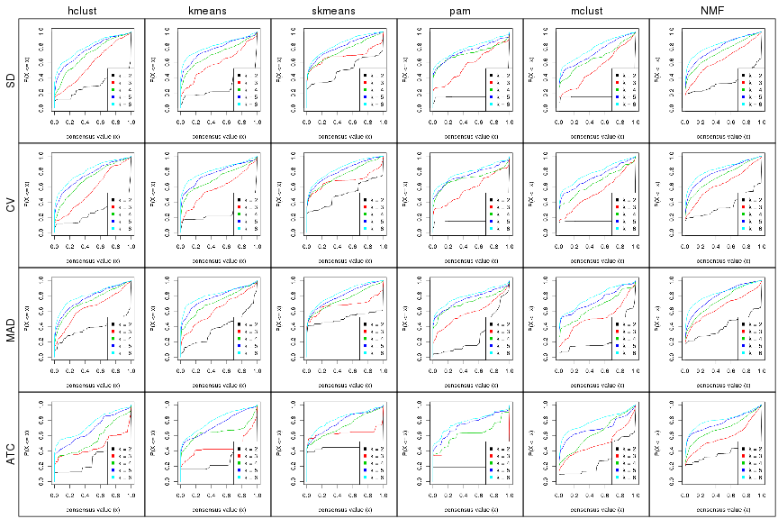
Consensus heatmaps for all methods. (What is a consensus heatmap?)
collect_plots(res_list, k = 2, fun = consensus_heatmap, mc.cores = 4)
collect_plots(res_list, k = 3, fun = consensus_heatmap, mc.cores = 4)
collect_plots(res_list, k = 4, fun = consensus_heatmap, mc.cores = 4)
collect_plots(res_list, k = 5, fun = consensus_heatmap, mc.cores = 4)
collect_plots(res_list, k = 6, fun = consensus_heatmap, mc.cores = 4)
Membership heatmaps for all methods. (What is a membership heatmap?)
collect_plots(res_list, k = 2, fun = membership_heatmap, mc.cores = 4)
collect_plots(res_list, k = 3, fun = membership_heatmap, mc.cores = 4)
collect_plots(res_list, k = 4, fun = membership_heatmap, mc.cores = 4)
collect_plots(res_list, k = 5, fun = membership_heatmap, mc.cores = 4)
collect_plots(res_list, k = 6, fun = membership_heatmap, mc.cores = 4)
Signature heatmaps for all methods. (What is a signature heatmap?)
Note in following heatmaps, rows are scaled.
collect_plots(res_list, k = 2, fun = get_signatures, mc.cores = 4)
collect_plots(res_list, k = 3, fun = get_signatures, mc.cores = 4)
collect_plots(res_list, k = 4, fun = get_signatures, mc.cores = 4)
collect_plots(res_list, k = 5, fun = get_signatures, mc.cores = 4)
collect_plots(res_list, k = 6, fun = get_signatures, mc.cores = 4)
The statistics used for measuring the stability of consensus partitioning. (How are they defined?)
get_stats(res_list, k = 2)
#> k 1-PAC mean_silhouette concordance area_increased Rand Jaccard
#> SD:NMF 2 0.768 0.873 0.944 0.350 0.673 0.673
#> CV:NMF 2 0.660 0.847 0.934 0.358 0.673 0.673
#> MAD:NMF 2 0.660 0.810 0.928 0.399 0.628 0.628
#> ATC:NMF 2 0.799 0.896 0.958 0.372 0.628 0.628
#> SD:skmeans 2 0.697 0.804 0.922 0.501 0.497 0.497
#> CV:skmeans 2 0.635 0.804 0.918 0.504 0.493 0.493
#> MAD:skmeans 2 0.924 0.911 0.968 0.509 0.491 0.491
#> ATC:skmeans 2 1.000 0.987 0.994 0.440 0.556 0.556
#> SD:mclust 2 1.000 0.979 0.985 0.166 0.850 0.850
#> CV:mclust 2 1.000 0.987 0.994 0.161 0.850 0.850
#> MAD:mclust 2 0.495 0.897 0.921 0.222 0.850 0.850
#> ATC:mclust 2 0.549 0.682 0.883 0.286 0.754 0.754
#> SD:kmeans 2 0.732 0.865 0.930 0.289 0.784 0.784
#> CV:kmeans 2 0.740 0.885 0.939 0.283 0.784 0.784
#> MAD:kmeans 2 0.536 0.828 0.893 0.379 0.571 0.571
#> ATC:kmeans 2 0.878 0.887 0.957 0.251 0.784 0.784
#> SD:pam 2 1.000 0.974 0.981 0.171 0.850 0.850
#> CV:pam 2 1.000 0.978 0.984 0.168 0.850 0.850
#> MAD:pam 2 0.251 0.767 0.818 0.290 0.850 0.850
#> ATC:pam 2 1.000 1.000 1.000 0.184 0.816 0.816
#> SD:hclust 2 0.729 0.860 0.938 0.300 0.699 0.699
#> CV:hclust 2 0.731 0.824 0.929 0.275 0.726 0.726
#> MAD:hclust 2 0.735 0.903 0.951 0.374 0.607 0.607
#> ATC:hclust 2 0.707 0.852 0.922 0.277 0.650 0.650
get_stats(res_list, k = 3)
#> k 1-PAC mean_silhouette concordance area_increased Rand Jaccard
#> SD:NMF 3 0.435 0.684 0.826 0.824 0.651 0.496
#> CV:NMF 3 0.427 0.717 0.836 0.781 0.651 0.494
#> MAD:NMF 3 0.574 0.697 0.862 0.645 0.615 0.428
#> ATC:NMF 3 0.519 0.764 0.864 0.569 0.743 0.611
#> SD:skmeans 3 0.769 0.879 0.923 0.354 0.715 0.483
#> CV:skmeans 3 0.746 0.874 0.918 0.345 0.713 0.478
#> MAD:skmeans 3 0.779 0.894 0.935 0.332 0.712 0.475
#> ATC:skmeans 3 0.908 0.946 0.975 0.448 0.762 0.589
#> SD:mclust 3 0.372 0.608 0.829 2.191 0.598 0.526
#> CV:mclust 3 0.361 0.730 0.860 2.332 0.620 0.553
#> MAD:mclust 3 0.434 0.853 0.899 1.348 0.650 0.588
#> ATC:mclust 3 0.575 0.797 0.882 0.757 0.742 0.667
#> SD:kmeans 3 0.401 0.745 0.841 1.046 0.575 0.478
#> CV:kmeans 3 0.434 0.751 0.865 1.068 0.565 0.469
#> MAD:kmeans 3 0.424 0.587 0.796 0.645 0.651 0.462
#> ATC:kmeans 3 0.622 0.884 0.926 0.789 0.771 0.712
#> SD:pam 3 0.453 0.698 0.865 2.362 0.569 0.493
#> CV:pam 3 0.531 0.731 0.890 2.446 0.571 0.496
#> MAD:pam 3 0.562 0.799 0.900 1.013 0.571 0.496
#> ATC:pam 3 1.000 0.994 0.997 0.899 0.829 0.792
#> SD:hclust 3 0.307 0.548 0.717 0.938 0.662 0.516
#> CV:hclust 3 0.266 0.242 0.632 1.059 0.733 0.648
#> MAD:hclust 3 0.401 0.757 0.838 0.720 0.721 0.540
#> ATC:hclust 3 0.786 0.825 0.922 0.657 0.905 0.857
get_stats(res_list, k = 4)
#> k 1-PAC mean_silhouette concordance area_increased Rand Jaccard
#> SD:NMF 4 0.523 0.630 0.812 0.155 0.744 0.420
#> CV:NMF 4 0.519 0.615 0.808 0.155 0.717 0.376
#> MAD:NMF 4 0.477 0.465 0.700 0.138 0.807 0.499
#> ATC:NMF 4 0.594 0.737 0.856 0.197 0.835 0.646
#> SD:skmeans 4 0.619 0.595 0.778 0.115 0.857 0.593
#> CV:skmeans 4 0.603 0.496 0.715 0.116 0.818 0.507
#> MAD:skmeans 4 0.625 0.549 0.774 0.117 0.936 0.804
#> ATC:skmeans 4 0.609 0.592 0.760 0.147 0.905 0.751
#> SD:mclust 4 0.491 0.691 0.828 0.240 0.760 0.525
#> CV:mclust 4 0.522 0.654 0.823 0.223 0.750 0.521
#> MAD:mclust 4 0.509 0.668 0.790 0.260 0.791 0.594
#> ATC:mclust 4 0.423 0.632 0.789 0.263 0.767 0.583
#> SD:kmeans 4 0.597 0.727 0.834 0.204 0.789 0.538
#> CV:kmeans 4 0.620 0.634 0.831 0.219 0.807 0.567
#> MAD:kmeans 4 0.561 0.685 0.787 0.157 0.776 0.493
#> ATC:kmeans 4 0.698 0.887 0.928 0.439 0.724 0.538
#> SD:pam 4 0.767 0.821 0.919 0.248 0.794 0.544
#> CV:pam 4 0.747 0.857 0.922 0.231 0.738 0.457
#> MAD:pam 4 0.737 0.784 0.901 0.228 0.718 0.426
#> ATC:pam 4 0.524 0.872 0.895 0.785 0.713 0.562
#> SD:hclust 4 0.438 0.542 0.679 0.214 0.864 0.664
#> CV:hclust 4 0.442 0.514 0.699 0.249 0.637 0.382
#> MAD:hclust 4 0.515 0.567 0.752 0.145 0.943 0.826
#> ATC:hclust 4 0.467 0.628 0.779 0.223 0.923 0.868
get_stats(res_list, k = 5)
#> k 1-PAC mean_silhouette concordance area_increased Rand Jaccard
#> SD:NMF 5 0.588 0.562 0.742 0.0798 0.868 0.560
#> CV:NMF 5 0.636 0.676 0.783 0.0815 0.838 0.492
#> MAD:NMF 5 0.572 0.427 0.632 0.0733 0.812 0.403
#> ATC:NMF 5 0.717 0.632 0.794 0.1064 0.862 0.607
#> SD:skmeans 5 0.615 0.523 0.735 0.0675 0.889 0.592
#> CV:skmeans 5 0.614 0.563 0.742 0.0672 0.836 0.445
#> MAD:skmeans 5 0.624 0.521 0.725 0.0636 0.871 0.560
#> ATC:skmeans 5 0.637 0.512 0.701 0.0728 0.887 0.645
#> SD:mclust 5 0.574 0.539 0.688 0.1133 0.856 0.619
#> CV:mclust 5 0.593 0.648 0.783 0.1181 0.847 0.607
#> MAD:mclust 5 0.609 0.551 0.773 0.1253 0.840 0.589
#> ATC:mclust 5 0.702 0.804 0.885 0.0987 0.960 0.888
#> SD:kmeans 5 0.612 0.594 0.768 0.0917 0.869 0.585
#> CV:kmeans 5 0.631 0.595 0.772 0.0900 0.838 0.511
#> MAD:kmeans 5 0.646 0.627 0.736 0.0858 0.874 0.592
#> ATC:kmeans 5 0.606 0.555 0.691 0.1507 0.796 0.477
#> SD:pam 5 0.675 0.673 0.859 0.0501 0.960 0.858
#> CV:pam 5 0.638 0.610 0.817 0.0583 0.978 0.922
#> MAD:pam 5 0.691 0.641 0.849 0.0628 0.916 0.720
#> ATC:pam 5 0.580 0.752 0.848 0.1948 0.851 0.601
#> SD:hclust 5 0.573 0.453 0.699 0.0858 0.843 0.561
#> CV:hclust 5 0.578 0.528 0.734 0.0779 0.838 0.532
#> MAD:hclust 5 0.570 0.645 0.743 0.0551 0.907 0.685
#> ATC:hclust 5 0.513 0.593 0.789 0.2229 0.782 0.591
get_stats(res_list, k = 6)
#> k 1-PAC mean_silhouette concordance area_increased Rand Jaccard
#> SD:NMF 6 0.719 0.683 0.811 0.0471 0.882 0.520
#> CV:NMF 6 0.703 0.671 0.814 0.0479 0.901 0.580
#> MAD:NMF 6 0.711 0.671 0.818 0.0437 0.865 0.454
#> ATC:NMF 6 0.734 0.760 0.850 0.0467 0.892 0.590
#> SD:skmeans 6 0.652 0.448 0.643 0.0411 0.920 0.636
#> CV:skmeans 6 0.648 0.443 0.681 0.0403 0.922 0.634
#> MAD:skmeans 6 0.636 0.461 0.679 0.0413 0.906 0.580
#> ATC:skmeans 6 0.696 0.622 0.773 0.0503 0.901 0.602
#> SD:mclust 6 0.623 0.573 0.726 0.0745 0.876 0.640
#> CV:mclust 6 0.634 0.575 0.793 0.0767 0.881 0.623
#> MAD:mclust 6 0.648 0.520 0.751 0.0666 0.863 0.584
#> ATC:mclust 6 0.725 0.683 0.846 0.1295 0.768 0.393
#> SD:kmeans 6 0.735 0.680 0.795 0.0540 0.919 0.663
#> CV:kmeans 6 0.725 0.669 0.785 0.0539 0.914 0.650
#> MAD:kmeans 6 0.760 0.735 0.806 0.0481 0.936 0.720
#> ATC:kmeans 6 0.638 0.515 0.666 0.0764 0.956 0.825
#> SD:pam 6 0.692 0.627 0.790 0.0485 0.926 0.715
#> CV:pam 6 0.704 0.685 0.830 0.0510 0.912 0.683
#> MAD:pam 6 0.724 0.646 0.824 0.0531 0.939 0.753
#> ATC:pam 6 0.656 0.738 0.858 0.0483 0.956 0.818
#> SD:hclust 6 0.611 0.402 0.667 0.0505 0.918 0.701
#> CV:hclust 6 0.614 0.524 0.728 0.0623 0.938 0.755
#> MAD:hclust 6 0.642 0.684 0.780 0.0487 0.963 0.838
#> ATC:hclust 6 0.602 0.384 0.657 0.0918 0.800 0.479
Following heatmap plots the partition for each combination of methods and the lightness correspond to the silhouette scores for samples in each method. On top the consensus subgroup is inferred from all methods by taking the mean silhouette scores as weight.
collect_stats(res_list, k = 2)
collect_stats(res_list, k = 3)
collect_stats(res_list, k = 4)
collect_stats(res_list, k = 5)
collect_stats(res_list, k = 6)
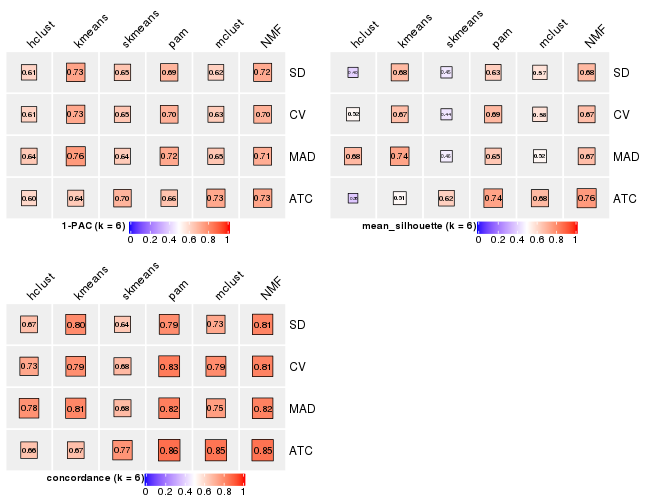
Collect partitions from all methods:
collect_classes(res_list, k = 2)
collect_classes(res_list, k = 3)
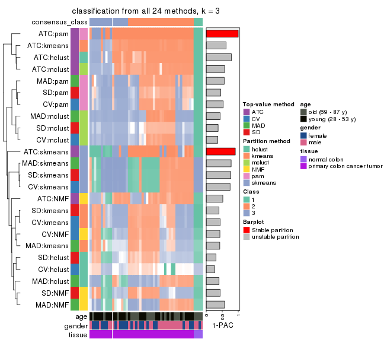
collect_classes(res_list, k = 4)
collect_classes(res_list, k = 5)
collect_classes(res_list, k = 6)
Overlap of top rows from different top-row methods:
top_rows_overlap(res_list, top_n = 1000, method = "euler")
top_rows_overlap(res_list, top_n = 2000, method = "euler")
top_rows_overlap(res_list, top_n = 3000, method = "euler")
top_rows_overlap(res_list, top_n = 4000, method = "euler")
top_rows_overlap(res_list, top_n = 5000, method = "euler")
Also visualize the correspondance of rankings between different top-row methods:
top_rows_overlap(res_list, top_n = 1000, method = "correspondance")
top_rows_overlap(res_list, top_n = 2000, method = "correspondance")
top_rows_overlap(res_list, top_n = 3000, method = "correspondance")

top_rows_overlap(res_list, top_n = 4000, method = "correspondance")
top_rows_overlap(res_list, top_n = 5000, method = "correspondance")
Heatmaps of the top rows:
top_rows_heatmap(res_list, top_n = 1000)
top_rows_heatmap(res_list, top_n = 2000)
top_rows_heatmap(res_list, top_n = 3000)
top_rows_heatmap(res_list, top_n = 4000)
top_rows_heatmap(res_list, top_n = 5000)

Test correlation between subgroups and known annotations. If the known annotation is numeric, one-way ANOVA test is applied, and if the known annotation is discrete, chi-squared contingency table test is applied.
test_to_known_factors(res_list, k = 2)
#> n age(p) gender(p) tissue(p) k
#> SD:NMF 48 1.0000 1.000 7.18e-05 2
#> CV:NMF 45 1.0000 1.000 1.33e-04 2
#> MAD:NMF 44 0.9738 0.765 1.19e-03 2
#> ATC:NMF 47 0.9357 1.000 1.55e-03 2
#> SD:skmeans 41 0.6152 0.508 4.91e-02 2
#> CV:skmeans 49 0.8652 0.710 8.98e-02 2
#> MAD:skmeans 47 0.6104 0.935 8.82e-02 2
#> ATC:skmeans 50 0.6009 0.779 1.31e-02 2
#> SD:mclust 50 0.0825 0.785 9.94e-10 2
#> CV:mclust 50 0.0825 0.785 9.94e-10 2
#> MAD:mclust 50 0.0825 0.785 9.94e-10 2
#> ATC:mclust 44 0.0949 0.884 1.06e-08 2
#> SD:kmeans 50 0.5182 0.318 1.27e-06 2
#> CV:kmeans 50 0.5182 0.318 1.27e-06 2
#> MAD:kmeans 50 0.8044 0.576 8.89e-03 2
#> ATC:kmeans 45 0.2673 0.557 3.52e-07 2
#> SD:pam 50 0.0825 0.785 9.94e-10 2
#> CV:pam 50 0.0825 0.785 9.94e-10 2
#> MAD:pam 50 0.0825 0.785 9.94e-10 2
#> ATC:pam 50 0.2564 0.506 7.18e-08 2
#> SD:hclust 47 0.9434 1.000 2.81e-04 2
#> CV:hclust 45 0.6191 0.488 4.84e-06 2
#> MAD:hclust 48 1.0000 0.401 2.57e-03 2
#> ATC:hclust 49 0.8173 1.000 1.14e-03 2
test_to_known_factors(res_list, k = 3)
#> n age(p) gender(p) tissue(p) k
#> SD:NMF 42 0.6146 0.708 3.02e-04 3
#> CV:NMF 45 0.7149 0.781 1.54e-04 3
#> MAD:NMF 42 0.6713 0.266 3.02e-04 3
#> ATC:NMF 48 0.7066 0.528 2.82e-06 3
#> SD:skmeans 49 0.6541 0.129 1.12e-02 3
#> CV:skmeans 50 0.7704 0.110 9.86e-03 3
#> MAD:skmeans 49 0.6541 0.129 1.12e-02 3
#> ATC:skmeans 49 0.9911 0.918 2.40e-03 3
#> SD:mclust 40 0.0171 0.188 2.06e-09 3
#> CV:mclust 45 0.0308 0.141 1.69e-10 3
#> MAD:mclust 50 0.0175 0.112 1.39e-11 3
#> ATC:mclust 48 0.0243 0.461 3.78e-11 3
#> SD:kmeans 46 0.0181 0.603 1.03e-10 3
#> CV:kmeans 46 0.0181 0.603 1.03e-10 3
#> MAD:kmeans 33 0.0904 0.246 6.83e-08 3
#> ATC:kmeans 50 0.0343 0.582 1.39e-11 3
#> SD:pam 43 0.0785 0.412 4.60e-10 3
#> CV:pam 40 0.0754 0.243 2.06e-09 3
#> MAD:pam 47 0.0813 0.310 6.22e-11 3
#> ATC:pam 50 0.0713 0.392 1.39e-11 3
#> SD:hclust 36 0.7380 0.431 1.17e-03 3
#> CV:hclust 12 1.0000 0.480 4.80e-01 3
#> MAD:hclust 48 0.9194 0.107 1.44e-03 3
#> ATC:hclust 48 0.0461 0.703 3.78e-11 3
test_to_known_factors(res_list, k = 4)
#> n age(p) gender(p) tissue(p) k
#> SD:NMF 38 0.1610 0.4551 2.83e-08 4
#> CV:NMF 38 0.1610 0.4551 2.83e-08 4
#> MAD:NMF 30 0.6161 0.5363 5.35e-03 4
#> ATC:NMF 44 0.1415 0.5962 1.70e-07 4
#> SD:skmeans 36 0.9652 0.4959 6.01e-03 4
#> CV:skmeans 31 0.8981 0.1125 3.93e-02 4
#> MAD:skmeans 30 0.6184 0.4476 1.53e-01 4
#> ATC:skmeans 38 0.6900 0.8881 3.52e-02 4
#> SD:mclust 43 0.0437 0.1085 2.46e-09 4
#> CV:mclust 40 0.0291 0.1314 1.07e-08 4
#> MAD:mclust 40 0.0509 0.2833 1.07e-08 4
#> ATC:mclust 40 0.1333 0.7661 1.07e-08 4
#> SD:kmeans 47 0.0615 0.5885 3.48e-10 4
#> CV:kmeans 40 0.0902 0.1719 1.07e-08 4
#> MAD:kmeans 46 0.0430 0.3932 5.67e-10 4
#> ATC:kmeans 49 0.1171 0.7422 1.30e-10 4
#> SD:pam 47 0.0952 0.7265 3.48e-10 4
#> CV:pam 48 0.1188 0.6290 2.13e-10 4
#> MAD:pam 45 0.1837 0.6420 9.25e-10 4
#> ATC:pam 50 0.0959 0.5770 7.99e-11 4
#> SD:hclust 34 0.0558 0.0934 1.98e-07 4
#> CV:hclust 29 0.1387 0.3145 2.24e-06 4
#> MAD:hclust 36 0.9870 0.4105 2.93e-02 4
#> ATC:hclust 40 0.0907 0.3657 2.06e-09 4
test_to_known_factors(res_list, k = 5)
#> n age(p) gender(p) tissue(p) k
#> SD:NMF 34 0.1669 0.373 7.45e-07 5
#> CV:NMF 45 0.1628 0.406 3.98e-09 5
#> MAD:NMF 21 0.6848 0.561 6.27e-03 5
#> ATC:NMF 38 0.2908 0.473 6.17e-06 5
#> SD:skmeans 31 0.9126 0.754 2.41e-02 5
#> CV:skmeans 37 0.9972 0.703 7.45e-03 5
#> MAD:skmeans 33 0.8706 0.668 1.64e-02 5
#> ATC:skmeans 34 0.4176 0.640 6.23e-02 5
#> SD:mclust 34 0.0328 0.505 1.98e-07 5
#> CV:mclust 38 0.0298 0.277 2.83e-08 5
#> MAD:mclust 34 0.0338 0.188 7.45e-07 5
#> ATC:mclust 48 0.1731 0.263 9.44e-10 5
#> SD:kmeans 34 0.0559 0.518 7.45e-07 5
#> CV:kmeans 35 0.0607 0.527 4.65e-07 5
#> MAD:kmeans 39 0.0408 0.568 6.97e-08 5
#> ATC:kmeans 31 0.0640 0.591 8.50e-07 5
#> SD:pam 38 0.0657 0.790 2.83e-08 5
#> CV:pam 32 0.0992 0.563 1.13e-07 5
#> MAD:pam 36 0.0303 0.672 2.89e-07 5
#> ATC:pam 46 0.0681 0.666 2.46e-09 5
#> SD:hclust 26 0.0495 0.438 9.54e-06 5
#> CV:hclust 33 0.0436 0.170 3.22e-07 5
#> MAD:hclust 40 0.0625 0.188 4.33e-08 5
#> ATC:hclust 37 0.1255 0.478 1.80e-07 5
test_to_known_factors(res_list, k = 6)
#> n age(p) gender(p) tissue(p) k
#> SD:NMF 42 0.2260 0.673 5.89e-08 6
#> CV:NMF 42 0.2205 0.522 5.89e-08 6
#> MAD:NMF 42 0.2205 0.832 5.89e-08 6
#> ATC:NMF 47 0.5455 0.263 6.80e-07 6
#> SD:skmeans 19 0.5531 0.203 1.30e-02 6
#> CV:skmeans 26 0.5380 0.338 7.57e-03 6
#> MAD:skmeans 31 0.6083 0.347 7.61e-03 6
#> ATC:skmeans 39 0.3753 0.799 4.01e-03 6
#> SD:mclust 38 0.1228 0.232 1.12e-07 6
#> CV:mclust 34 0.1949 0.324 2.38e-06 6
#> MAD:mclust 28 0.1362 0.387 3.64e-05 6
#> ATC:mclust 40 0.2699 0.692 1.49e-07 6
#> SD:kmeans 40 0.1125 0.341 1.49e-07 6
#> CV:kmeans 39 0.0906 0.533 2.37e-07 6
#> MAD:kmeans 44 0.1118 0.457 2.32e-08 6
#> ATC:kmeans 24 0.0463 0.582 2.50e-05 6
#> SD:pam 34 0.0275 0.431 7.45e-07 6
#> CV:pam 42 0.0290 0.916 5.89e-08 6
#> MAD:pam 37 0.0711 0.771 5.99e-07 6
#> ATC:pam 45 0.2028 0.507 1.45e-08 6
#> SD:hclust 22 0.0985 0.318 2.00e-04 6
#> CV:hclust 30 0.1084 0.100 1.47e-05 6
#> MAD:hclust 41 0.0904 0.119 9.38e-08 6
#> ATC:hclust 24 0.0857 0.308 7.99e-05 6
The object with results only for a single top-value method and a single partition method can be extracted as:
res = res_list["SD", "hclust"]
# you can also extract it by
# res = res_list["SD:hclust"]
A summary of res and all the functions that can be applied to it:
res
#> A 'ConsensusPartition' object with k = 2, 3, 4, 5, 6.
#> On a matrix with 16230 rows and 50 columns.
#> Top rows (1000, 2000, 3000, 4000, 5000) are extracted by 'SD' method.
#> Subgroups are detected by 'hclust' method.
#> Performed in total 1250 partitions by row resampling.
#> Best k for subgroups seems to be 3.
#>
#> Following methods can be applied to this 'ConsensusPartition' object:
#> [1] "cola_report" "collect_classes" "collect_plots"
#> [4] "collect_stats" "colnames" "compare_signatures"
#> [7] "consensus_heatmap" "dimension_reduction" "functional_enrichment"
#> [10] "get_anno_col" "get_anno" "get_classes"
#> [13] "get_consensus" "get_matrix" "get_membership"
#> [16] "get_param" "get_signatures" "get_stats"
#> [19] "is_best_k" "is_stable_k" "membership_heatmap"
#> [22] "ncol" "nrow" "plot_ecdf"
#> [25] "rownames" "select_partition_number" "show"
#> [28] "suggest_best_k" "test_to_known_factors"
collect_plots() function collects all the plots made from res for all k (number of partitions)
into one single page to provide an easy and fast comparison between different k.
collect_plots(res)
The plots are:
k and the heatmap of
predicted classes for each k.k.k.k.All the plots in panels can be made by individual functions and they are plotted later in this section.
select_partition_number() produces several plots showing different
statistics for choosing “optimized” k. There are following statistics:
k;k, the area increased is defined as \(A_k - A_{k-1}\).The detailed explanations of these statistics can be found in the cola vignette.
Generally speaking, lower PAC score, higher mean silhouette score or higher
concordance corresponds to better partition. Rand index and Jaccard index
measure how similar the current partition is compared to partition with k-1.
If they are too similar, we won't accept k is better than k-1.
select_partition_number(res)
The numeric values for all these statistics can be obtained by get_stats().
get_stats(res)
#> k 1-PAC mean_silhouette concordance area_increased Rand Jaccard
#> 2 2 0.729 0.860 0.938 0.3000 0.699 0.699
#> 3 3 0.307 0.548 0.717 0.9376 0.662 0.516
#> 4 4 0.438 0.542 0.679 0.2140 0.864 0.664
#> 5 5 0.573 0.453 0.699 0.0858 0.843 0.561
#> 6 6 0.611 0.402 0.667 0.0505 0.918 0.701
suggest_best_k() suggests the best \(k\) based on these statistics. The rules are as follows:
suggest_best_k(res)
#> [1] 3
Following shows the table of the partitions (You need to click the show/hide
code output link to see it). The membership matrix (columns with name p*)
is inferred by
clue::cl_consensus()
function with the SE method. Basically the value in the membership matrix
represents the probability to belong to a certain group. The finall class
label for an item is determined with the group with highest probability it
belongs to.
In get_classes() function, the entropy is calculated from the membership
matrix and the silhouette score is calculated from the consensus matrix.
cbind(get_classes(res, k = 2), get_membership(res, k = 2))
#> class entropy silhouette p1 p2
#> GSM615919 2 0.0000 0.947 0.000 1.000
#> GSM615921 2 0.0000 0.947 0.000 1.000
#> GSM615922 2 0.9358 0.356 0.352 0.648
#> GSM615925 2 0.0000 0.947 0.000 1.000
#> GSM615926 1 0.8555 0.743 0.720 0.280
#> GSM615933 2 0.0000 0.947 0.000 1.000
#> GSM615939 2 0.0000 0.947 0.000 1.000
#> GSM615941 2 0.9710 0.197 0.400 0.600
#> GSM615944 1 0.8555 0.743 0.720 0.280
#> GSM615945 2 0.0000 0.947 0.000 1.000
#> GSM615947 2 0.0000 0.947 0.000 1.000
#> GSM615948 2 0.9491 0.307 0.368 0.632
#> GSM615951 2 0.1184 0.936 0.016 0.984
#> GSM615918 2 0.0000 0.947 0.000 1.000
#> GSM615927 2 0.0000 0.947 0.000 1.000
#> GSM615929 2 0.1843 0.925 0.028 0.972
#> GSM615931 2 0.0000 0.947 0.000 1.000
#> GSM615937 2 0.0000 0.947 0.000 1.000
#> GSM615938 2 0.0000 0.947 0.000 1.000
#> GSM615940 2 0.0000 0.947 0.000 1.000
#> GSM615946 2 0.0000 0.947 0.000 1.000
#> GSM615952 2 0.1184 0.936 0.016 0.984
#> GSM615953 2 0.0376 0.944 0.004 0.996
#> GSM615955 1 0.7528 0.796 0.784 0.216
#> GSM721722 1 0.7528 0.796 0.784 0.216
#> GSM721723 2 0.0000 0.947 0.000 1.000
#> GSM721724 2 0.0000 0.947 0.000 1.000
#> GSM615917 2 0.0000 0.947 0.000 1.000
#> GSM615920 1 0.9491 0.594 0.632 0.368
#> GSM615923 2 0.0000 0.947 0.000 1.000
#> GSM615928 2 0.0000 0.947 0.000 1.000
#> GSM615934 2 0.8207 0.590 0.256 0.744
#> GSM615950 2 0.0000 0.947 0.000 1.000
#> GSM615954 2 0.0000 0.947 0.000 1.000
#> GSM615956 2 0.0376 0.944 0.004 0.996
#> GSM615958 1 0.0000 0.810 1.000 0.000
#> GSM615924 2 0.0000 0.947 0.000 1.000
#> GSM615930 2 0.0000 0.947 0.000 1.000
#> GSM615932 2 0.0000 0.947 0.000 1.000
#> GSM615935 2 0.0000 0.947 0.000 1.000
#> GSM615936 2 0.1843 0.925 0.028 0.972
#> GSM615942 2 0.7528 0.670 0.216 0.784
#> GSM615943 2 0.0000 0.947 0.000 1.000
#> GSM615949 2 0.2236 0.917 0.036 0.964
#> GSM615957 2 0.0000 0.947 0.000 1.000
#> GSM721720 2 0.0000 0.947 0.000 1.000
#> GSM721721 2 0.0000 0.947 0.000 1.000
#> GSM615959 1 0.0000 0.810 1.000 0.000
#> GSM615960 1 0.0000 0.810 1.000 0.000
#> GSM615961 1 0.0000 0.810 1.000 0.000
cbind(get_classes(res, k = 3), get_membership(res, k = 3))
#> class entropy silhouette p1 p2 p3
#> GSM615919 2 0.4291 0.5188 0.000 0.820 0.180
#> GSM615921 2 0.6274 0.2554 0.000 0.544 0.456
#> GSM615922 3 0.9387 0.1048 0.272 0.220 0.508
#> GSM615925 2 0.1411 0.6153 0.000 0.964 0.036
#> GSM615926 1 0.8120 0.7765 0.640 0.224 0.136
#> GSM615933 2 0.5016 0.6669 0.000 0.760 0.240
#> GSM615939 3 0.5678 0.5751 0.000 0.316 0.684
#> GSM615941 3 0.9679 -0.1138 0.320 0.232 0.448
#> GSM615944 1 0.8120 0.7765 0.640 0.224 0.136
#> GSM615945 2 0.4931 0.6728 0.000 0.768 0.232
#> GSM615947 3 0.4399 0.5672 0.000 0.188 0.812
#> GSM615948 3 0.9472 0.0503 0.288 0.220 0.492
#> GSM615951 3 0.6200 0.5708 0.012 0.312 0.676
#> GSM615918 2 0.0424 0.6179 0.000 0.992 0.008
#> GSM615927 2 0.2448 0.6465 0.000 0.924 0.076
#> GSM615929 3 0.6280 0.3140 0.000 0.460 0.540
#> GSM615931 2 0.4654 0.6714 0.000 0.792 0.208
#> GSM615937 2 0.6274 0.4747 0.000 0.544 0.456
#> GSM615938 3 0.3879 0.5273 0.000 0.152 0.848
#> GSM615940 3 0.5497 0.5866 0.000 0.292 0.708
#> GSM615946 3 0.5706 0.5673 0.000 0.320 0.680
#> GSM615952 3 0.6200 0.5708 0.012 0.312 0.676
#> GSM615953 3 0.5873 0.5597 0.004 0.312 0.684
#> GSM615955 1 0.7388 0.8136 0.704 0.160 0.136
#> GSM721722 1 0.7388 0.8136 0.704 0.160 0.136
#> GSM721723 3 0.4974 0.3551 0.000 0.236 0.764
#> GSM721724 3 0.5431 0.5883 0.000 0.284 0.716
#> GSM615917 2 0.1163 0.6235 0.000 0.972 0.028
#> GSM615920 1 0.8491 0.7044 0.572 0.312 0.116
#> GSM615923 2 0.6045 0.4362 0.000 0.620 0.380
#> GSM615928 2 0.5650 0.3590 0.000 0.688 0.312
#> GSM615934 3 0.9249 0.2875 0.180 0.312 0.508
#> GSM615950 2 0.6274 0.4747 0.000 0.544 0.456
#> GSM615954 2 0.5098 0.6684 0.000 0.752 0.248
#> GSM615956 3 0.5873 0.5597 0.004 0.312 0.684
#> GSM615958 1 0.0000 0.8071 1.000 0.000 0.000
#> GSM615924 2 0.3752 0.5660 0.000 0.856 0.144
#> GSM615930 2 0.4750 0.6734 0.000 0.784 0.216
#> GSM615932 3 0.3816 0.5308 0.000 0.148 0.852
#> GSM615935 3 0.3816 0.5308 0.000 0.148 0.852
#> GSM615936 3 0.5254 0.5840 0.000 0.264 0.736
#> GSM615942 3 0.7585 0.4884 0.180 0.132 0.688
#> GSM615943 2 0.5098 0.6671 0.000 0.752 0.248
#> GSM615949 3 0.5365 0.5817 0.004 0.252 0.744
#> GSM615957 3 0.3752 0.5211 0.000 0.144 0.856
#> GSM721720 3 0.4974 0.3551 0.000 0.236 0.764
#> GSM721721 2 0.6045 0.4362 0.000 0.620 0.380
#> GSM615959 1 0.0000 0.8071 1.000 0.000 0.000
#> GSM615960 1 0.0000 0.8071 1.000 0.000 0.000
#> GSM615961 1 0.0000 0.8071 1.000 0.000 0.000
cbind(get_classes(res, k = 4), get_membership(res, k = 4))
#> class entropy silhouette p1 p2 p3 p4
#> GSM615919 4 0.9864 0.297 0.260 0.272 0.172 0.296
#> GSM615921 2 0.9557 -0.163 0.296 0.316 0.112 0.276
#> GSM615922 3 0.6239 0.390 0.028 0.420 0.536 0.016
#> GSM615925 4 0.8071 0.570 0.192 0.068 0.168 0.572
#> GSM615926 3 0.1940 0.575 0.000 0.076 0.924 0.000
#> GSM615933 4 0.1022 0.690 0.000 0.032 0.000 0.968
#> GSM615939 2 0.2684 0.653 0.016 0.912 0.012 0.060
#> GSM615941 3 0.5954 0.500 0.028 0.356 0.604 0.012
#> GSM615944 3 0.1940 0.575 0.000 0.076 0.924 0.000
#> GSM615945 4 0.0469 0.691 0.000 0.012 0.000 0.988
#> GSM615947 2 0.3907 0.625 0.140 0.828 0.000 0.032
#> GSM615948 3 0.6207 0.425 0.028 0.404 0.552 0.016
#> GSM615951 2 0.4557 0.656 0.056 0.828 0.028 0.088
#> GSM615918 4 0.7244 0.592 0.180 0.032 0.160 0.628
#> GSM615927 4 0.6154 0.629 0.156 0.012 0.128 0.704
#> GSM615929 2 0.7851 0.392 0.100 0.608 0.176 0.116
#> GSM615931 4 0.1305 0.694 0.004 0.036 0.000 0.960
#> GSM615937 4 0.6071 0.512 0.172 0.144 0.000 0.684
#> GSM615938 2 0.4590 0.603 0.148 0.792 0.000 0.060
#> GSM615940 2 0.4093 0.618 0.028 0.852 0.040 0.080
#> GSM615946 2 0.2911 0.656 0.016 0.900 0.012 0.072
#> GSM615952 2 0.4557 0.656 0.056 0.828 0.028 0.088
#> GSM615953 2 0.4430 0.659 0.056 0.828 0.016 0.100
#> GSM615955 3 0.1284 0.469 0.012 0.024 0.964 0.000
#> GSM721722 3 0.1284 0.469 0.012 0.024 0.964 0.000
#> GSM721723 2 0.7434 0.372 0.256 0.512 0.000 0.232
#> GSM721724 2 0.3652 0.626 0.028 0.876 0.040 0.056
#> GSM615917 4 0.7836 0.585 0.180 0.064 0.160 0.596
#> GSM615920 3 0.4287 0.490 0.012 0.072 0.836 0.080
#> GSM615923 4 0.7112 0.408 0.128 0.300 0.008 0.564
#> GSM615928 2 0.9442 -0.203 0.216 0.344 0.112 0.328
#> GSM615934 2 0.6838 -0.231 0.028 0.496 0.432 0.044
#> GSM615950 4 0.6071 0.512 0.172 0.144 0.000 0.684
#> GSM615954 4 0.2797 0.676 0.020 0.060 0.012 0.908
#> GSM615956 2 0.4372 0.659 0.056 0.828 0.012 0.104
#> GSM615958 1 0.4981 1.000 0.536 0.000 0.464 0.000
#> GSM615924 4 0.9734 0.390 0.220 0.248 0.172 0.360
#> GSM615930 4 0.1109 0.694 0.004 0.028 0.000 0.968
#> GSM615932 2 0.5770 0.590 0.148 0.712 0.000 0.140
#> GSM615935 2 0.5770 0.590 0.148 0.712 0.000 0.140
#> GSM615936 2 0.4649 0.596 0.028 0.824 0.068 0.080
#> GSM615942 2 0.5832 0.320 0.028 0.676 0.272 0.024
#> GSM615943 4 0.0779 0.686 0.004 0.016 0.000 0.980
#> GSM615949 2 0.4716 0.585 0.028 0.820 0.084 0.068
#> GSM615957 2 0.6245 0.552 0.244 0.648 0.000 0.108
#> GSM721720 2 0.7434 0.372 0.256 0.512 0.000 0.232
#> GSM721721 4 0.7112 0.408 0.128 0.300 0.008 0.564
#> GSM615959 1 0.4981 1.000 0.536 0.000 0.464 0.000
#> GSM615960 1 0.4981 1.000 0.536 0.000 0.464 0.000
#> GSM615961 1 0.4981 1.000 0.536 0.000 0.464 0.000
cbind(get_classes(res, k = 5), get_membership(res, k = 5))
#> class entropy silhouette p1 p2 p3 p4 p5
#> GSM615919 4 0.5195 0.375 0.000 0.348 0.028 0.608 0.016
#> GSM615921 4 0.6174 0.324 0.000 0.264 0.048 0.612 0.076
#> GSM615922 3 0.4489 0.422 0.000 0.420 0.572 0.008 0.000
#> GSM615925 4 0.6024 -0.056 0.000 0.056 0.028 0.516 0.400
#> GSM615926 3 0.3058 0.708 0.096 0.044 0.860 0.000 0.000
#> GSM615933 5 0.0955 0.728 0.000 0.028 0.000 0.004 0.968
#> GSM615939 2 0.2351 0.579 0.000 0.896 0.016 0.088 0.000
#> GSM615941 3 0.4166 0.536 0.000 0.348 0.648 0.004 0.000
#> GSM615944 3 0.3058 0.708 0.096 0.044 0.860 0.000 0.000
#> GSM615945 5 0.0162 0.731 0.000 0.004 0.000 0.000 0.996
#> GSM615947 2 0.4538 0.485 0.000 0.692 0.016 0.280 0.012
#> GSM615948 3 0.4455 0.452 0.000 0.404 0.588 0.008 0.000
#> GSM615951 2 0.4386 0.524 0.000 0.788 0.116 0.080 0.016
#> GSM615918 5 0.5313 0.147 0.000 0.012 0.028 0.444 0.516
#> GSM615927 5 0.4948 0.313 0.000 0.008 0.024 0.356 0.612
#> GSM615929 2 0.5283 0.296 0.000 0.676 0.084 0.232 0.008
#> GSM615931 5 0.1106 0.726 0.000 0.012 0.000 0.024 0.964
#> GSM615937 5 0.5886 0.476 0.004 0.056 0.036 0.272 0.632
#> GSM615938 2 0.5459 0.435 0.004 0.624 0.012 0.312 0.048
#> GSM615940 2 0.2060 0.565 0.000 0.924 0.052 0.016 0.008
#> GSM615946 2 0.2747 0.577 0.000 0.884 0.016 0.088 0.012
#> GSM615952 2 0.4386 0.524 0.000 0.788 0.116 0.080 0.016
#> GSM615953 2 0.4663 0.518 0.004 0.784 0.104 0.080 0.028
#> GSM615955 3 0.3093 0.655 0.168 0.008 0.824 0.000 0.000
#> GSM721722 3 0.3093 0.655 0.168 0.008 0.824 0.000 0.000
#> GSM721723 4 0.7915 -0.108 0.004 0.316 0.100 0.420 0.160
#> GSM721724 2 0.1549 0.569 0.000 0.944 0.040 0.016 0.000
#> GSM615917 4 0.6013 -0.153 0.000 0.052 0.028 0.476 0.444
#> GSM615920 3 0.5185 0.642 0.088 0.040 0.760 0.100 0.012
#> GSM615923 2 0.7123 -0.313 0.000 0.364 0.012 0.332 0.292
#> GSM615928 4 0.6506 0.316 0.000 0.388 0.040 0.492 0.080
#> GSM615934 2 0.4723 -0.243 0.000 0.536 0.448 0.016 0.000
#> GSM615950 5 0.5886 0.476 0.004 0.056 0.036 0.272 0.632
#> GSM615954 5 0.3841 0.668 0.004 0.048 0.048 0.056 0.844
#> GSM615956 2 0.4612 0.518 0.004 0.788 0.100 0.080 0.028
#> GSM615958 1 0.0290 1.000 0.992 0.000 0.008 0.000 0.000
#> GSM615924 4 0.6205 0.414 0.000 0.292 0.028 0.584 0.096
#> GSM615930 5 0.0671 0.730 0.000 0.004 0.000 0.016 0.980
#> GSM615932 2 0.6494 0.384 0.004 0.540 0.012 0.304 0.140
#> GSM615935 2 0.6494 0.384 0.004 0.540 0.012 0.304 0.140
#> GSM615936 2 0.2414 0.561 0.000 0.900 0.080 0.012 0.008
#> GSM615942 2 0.4560 0.297 0.000 0.672 0.304 0.016 0.008
#> GSM615943 5 0.0671 0.731 0.000 0.004 0.000 0.016 0.980
#> GSM615949 2 0.2748 0.557 0.000 0.880 0.096 0.016 0.008
#> GSM615957 2 0.6929 0.238 0.004 0.452 0.100 0.400 0.044
#> GSM721720 4 0.7915 -0.108 0.004 0.316 0.100 0.420 0.160
#> GSM721721 2 0.7123 -0.313 0.000 0.364 0.012 0.332 0.292
#> GSM615959 1 0.0290 1.000 0.992 0.000 0.008 0.000 0.000
#> GSM615960 1 0.0290 1.000 0.992 0.000 0.008 0.000 0.000
#> GSM615961 1 0.0290 1.000 0.992 0.000 0.008 0.000 0.000
cbind(get_classes(res, k = 6), get_membership(res, k = 6))
#> class entropy silhouette p1 p2 p3 p4 p5 p6
#> GSM615919 4 0.6061 0.2382 0.000 0.328 0.000 0.492 0.160 0.020
#> GSM615921 4 0.7541 0.1139 0.000 0.200 0.000 0.344 0.176 0.280
#> GSM615922 3 0.3810 0.4251 0.000 0.428 0.572 0.000 0.000 0.000
#> GSM615925 4 0.1934 0.2924 0.000 0.040 0.000 0.916 0.044 0.000
#> GSM615926 3 0.0000 0.7302 0.000 0.000 1.000 0.000 0.000 0.000
#> GSM615933 5 0.4732 0.9378 0.000 0.020 0.000 0.476 0.488 0.016
#> GSM615939 2 0.3910 0.6101 0.000 0.792 0.008 0.004 0.096 0.100
#> GSM615941 3 0.3620 0.5356 0.000 0.352 0.648 0.000 0.000 0.000
#> GSM615944 3 0.0000 0.7302 0.000 0.000 1.000 0.000 0.000 0.000
#> GSM615945 5 0.3862 0.9540 0.000 0.000 0.000 0.476 0.524 0.000
#> GSM615947 2 0.5133 0.5059 0.000 0.592 0.000 0.000 0.292 0.116
#> GSM615948 3 0.3782 0.4540 0.000 0.412 0.588 0.000 0.000 0.000
#> GSM615951 2 0.5673 0.4951 0.000 0.604 0.068 0.012 0.036 0.280
#> GSM615918 4 0.0790 0.1355 0.000 0.000 0.000 0.968 0.032 0.000
#> GSM615927 4 0.2402 -0.0682 0.000 0.004 0.000 0.856 0.140 0.000
#> GSM615929 2 0.4585 0.4197 0.000 0.724 0.036 0.188 0.052 0.000
#> GSM615931 4 0.3866 -0.9175 0.000 0.000 0.000 0.516 0.484 0.000
#> GSM615937 6 0.5859 0.0950 0.000 0.000 0.000 0.232 0.288 0.480
#> GSM615938 2 0.5499 0.4483 0.000 0.512 0.000 0.000 0.348 0.140
#> GSM615940 2 0.0260 0.5895 0.000 0.992 0.008 0.000 0.000 0.000
#> GSM615946 2 0.4047 0.6083 0.000 0.780 0.008 0.004 0.108 0.100
#> GSM615952 2 0.5673 0.4951 0.000 0.604 0.068 0.012 0.036 0.280
#> GSM615953 2 0.5674 0.4927 0.000 0.608 0.048 0.016 0.048 0.280
#> GSM615955 3 0.1444 0.6994 0.072 0.000 0.928 0.000 0.000 0.000
#> GSM721722 3 0.1444 0.6994 0.072 0.000 0.928 0.000 0.000 0.000
#> GSM721723 6 0.0146 0.6107 0.000 0.000 0.000 0.000 0.004 0.996
#> GSM721724 2 0.1542 0.6016 0.000 0.936 0.008 0.000 0.004 0.052
#> GSM615917 4 0.0937 0.2547 0.000 0.040 0.000 0.960 0.000 0.000
#> GSM615920 3 0.2350 0.6724 0.000 0.000 0.888 0.076 0.036 0.000
#> GSM615923 2 0.7665 -0.1962 0.000 0.316 0.000 0.216 0.252 0.216
#> GSM615928 4 0.7252 0.1505 0.000 0.316 0.000 0.384 0.164 0.136
#> GSM615934 2 0.3915 -0.1743 0.000 0.584 0.412 0.000 0.004 0.000
#> GSM615950 6 0.5881 0.0849 0.000 0.000 0.000 0.232 0.296 0.472
#> GSM615954 4 0.6536 -0.5531 0.000 0.004 0.020 0.416 0.324 0.236
#> GSM615956 2 0.5556 0.4939 0.000 0.616 0.040 0.016 0.048 0.280
#> GSM615958 1 0.0000 1.0000 1.000 0.000 0.000 0.000 0.000 0.000
#> GSM615924 4 0.5409 0.3259 0.000 0.284 0.000 0.584 0.124 0.008
#> GSM615930 4 0.3869 -0.9382 0.000 0.000 0.000 0.500 0.500 0.000
#> GSM615932 2 0.5071 0.4010 0.000 0.480 0.000 0.000 0.444 0.076
#> GSM615935 2 0.5071 0.4010 0.000 0.480 0.000 0.000 0.444 0.076
#> GSM615936 2 0.1082 0.5766 0.000 0.956 0.040 0.000 0.004 0.000
#> GSM615942 2 0.3390 0.2641 0.000 0.704 0.296 0.000 0.000 0.000
#> GSM615943 5 0.3982 0.9525 0.000 0.000 0.000 0.460 0.536 0.004
#> GSM615949 2 0.1219 0.5690 0.000 0.948 0.048 0.000 0.004 0.000
#> GSM615957 6 0.2651 0.4489 0.000 0.112 0.000 0.000 0.028 0.860
#> GSM721720 6 0.0146 0.6107 0.000 0.000 0.000 0.000 0.004 0.996
#> GSM721721 2 0.7665 -0.1962 0.000 0.316 0.000 0.216 0.252 0.216
#> GSM615959 1 0.0000 1.0000 1.000 0.000 0.000 0.000 0.000 0.000
#> GSM615960 1 0.0000 1.0000 1.000 0.000 0.000 0.000 0.000 0.000
#> GSM615961 1 0.0000 1.0000 1.000 0.000 0.000 0.000 0.000 0.000
Heatmaps for the consensus matrix. It visualizes the probability of two samples to be in a same group.
consensus_heatmap(res, k = 2)
consensus_heatmap(res, k = 3)
consensus_heatmap(res, k = 4)
consensus_heatmap(res, k = 5)
consensus_heatmap(res, k = 6)
Heatmaps for the membership of samples in all partitions to see how consistent they are:
membership_heatmap(res, k = 2)
membership_heatmap(res, k = 3)
membership_heatmap(res, k = 4)

membership_heatmap(res, k = 5)
membership_heatmap(res, k = 6)
As soon as we have had the classes for columns, we can look for signatures which are significantly different between classes which can be candidate marks for certain classes. Following are the heatmaps for signatures.
Signature heatmaps where rows are scaled:
get_signatures(res, k = 2)
get_signatures(res, k = 3)
get_signatures(res, k = 4)
get_signatures(res, k = 5)
get_signatures(res, k = 6)
Signature heatmaps where rows are not scaled:
get_signatures(res, k = 2, scale_rows = FALSE)
get_signatures(res, k = 3, scale_rows = FALSE)
get_signatures(res, k = 4, scale_rows = FALSE)
get_signatures(res, k = 5, scale_rows = FALSE)
get_signatures(res, k = 6, scale_rows = FALSE)
Compare the overlap of signatures from different k:
compare_signatures(res)
get_signature() returns a data frame invisibly. TO get the list of signatures, the function
call should be assigned to a variable explicitly. In following code, if plot argument is set
to FALSE, no heatmap is plotted while only the differential analysis is performed.
# code only for demonstration
tb = get_signature(res, k = ..., plot = FALSE)
An example of the output of tb is:
#> which_row fdr mean_1 mean_2 scaled_mean_1 scaled_mean_2 km
#> 1 38 0.042760348 8.373488 9.131774 -0.5533452 0.5164555 1
#> 2 40 0.018707592 7.106213 8.469186 -0.6173731 0.5762149 1
#> 3 55 0.019134737 10.221463 11.207825 -0.6159697 0.5749050 1
#> 4 59 0.006059896 5.921854 7.869574 -0.6899429 0.6439467 1
#> 5 60 0.018055526 8.928898 10.211722 -0.6204761 0.5791110 1
#> 6 98 0.009384629 15.714769 14.887706 0.6635654 -0.6193277 2
...
The columns in tb are:
which_row: row indices corresponding to the input matrix.fdr: FDR for the differential test. mean_x: The mean value in group x.scaled_mean_x: The mean value in group x after rows are scaled.km: Row groups if k-means clustering is applied to rows.UMAP plot which shows how samples are separated.
dimension_reduction(res, k = 2, method = "UMAP")
dimension_reduction(res, k = 3, method = "UMAP")
dimension_reduction(res, k = 4, method = "UMAP")
dimension_reduction(res, k = 5, method = "UMAP")
dimension_reduction(res, k = 6, method = "UMAP")
Following heatmap shows how subgroups are split when increasing k:
collect_classes(res)
Test correlation between subgroups and known annotations. If the known annotation is numeric, one-way ANOVA test is applied, and if the known annotation is discrete, chi-squared contingency table test is applied.
test_to_known_factors(res)
#> n age(p) gender(p) tissue(p) k
#> SD:hclust 47 0.9434 1.0000 2.81e-04 2
#> SD:hclust 36 0.7380 0.4310 1.17e-03 3
#> SD:hclust 34 0.0558 0.0934 1.98e-07 4
#> SD:hclust 26 0.0495 0.4376 9.54e-06 5
#> SD:hclust 22 0.0985 0.3179 2.00e-04 6
If matrix rows can be associated to genes, consider to use functional_enrichment(res,
...) to perform function enrichment for the signature genes. See this vignette for more detailed explanations.
The object with results only for a single top-value method and a single partition method can be extracted as:
res = res_list["SD", "kmeans"]
# you can also extract it by
# res = res_list["SD:kmeans"]
A summary of res and all the functions that can be applied to it:
res
#> A 'ConsensusPartition' object with k = 2, 3, 4, 5, 6.
#> On a matrix with 16230 rows and 50 columns.
#> Top rows (1000, 2000, 3000, 4000, 5000) are extracted by 'SD' method.
#> Subgroups are detected by 'kmeans' method.
#> Performed in total 1250 partitions by row resampling.
#> Best k for subgroups seems to be 3.
#>
#> Following methods can be applied to this 'ConsensusPartition' object:
#> [1] "cola_report" "collect_classes" "collect_plots"
#> [4] "collect_stats" "colnames" "compare_signatures"
#> [7] "consensus_heatmap" "dimension_reduction" "functional_enrichment"
#> [10] "get_anno_col" "get_anno" "get_classes"
#> [13] "get_consensus" "get_matrix" "get_membership"
#> [16] "get_param" "get_signatures" "get_stats"
#> [19] "is_best_k" "is_stable_k" "membership_heatmap"
#> [22] "ncol" "nrow" "plot_ecdf"
#> [25] "rownames" "select_partition_number" "show"
#> [28] "suggest_best_k" "test_to_known_factors"
collect_plots() function collects all the plots made from res for all k (number of partitions)
into one single page to provide an easy and fast comparison between different k.
collect_plots(res)
The plots are:
k and the heatmap of
predicted classes for each k.k.k.k.All the plots in panels can be made by individual functions and they are plotted later in this section.
select_partition_number() produces several plots showing different
statistics for choosing “optimized” k. There are following statistics:
k;k, the area increased is defined as \(A_k - A_{k-1}\).The detailed explanations of these statistics can be found in the cola vignette.
Generally speaking, lower PAC score, higher mean silhouette score or higher
concordance corresponds to better partition. Rand index and Jaccard index
measure how similar the current partition is compared to partition with k-1.
If they are too similar, we won't accept k is better than k-1.
select_partition_number(res)
The numeric values for all these statistics can be obtained by get_stats().
get_stats(res)
#> k 1-PAC mean_silhouette concordance area_increased Rand Jaccard
#> 2 2 0.732 0.865 0.930 0.2894 0.784 0.784
#> 3 3 0.401 0.745 0.841 1.0462 0.575 0.478
#> 4 4 0.597 0.727 0.834 0.2039 0.789 0.538
#> 5 5 0.612 0.594 0.768 0.0917 0.869 0.585
#> 6 6 0.735 0.680 0.795 0.0540 0.919 0.663
suggest_best_k() suggests the best \(k\) based on these statistics. The rules are as follows:
suggest_best_k(res)
#> [1] 3
Following shows the table of the partitions (You need to click the show/hide
code output link to see it). The membership matrix (columns with name p*)
is inferred by
clue::cl_consensus()
function with the SE method. Basically the value in the membership matrix
represents the probability to belong to a certain group. The finall class
label for an item is determined with the group with highest probability it
belongs to.
In get_classes() function, the entropy is calculated from the membership
matrix and the silhouette score is calculated from the consensus matrix.
cbind(get_classes(res, k = 2), get_membership(res, k = 2))
#> class entropy silhouette p1 p2
#> GSM615919 2 0.1414 0.915 0.020 0.980
#> GSM615921 2 0.0376 0.915 0.004 0.996
#> GSM615922 2 0.9087 0.608 0.324 0.676
#> GSM615925 2 0.1414 0.913 0.020 0.980
#> GSM615926 2 0.9248 0.603 0.340 0.660
#> GSM615933 2 0.0672 0.915 0.008 0.992
#> GSM615939 2 0.0376 0.915 0.004 0.996
#> GSM615941 2 0.9044 0.609 0.320 0.680
#> GSM615944 2 0.9427 0.544 0.360 0.640
#> GSM615945 2 0.1414 0.913 0.020 0.980
#> GSM615947 2 0.0376 0.915 0.004 0.996
#> GSM615948 2 0.9044 0.609 0.320 0.680
#> GSM615951 2 0.9044 0.609 0.320 0.680
#> GSM615918 2 0.1414 0.913 0.020 0.980
#> GSM615927 2 0.1414 0.913 0.020 0.980
#> GSM615929 2 0.0376 0.915 0.004 0.996
#> GSM615931 2 0.1414 0.913 0.020 0.980
#> GSM615937 2 0.1414 0.913 0.020 0.980
#> GSM615938 2 0.0000 0.915 0.000 1.000
#> GSM615940 2 0.0376 0.915 0.004 0.996
#> GSM615946 2 0.0376 0.915 0.004 0.996
#> GSM615952 2 0.9044 0.609 0.320 0.680
#> GSM615953 2 0.0000 0.915 0.000 1.000
#> GSM615955 1 0.3114 0.953 0.944 0.056
#> GSM721722 1 0.2948 0.954 0.948 0.052
#> GSM721723 2 0.0000 0.915 0.000 1.000
#> GSM721724 2 0.0376 0.915 0.004 0.996
#> GSM615917 2 0.1414 0.913 0.020 0.980
#> GSM615920 2 0.7219 0.772 0.200 0.800
#> GSM615923 2 0.1414 0.913 0.020 0.980
#> GSM615928 2 0.1184 0.915 0.016 0.984
#> GSM615934 2 0.7056 0.769 0.192 0.808
#> GSM615950 2 0.1414 0.913 0.020 0.980
#> GSM615954 2 0.1414 0.913 0.020 0.980
#> GSM615956 2 0.0376 0.915 0.004 0.996
#> GSM615958 1 0.0376 0.978 0.996 0.004
#> GSM615924 2 0.1414 0.913 0.020 0.980
#> GSM615930 2 0.1414 0.913 0.020 0.980
#> GSM615932 2 0.0000 0.915 0.000 1.000
#> GSM615935 2 0.0000 0.915 0.000 1.000
#> GSM615936 2 0.0376 0.915 0.004 0.996
#> GSM615942 2 0.9044 0.609 0.320 0.680
#> GSM615943 2 0.1414 0.913 0.020 0.980
#> GSM615949 2 0.0376 0.915 0.004 0.996
#> GSM615957 2 0.0376 0.915 0.004 0.996
#> GSM721720 2 0.0000 0.915 0.000 1.000
#> GSM721721 2 0.1184 0.915 0.016 0.984
#> GSM615959 1 0.0376 0.978 0.996 0.004
#> GSM615960 1 0.0376 0.978 0.996 0.004
#> GSM615961 1 0.0376 0.978 0.996 0.004
cbind(get_classes(res, k = 3), get_membership(res, k = 3))
#> class entropy silhouette p1 p2 p3
#> GSM615919 2 0.5591 0.689 0.000 0.696 0.304
#> GSM615921 2 0.5254 0.659 0.000 0.736 0.264
#> GSM615922 3 0.3267 0.832 0.116 0.000 0.884
#> GSM615925 2 0.4555 0.745 0.000 0.800 0.200
#> GSM615926 3 0.7382 0.628 0.116 0.184 0.700
#> GSM615933 2 0.1643 0.780 0.000 0.956 0.044
#> GSM615939 3 0.1411 0.837 0.000 0.036 0.964
#> GSM615941 3 0.3267 0.832 0.116 0.000 0.884
#> GSM615944 3 0.3267 0.832 0.116 0.000 0.884
#> GSM615945 2 0.0592 0.777 0.000 0.988 0.012
#> GSM615947 3 0.1860 0.827 0.000 0.052 0.948
#> GSM615948 3 0.3267 0.832 0.116 0.000 0.884
#> GSM615951 3 0.3267 0.832 0.116 0.000 0.884
#> GSM615918 2 0.4605 0.742 0.000 0.796 0.204
#> GSM615927 2 0.0000 0.772 0.000 1.000 0.000
#> GSM615929 3 0.0747 0.837 0.000 0.016 0.984
#> GSM615931 2 0.4605 0.751 0.000 0.796 0.204
#> GSM615937 2 0.0592 0.777 0.000 0.988 0.012
#> GSM615938 2 0.5327 0.655 0.000 0.728 0.272
#> GSM615940 3 0.1163 0.839 0.000 0.028 0.972
#> GSM615946 3 0.3941 0.683 0.000 0.156 0.844
#> GSM615952 3 0.3267 0.832 0.116 0.000 0.884
#> GSM615953 2 0.6308 0.219 0.000 0.508 0.492
#> GSM615955 3 0.6235 0.329 0.436 0.000 0.564
#> GSM721722 3 0.5621 0.595 0.308 0.000 0.692
#> GSM721723 2 0.5327 0.655 0.000 0.728 0.272
#> GSM721724 3 0.1411 0.837 0.000 0.036 0.964
#> GSM615917 2 0.4555 0.745 0.000 0.800 0.200
#> GSM615920 2 0.6443 0.666 0.040 0.720 0.240
#> GSM615923 2 0.1529 0.777 0.000 0.960 0.040
#> GSM615928 2 0.4452 0.751 0.000 0.808 0.192
#> GSM615934 3 0.3028 0.829 0.032 0.048 0.920
#> GSM615950 2 0.0592 0.777 0.000 0.988 0.012
#> GSM615954 2 0.0592 0.777 0.000 0.988 0.012
#> GSM615956 3 0.1411 0.837 0.000 0.036 0.964
#> GSM615958 1 0.0000 1.000 1.000 0.000 0.000
#> GSM615924 2 0.3879 0.766 0.000 0.848 0.152
#> GSM615930 2 0.0000 0.772 0.000 1.000 0.000
#> GSM615932 2 0.5327 0.655 0.000 0.728 0.272
#> GSM615935 2 0.6291 0.237 0.000 0.532 0.468
#> GSM615936 3 0.1163 0.839 0.000 0.028 0.972
#> GSM615942 3 0.3267 0.832 0.116 0.000 0.884
#> GSM615943 2 0.0592 0.777 0.000 0.988 0.012
#> GSM615949 3 0.1163 0.839 0.000 0.028 0.972
#> GSM615957 3 0.5882 0.372 0.000 0.348 0.652
#> GSM721720 2 0.5327 0.655 0.000 0.728 0.272
#> GSM721721 2 0.5058 0.709 0.000 0.756 0.244
#> GSM615959 1 0.0000 1.000 1.000 0.000 0.000
#> GSM615960 1 0.0000 1.000 1.000 0.000 0.000
#> GSM615961 1 0.0000 1.000 1.000 0.000 0.000
cbind(get_classes(res, k = 4), get_membership(res, k = 4))
#> class entropy silhouette p1 p2 p3 p4
#> GSM615919 4 0.6779 0.179 0.016 0.336 0.072 0.576
#> GSM615921 2 0.3400 0.620 0.000 0.820 0.000 0.180
#> GSM615922 3 0.0000 0.892 0.000 0.000 1.000 0.000
#> GSM615925 4 0.0592 0.767 0.000 0.000 0.016 0.984
#> GSM615926 3 0.0592 0.884 0.000 0.000 0.984 0.016
#> GSM615933 4 0.3257 0.776 0.004 0.152 0.000 0.844
#> GSM615939 2 0.6849 0.513 0.016 0.540 0.376 0.068
#> GSM615941 3 0.0000 0.892 0.000 0.000 1.000 0.000
#> GSM615944 3 0.0000 0.892 0.000 0.000 1.000 0.000
#> GSM615945 4 0.3945 0.760 0.004 0.216 0.000 0.780
#> GSM615947 2 0.6419 0.649 0.016 0.640 0.276 0.068
#> GSM615948 3 0.0000 0.892 0.000 0.000 1.000 0.000
#> GSM615951 3 0.0000 0.892 0.000 0.000 1.000 0.000
#> GSM615918 4 0.1398 0.766 0.000 0.004 0.040 0.956
#> GSM615927 4 0.2081 0.773 0.000 0.084 0.000 0.916
#> GSM615929 3 0.5457 0.630 0.016 0.028 0.708 0.248
#> GSM615931 4 0.4370 0.779 0.004 0.148 0.040 0.808
#> GSM615937 4 0.5268 0.606 0.008 0.452 0.000 0.540
#> GSM615938 2 0.1118 0.665 0.000 0.964 0.000 0.036
#> GSM615940 3 0.6973 -0.225 0.016 0.408 0.504 0.072
#> GSM615946 2 0.7145 0.618 0.016 0.580 0.288 0.116
#> GSM615952 3 0.0000 0.892 0.000 0.000 1.000 0.000
#> GSM615953 2 0.6123 0.722 0.016 0.712 0.152 0.120
#> GSM615955 3 0.1118 0.862 0.036 0.000 0.964 0.000
#> GSM721722 3 0.0779 0.882 0.004 0.000 0.980 0.016
#> GSM721723 2 0.0804 0.667 0.012 0.980 0.000 0.008
#> GSM721724 2 0.6875 0.533 0.016 0.548 0.364 0.072
#> GSM615917 4 0.0592 0.767 0.000 0.000 0.016 0.984
#> GSM615920 4 0.4761 0.396 0.000 0.000 0.372 0.628
#> GSM615923 4 0.4619 0.769 0.016 0.188 0.016 0.780
#> GSM615928 4 0.3331 0.745 0.016 0.040 0.056 0.888
#> GSM615934 3 0.2060 0.850 0.016 0.000 0.932 0.052
#> GSM615950 4 0.5257 0.607 0.008 0.444 0.000 0.548
#> GSM615954 4 0.4800 0.695 0.004 0.340 0.000 0.656
#> GSM615956 2 0.6853 0.572 0.016 0.568 0.340 0.076
#> GSM615958 1 0.1022 0.999 0.968 0.000 0.032 0.000
#> GSM615924 4 0.1993 0.768 0.016 0.024 0.016 0.944
#> GSM615930 4 0.3870 0.763 0.004 0.208 0.000 0.788
#> GSM615932 2 0.1211 0.662 0.000 0.960 0.000 0.040
#> GSM615935 2 0.4139 0.733 0.000 0.816 0.144 0.040
#> GSM615936 3 0.4049 0.778 0.016 0.064 0.852 0.068
#> GSM615942 3 0.0000 0.892 0.000 0.000 1.000 0.000
#> GSM615943 4 0.4699 0.700 0.004 0.320 0.000 0.676
#> GSM615949 3 0.4049 0.778 0.016 0.064 0.852 0.068
#> GSM615957 2 0.4034 0.723 0.012 0.804 0.180 0.004
#> GSM721720 2 0.0804 0.667 0.012 0.980 0.000 0.008
#> GSM721721 4 0.3896 0.720 0.016 0.056 0.068 0.860
#> GSM615959 1 0.1209 0.999 0.964 0.004 0.032 0.000
#> GSM615960 1 0.1022 0.999 0.968 0.000 0.032 0.000
#> GSM615961 1 0.1209 0.999 0.964 0.004 0.032 0.000
cbind(get_classes(res, k = 5), get_membership(res, k = 5))
#> class entropy silhouette p1 p2 p3 p4 p5
#> GSM615919 4 0.5801 0.4063 0.000 0.272 0.008 0.612 0.108
#> GSM615921 2 0.5073 0.5766 0.000 0.688 0.000 0.100 0.212
#> GSM615922 3 0.0290 0.9254 0.000 0.000 0.992 0.000 0.008
#> GSM615925 4 0.0290 0.5488 0.000 0.008 0.000 0.992 0.000
#> GSM615926 3 0.0727 0.9214 0.000 0.004 0.980 0.004 0.012
#> GSM615933 4 0.6071 0.0658 0.004 0.140 0.000 0.568 0.288
#> GSM615939 2 0.4004 0.7295 0.000 0.792 0.164 0.032 0.012
#> GSM615941 3 0.0000 0.9256 0.000 0.000 1.000 0.000 0.000
#> GSM615944 3 0.0451 0.9244 0.000 0.000 0.988 0.004 0.008
#> GSM615945 4 0.6337 -0.0484 0.004 0.164 0.000 0.524 0.308
#> GSM615947 2 0.3860 0.7376 0.000 0.808 0.148 0.028 0.016
#> GSM615948 3 0.0290 0.9252 0.000 0.000 0.992 0.000 0.008
#> GSM615951 3 0.0693 0.9226 0.000 0.012 0.980 0.000 0.008
#> GSM615918 4 0.0451 0.5450 0.000 0.000 0.008 0.988 0.004
#> GSM615927 4 0.2871 0.4726 0.000 0.088 0.000 0.872 0.040
#> GSM615929 4 0.6847 0.2740 0.000 0.204 0.272 0.504 0.020
#> GSM615931 4 0.6068 0.0978 0.004 0.112 0.008 0.588 0.288
#> GSM615937 5 0.4010 0.5895 0.000 0.072 0.000 0.136 0.792
#> GSM615938 2 0.3509 0.5924 0.008 0.792 0.000 0.004 0.196
#> GSM615940 2 0.4816 0.6779 0.000 0.724 0.216 0.032 0.028
#> GSM615946 2 0.3400 0.7156 0.000 0.848 0.076 0.072 0.004
#> GSM615952 3 0.0693 0.9226 0.000 0.012 0.980 0.000 0.008
#> GSM615953 2 0.3474 0.6588 0.000 0.856 0.024 0.052 0.068
#> GSM615955 3 0.0854 0.9186 0.008 0.000 0.976 0.004 0.012
#> GSM721722 3 0.0613 0.9229 0.000 0.004 0.984 0.004 0.008
#> GSM721723 5 0.3596 0.4411 0.016 0.200 0.000 0.000 0.784
#> GSM721724 2 0.4004 0.7295 0.000 0.792 0.164 0.032 0.012
#> GSM615917 4 0.0290 0.5488 0.000 0.008 0.000 0.992 0.000
#> GSM615920 4 0.4759 0.3002 0.000 0.012 0.380 0.600 0.008
#> GSM615923 4 0.5896 -0.0238 0.000 0.100 0.000 0.452 0.448
#> GSM615928 4 0.4649 0.5076 0.000 0.160 0.008 0.752 0.080
#> GSM615934 3 0.3126 0.7944 0.000 0.088 0.868 0.028 0.016
#> GSM615950 5 0.4238 0.5893 0.000 0.088 0.000 0.136 0.776
#> GSM615954 5 0.6135 0.3763 0.004 0.128 0.000 0.336 0.532
#> GSM615956 2 0.3396 0.7365 0.000 0.832 0.136 0.028 0.004
#> GSM615958 1 0.0794 0.9896 0.972 0.000 0.028 0.000 0.000
#> GSM615924 4 0.2879 0.5403 0.000 0.100 0.000 0.868 0.032
#> GSM615930 4 0.6006 0.0377 0.004 0.124 0.000 0.564 0.308
#> GSM615932 2 0.3439 0.5910 0.008 0.800 0.000 0.004 0.188
#> GSM615935 2 0.3717 0.5978 0.008 0.792 0.008 0.004 0.188
#> GSM615936 2 0.5530 0.2522 0.000 0.528 0.420 0.032 0.020
#> GSM615942 3 0.0566 0.9233 0.000 0.004 0.984 0.000 0.012
#> GSM615943 5 0.6550 0.2439 0.004 0.172 0.000 0.388 0.436
#> GSM615949 3 0.5470 0.1382 0.000 0.388 0.560 0.032 0.020
#> GSM615957 2 0.5403 0.5275 0.016 0.580 0.036 0.000 0.368
#> GSM721720 5 0.3596 0.4411 0.016 0.200 0.000 0.000 0.784
#> GSM721721 4 0.5288 0.4792 0.000 0.176 0.008 0.696 0.120
#> GSM615959 1 0.1560 0.9896 0.948 0.000 0.028 0.004 0.020
#> GSM615960 1 0.0794 0.9896 0.972 0.000 0.028 0.000 0.000
#> GSM615961 1 0.1560 0.9896 0.948 0.000 0.028 0.004 0.020
cbind(get_classes(res, k = 6), get_membership(res, k = 6))
#> class entropy silhouette p1 p2 p3 p4 p5 p6
#> GSM615919 4 0.3073 0.6191 0.00 0.164 0.000 0.816 0.004 0.016
#> GSM615921 2 0.5298 0.4766 0.00 0.644 0.000 0.124 0.020 0.212
#> GSM615922 3 0.0862 0.9265 0.00 0.008 0.972 0.016 0.000 0.004
#> GSM615925 4 0.3938 0.5667 0.00 0.000 0.000 0.660 0.324 0.016
#> GSM615926 3 0.2000 0.9102 0.00 0.000 0.916 0.032 0.004 0.048
#> GSM615933 5 0.1686 0.8547 0.00 0.012 0.000 0.064 0.924 0.000
#> GSM615939 2 0.2868 0.7317 0.00 0.852 0.032 0.112 0.000 0.004
#> GSM615941 3 0.0260 0.9280 0.00 0.008 0.992 0.000 0.000 0.000
#> GSM615944 3 0.1777 0.9131 0.00 0.000 0.928 0.024 0.004 0.044
#> GSM615945 5 0.0806 0.8662 0.00 0.008 0.000 0.020 0.972 0.000
#> GSM615947 2 0.1788 0.7329 0.00 0.928 0.028 0.040 0.000 0.004
#> GSM615948 3 0.0665 0.9276 0.00 0.008 0.980 0.008 0.000 0.004
#> GSM615951 3 0.1882 0.9076 0.00 0.028 0.928 0.024 0.000 0.020
#> GSM615918 4 0.4034 0.5634 0.00 0.000 0.000 0.652 0.328 0.020
#> GSM615927 4 0.4128 0.3007 0.00 0.004 0.000 0.500 0.492 0.004
#> GSM615929 4 0.4349 0.4901 0.00 0.208 0.084 0.708 0.000 0.000
#> GSM615931 5 0.1674 0.8610 0.00 0.004 0.000 0.068 0.924 0.004
#> GSM615937 6 0.5174 0.2692 0.00 0.016 0.000 0.052 0.420 0.512
#> GSM615938 2 0.4533 0.5567 0.00 0.740 0.000 0.032 0.072 0.156
#> GSM615940 2 0.4519 0.6923 0.00 0.736 0.092 0.152 0.000 0.020
#> GSM615946 2 0.2062 0.7330 0.00 0.900 0.004 0.088 0.000 0.008
#> GSM615952 3 0.1962 0.9059 0.00 0.028 0.924 0.028 0.000 0.020
#> GSM615953 2 0.3299 0.6798 0.00 0.848 0.000 0.040 0.060 0.052
#> GSM615955 3 0.1857 0.9121 0.00 0.000 0.924 0.028 0.004 0.044
#> GSM721722 3 0.1777 0.9131 0.00 0.000 0.928 0.024 0.004 0.044
#> GSM721723 6 0.2812 0.6030 0.00 0.072 0.000 0.016 0.040 0.872
#> GSM721724 2 0.3424 0.7258 0.00 0.816 0.032 0.136 0.000 0.016
#> GSM615917 4 0.3888 0.5756 0.00 0.000 0.000 0.672 0.312 0.016
#> GSM615920 4 0.5187 0.3687 0.00 0.004 0.332 0.588 0.012 0.064
#> GSM615923 4 0.6323 0.0833 0.00 0.020 0.000 0.448 0.216 0.316
#> GSM615928 4 0.3140 0.6590 0.00 0.072 0.004 0.852 0.064 0.008
#> GSM615934 3 0.3603 0.7585 0.00 0.072 0.808 0.112 0.000 0.008
#> GSM615950 6 0.5178 0.2641 0.00 0.016 0.000 0.052 0.424 0.508
#> GSM615954 5 0.3957 0.4779 0.00 0.020 0.000 0.008 0.712 0.260
#> GSM615956 2 0.2907 0.7319 0.00 0.860 0.016 0.096 0.000 0.028
#> GSM615958 1 0.1198 0.9810 0.96 0.004 0.000 0.012 0.004 0.020
#> GSM615924 4 0.3351 0.6467 0.00 0.028 0.000 0.800 0.168 0.004
#> GSM615930 5 0.1471 0.8645 0.00 0.004 0.000 0.064 0.932 0.000
#> GSM615932 2 0.4780 0.5403 0.00 0.712 0.000 0.032 0.076 0.180
#> GSM615935 2 0.5037 0.5487 0.00 0.696 0.000 0.048 0.076 0.180
#> GSM615936 2 0.4934 0.6534 0.00 0.696 0.152 0.132 0.000 0.020
#> GSM615942 3 0.0964 0.9247 0.00 0.012 0.968 0.016 0.000 0.004
#> GSM615943 5 0.1180 0.8373 0.00 0.012 0.000 0.016 0.960 0.012
#> GSM615949 2 0.6092 0.4075 0.00 0.492 0.320 0.168 0.000 0.020
#> GSM615957 6 0.4435 -0.1001 0.00 0.400 0.004 0.016 0.004 0.576
#> GSM721720 6 0.2812 0.6030 0.00 0.072 0.000 0.016 0.040 0.872
#> GSM721721 4 0.3081 0.6473 0.00 0.100 0.004 0.852 0.032 0.012
#> GSM615959 1 0.0000 0.9810 1.00 0.000 0.000 0.000 0.000 0.000
#> GSM615960 1 0.1198 0.9810 0.96 0.004 0.000 0.012 0.004 0.020
#> GSM615961 1 0.0000 0.9810 1.00 0.000 0.000 0.000 0.000 0.000
Heatmaps for the consensus matrix. It visualizes the probability of two samples to be in a same group.
consensus_heatmap(res, k = 2)

consensus_heatmap(res, k = 3)
consensus_heatmap(res, k = 4)
consensus_heatmap(res, k = 5)
consensus_heatmap(res, k = 6)
Heatmaps for the membership of samples in all partitions to see how consistent they are:
membership_heatmap(res, k = 2)
membership_heatmap(res, k = 3)
membership_heatmap(res, k = 4)

membership_heatmap(res, k = 5)
membership_heatmap(res, k = 6)
As soon as we have had the classes for columns, we can look for signatures which are significantly different between classes which can be candidate marks for certain classes. Following are the heatmaps for signatures.
Signature heatmaps where rows are scaled:
get_signatures(res, k = 2)
get_signatures(res, k = 3)
get_signatures(res, k = 4)
get_signatures(res, k = 5)
get_signatures(res, k = 6)
Signature heatmaps where rows are not scaled:
get_signatures(res, k = 2, scale_rows = FALSE)
get_signatures(res, k = 3, scale_rows = FALSE)
get_signatures(res, k = 4, scale_rows = FALSE)
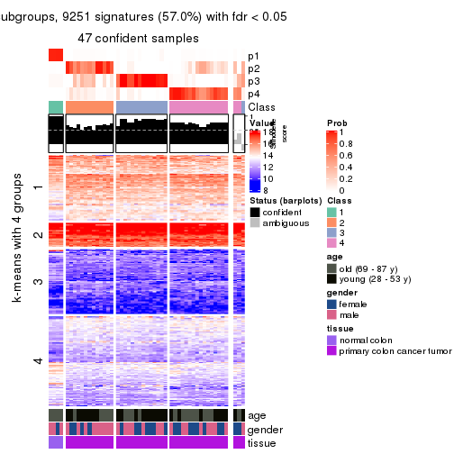
get_signatures(res, k = 5, scale_rows = FALSE)
get_signatures(res, k = 6, scale_rows = FALSE)
Compare the overlap of signatures from different k:
compare_signatures(res)
get_signature() returns a data frame invisibly. TO get the list of signatures, the function
call should be assigned to a variable explicitly. In following code, if plot argument is set
to FALSE, no heatmap is plotted while only the differential analysis is performed.
# code only for demonstration
tb = get_signature(res, k = ..., plot = FALSE)
An example of the output of tb is:
#> which_row fdr mean_1 mean_2 scaled_mean_1 scaled_mean_2 km
#> 1 38 0.042760348 8.373488 9.131774 -0.5533452 0.5164555 1
#> 2 40 0.018707592 7.106213 8.469186 -0.6173731 0.5762149 1
#> 3 55 0.019134737 10.221463 11.207825 -0.6159697 0.5749050 1
#> 4 59 0.006059896 5.921854 7.869574 -0.6899429 0.6439467 1
#> 5 60 0.018055526 8.928898 10.211722 -0.6204761 0.5791110 1
#> 6 98 0.009384629 15.714769 14.887706 0.6635654 -0.6193277 2
...
The columns in tb are:
which_row: row indices corresponding to the input matrix.fdr: FDR for the differential test. mean_x: The mean value in group x.scaled_mean_x: The mean value in group x after rows are scaled.km: Row groups if k-means clustering is applied to rows.UMAP plot which shows how samples are separated.
dimension_reduction(res, k = 2, method = "UMAP")
dimension_reduction(res, k = 3, method = "UMAP")
dimension_reduction(res, k = 4, method = "UMAP")
dimension_reduction(res, k = 5, method = "UMAP")
dimension_reduction(res, k = 6, method = "UMAP")
Following heatmap shows how subgroups are split when increasing k:
collect_classes(res)
Test correlation between subgroups and known annotations. If the known annotation is numeric, one-way ANOVA test is applied, and if the known annotation is discrete, chi-squared contingency table test is applied.
test_to_known_factors(res)
#> n age(p) gender(p) tissue(p) k
#> SD:kmeans 50 0.5182 0.318 1.27e-06 2
#> SD:kmeans 46 0.0181 0.603 1.03e-10 3
#> SD:kmeans 47 0.0615 0.589 3.48e-10 4
#> SD:kmeans 34 0.0559 0.518 7.45e-07 5
#> SD:kmeans 40 0.1125 0.341 1.49e-07 6
If matrix rows can be associated to genes, consider to use functional_enrichment(res,
...) to perform function enrichment for the signature genes. See this vignette for more detailed explanations.
The object with results only for a single top-value method and a single partition method can be extracted as:
res = res_list["SD", "skmeans"]
# you can also extract it by
# res = res_list["SD:skmeans"]
A summary of res and all the functions that can be applied to it:
res
#> A 'ConsensusPartition' object with k = 2, 3, 4, 5, 6.
#> On a matrix with 16230 rows and 50 columns.
#> Top rows (1000, 2000, 3000, 4000, 5000) are extracted by 'SD' method.
#> Subgroups are detected by 'skmeans' method.
#> Performed in total 1250 partitions by row resampling.
#> Best k for subgroups seems to be 3.
#>
#> Following methods can be applied to this 'ConsensusPartition' object:
#> [1] "cola_report" "collect_classes" "collect_plots"
#> [4] "collect_stats" "colnames" "compare_signatures"
#> [7] "consensus_heatmap" "dimension_reduction" "functional_enrichment"
#> [10] "get_anno_col" "get_anno" "get_classes"
#> [13] "get_consensus" "get_matrix" "get_membership"
#> [16] "get_param" "get_signatures" "get_stats"
#> [19] "is_best_k" "is_stable_k" "membership_heatmap"
#> [22] "ncol" "nrow" "plot_ecdf"
#> [25] "rownames" "select_partition_number" "show"
#> [28] "suggest_best_k" "test_to_known_factors"
collect_plots() function collects all the plots made from res for all k (number of partitions)
into one single page to provide an easy and fast comparison between different k.
collect_plots(res)
The plots are:
k and the heatmap of
predicted classes for each k.k.k.k.All the plots in panels can be made by individual functions and they are plotted later in this section.
select_partition_number() produces several plots showing different
statistics for choosing “optimized” k. There are following statistics:
k;k, the area increased is defined as \(A_k - A_{k-1}\).The detailed explanations of these statistics can be found in the cola vignette.
Generally speaking, lower PAC score, higher mean silhouette score or higher
concordance corresponds to better partition. Rand index and Jaccard index
measure how similar the current partition is compared to partition with k-1.
If they are too similar, we won't accept k is better than k-1.
select_partition_number(res)
The numeric values for all these statistics can be obtained by get_stats().
get_stats(res)
#> k 1-PAC mean_silhouette concordance area_increased Rand Jaccard
#> 2 2 0.697 0.804 0.922 0.5011 0.497 0.497
#> 3 3 0.769 0.879 0.923 0.3543 0.715 0.483
#> 4 4 0.619 0.595 0.778 0.1147 0.857 0.593
#> 5 5 0.615 0.523 0.735 0.0675 0.889 0.592
#> 6 6 0.652 0.448 0.643 0.0411 0.920 0.636
suggest_best_k() suggests the best \(k\) based on these statistics. The rules are as follows:
suggest_best_k(res)
#> [1] 3
Following shows the table of the partitions (You need to click the show/hide
code output link to see it). The membership matrix (columns with name p*)
is inferred by
clue::cl_consensus()
function with the SE method. Basically the value in the membership matrix
represents the probability to belong to a certain group. The finall class
label for an item is determined with the group with highest probability it
belongs to.
In get_classes() function, the entropy is calculated from the membership
matrix and the silhouette score is calculated from the consensus matrix.
cbind(get_classes(res, k = 2), get_membership(res, k = 2))
#> class entropy silhouette p1 p2
#> GSM615919 2 0.0938 0.904 0.012 0.988
#> GSM615921 2 0.0000 0.912 0.000 1.000
#> GSM615922 1 0.0000 0.892 1.000 0.000
#> GSM615925 2 0.9460 0.429 0.364 0.636
#> GSM615926 1 0.0000 0.892 1.000 0.000
#> GSM615933 2 0.0000 0.912 0.000 1.000
#> GSM615939 1 0.9580 0.453 0.620 0.380
#> GSM615941 1 0.0000 0.892 1.000 0.000
#> GSM615944 1 0.0000 0.892 1.000 0.000
#> GSM615945 2 0.0000 0.912 0.000 1.000
#> GSM615947 2 0.9850 0.109 0.428 0.572
#> GSM615948 1 0.0000 0.892 1.000 0.000
#> GSM615951 1 0.0000 0.892 1.000 0.000
#> GSM615918 2 0.9580 0.397 0.380 0.620
#> GSM615927 2 0.0000 0.912 0.000 1.000
#> GSM615929 1 0.0000 0.892 1.000 0.000
#> GSM615931 2 0.2423 0.884 0.040 0.960
#> GSM615937 2 0.0000 0.912 0.000 1.000
#> GSM615938 2 0.0000 0.912 0.000 1.000
#> GSM615940 1 0.9580 0.453 0.620 0.380
#> GSM615946 2 0.0000 0.912 0.000 1.000
#> GSM615952 1 0.0000 0.892 1.000 0.000
#> GSM615953 2 0.0000 0.912 0.000 1.000
#> GSM615955 1 0.0000 0.892 1.000 0.000
#> GSM721722 1 0.0000 0.892 1.000 0.000
#> GSM721723 2 0.0000 0.912 0.000 1.000
#> GSM721724 1 0.9608 0.444 0.616 0.384
#> GSM615917 2 0.8555 0.581 0.280 0.720
#> GSM615920 1 0.2778 0.850 0.952 0.048
#> GSM615923 2 0.0000 0.912 0.000 1.000
#> GSM615928 2 0.0000 0.912 0.000 1.000
#> GSM615934 1 0.0000 0.892 1.000 0.000
#> GSM615950 2 0.0000 0.912 0.000 1.000
#> GSM615954 2 0.0000 0.912 0.000 1.000
#> GSM615956 2 0.9087 0.445 0.324 0.676
#> GSM615958 1 0.0000 0.892 1.000 0.000
#> GSM615924 2 0.0000 0.912 0.000 1.000
#> GSM615930 2 0.0000 0.912 0.000 1.000
#> GSM615932 2 0.0000 0.912 0.000 1.000
#> GSM615935 2 0.0000 0.912 0.000 1.000
#> GSM615936 1 0.9552 0.461 0.624 0.376
#> GSM615942 1 0.0000 0.892 1.000 0.000
#> GSM615943 2 0.0000 0.912 0.000 1.000
#> GSM615949 1 0.9393 0.493 0.644 0.356
#> GSM615957 2 0.3114 0.867 0.056 0.944
#> GSM721720 2 0.0000 0.912 0.000 1.000
#> GSM721721 2 0.4815 0.817 0.104 0.896
#> GSM615959 1 0.0000 0.892 1.000 0.000
#> GSM615960 1 0.0000 0.892 1.000 0.000
#> GSM615961 1 0.0000 0.892 1.000 0.000
cbind(get_classes(res, k = 3), get_membership(res, k = 3))
#> class entropy silhouette p1 p2 p3
#> GSM615919 1 0.6518 0.304 0.512 0.484 0.004
#> GSM615921 2 0.4750 0.845 0.216 0.784 0.000
#> GSM615922 3 0.0424 0.977 0.000 0.008 0.992
#> GSM615925 1 0.3983 0.843 0.852 0.144 0.004
#> GSM615926 3 0.0000 0.978 0.000 0.000 1.000
#> GSM615933 1 0.0237 0.895 0.996 0.004 0.000
#> GSM615939 2 0.0000 0.858 0.000 1.000 0.000
#> GSM615941 3 0.0424 0.977 0.000 0.008 0.992
#> GSM615944 3 0.0237 0.978 0.000 0.004 0.996
#> GSM615945 1 0.0000 0.895 1.000 0.000 0.000
#> GSM615947 2 0.2878 0.864 0.096 0.904 0.000
#> GSM615948 3 0.0747 0.974 0.000 0.016 0.984
#> GSM615951 3 0.0592 0.976 0.000 0.012 0.988
#> GSM615918 1 0.4095 0.853 0.880 0.064 0.056
#> GSM615927 1 0.0000 0.895 1.000 0.000 0.000
#> GSM615929 2 0.4277 0.743 0.016 0.852 0.132
#> GSM615931 1 0.0000 0.895 1.000 0.000 0.000
#> GSM615937 1 0.0000 0.895 1.000 0.000 0.000
#> GSM615938 2 0.4654 0.849 0.208 0.792 0.000
#> GSM615940 2 0.0000 0.858 0.000 1.000 0.000
#> GSM615946 2 0.0000 0.858 0.000 1.000 0.000
#> GSM615952 3 0.0892 0.971 0.000 0.020 0.980
#> GSM615953 2 0.4555 0.853 0.200 0.800 0.000
#> GSM615955 3 0.0237 0.978 0.000 0.004 0.996
#> GSM721722 3 0.0000 0.978 0.000 0.000 1.000
#> GSM721723 2 0.4887 0.835 0.228 0.772 0.000
#> GSM721724 2 0.0000 0.858 0.000 1.000 0.000
#> GSM615917 1 0.3983 0.843 0.852 0.144 0.004
#> GSM615920 3 0.1289 0.954 0.032 0.000 0.968
#> GSM615923 1 0.0237 0.895 0.996 0.004 0.000
#> GSM615928 1 0.4605 0.799 0.796 0.204 0.000
#> GSM615934 3 0.4605 0.768 0.000 0.204 0.796
#> GSM615950 1 0.0000 0.895 1.000 0.000 0.000
#> GSM615954 1 0.0237 0.893 0.996 0.004 0.000
#> GSM615956 2 0.0000 0.858 0.000 1.000 0.000
#> GSM615958 3 0.0000 0.978 0.000 0.000 1.000
#> GSM615924 1 0.4291 0.818 0.820 0.180 0.000
#> GSM615930 1 0.0000 0.895 1.000 0.000 0.000
#> GSM615932 2 0.4605 0.851 0.204 0.796 0.000
#> GSM615935 2 0.4555 0.853 0.200 0.800 0.000
#> GSM615936 2 0.0424 0.859 0.008 0.992 0.000
#> GSM615942 3 0.1163 0.966 0.000 0.028 0.972
#> GSM615943 1 0.0000 0.895 1.000 0.000 0.000
#> GSM615949 2 0.0592 0.852 0.000 0.988 0.012
#> GSM615957 2 0.4555 0.853 0.200 0.800 0.000
#> GSM721720 2 0.5254 0.798 0.264 0.736 0.000
#> GSM721721 1 0.4654 0.796 0.792 0.208 0.000
#> GSM615959 3 0.0000 0.978 0.000 0.000 1.000
#> GSM615960 3 0.0000 0.978 0.000 0.000 1.000
#> GSM615961 3 0.0000 0.978 0.000 0.000 1.000
cbind(get_classes(res, k = 4), get_membership(res, k = 4))
#> class entropy silhouette p1 p2 p3 p4
#> GSM615919 3 0.8300 -0.159 0.024 0.316 0.436 0.224
#> GSM615921 2 0.3894 0.670 0.000 0.844 0.088 0.068
#> GSM615922 3 0.5308 0.121 0.452 0.004 0.540 0.004
#> GSM615925 4 0.4121 0.705 0.020 0.000 0.184 0.796
#> GSM615926 1 0.1716 0.878 0.936 0.000 0.064 0.000
#> GSM615933 4 0.2408 0.765 0.000 0.104 0.000 0.896
#> GSM615939 2 0.4888 0.433 0.000 0.588 0.412 0.000
#> GSM615941 3 0.5550 0.190 0.428 0.020 0.552 0.000
#> GSM615944 1 0.2408 0.852 0.896 0.000 0.104 0.000
#> GSM615945 4 0.1940 0.768 0.000 0.076 0.000 0.924
#> GSM615947 2 0.3311 0.680 0.000 0.828 0.172 0.000
#> GSM615948 3 0.5598 0.211 0.416 0.016 0.564 0.004
#> GSM615951 1 0.4868 0.675 0.748 0.040 0.212 0.000
#> GSM615918 4 0.3969 0.709 0.016 0.000 0.180 0.804
#> GSM615927 4 0.3208 0.728 0.000 0.004 0.148 0.848
#> GSM615929 3 0.4120 0.412 0.040 0.032 0.852 0.076
#> GSM615931 4 0.1792 0.768 0.000 0.068 0.000 0.932
#> GSM615937 4 0.5311 0.597 0.000 0.328 0.024 0.648
#> GSM615938 2 0.1661 0.724 0.000 0.944 0.004 0.052
#> GSM615940 3 0.4500 0.207 0.000 0.316 0.684 0.000
#> GSM615946 2 0.4522 0.562 0.000 0.680 0.320 0.000
#> GSM615952 1 0.4636 0.718 0.772 0.040 0.188 0.000
#> GSM615953 2 0.0188 0.743 0.000 0.996 0.004 0.000
#> GSM615955 1 0.1211 0.889 0.960 0.000 0.040 0.000
#> GSM721722 1 0.1022 0.891 0.968 0.000 0.032 0.000
#> GSM721723 2 0.3862 0.627 0.000 0.824 0.024 0.152
#> GSM721724 2 0.4933 0.395 0.000 0.568 0.432 0.000
#> GSM615917 4 0.4012 0.707 0.016 0.000 0.184 0.800
#> GSM615920 1 0.3485 0.723 0.856 0.000 0.116 0.028
#> GSM615923 4 0.4756 0.727 0.000 0.176 0.052 0.772
#> GSM615928 4 0.5112 0.455 0.000 0.004 0.436 0.560
#> GSM615934 3 0.4267 0.467 0.216 0.008 0.772 0.004
#> GSM615950 4 0.5193 0.605 0.000 0.324 0.020 0.656
#> GSM615954 4 0.5208 0.620 0.012 0.288 0.012 0.688
#> GSM615956 2 0.4454 0.574 0.000 0.692 0.308 0.000
#> GSM615958 1 0.0000 0.891 1.000 0.000 0.000 0.000
#> GSM615924 4 0.4164 0.668 0.000 0.000 0.264 0.736
#> GSM615930 4 0.1867 0.768 0.000 0.072 0.000 0.928
#> GSM615932 2 0.1209 0.736 0.000 0.964 0.004 0.032
#> GSM615935 2 0.1305 0.743 0.000 0.960 0.036 0.004
#> GSM615936 3 0.4343 0.330 0.004 0.264 0.732 0.000
#> GSM615942 3 0.6090 0.258 0.384 0.052 0.564 0.000
#> GSM615943 4 0.3539 0.735 0.000 0.176 0.004 0.820
#> GSM615949 3 0.3528 0.403 0.000 0.192 0.808 0.000
#> GSM615957 2 0.1302 0.739 0.000 0.956 0.044 0.000
#> GSM721720 2 0.4348 0.560 0.000 0.780 0.024 0.196
#> GSM721721 3 0.5503 -0.384 0.000 0.016 0.516 0.468
#> GSM615959 1 0.0000 0.891 1.000 0.000 0.000 0.000
#> GSM615960 1 0.0000 0.891 1.000 0.000 0.000 0.000
#> GSM615961 1 0.0000 0.891 1.000 0.000 0.000 0.000
cbind(get_classes(res, k = 5), get_membership(res, k = 5))
#> class entropy silhouette p1 p2 p3 p4 p5
#> GSM615919 4 0.7415 0.25470 0.008 0.288 0.040 0.476 0.188
#> GSM615921 2 0.6233 0.56553 0.000 0.572 0.012 0.140 0.276
#> GSM615922 3 0.2488 0.72231 0.124 0.000 0.872 0.000 0.004
#> GSM615925 4 0.0162 0.50460 0.004 0.000 0.000 0.996 0.000
#> GSM615926 1 0.3741 0.68858 0.732 0.000 0.264 0.000 0.004
#> GSM615933 4 0.5624 0.03227 0.000 0.044 0.016 0.532 0.408
#> GSM615939 2 0.3141 0.61972 0.000 0.832 0.152 0.000 0.016
#> GSM615941 3 0.2660 0.72635 0.128 0.008 0.864 0.000 0.000
#> GSM615944 1 0.3612 0.70107 0.732 0.000 0.268 0.000 0.000
#> GSM615945 4 0.5076 0.00509 0.000 0.012 0.016 0.528 0.444
#> GSM615947 2 0.3647 0.73927 0.000 0.816 0.052 0.000 0.132
#> GSM615948 3 0.2563 0.73198 0.120 0.008 0.872 0.000 0.000
#> GSM615951 1 0.5599 0.46689 0.568 0.048 0.368 0.000 0.016
#> GSM615918 4 0.0613 0.50249 0.004 0.000 0.004 0.984 0.008
#> GSM615927 4 0.2389 0.44401 0.000 0.000 0.004 0.880 0.116
#> GSM615929 4 0.7485 -0.07987 0.016 0.188 0.380 0.392 0.024
#> GSM615931 4 0.5190 0.03861 0.000 0.008 0.028 0.540 0.424
#> GSM615937 5 0.2681 0.58936 0.000 0.012 0.004 0.108 0.876
#> GSM615938 2 0.4178 0.69250 0.000 0.696 0.008 0.004 0.292
#> GSM615940 3 0.5321 0.19674 0.000 0.472 0.484 0.004 0.040
#> GSM615946 2 0.2248 0.69135 0.000 0.900 0.088 0.000 0.012
#> GSM615952 1 0.6135 0.44567 0.544 0.060 0.360 0.000 0.036
#> GSM615953 2 0.4847 0.69340 0.000 0.704 0.044 0.012 0.240
#> GSM615955 1 0.1671 0.80220 0.924 0.000 0.076 0.000 0.000
#> GSM721722 1 0.2891 0.76986 0.824 0.000 0.176 0.000 0.000
#> GSM721723 5 0.4442 0.16548 0.000 0.304 0.016 0.004 0.676
#> GSM721724 2 0.3732 0.57032 0.000 0.792 0.176 0.000 0.032
#> GSM615917 4 0.0162 0.50460 0.004 0.000 0.000 0.996 0.000
#> GSM615920 1 0.3146 0.71897 0.844 0.000 0.028 0.128 0.000
#> GSM615923 5 0.5098 0.16096 0.000 0.020 0.012 0.404 0.564
#> GSM615928 4 0.6524 0.39431 0.000 0.108 0.104 0.636 0.152
#> GSM615934 3 0.2804 0.73798 0.056 0.048 0.888 0.000 0.008
#> GSM615950 5 0.2733 0.59072 0.000 0.012 0.004 0.112 0.872
#> GSM615954 5 0.4876 0.48485 0.004 0.036 0.020 0.216 0.724
#> GSM615956 2 0.2193 0.71322 0.000 0.912 0.060 0.000 0.028
#> GSM615958 1 0.0000 0.80836 1.000 0.000 0.000 0.000 0.000
#> GSM615924 4 0.3997 0.46095 0.000 0.068 0.020 0.820 0.092
#> GSM615930 4 0.4865 0.01486 0.000 0.004 0.016 0.536 0.444
#> GSM615932 2 0.3838 0.70869 0.000 0.716 0.004 0.000 0.280
#> GSM615935 2 0.4088 0.70925 0.000 0.712 0.008 0.004 0.276
#> GSM615936 3 0.5201 0.45965 0.000 0.344 0.608 0.008 0.040
#> GSM615942 3 0.2664 0.74219 0.092 0.020 0.884 0.000 0.004
#> GSM615943 5 0.5080 0.18087 0.000 0.012 0.020 0.396 0.572
#> GSM615949 3 0.3516 0.69127 0.000 0.164 0.812 0.004 0.020
#> GSM615957 2 0.4380 0.68278 0.000 0.676 0.020 0.000 0.304
#> GSM721720 5 0.4089 0.32848 0.000 0.244 0.016 0.004 0.736
#> GSM721721 4 0.7097 0.33317 0.000 0.148 0.080 0.556 0.216
#> GSM615959 1 0.0000 0.80836 1.000 0.000 0.000 0.000 0.000
#> GSM615960 1 0.0000 0.80836 1.000 0.000 0.000 0.000 0.000
#> GSM615961 1 0.0000 0.80836 1.000 0.000 0.000 0.000 0.000
cbind(get_classes(res, k = 6), get_membership(res, k = 6))
#> class entropy silhouette p1 p2 p3 p4 p5 p6
#> GSM615919 4 0.6010 0.5057 0.000 0.084 0.000 0.564 0.072 0.280
#> GSM615921 2 0.7142 0.3407 0.000 0.456 0.000 0.160 0.224 0.160
#> GSM615922 3 0.1716 0.8319 0.036 0.000 0.932 0.004 0.000 0.028
#> GSM615925 4 0.0363 0.6303 0.000 0.000 0.000 0.988 0.012 0.000
#> GSM615926 1 0.4661 0.4945 0.600 0.008 0.360 0.004 0.000 0.028
#> GSM615933 5 0.6877 0.3961 0.000 0.068 0.004 0.364 0.404 0.160
#> GSM615939 6 0.4405 0.1402 0.000 0.472 0.024 0.000 0.000 0.504
#> GSM615941 3 0.1370 0.8296 0.036 0.004 0.948 0.000 0.000 0.012
#> GSM615944 1 0.4183 0.3384 0.508 0.000 0.480 0.000 0.000 0.012
#> GSM615945 5 0.6261 0.4392 0.000 0.036 0.004 0.360 0.476 0.124
#> GSM615947 2 0.5345 0.0994 0.000 0.552 0.016 0.000 0.076 0.356
#> GSM615948 3 0.1793 0.8428 0.032 0.000 0.928 0.000 0.004 0.036
#> GSM615951 1 0.7261 0.2392 0.408 0.144 0.308 0.000 0.004 0.136
#> GSM615918 4 0.1196 0.6025 0.000 0.000 0.000 0.952 0.040 0.008
#> GSM615927 4 0.4904 0.2947 0.000 0.024 0.004 0.712 0.156 0.104
#> GSM615929 4 0.6760 0.2690 0.000 0.064 0.192 0.452 0.000 0.292
#> GSM615931 5 0.6067 0.3796 0.000 0.012 0.012 0.428 0.428 0.120
#> GSM615937 5 0.2186 0.4460 0.000 0.056 0.000 0.024 0.908 0.012
#> GSM615938 2 0.5683 0.4439 0.000 0.552 0.004 0.000 0.228 0.216
#> GSM615940 6 0.5579 0.4258 0.000 0.192 0.264 0.000 0.000 0.544
#> GSM615946 2 0.4229 -0.2208 0.000 0.548 0.016 0.000 0.000 0.436
#> GSM615952 1 0.7797 0.2354 0.364 0.232 0.256 0.000 0.020 0.128
#> GSM615953 2 0.4261 0.3634 0.004 0.760 0.008 0.000 0.104 0.124
#> GSM615955 1 0.2302 0.6960 0.872 0.000 0.120 0.000 0.000 0.008
#> GSM721722 1 0.3852 0.5758 0.664 0.000 0.324 0.000 0.000 0.012
#> GSM721723 5 0.4881 -0.0566 0.000 0.336 0.000 0.000 0.588 0.076
#> GSM721724 6 0.4879 0.3134 0.000 0.356 0.052 0.000 0.008 0.584
#> GSM615917 4 0.0725 0.6355 0.000 0.000 0.000 0.976 0.012 0.012
#> GSM615920 1 0.4639 0.6316 0.760 0.008 0.092 0.112 0.012 0.016
#> GSM615923 5 0.5412 0.0588 0.000 0.008 0.004 0.308 0.580 0.100
#> GSM615928 4 0.6003 0.6013 0.000 0.012 0.044 0.616 0.132 0.196
#> GSM615934 3 0.3046 0.7810 0.028 0.008 0.848 0.004 0.000 0.112
#> GSM615950 5 0.2147 0.4656 0.000 0.044 0.000 0.032 0.912 0.012
#> GSM615954 5 0.5804 0.4961 0.008 0.140 0.000 0.136 0.652 0.064
#> GSM615956 2 0.3445 0.0806 0.000 0.732 0.000 0.000 0.008 0.260
#> GSM615958 1 0.0000 0.7187 1.000 0.000 0.000 0.000 0.000 0.000
#> GSM615924 4 0.3881 0.6485 0.000 0.020 0.008 0.808 0.064 0.100
#> GSM615930 5 0.5955 0.4230 0.000 0.020 0.004 0.392 0.472 0.112
#> GSM615932 2 0.5193 0.4671 0.000 0.632 0.004 0.000 0.200 0.164
#> GSM615935 2 0.5613 0.4407 0.000 0.608 0.012 0.004 0.180 0.196
#> GSM615936 6 0.6330 0.3071 0.004 0.244 0.268 0.008 0.004 0.472
#> GSM615942 3 0.2034 0.8272 0.024 0.004 0.912 0.000 0.000 0.060
#> GSM615943 5 0.5929 0.4922 0.000 0.036 0.004 0.260 0.580 0.120
#> GSM615949 3 0.4818 0.2980 0.000 0.040 0.600 0.004 0.008 0.348
#> GSM615957 2 0.4859 0.3994 0.000 0.656 0.008 0.000 0.252 0.084
#> GSM721720 5 0.4604 0.0276 0.000 0.300 0.000 0.000 0.636 0.064
#> GSM721721 4 0.5899 0.5517 0.000 0.000 0.028 0.556 0.140 0.276
#> GSM615959 1 0.0000 0.7187 1.000 0.000 0.000 0.000 0.000 0.000
#> GSM615960 1 0.0000 0.7187 1.000 0.000 0.000 0.000 0.000 0.000
#> GSM615961 1 0.0000 0.7187 1.000 0.000 0.000 0.000 0.000 0.000
Heatmaps for the consensus matrix. It visualizes the probability of two samples to be in a same group.
consensus_heatmap(res, k = 2)
consensus_heatmap(res, k = 3)
consensus_heatmap(res, k = 4)

consensus_heatmap(res, k = 5)
consensus_heatmap(res, k = 6)
Heatmaps for the membership of samples in all partitions to see how consistent they are:
membership_heatmap(res, k = 2)
membership_heatmap(res, k = 3)
membership_heatmap(res, k = 4)
membership_heatmap(res, k = 5)
membership_heatmap(res, k = 6)
As soon as we have had the classes for columns, we can look for signatures which are significantly different between classes which can be candidate marks for certain classes. Following are the heatmaps for signatures.
Signature heatmaps where rows are scaled:
get_signatures(res, k = 2)
get_signatures(res, k = 3)
get_signatures(res, k = 4)
get_signatures(res, k = 5)
get_signatures(res, k = 6)
Signature heatmaps where rows are not scaled:
get_signatures(res, k = 2, scale_rows = FALSE)
get_signatures(res, k = 3, scale_rows = FALSE)
get_signatures(res, k = 4, scale_rows = FALSE)
get_signatures(res, k = 5, scale_rows = FALSE)
get_signatures(res, k = 6, scale_rows = FALSE)
Compare the overlap of signatures from different k:
compare_signatures(res)
get_signature() returns a data frame invisibly. TO get the list of signatures, the function
call should be assigned to a variable explicitly. In following code, if plot argument is set
to FALSE, no heatmap is plotted while only the differential analysis is performed.
# code only for demonstration
tb = get_signature(res, k = ..., plot = FALSE)
An example of the output of tb is:
#> which_row fdr mean_1 mean_2 scaled_mean_1 scaled_mean_2 km
#> 1 38 0.042760348 8.373488 9.131774 -0.5533452 0.5164555 1
#> 2 40 0.018707592 7.106213 8.469186 -0.6173731 0.5762149 1
#> 3 55 0.019134737 10.221463 11.207825 -0.6159697 0.5749050 1
#> 4 59 0.006059896 5.921854 7.869574 -0.6899429 0.6439467 1
#> 5 60 0.018055526 8.928898 10.211722 -0.6204761 0.5791110 1
#> 6 98 0.009384629 15.714769 14.887706 0.6635654 -0.6193277 2
...
The columns in tb are:
which_row: row indices corresponding to the input matrix.fdr: FDR for the differential test. mean_x: The mean value in group x.scaled_mean_x: The mean value in group x after rows are scaled.km: Row groups if k-means clustering is applied to rows.UMAP plot which shows how samples are separated.
dimension_reduction(res, k = 2, method = "UMAP")
dimension_reduction(res, k = 3, method = "UMAP")
dimension_reduction(res, k = 4, method = "UMAP")
dimension_reduction(res, k = 5, method = "UMAP")
dimension_reduction(res, k = 6, method = "UMAP")
Following heatmap shows how subgroups are split when increasing k:
collect_classes(res)
Test correlation between subgroups and known annotations. If the known annotation is numeric, one-way ANOVA test is applied, and if the known annotation is discrete, chi-squared contingency table test is applied.
test_to_known_factors(res)
#> n age(p) gender(p) tissue(p) k
#> SD:skmeans 41 0.615 0.508 0.04914 2
#> SD:skmeans 49 0.654 0.129 0.01120 3
#> SD:skmeans 36 0.965 0.496 0.00601 4
#> SD:skmeans 31 0.913 0.754 0.02413 5
#> SD:skmeans 19 0.553 0.203 0.01300 6
If matrix rows can be associated to genes, consider to use functional_enrichment(res,
...) to perform function enrichment for the signature genes. See this vignette for more detailed explanations.
The object with results only for a single top-value method and a single partition method can be extracted as:
res = res_list["SD", "pam"]
# you can also extract it by
# res = res_list["SD:pam"]
A summary of res and all the functions that can be applied to it:
res
#> A 'ConsensusPartition' object with k = 2, 3, 4, 5, 6.
#> On a matrix with 16230 rows and 50 columns.
#> Top rows (1000, 2000, 3000, 4000, 5000) are extracted by 'SD' method.
#> Subgroups are detected by 'pam' method.
#> Performed in total 1250 partitions by row resampling.
#> Best k for subgroups seems to be 2.
#>
#> Following methods can be applied to this 'ConsensusPartition' object:
#> [1] "cola_report" "collect_classes" "collect_plots"
#> [4] "collect_stats" "colnames" "compare_signatures"
#> [7] "consensus_heatmap" "dimension_reduction" "functional_enrichment"
#> [10] "get_anno_col" "get_anno" "get_classes"
#> [13] "get_consensus" "get_matrix" "get_membership"
#> [16] "get_param" "get_signatures" "get_stats"
#> [19] "is_best_k" "is_stable_k" "membership_heatmap"
#> [22] "ncol" "nrow" "plot_ecdf"
#> [25] "rownames" "select_partition_number" "show"
#> [28] "suggest_best_k" "test_to_known_factors"
collect_plots() function collects all the plots made from res for all k (number of partitions)
into one single page to provide an easy and fast comparison between different k.
collect_plots(res)
The plots are:
k and the heatmap of
predicted classes for each k.k.k.k.All the plots in panels can be made by individual functions and they are plotted later in this section.
select_partition_number() produces several plots showing different
statistics for choosing “optimized” k. There are following statistics:
k;k, the area increased is defined as \(A_k - A_{k-1}\).The detailed explanations of these statistics can be found in the cola vignette.
Generally speaking, lower PAC score, higher mean silhouette score or higher
concordance corresponds to better partition. Rand index and Jaccard index
measure how similar the current partition is compared to partition with k-1.
If they are too similar, we won't accept k is better than k-1.
select_partition_number(res)
The numeric values for all these statistics can be obtained by get_stats().
get_stats(res)
#> k 1-PAC mean_silhouette concordance area_increased Rand Jaccard
#> 2 2 1.000 0.974 0.981 0.1708 0.850 0.850
#> 3 3 0.453 0.698 0.865 2.3623 0.569 0.493
#> 4 4 0.767 0.821 0.919 0.2479 0.794 0.544
#> 5 5 0.675 0.673 0.859 0.0501 0.960 0.858
#> 6 6 0.692 0.627 0.790 0.0485 0.926 0.715
suggest_best_k() suggests the best \(k\) based on these statistics. The rules are as follows:
suggest_best_k(res)
#> [1] 2
Following shows the table of the partitions (You need to click the show/hide
code output link to see it). The membership matrix (columns with name p*)
is inferred by
clue::cl_consensus()
function with the SE method. Basically the value in the membership matrix
represents the probability to belong to a certain group. The finall class
label for an item is determined with the group with highest probability it
belongs to.
In get_classes() function, the entropy is calculated from the membership
matrix and the silhouette score is calculated from the consensus matrix.
cbind(get_classes(res, k = 2), get_membership(res, k = 2))
#> class entropy silhouette p1 p2
#> GSM615919 2 0.0938 0.981 0.012 0.988
#> GSM615921 2 0.0000 0.980 0.000 1.000
#> GSM615922 2 0.1633 0.980 0.024 0.976
#> GSM615925 2 0.0000 0.980 0.000 1.000
#> GSM615926 2 0.1633 0.980 0.024 0.976
#> GSM615933 2 0.0000 0.980 0.000 1.000
#> GSM615939 2 0.1633 0.980 0.024 0.976
#> GSM615941 2 0.1633 0.980 0.024 0.976
#> GSM615944 2 0.1633 0.980 0.024 0.976
#> GSM615945 2 0.0000 0.980 0.000 1.000
#> GSM615947 2 0.1414 0.981 0.020 0.980
#> GSM615948 2 0.1633 0.980 0.024 0.976
#> GSM615951 2 0.1633 0.980 0.024 0.976
#> GSM615918 2 0.0672 0.981 0.008 0.992
#> GSM615927 2 0.0000 0.980 0.000 1.000
#> GSM615929 2 0.1633 0.980 0.024 0.976
#> GSM615931 2 0.0376 0.981 0.004 0.996
#> GSM615937 2 0.0000 0.980 0.000 1.000
#> GSM615938 2 0.0000 0.980 0.000 1.000
#> GSM615940 2 0.1633 0.980 0.024 0.976
#> GSM615946 2 0.1633 0.980 0.024 0.976
#> GSM615952 2 0.1633 0.980 0.024 0.976
#> GSM615953 2 0.1184 0.981 0.016 0.984
#> GSM615955 2 0.8016 0.713 0.244 0.756
#> GSM721722 2 0.6438 0.831 0.164 0.836
#> GSM721723 2 0.0000 0.980 0.000 1.000
#> GSM721724 2 0.1633 0.980 0.024 0.976
#> GSM615917 2 0.0000 0.980 0.000 1.000
#> GSM615920 2 0.1633 0.980 0.024 0.976
#> GSM615923 2 0.0000 0.980 0.000 1.000
#> GSM615928 2 0.1414 0.981 0.020 0.980
#> GSM615934 2 0.1633 0.980 0.024 0.976
#> GSM615950 2 0.0000 0.980 0.000 1.000
#> GSM615954 2 0.0000 0.980 0.000 1.000
#> GSM615956 2 0.1633 0.980 0.024 0.976
#> GSM615958 1 0.0000 1.000 1.000 0.000
#> GSM615924 2 0.0000 0.980 0.000 1.000
#> GSM615930 2 0.0000 0.980 0.000 1.000
#> GSM615932 2 0.0000 0.980 0.000 1.000
#> GSM615935 2 0.0000 0.980 0.000 1.000
#> GSM615936 2 0.1414 0.981 0.020 0.980
#> GSM615942 2 0.1633 0.980 0.024 0.976
#> GSM615943 2 0.0000 0.980 0.000 1.000
#> GSM615949 2 0.1633 0.980 0.024 0.976
#> GSM615957 2 0.0672 0.981 0.008 0.992
#> GSM721720 2 0.0672 0.981 0.008 0.992
#> GSM721721 2 0.0376 0.981 0.004 0.996
#> GSM615959 1 0.0000 1.000 1.000 0.000
#> GSM615960 1 0.0000 1.000 1.000 0.000
#> GSM615961 1 0.0000 1.000 1.000 0.000
cbind(get_classes(res, k = 3), get_membership(res, k = 3))
#> class entropy silhouette p1 p2 p3
#> GSM615919 2 0.6126 0.376 0.000 0.600 0.400
#> GSM615921 2 0.0237 0.703 0.000 0.996 0.004
#> GSM615922 3 0.0000 0.879 0.000 0.000 1.000
#> GSM615925 3 0.5905 0.432 0.000 0.352 0.648
#> GSM615926 3 0.0000 0.879 0.000 0.000 1.000
#> GSM615933 2 0.0000 0.702 0.000 1.000 0.000
#> GSM615939 2 0.6215 0.414 0.000 0.572 0.428
#> GSM615941 3 0.0000 0.879 0.000 0.000 1.000
#> GSM615944 3 0.0000 0.879 0.000 0.000 1.000
#> GSM615945 2 0.4974 0.596 0.000 0.764 0.236
#> GSM615947 2 0.5948 0.521 0.000 0.640 0.360
#> GSM615948 3 0.0000 0.879 0.000 0.000 1.000
#> GSM615951 3 0.0237 0.876 0.000 0.004 0.996
#> GSM615918 3 0.3941 0.741 0.000 0.156 0.844
#> GSM615927 2 0.5178 0.575 0.000 0.744 0.256
#> GSM615929 3 0.0000 0.879 0.000 0.000 1.000
#> GSM615931 3 0.4702 0.664 0.000 0.212 0.788
#> GSM615937 2 0.5291 0.560 0.000 0.732 0.268
#> GSM615938 2 0.0000 0.702 0.000 1.000 0.000
#> GSM615940 3 0.0424 0.874 0.000 0.008 0.992
#> GSM615946 2 0.5926 0.520 0.000 0.644 0.356
#> GSM615952 2 0.6026 0.501 0.000 0.624 0.376
#> GSM615953 2 0.0000 0.702 0.000 1.000 0.000
#> GSM615955 3 0.0747 0.870 0.016 0.000 0.984
#> GSM721722 3 0.0000 0.879 0.000 0.000 1.000
#> GSM721723 2 0.0000 0.702 0.000 1.000 0.000
#> GSM721724 2 0.6180 0.441 0.000 0.584 0.416
#> GSM615917 2 0.6215 0.221 0.000 0.572 0.428
#> GSM615920 3 0.0237 0.877 0.000 0.004 0.996
#> GSM615923 3 0.5621 0.515 0.000 0.308 0.692
#> GSM615928 3 0.4121 0.729 0.000 0.168 0.832
#> GSM615934 3 0.0000 0.879 0.000 0.000 1.000
#> GSM615950 2 0.6260 0.144 0.000 0.552 0.448
#> GSM615954 2 0.0000 0.702 0.000 1.000 0.000
#> GSM615956 2 0.5926 0.520 0.000 0.644 0.356
#> GSM615958 1 0.0000 1.000 1.000 0.000 0.000
#> GSM615924 3 0.6026 0.390 0.000 0.376 0.624
#> GSM615930 2 0.4974 0.596 0.000 0.764 0.236
#> GSM615932 2 0.0000 0.702 0.000 1.000 0.000
#> GSM615935 2 0.0000 0.702 0.000 1.000 0.000
#> GSM615936 3 0.4452 0.680 0.000 0.192 0.808
#> GSM615942 3 0.0000 0.879 0.000 0.000 1.000
#> GSM615943 2 0.4796 0.611 0.000 0.780 0.220
#> GSM615949 3 0.0000 0.879 0.000 0.000 1.000
#> GSM615957 2 0.1031 0.701 0.000 0.976 0.024
#> GSM721720 2 0.3941 0.661 0.000 0.844 0.156
#> GSM721721 3 0.0237 0.877 0.000 0.004 0.996
#> GSM615959 1 0.0000 1.000 1.000 0.000 0.000
#> GSM615960 1 0.0000 1.000 1.000 0.000 0.000
#> GSM615961 1 0.0000 1.000 1.000 0.000 0.000
cbind(get_classes(res, k = 4), get_membership(res, k = 4))
#> class entropy silhouette p1 p2 p3 p4
#> GSM615919 2 0.3893 0.699 0 0.796 0.008 0.196
#> GSM615921 4 0.4961 0.148 0 0.448 0.000 0.552
#> GSM615922 3 0.0000 0.938 0 0.000 1.000 0.000
#> GSM615925 4 0.2281 0.798 0 0.000 0.096 0.904
#> GSM615926 3 0.0000 0.938 0 0.000 1.000 0.000
#> GSM615933 4 0.0000 0.823 0 0.000 0.000 1.000
#> GSM615939 2 0.0336 0.885 0 0.992 0.008 0.000
#> GSM615941 3 0.0000 0.938 0 0.000 1.000 0.000
#> GSM615944 3 0.0000 0.938 0 0.000 1.000 0.000
#> GSM615945 4 0.0000 0.823 0 0.000 0.000 1.000
#> GSM615947 2 0.0336 0.885 0 0.992 0.008 0.000
#> GSM615948 3 0.0000 0.938 0 0.000 1.000 0.000
#> GSM615951 3 0.1022 0.918 0 0.032 0.968 0.000
#> GSM615918 4 0.4454 0.593 0 0.000 0.308 0.692
#> GSM615927 4 0.0000 0.823 0 0.000 0.000 1.000
#> GSM615929 3 0.2647 0.837 0 0.120 0.880 0.000
#> GSM615931 3 0.4855 0.356 0 0.000 0.600 0.400
#> GSM615937 4 0.1022 0.822 0 0.000 0.032 0.968
#> GSM615938 2 0.2081 0.860 0 0.916 0.000 0.084
#> GSM615940 3 0.2216 0.874 0 0.092 0.908 0.000
#> GSM615946 2 0.0336 0.885 0 0.992 0.008 0.000
#> GSM615952 2 0.3610 0.700 0 0.800 0.200 0.000
#> GSM615953 2 0.1211 0.886 0 0.960 0.000 0.040
#> GSM615955 3 0.0000 0.938 0 0.000 1.000 0.000
#> GSM721722 3 0.0000 0.938 0 0.000 1.000 0.000
#> GSM721723 2 0.1302 0.883 0 0.956 0.000 0.044
#> GSM721724 2 0.0336 0.885 0 0.992 0.008 0.000
#> GSM615917 4 0.1637 0.815 0 0.000 0.060 0.940
#> GSM615920 3 0.0000 0.938 0 0.000 1.000 0.000
#> GSM615923 3 0.3837 0.689 0 0.000 0.776 0.224
#> GSM615928 4 0.5905 0.673 0 0.156 0.144 0.700
#> GSM615934 3 0.0000 0.938 0 0.000 1.000 0.000
#> GSM615950 4 0.4382 0.517 0 0.000 0.296 0.704
#> GSM615954 2 0.3172 0.791 0 0.840 0.000 0.160
#> GSM615956 2 0.0336 0.885 0 0.992 0.008 0.000
#> GSM615958 1 0.0000 1.000 1 0.000 0.000 0.000
#> GSM615924 4 0.4685 0.732 0 0.156 0.060 0.784
#> GSM615930 4 0.0000 0.823 0 0.000 0.000 1.000
#> GSM615932 2 0.4941 0.256 0 0.564 0.000 0.436
#> GSM615935 4 0.2281 0.769 0 0.096 0.000 0.904
#> GSM615936 3 0.1970 0.890 0 0.008 0.932 0.060
#> GSM615942 3 0.0000 0.938 0 0.000 1.000 0.000
#> GSM615943 4 0.0000 0.823 0 0.000 0.000 1.000
#> GSM615949 3 0.0000 0.938 0 0.000 1.000 0.000
#> GSM615957 2 0.0921 0.887 0 0.972 0.000 0.028
#> GSM721720 2 0.0921 0.887 0 0.972 0.000 0.028
#> GSM721721 3 0.0000 0.938 0 0.000 1.000 0.000
#> GSM615959 1 0.0000 1.000 1 0.000 0.000 0.000
#> GSM615960 1 0.0000 1.000 1 0.000 0.000 0.000
#> GSM615961 1 0.0000 1.000 1 0.000 0.000 0.000
cbind(get_classes(res, k = 5), get_membership(res, k = 5))
#> class entropy silhouette p1 p2 p3 p4 p5
#> GSM615919 2 0.4305 0.469 0 0.748 0.000 0.200 0.052
#> GSM615921 4 0.4380 0.301 0 0.376 0.000 0.616 0.008
#> GSM615922 3 0.0000 0.922 0 0.000 1.000 0.000 0.000
#> GSM615925 4 0.2054 0.762 0 0.000 0.028 0.920 0.052
#> GSM615926 3 0.0000 0.922 0 0.000 1.000 0.000 0.000
#> GSM615933 4 0.0162 0.773 0 0.000 0.000 0.996 0.004
#> GSM615939 2 0.0000 0.649 0 1.000 0.000 0.000 0.000
#> GSM615941 3 0.0000 0.922 0 0.000 1.000 0.000 0.000
#> GSM615944 3 0.0000 0.922 0 0.000 1.000 0.000 0.000
#> GSM615945 4 0.0162 0.773 0 0.000 0.000 0.996 0.004
#> GSM615947 2 0.0000 0.649 0 1.000 0.000 0.000 0.000
#> GSM615948 3 0.0000 0.922 0 0.000 1.000 0.000 0.000
#> GSM615951 3 0.0865 0.905 0 0.024 0.972 0.000 0.004
#> GSM615918 4 0.4575 0.543 0 0.000 0.236 0.712 0.052
#> GSM615927 4 0.0000 0.772 0 0.000 0.000 1.000 0.000
#> GSM615929 3 0.2970 0.776 0 0.168 0.828 0.004 0.000
#> GSM615931 3 0.4415 0.383 0 0.000 0.604 0.388 0.008
#> GSM615937 4 0.4620 0.481 0 0.000 0.028 0.652 0.320
#> GSM615938 2 0.2127 0.607 0 0.892 0.000 0.108 0.000
#> GSM615940 3 0.2605 0.808 0 0.148 0.852 0.000 0.000
#> GSM615946 2 0.0000 0.649 0 1.000 0.000 0.000 0.000
#> GSM615952 2 0.6422 0.110 0 0.488 0.316 0.000 0.196
#> GSM615953 2 0.5567 0.419 0 0.644 0.000 0.160 0.196
#> GSM615955 3 0.0000 0.922 0 0.000 1.000 0.000 0.000
#> GSM721722 3 0.0000 0.922 0 0.000 1.000 0.000 0.000
#> GSM721723 5 0.3305 0.393 0 0.224 0.000 0.000 0.776
#> GSM721724 2 0.0000 0.649 0 1.000 0.000 0.000 0.000
#> GSM615917 4 0.1430 0.767 0 0.000 0.004 0.944 0.052
#> GSM615920 3 0.0000 0.922 0 0.000 1.000 0.000 0.000
#> GSM615923 3 0.4772 0.619 0 0.004 0.720 0.208 0.068
#> GSM615928 4 0.4901 0.592 0 0.116 0.168 0.716 0.000
#> GSM615934 3 0.0000 0.922 0 0.000 1.000 0.000 0.000
#> GSM615950 5 0.6664 -0.123 0 0.008 0.172 0.408 0.412
#> GSM615954 2 0.6319 0.243 0 0.520 0.000 0.284 0.196
#> GSM615956 2 0.3074 0.520 0 0.804 0.000 0.000 0.196
#> GSM615958 1 0.0000 1.000 1 0.000 0.000 0.000 0.000
#> GSM615924 4 0.3664 0.698 0 0.120 0.052 0.824 0.004
#> GSM615930 4 0.3508 0.588 0 0.000 0.000 0.748 0.252
#> GSM615932 2 0.4126 0.284 0 0.620 0.000 0.380 0.000
#> GSM615935 4 0.4134 0.556 0 0.044 0.000 0.760 0.196
#> GSM615936 3 0.3278 0.829 0 0.024 0.868 0.052 0.056
#> GSM615942 3 0.0000 0.922 0 0.000 1.000 0.000 0.000
#> GSM615943 4 0.0162 0.773 0 0.000 0.000 0.996 0.004
#> GSM615949 3 0.0162 0.921 0 0.004 0.996 0.000 0.000
#> GSM615957 5 0.4291 -0.099 0 0.464 0.000 0.000 0.536
#> GSM721720 5 0.1270 0.457 0 0.052 0.000 0.000 0.948
#> GSM721721 3 0.0162 0.921 0 0.004 0.996 0.000 0.000
#> GSM615959 1 0.0000 1.000 1 0.000 0.000 0.000 0.000
#> GSM615960 1 0.0000 1.000 1 0.000 0.000 0.000 0.000
#> GSM615961 1 0.0000 1.000 1 0.000 0.000 0.000 0.000
cbind(get_classes(res, k = 6), get_membership(res, k = 6))
#> class entropy silhouette p1 p2 p3 p4 p5 p6
#> GSM615919 2 0.5560 0.41705 0 0.612 0.000 0.084 0.044 0.260
#> GSM615921 4 0.4927 0.07758 0 0.056 0.000 0.540 0.004 0.400
#> GSM615922 3 0.0000 0.90595 0 0.000 1.000 0.000 0.000 0.000
#> GSM615925 4 0.3683 0.53579 0 0.192 0.000 0.764 0.044 0.000
#> GSM615926 3 0.0000 0.90595 0 0.000 1.000 0.000 0.000 0.000
#> GSM615933 4 0.0000 0.55478 0 0.000 0.000 1.000 0.000 0.000
#> GSM615939 2 0.3833 0.72444 0 0.556 0.000 0.000 0.000 0.444
#> GSM615941 3 0.0000 0.90595 0 0.000 1.000 0.000 0.000 0.000
#> GSM615944 3 0.0000 0.90595 0 0.000 1.000 0.000 0.000 0.000
#> GSM615945 4 0.0146 0.55300 0 0.000 0.000 0.996 0.004 0.000
#> GSM615947 2 0.3823 0.72474 0 0.564 0.000 0.000 0.000 0.436
#> GSM615948 3 0.0000 0.90595 0 0.000 1.000 0.000 0.000 0.000
#> GSM615951 3 0.2871 0.80534 0 0.004 0.804 0.000 0.000 0.192
#> GSM615918 4 0.6201 0.41860 0 0.192 0.212 0.552 0.044 0.000
#> GSM615927 4 0.0146 0.55562 0 0.004 0.000 0.996 0.000 0.000
#> GSM615929 3 0.3088 0.80680 0 0.172 0.808 0.000 0.000 0.020
#> GSM615931 4 0.3986 0.00641 0 0.000 0.464 0.532 0.000 0.004
#> GSM615937 5 0.4159 0.48379 0 0.000 0.004 0.252 0.704 0.040
#> GSM615938 2 0.5479 0.61622 0 0.472 0.000 0.108 0.004 0.416
#> GSM615940 3 0.3210 0.81137 0 0.168 0.804 0.000 0.000 0.028
#> GSM615946 2 0.3833 0.72444 0 0.556 0.000 0.000 0.000 0.444
#> GSM615952 6 0.2278 0.53257 0 0.004 0.128 0.000 0.000 0.868
#> GSM615953 6 0.1219 0.58203 0 0.004 0.000 0.048 0.000 0.948
#> GSM615955 3 0.2632 0.82499 0 0.004 0.832 0.000 0.000 0.164
#> GSM721722 3 0.0000 0.90595 0 0.000 1.000 0.000 0.000 0.000
#> GSM721723 5 0.5836 -0.11189 0 0.188 0.000 0.000 0.420 0.392
#> GSM721724 2 0.3756 0.70769 0 0.600 0.000 0.000 0.000 0.400
#> GSM615917 4 0.3773 0.53323 0 0.204 0.000 0.752 0.044 0.000
#> GSM615920 3 0.0000 0.90595 0 0.000 1.000 0.000 0.000 0.000
#> GSM615923 3 0.5733 0.52132 0 0.064 0.616 0.088 0.232 0.000
#> GSM615928 4 0.5948 0.40127 0 0.132 0.272 0.560 0.000 0.036
#> GSM615934 3 0.0000 0.90595 0 0.000 1.000 0.000 0.000 0.000
#> GSM615950 5 0.3828 0.43190 0 0.000 0.000 0.440 0.560 0.000
#> GSM615954 6 0.3337 0.41158 0 0.000 0.000 0.260 0.004 0.736
#> GSM615956 6 0.2219 0.43272 0 0.136 0.000 0.000 0.000 0.864
#> GSM615958 1 0.0000 1.00000 1 0.000 0.000 0.000 0.000 0.000
#> GSM615924 4 0.5516 0.45213 0 0.132 0.212 0.628 0.000 0.028
#> GSM615930 5 0.3857 0.40045 0 0.000 0.000 0.468 0.532 0.000
#> GSM615932 2 0.6047 0.33092 0 0.412 0.000 0.316 0.000 0.272
#> GSM615935 4 0.3833 0.13921 0 0.008 0.000 0.648 0.000 0.344
#> GSM615936 3 0.4288 0.73508 0 0.064 0.716 0.004 0.000 0.216
#> GSM615942 3 0.0000 0.90595 0 0.000 1.000 0.000 0.000 0.000
#> GSM615943 4 0.0146 0.55300 0 0.000 0.000 0.996 0.004 0.000
#> GSM615949 3 0.1267 0.88639 0 0.060 0.940 0.000 0.000 0.000
#> GSM615957 6 0.4834 0.43057 0 0.120 0.000 0.000 0.224 0.656
#> GSM721720 5 0.4299 0.31812 0 0.188 0.000 0.000 0.720 0.092
#> GSM721721 3 0.1556 0.87921 0 0.080 0.920 0.000 0.000 0.000
#> GSM615959 1 0.0000 1.00000 1 0.000 0.000 0.000 0.000 0.000
#> GSM615960 1 0.0000 1.00000 1 0.000 0.000 0.000 0.000 0.000
#> GSM615961 1 0.0000 1.00000 1 0.000 0.000 0.000 0.000 0.000
Heatmaps for the consensus matrix. It visualizes the probability of two samples to be in a same group.
consensus_heatmap(res, k = 2)
consensus_heatmap(res, k = 3)
consensus_heatmap(res, k = 4)
consensus_heatmap(res, k = 5)

consensus_heatmap(res, k = 6)
Heatmaps for the membership of samples in all partitions to see how consistent they are:
membership_heatmap(res, k = 2)
membership_heatmap(res, k = 3)

membership_heatmap(res, k = 4)

membership_heatmap(res, k = 5)
membership_heatmap(res, k = 6)
As soon as we have had the classes for columns, we can look for signatures which are significantly different between classes which can be candidate marks for certain classes. Following are the heatmaps for signatures.
Signature heatmaps where rows are scaled:
get_signatures(res, k = 2)
get_signatures(res, k = 3)
get_signatures(res, k = 4)
get_signatures(res, k = 5)
get_signatures(res, k = 6)
Signature heatmaps where rows are not scaled:
get_signatures(res, k = 2, scale_rows = FALSE)
get_signatures(res, k = 3, scale_rows = FALSE)
get_signatures(res, k = 4, scale_rows = FALSE)
get_signatures(res, k = 5, scale_rows = FALSE)
get_signatures(res, k = 6, scale_rows = FALSE)
Compare the overlap of signatures from different k:
compare_signatures(res)
get_signature() returns a data frame invisibly. TO get the list of signatures, the function
call should be assigned to a variable explicitly. In following code, if plot argument is set
to FALSE, no heatmap is plotted while only the differential analysis is performed.
# code only for demonstration
tb = get_signature(res, k = ..., plot = FALSE)
An example of the output of tb is:
#> which_row fdr mean_1 mean_2 scaled_mean_1 scaled_mean_2 km
#> 1 38 0.042760348 8.373488 9.131774 -0.5533452 0.5164555 1
#> 2 40 0.018707592 7.106213 8.469186 -0.6173731 0.5762149 1
#> 3 55 0.019134737 10.221463 11.207825 -0.6159697 0.5749050 1
#> 4 59 0.006059896 5.921854 7.869574 -0.6899429 0.6439467 1
#> 5 60 0.018055526 8.928898 10.211722 -0.6204761 0.5791110 1
#> 6 98 0.009384629 15.714769 14.887706 0.6635654 -0.6193277 2
...
The columns in tb are:
which_row: row indices corresponding to the input matrix.fdr: FDR for the differential test. mean_x: The mean value in group x.scaled_mean_x: The mean value in group x after rows are scaled.km: Row groups if k-means clustering is applied to rows.UMAP plot which shows how samples are separated.
dimension_reduction(res, k = 2, method = "UMAP")
dimension_reduction(res, k = 3, method = "UMAP")
dimension_reduction(res, k = 4, method = "UMAP")
dimension_reduction(res, k = 5, method = "UMAP")

dimension_reduction(res, k = 6, method = "UMAP")
Following heatmap shows how subgroups are split when increasing k:
collect_classes(res)
Test correlation between subgroups and known annotations. If the known annotation is numeric, one-way ANOVA test is applied, and if the known annotation is discrete, chi-squared contingency table test is applied.
test_to_known_factors(res)
#> n age(p) gender(p) tissue(p) k
#> SD:pam 50 0.0825 0.785 9.94e-10 2
#> SD:pam 43 0.0785 0.412 4.60e-10 3
#> SD:pam 47 0.0952 0.727 3.48e-10 4
#> SD:pam 38 0.0657 0.790 2.83e-08 5
#> SD:pam 34 0.0275 0.431 7.45e-07 6
If matrix rows can be associated to genes, consider to use functional_enrichment(res,
...) to perform function enrichment for the signature genes. See this vignette for more detailed explanations.
The object with results only for a single top-value method and a single partition method can be extracted as:
res = res_list["SD", "mclust"]
# you can also extract it by
# res = res_list["SD:mclust"]
A summary of res and all the functions that can be applied to it:
res
#> A 'ConsensusPartition' object with k = 2, 3, 4, 5, 6.
#> On a matrix with 16230 rows and 50 columns.
#> Top rows (1000, 2000, 3000, 4000, 5000) are extracted by 'SD' method.
#> Subgroups are detected by 'mclust' method.
#> Performed in total 1250 partitions by row resampling.
#> Best k for subgroups seems to be 2.
#>
#> Following methods can be applied to this 'ConsensusPartition' object:
#> [1] "cola_report" "collect_classes" "collect_plots"
#> [4] "collect_stats" "colnames" "compare_signatures"
#> [7] "consensus_heatmap" "dimension_reduction" "functional_enrichment"
#> [10] "get_anno_col" "get_anno" "get_classes"
#> [13] "get_consensus" "get_matrix" "get_membership"
#> [16] "get_param" "get_signatures" "get_stats"
#> [19] "is_best_k" "is_stable_k" "membership_heatmap"
#> [22] "ncol" "nrow" "plot_ecdf"
#> [25] "rownames" "select_partition_number" "show"
#> [28] "suggest_best_k" "test_to_known_factors"
collect_plots() function collects all the plots made from res for all k (number of partitions)
into one single page to provide an easy and fast comparison between different k.
collect_plots(res)
The plots are:
k and the heatmap of
predicted classes for each k.k.k.k.All the plots in panels can be made by individual functions and they are plotted later in this section.
select_partition_number() produces several plots showing different
statistics for choosing “optimized” k. There are following statistics:
k;k, the area increased is defined as \(A_k - A_{k-1}\).The detailed explanations of these statistics can be found in the cola vignette.
Generally speaking, lower PAC score, higher mean silhouette score or higher
concordance corresponds to better partition. Rand index and Jaccard index
measure how similar the current partition is compared to partition with k-1.
If they are too similar, we won't accept k is better than k-1.
select_partition_number(res)
The numeric values for all these statistics can be obtained by get_stats().
get_stats(res)
#> k 1-PAC mean_silhouette concordance area_increased Rand Jaccard
#> 2 2 1.000 0.979 0.985 0.1665 0.850 0.850
#> 3 3 0.372 0.608 0.829 2.1909 0.598 0.526
#> 4 4 0.491 0.691 0.828 0.2400 0.760 0.525
#> 5 5 0.574 0.539 0.688 0.1133 0.856 0.619
#> 6 6 0.623 0.573 0.726 0.0745 0.876 0.640
suggest_best_k() suggests the best \(k\) based on these statistics. The rules are as follows:
suggest_best_k(res)
#> [1] 2
Following shows the table of the partitions (You need to click the show/hide
code output link to see it). The membership matrix (columns with name p*)
is inferred by
clue::cl_consensus()
function with the SE method. Basically the value in the membership matrix
represents the probability to belong to a certain group. The finall class
label for an item is determined with the group with highest probability it
belongs to.
In get_classes() function, the entropy is calculated from the membership
matrix and the silhouette score is calculated from the consensus matrix.
cbind(get_classes(res, k = 2), get_membership(res, k = 2))
#> class entropy silhouette p1 p2
#> GSM615919 2 0.141 0.984 0.020 0.980
#> GSM615921 2 0.000 0.984 0.000 1.000
#> GSM615922 2 0.141 0.984 0.020 0.980
#> GSM615925 2 0.000 0.984 0.000 1.000
#> GSM615926 2 0.141 0.984 0.020 0.980
#> GSM615933 2 0.000 0.984 0.000 1.000
#> GSM615939 2 0.141 0.984 0.020 0.980
#> GSM615941 2 0.141 0.984 0.020 0.980
#> GSM615944 2 0.141 0.984 0.020 0.980
#> GSM615945 2 0.000 0.984 0.000 1.000
#> GSM615947 2 0.141 0.984 0.020 0.980
#> GSM615948 2 0.141 0.984 0.020 0.980
#> GSM615951 2 0.141 0.984 0.020 0.980
#> GSM615918 2 0.000 0.984 0.000 1.000
#> GSM615927 2 0.000 0.984 0.000 1.000
#> GSM615929 2 0.141 0.984 0.020 0.980
#> GSM615931 2 0.000 0.984 0.000 1.000
#> GSM615937 2 0.000 0.984 0.000 1.000
#> GSM615938 2 0.000 0.984 0.000 1.000
#> GSM615940 2 0.141 0.984 0.020 0.980
#> GSM615946 2 0.141 0.984 0.020 0.980
#> GSM615952 2 0.141 0.984 0.020 0.980
#> GSM615953 2 0.000 0.984 0.000 1.000
#> GSM615955 2 0.625 0.840 0.156 0.844
#> GSM721722 2 0.615 0.845 0.152 0.848
#> GSM721723 2 0.000 0.984 0.000 1.000
#> GSM721724 2 0.141 0.984 0.020 0.980
#> GSM615917 2 0.000 0.984 0.000 1.000
#> GSM615920 2 0.141 0.984 0.020 0.980
#> GSM615923 2 0.000 0.984 0.000 1.000
#> GSM615928 2 0.141 0.984 0.020 0.980
#> GSM615934 2 0.141 0.984 0.020 0.980
#> GSM615950 2 0.000 0.984 0.000 1.000
#> GSM615954 2 0.000 0.984 0.000 1.000
#> GSM615956 2 0.141 0.984 0.020 0.980
#> GSM615958 1 0.000 1.000 1.000 0.000
#> GSM615924 2 0.000 0.984 0.000 1.000
#> GSM615930 2 0.000 0.984 0.000 1.000
#> GSM615932 2 0.000 0.984 0.000 1.000
#> GSM615935 2 0.000 0.984 0.000 1.000
#> GSM615936 2 0.141 0.984 0.020 0.980
#> GSM615942 2 0.141 0.984 0.020 0.980
#> GSM615943 2 0.000 0.984 0.000 1.000
#> GSM615949 2 0.141 0.984 0.020 0.980
#> GSM615957 2 0.000 0.984 0.000 1.000
#> GSM721720 2 0.000 0.984 0.000 1.000
#> GSM721721 2 0.141 0.984 0.020 0.980
#> GSM615959 1 0.000 1.000 1.000 0.000
#> GSM615960 1 0.000 1.000 1.000 0.000
#> GSM615961 1 0.000 1.000 1.000 0.000
cbind(get_classes(res, k = 3), get_membership(res, k = 3))
#> class entropy silhouette p1 p2 p3
#> GSM615919 3 0.2165 0.7727 0 0.064 0.936
#> GSM615921 3 0.6235 -0.0263 0 0.436 0.564
#> GSM615922 3 0.1163 0.7720 0 0.028 0.972
#> GSM615925 3 0.5706 0.4550 0 0.320 0.680
#> GSM615926 3 0.2066 0.7697 0 0.060 0.940
#> GSM615933 2 0.6274 -0.1108 0 0.544 0.456
#> GSM615939 3 0.4702 0.6010 0 0.212 0.788
#> GSM615941 3 0.1031 0.7691 0 0.024 0.976
#> GSM615944 3 0.1163 0.7678 0 0.028 0.972
#> GSM615945 2 0.2711 0.5894 0 0.912 0.088
#> GSM615947 3 0.5138 0.5631 0 0.252 0.748
#> GSM615948 3 0.1031 0.7727 0 0.024 0.976
#> GSM615951 3 0.1163 0.7678 0 0.028 0.972
#> GSM615918 3 0.5706 0.4550 0 0.320 0.680
#> GSM615927 2 0.5497 0.3379 0 0.708 0.292
#> GSM615929 3 0.1289 0.7708 0 0.032 0.968
#> GSM615931 3 0.6192 0.3458 0 0.420 0.580
#> GSM615937 2 0.1411 0.6098 0 0.964 0.036
#> GSM615938 2 0.5465 0.6299 0 0.712 0.288
#> GSM615940 3 0.2625 0.7505 0 0.084 0.916
#> GSM615946 3 0.4931 0.5853 0 0.232 0.768
#> GSM615952 3 0.3551 0.6837 0 0.132 0.868
#> GSM615953 2 0.5529 0.6237 0 0.704 0.296
#> GSM615955 3 0.1163 0.7678 0 0.028 0.972
#> GSM721722 3 0.1163 0.7678 0 0.028 0.972
#> GSM721723 2 0.5465 0.6299 0 0.712 0.288
#> GSM721724 3 0.4750 0.5941 0 0.216 0.784
#> GSM615917 3 0.5706 0.4550 0 0.320 0.680
#> GSM615920 3 0.2448 0.7674 0 0.076 0.924
#> GSM615923 2 0.6286 -0.1219 0 0.536 0.464
#> GSM615928 3 0.5291 0.6181 0 0.268 0.732
#> GSM615934 3 0.1289 0.7708 0 0.032 0.968
#> GSM615950 2 0.0592 0.5883 0 0.988 0.012
#> GSM615954 2 0.5016 0.6345 0 0.760 0.240
#> GSM615956 3 0.6140 0.1466 0 0.404 0.596
#> GSM615958 1 0.0000 1.0000 1 0.000 0.000
#> GSM615924 2 0.6299 -0.1678 0 0.524 0.476
#> GSM615930 2 0.1860 0.5995 0 0.948 0.052
#> GSM615932 2 0.5465 0.6299 0 0.712 0.288
#> GSM615935 2 0.5650 0.6164 0 0.688 0.312
#> GSM615936 3 0.3192 0.7266 0 0.112 0.888
#> GSM615942 3 0.0000 0.7712 0 0.000 1.000
#> GSM615943 2 0.0424 0.5880 0 0.992 0.008
#> GSM615949 3 0.3038 0.7554 0 0.104 0.896
#> GSM615957 2 0.5560 0.6195 0 0.700 0.300
#> GSM721720 2 0.5465 0.6299 0 0.712 0.288
#> GSM721721 3 0.2959 0.7622 0 0.100 0.900
#> GSM615959 1 0.0000 1.0000 1 0.000 0.000
#> GSM615960 1 0.0000 1.0000 1 0.000 0.000
#> GSM615961 1 0.0000 1.0000 1 0.000 0.000
cbind(get_classes(res, k = 4), get_membership(res, k = 4))
#> class entropy silhouette p1 p2 p3 p4
#> GSM615919 3 0.4382 0.75451 0 0.000 0.704 0.296
#> GSM615921 2 0.5427 0.11711 0 0.568 0.416 0.016
#> GSM615922 3 0.3764 0.81329 0 0.000 0.784 0.216
#> GSM615925 4 0.2216 0.61149 0 0.000 0.092 0.908
#> GSM615926 3 0.3801 0.81317 0 0.000 0.780 0.220
#> GSM615933 4 0.6373 0.65977 0 0.216 0.136 0.648
#> GSM615939 3 0.0779 0.85163 0 0.004 0.980 0.016
#> GSM615941 3 0.0469 0.85116 0 0.000 0.988 0.012
#> GSM615944 3 0.0707 0.84532 0 0.000 0.980 0.020
#> GSM615945 4 0.4889 0.53075 0 0.360 0.004 0.636
#> GSM615947 3 0.0804 0.85173 0 0.008 0.980 0.012
#> GSM615948 3 0.2704 0.84422 0 0.000 0.876 0.124
#> GSM615951 3 0.0707 0.84532 0 0.000 0.980 0.020
#> GSM615918 4 0.0592 0.59407 0 0.000 0.016 0.984
#> GSM615927 4 0.5724 0.67286 0 0.144 0.140 0.716
#> GSM615929 3 0.4008 0.79884 0 0.000 0.756 0.244
#> GSM615931 4 0.4992 0.65909 0 0.096 0.132 0.772
#> GSM615937 2 0.4843 0.01251 0 0.604 0.000 0.396
#> GSM615938 2 0.0000 0.71835 0 1.000 0.000 0.000
#> GSM615940 3 0.0592 0.85118 0 0.000 0.984 0.016
#> GSM615946 3 0.4214 0.72662 0 0.204 0.780 0.016
#> GSM615952 3 0.1059 0.84445 0 0.012 0.972 0.016
#> GSM615953 3 0.4907 0.34456 0 0.420 0.580 0.000
#> GSM615955 3 0.0707 0.84532 0 0.000 0.980 0.020
#> GSM721722 3 0.0707 0.84532 0 0.000 0.980 0.020
#> GSM721723 2 0.0000 0.71835 0 1.000 0.000 0.000
#> GSM721724 3 0.3743 0.77267 0 0.160 0.824 0.016
#> GSM615917 4 0.0592 0.59407 0 0.000 0.016 0.984
#> GSM615920 3 0.4277 0.77171 0 0.000 0.720 0.280
#> GSM615923 4 0.6492 0.65365 0 0.220 0.144 0.636
#> GSM615928 4 0.6290 0.26642 0 0.068 0.364 0.568
#> GSM615934 3 0.3764 0.81408 0 0.000 0.784 0.216
#> GSM615950 2 0.4855 -0.00184 0 0.600 0.000 0.400
#> GSM615954 4 0.5119 0.38356 0 0.440 0.004 0.556
#> GSM615956 3 0.4331 0.61917 0 0.288 0.712 0.000
#> GSM615958 1 0.0000 1.00000 1 0.000 0.000 0.000
#> GSM615924 4 0.6330 0.66208 0 0.200 0.144 0.656
#> GSM615930 4 0.4776 0.50527 0 0.376 0.000 0.624
#> GSM615932 2 0.0000 0.71835 0 1.000 0.000 0.000
#> GSM615935 2 0.0524 0.71318 0 0.988 0.008 0.004
#> GSM615936 3 0.2142 0.84104 0 0.056 0.928 0.016
#> GSM615942 3 0.1302 0.85380 0 0.000 0.956 0.044
#> GSM615943 4 0.4866 0.46488 0 0.404 0.000 0.596
#> GSM615949 3 0.3529 0.83492 0 0.012 0.836 0.152
#> GSM615957 2 0.3356 0.57100 0 0.824 0.176 0.000
#> GSM721720 2 0.0000 0.71835 0 1.000 0.000 0.000
#> GSM721721 3 0.4382 0.75439 0 0.000 0.704 0.296
#> GSM615959 1 0.0000 1.00000 1 0.000 0.000 0.000
#> GSM615960 1 0.0000 1.00000 1 0.000 0.000 0.000
#> GSM615961 1 0.0000 1.00000 1 0.000 0.000 0.000
cbind(get_classes(res, k = 5), get_membership(res, k = 5))
#> class entropy silhouette p1 p2 p3 p4 p5
#> GSM615919 3 0.5288 0.264 0 0.000 0.544 0.404 0.052
#> GSM615921 3 0.7135 0.175 0 0.140 0.568 0.184 0.108
#> GSM615922 3 0.5049 0.618 0 0.296 0.644 0.060 0.000
#> GSM615925 4 0.4201 0.781 0 0.000 0.008 0.664 0.328
#> GSM615926 3 0.6191 0.543 0 0.204 0.552 0.244 0.000
#> GSM615933 5 0.4873 0.166 0 0.000 0.044 0.312 0.644
#> GSM615939 3 0.1082 0.676 0 0.008 0.964 0.028 0.000
#> GSM615941 3 0.3039 0.662 0 0.192 0.808 0.000 0.000
#> GSM615944 3 0.4268 0.573 0 0.344 0.648 0.008 0.000
#> GSM615945 5 0.2193 0.665 0 0.008 0.000 0.092 0.900
#> GSM615947 3 0.2198 0.678 0 0.048 0.920 0.012 0.020
#> GSM615948 3 0.4594 0.634 0 0.284 0.680 0.036 0.000
#> GSM615951 3 0.3274 0.652 0 0.220 0.780 0.000 0.000
#> GSM615918 4 0.4165 0.783 0 0.000 0.008 0.672 0.320
#> GSM615927 4 0.4420 0.706 0 0.000 0.004 0.548 0.448
#> GSM615929 3 0.6229 0.487 0 0.192 0.540 0.268 0.000
#> GSM615931 4 0.4420 0.636 0 0.000 0.004 0.548 0.448
#> GSM615937 5 0.3317 0.628 0 0.044 0.000 0.116 0.840
#> GSM615938 2 0.6810 0.363 0 0.352 0.000 0.300 0.348
#> GSM615940 3 0.0898 0.678 0 0.008 0.972 0.020 0.000
#> GSM615946 3 0.2251 0.662 0 0.008 0.916 0.024 0.052
#> GSM615952 3 0.3171 0.661 0 0.176 0.816 0.000 0.008
#> GSM615953 3 0.6451 0.371 0 0.160 0.632 0.064 0.144
#> GSM615955 2 0.4306 -0.488 0 0.508 0.492 0.000 0.000
#> GSM721722 2 0.4306 -0.488 0 0.508 0.492 0.000 0.000
#> GSM721723 2 0.6810 0.364 0 0.356 0.000 0.300 0.344
#> GSM721724 3 0.1393 0.676 0 0.008 0.956 0.024 0.012
#> GSM615917 4 0.4165 0.783 0 0.000 0.008 0.672 0.320
#> GSM615920 3 0.7524 0.329 0 0.140 0.440 0.336 0.084
#> GSM615923 5 0.3807 0.503 0 0.008 0.012 0.204 0.776
#> GSM615928 4 0.6203 0.455 0 0.000 0.268 0.544 0.188
#> GSM615934 3 0.5104 0.621 0 0.284 0.648 0.068 0.000
#> GSM615950 5 0.2824 0.647 0 0.020 0.000 0.116 0.864
#> GSM615954 5 0.3872 0.600 0 0.116 0.060 0.008 0.816
#> GSM615956 3 0.1498 0.678 0 0.016 0.952 0.008 0.024
#> GSM615958 1 0.0000 1.000 1 0.000 0.000 0.000 0.000
#> GSM615924 4 0.4403 0.700 0 0.000 0.004 0.560 0.436
#> GSM615930 5 0.2077 0.673 0 0.008 0.000 0.084 0.908
#> GSM615932 2 0.6810 0.363 0 0.352 0.000 0.300 0.348
#> GSM615935 2 0.8364 0.332 0 0.324 0.240 0.292 0.144
#> GSM615936 3 0.0671 0.682 0 0.016 0.980 0.000 0.004
#> GSM615942 3 0.3845 0.663 0 0.208 0.768 0.024 0.000
#> GSM615943 5 0.0798 0.700 0 0.008 0.000 0.016 0.976
#> GSM615949 3 0.2585 0.685 0 0.036 0.896 0.064 0.004
#> GSM615957 3 0.8012 -0.187 0 0.260 0.428 0.180 0.132
#> GSM721720 2 0.6810 0.364 0 0.356 0.000 0.300 0.344
#> GSM721721 3 0.5762 0.235 0 0.004 0.532 0.384 0.080
#> GSM615959 1 0.0000 1.000 1 0.000 0.000 0.000 0.000
#> GSM615960 1 0.0000 1.000 1 0.000 0.000 0.000 0.000
#> GSM615961 1 0.0000 1.000 1 0.000 0.000 0.000 0.000
cbind(get_classes(res, k = 6), get_membership(res, k = 6))
#> class entropy silhouette p1 p2 p3 p4 p5 p6
#> GSM615919 4 0.6090 0.18546 0 0.312 NA 0.488 0.016 0.000
#> GSM615921 2 0.7692 0.26058 0 0.444 NA 0.056 0.084 0.240
#> GSM615922 2 0.4094 0.52919 0 0.712 NA 0.020 0.016 0.000
#> GSM615925 4 0.0632 0.65876 0 0.024 NA 0.976 0.000 0.000
#> GSM615926 2 0.4150 0.29027 0 0.652 NA 0.320 0.000 0.000
#> GSM615933 4 0.4024 0.00228 0 0.004 NA 0.592 0.400 0.000
#> GSM615939 2 0.3607 0.61784 0 0.652 NA 0.000 0.000 0.000
#> GSM615941 2 0.0363 0.63683 0 0.988 NA 0.000 0.000 0.000
#> GSM615944 2 0.3489 0.50390 0 0.708 NA 0.000 0.004 0.000
#> GSM615945 5 0.3053 0.75682 0 0.000 NA 0.168 0.812 0.020
#> GSM615947 2 0.3989 0.62623 0 0.716 NA 0.000 0.008 0.024
#> GSM615948 2 0.3780 0.55993 0 0.760 NA 0.020 0.016 0.000
#> GSM615951 2 0.0935 0.63488 0 0.964 NA 0.000 0.000 0.004
#> GSM615918 4 0.0632 0.65876 0 0.024 NA 0.976 0.000 0.000
#> GSM615927 4 0.2902 0.55966 0 0.000 NA 0.800 0.196 0.000
#> GSM615929 2 0.6037 0.26656 0 0.444 NA 0.220 0.004 0.000
#> GSM615931 4 0.3440 0.50156 0 0.028 NA 0.776 0.196 0.000
#> GSM615937 5 0.2623 0.74231 0 0.000 NA 0.016 0.852 0.132
#> GSM615938 6 0.2006 0.79370 0 0.000 NA 0.000 0.104 0.892
#> GSM615940 2 0.3592 0.61962 0 0.656 NA 0.000 0.000 0.000
#> GSM615946 2 0.4170 0.61406 0 0.644 NA 0.012 0.004 0.004
#> GSM615952 2 0.3352 0.63369 0 0.812 NA 0.000 0.008 0.032
#> GSM615953 2 0.6722 0.08434 0 0.396 NA 0.008 0.036 0.376
#> GSM615955 2 0.4344 0.36566 0 0.556 NA 0.000 0.016 0.004
#> GSM721722 2 0.4344 0.36566 0 0.556 NA 0.000 0.016 0.004
#> GSM721723 6 0.0632 0.79066 0 0.000 NA 0.000 0.024 0.976
#> GSM721724 2 0.3607 0.61784 0 0.652 NA 0.000 0.000 0.000
#> GSM615917 4 0.0632 0.65876 0 0.024 NA 0.976 0.000 0.000
#> GSM615920 2 0.4471 -0.05977 0 0.500 NA 0.472 0.000 0.000
#> GSM615923 5 0.4525 0.26997 0 0.008 NA 0.448 0.528 0.012
#> GSM615928 4 0.5390 0.55580 0 0.156 NA 0.664 0.040 0.000
#> GSM615934 2 0.4052 0.53099 0 0.708 NA 0.020 0.012 0.000
#> GSM615950 5 0.1913 0.74802 0 0.000 NA 0.012 0.908 0.080
#> GSM615954 5 0.5556 0.57654 0 0.040 NA 0.088 0.632 0.236
#> GSM615956 2 0.4244 0.62153 0 0.680 NA 0.000 0.004 0.036
#> GSM615958 1 0.0000 1.00000 1 0.000 NA 0.000 0.000 0.000
#> GSM615924 4 0.2996 0.59518 0 0.016 NA 0.832 0.144 0.000
#> GSM615930 5 0.3017 0.75991 0 0.000 NA 0.164 0.816 0.020
#> GSM615932 6 0.2003 0.78930 0 0.000 NA 0.000 0.116 0.884
#> GSM615935 6 0.4054 0.74743 0 0.060 NA 0.000 0.104 0.792
#> GSM615936 2 0.3448 0.63507 0 0.716 NA 0.000 0.004 0.000
#> GSM615942 2 0.2415 0.62457 0 0.888 NA 0.016 0.012 0.000
#> GSM615943 5 0.2776 0.78388 0 0.000 NA 0.088 0.860 0.052
#> GSM615949 2 0.3376 0.63893 0 0.764 NA 0.016 0.000 0.000
#> GSM615957 6 0.5488 0.20614 0 0.296 NA 0.000 0.008 0.568
#> GSM721720 6 0.0632 0.79314 0 0.000 NA 0.000 0.024 0.976
#> GSM721721 4 0.5612 0.29342 0 0.304 NA 0.548 0.008 0.000
#> GSM615959 1 0.0000 1.00000 1 0.000 NA 0.000 0.000 0.000
#> GSM615960 1 0.0000 1.00000 1 0.000 NA 0.000 0.000 0.000
#> GSM615961 1 0.0000 1.00000 1 0.000 NA 0.000 0.000 0.000
Heatmaps for the consensus matrix. It visualizes the probability of two samples to be in a same group.
consensus_heatmap(res, k = 2)
consensus_heatmap(res, k = 3)
consensus_heatmap(res, k = 4)
consensus_heatmap(res, k = 5)
consensus_heatmap(res, k = 6)
Heatmaps for the membership of samples in all partitions to see how consistent they are:
membership_heatmap(res, k = 2)
membership_heatmap(res, k = 3)
membership_heatmap(res, k = 4)

membership_heatmap(res, k = 5)
membership_heatmap(res, k = 6)
As soon as we have had the classes for columns, we can look for signatures which are significantly different between classes which can be candidate marks for certain classes. Following are the heatmaps for signatures.
Signature heatmaps where rows are scaled:
get_signatures(res, k = 2)
get_signatures(res, k = 3)
get_signatures(res, k = 4)
get_signatures(res, k = 5)
get_signatures(res, k = 6)
Signature heatmaps where rows are not scaled:
get_signatures(res, k = 2, scale_rows = FALSE)
get_signatures(res, k = 3, scale_rows = FALSE)
get_signatures(res, k = 4, scale_rows = FALSE)
get_signatures(res, k = 5, scale_rows = FALSE)
get_signatures(res, k = 6, scale_rows = FALSE)
Compare the overlap of signatures from different k:
compare_signatures(res)
get_signature() returns a data frame invisibly. TO get the list of signatures, the function
call should be assigned to a variable explicitly. In following code, if plot argument is set
to FALSE, no heatmap is plotted while only the differential analysis is performed.
# code only for demonstration
tb = get_signature(res, k = ..., plot = FALSE)
An example of the output of tb is:
#> which_row fdr mean_1 mean_2 scaled_mean_1 scaled_mean_2 km
#> 1 38 0.042760348 8.373488 9.131774 -0.5533452 0.5164555 1
#> 2 40 0.018707592 7.106213 8.469186 -0.6173731 0.5762149 1
#> 3 55 0.019134737 10.221463 11.207825 -0.6159697 0.5749050 1
#> 4 59 0.006059896 5.921854 7.869574 -0.6899429 0.6439467 1
#> 5 60 0.018055526 8.928898 10.211722 -0.6204761 0.5791110 1
#> 6 98 0.009384629 15.714769 14.887706 0.6635654 -0.6193277 2
...
The columns in tb are:
which_row: row indices corresponding to the input matrix.fdr: FDR for the differential test. mean_x: The mean value in group x.scaled_mean_x: The mean value in group x after rows are scaled.km: Row groups if k-means clustering is applied to rows.UMAP plot which shows how samples are separated.
dimension_reduction(res, k = 2, method = "UMAP")

dimension_reduction(res, k = 3, method = "UMAP")
dimension_reduction(res, k = 4, method = "UMAP")
dimension_reduction(res, k = 5, method = "UMAP")
dimension_reduction(res, k = 6, method = "UMAP")
Following heatmap shows how subgroups are split when increasing k:
collect_classes(res)
Test correlation between subgroups and known annotations. If the known annotation is numeric, one-way ANOVA test is applied, and if the known annotation is discrete, chi-squared contingency table test is applied.
test_to_known_factors(res)
#> n age(p) gender(p) tissue(p) k
#> SD:mclust 50 0.0825 0.785 9.94e-10 2
#> SD:mclust 40 0.0171 0.188 2.06e-09 3
#> SD:mclust 43 0.0437 0.109 2.46e-09 4
#> SD:mclust 34 0.0328 0.505 1.98e-07 5
#> SD:mclust 38 0.1228 0.232 1.12e-07 6
If matrix rows can be associated to genes, consider to use functional_enrichment(res,
...) to perform function enrichment for the signature genes. See this vignette for more detailed explanations.
The object with results only for a single top-value method and a single partition method can be extracted as:
res = res_list["SD", "NMF"]
# you can also extract it by
# res = res_list["SD:NMF"]
A summary of res and all the functions that can be applied to it:
res
#> A 'ConsensusPartition' object with k = 2, 3, 4, 5, 6.
#> On a matrix with 16230 rows and 50 columns.
#> Top rows (1000, 2000, 3000, 4000, 5000) are extracted by 'SD' method.
#> Subgroups are detected by 'NMF' method.
#> Performed in total 1250 partitions by row resampling.
#> Best k for subgroups seems to be 3.
#>
#> Following methods can be applied to this 'ConsensusPartition' object:
#> [1] "cola_report" "collect_classes" "collect_plots"
#> [4] "collect_stats" "colnames" "compare_signatures"
#> [7] "consensus_heatmap" "dimension_reduction" "functional_enrichment"
#> [10] "get_anno_col" "get_anno" "get_classes"
#> [13] "get_consensus" "get_matrix" "get_membership"
#> [16] "get_param" "get_signatures" "get_stats"
#> [19] "is_best_k" "is_stable_k" "membership_heatmap"
#> [22] "ncol" "nrow" "plot_ecdf"
#> [25] "rownames" "select_partition_number" "show"
#> [28] "suggest_best_k" "test_to_known_factors"
collect_plots() function collects all the plots made from res for all k (number of partitions)
into one single page to provide an easy and fast comparison between different k.
collect_plots(res)
The plots are:
k and the heatmap of
predicted classes for each k.k.k.k.All the plots in panels can be made by individual functions and they are plotted later in this section.
select_partition_number() produces several plots showing different
statistics for choosing “optimized” k. There are following statistics:
k;k, the area increased is defined as \(A_k - A_{k-1}\).The detailed explanations of these statistics can be found in the cola vignette.
Generally speaking, lower PAC score, higher mean silhouette score or higher
concordance corresponds to better partition. Rand index and Jaccard index
measure how similar the current partition is compared to partition with k-1.
If they are too similar, we won't accept k is better than k-1.
select_partition_number(res)
The numeric values for all these statistics can be obtained by get_stats().
get_stats(res)
#> k 1-PAC mean_silhouette concordance area_increased Rand Jaccard
#> 2 2 0.768 0.873 0.944 0.3499 0.673 0.673
#> 3 3 0.435 0.684 0.826 0.8236 0.651 0.496
#> 4 4 0.523 0.630 0.812 0.1550 0.744 0.420
#> 5 5 0.588 0.562 0.742 0.0798 0.868 0.560
#> 6 6 0.719 0.683 0.811 0.0471 0.882 0.520
suggest_best_k() suggests the best \(k\) based on these statistics. The rules are as follows:
suggest_best_k(res)
#> [1] 3
Following shows the table of the partitions (You need to click the show/hide
code output link to see it). The membership matrix (columns with name p*)
is inferred by
clue::cl_consensus()
function with the SE method. Basically the value in the membership matrix
represents the probability to belong to a certain group. The finall class
label for an item is determined with the group with highest probability it
belongs to.
In get_classes() function, the entropy is calculated from the membership
matrix and the silhouette score is calculated from the consensus matrix.
cbind(get_classes(res, k = 2), get_membership(res, k = 2))
#> class entropy silhouette p1 p2
#> GSM615919 2 0.000 0.942 0.000 1.000
#> GSM615921 2 0.000 0.942 0.000 1.000
#> GSM615922 2 0.921 0.533 0.336 0.664
#> GSM615925 2 0.373 0.894 0.072 0.928
#> GSM615926 1 0.000 0.912 1.000 0.000
#> GSM615933 2 0.000 0.942 0.000 1.000
#> GSM615939 2 0.000 0.942 0.000 1.000
#> GSM615941 2 0.844 0.660 0.272 0.728
#> GSM615944 1 0.000 0.912 1.000 0.000
#> GSM615945 2 0.000 0.942 0.000 1.000
#> GSM615947 2 0.000 0.942 0.000 1.000
#> GSM615948 2 0.866 0.628 0.288 0.712
#> GSM615951 1 0.917 0.452 0.668 0.332
#> GSM615918 2 0.541 0.851 0.124 0.876
#> GSM615927 2 0.000 0.942 0.000 1.000
#> GSM615929 2 0.358 0.897 0.068 0.932
#> GSM615931 2 0.000 0.942 0.000 1.000
#> GSM615937 2 0.000 0.942 0.000 1.000
#> GSM615938 2 0.000 0.942 0.000 1.000
#> GSM615940 2 0.000 0.942 0.000 1.000
#> GSM615946 2 0.000 0.942 0.000 1.000
#> GSM615952 2 0.781 0.701 0.232 0.768
#> GSM615953 2 0.000 0.942 0.000 1.000
#> GSM615955 1 0.000 0.912 1.000 0.000
#> GSM721722 1 0.000 0.912 1.000 0.000
#> GSM721723 2 0.000 0.942 0.000 1.000
#> GSM721724 2 0.000 0.942 0.000 1.000
#> GSM615917 2 0.000 0.942 0.000 1.000
#> GSM615920 1 0.966 0.353 0.608 0.392
#> GSM615923 2 0.000 0.942 0.000 1.000
#> GSM615928 2 0.000 0.942 0.000 1.000
#> GSM615934 2 0.795 0.705 0.240 0.760
#> GSM615950 2 0.000 0.942 0.000 1.000
#> GSM615954 2 0.000 0.942 0.000 1.000
#> GSM615956 2 0.000 0.942 0.000 1.000
#> GSM615958 1 0.000 0.912 1.000 0.000
#> GSM615924 2 0.000 0.942 0.000 1.000
#> GSM615930 2 0.000 0.942 0.000 1.000
#> GSM615932 2 0.000 0.942 0.000 1.000
#> GSM615935 2 0.000 0.942 0.000 1.000
#> GSM615936 2 0.000 0.942 0.000 1.000
#> GSM615942 2 0.886 0.599 0.304 0.696
#> GSM615943 2 0.000 0.942 0.000 1.000
#> GSM615949 2 0.242 0.916 0.040 0.960
#> GSM615957 2 0.000 0.942 0.000 1.000
#> GSM721720 2 0.000 0.942 0.000 1.000
#> GSM721721 2 0.456 0.874 0.096 0.904
#> GSM615959 1 0.000 0.912 1.000 0.000
#> GSM615960 1 0.000 0.912 1.000 0.000
#> GSM615961 1 0.000 0.912 1.000 0.000
cbind(get_classes(res, k = 3), get_membership(res, k = 3))
#> class entropy silhouette p1 p2 p3
#> GSM615919 2 0.5678 0.339 0.000 0.684 0.316
#> GSM615921 2 0.6295 0.227 0.000 0.528 0.472
#> GSM615922 3 0.8271 0.549 0.212 0.156 0.632
#> GSM615925 2 0.1525 0.809 0.004 0.964 0.032
#> GSM615926 1 0.5897 0.755 0.792 0.132 0.076
#> GSM615933 2 0.0000 0.829 0.000 1.000 0.000
#> GSM615939 3 0.4605 0.734 0.000 0.204 0.796
#> GSM615941 3 0.5500 0.705 0.084 0.100 0.816
#> GSM615944 1 0.1964 0.895 0.944 0.000 0.056
#> GSM615945 2 0.3752 0.799 0.000 0.856 0.144
#> GSM615947 3 0.1964 0.720 0.000 0.056 0.944
#> GSM615948 3 0.7766 0.597 0.176 0.148 0.676
#> GSM615951 3 0.5810 0.433 0.336 0.000 0.664
#> GSM615918 2 0.1878 0.797 0.004 0.952 0.044
#> GSM615927 2 0.3038 0.817 0.000 0.896 0.104
#> GSM615929 3 0.6527 0.456 0.008 0.404 0.588
#> GSM615931 2 0.0000 0.829 0.000 1.000 0.000
#> GSM615937 2 0.4514 0.790 0.012 0.832 0.156
#> GSM615938 3 0.6168 0.133 0.000 0.412 0.588
#> GSM615940 3 0.4605 0.734 0.000 0.204 0.796
#> GSM615946 3 0.4887 0.732 0.000 0.228 0.772
#> GSM615952 3 0.2860 0.707 0.084 0.004 0.912
#> GSM615953 3 0.3192 0.698 0.000 0.112 0.888
#> GSM615955 1 0.2356 0.890 0.928 0.000 0.072
#> GSM721722 1 0.2448 0.888 0.924 0.000 0.076
#> GSM721723 3 0.4346 0.630 0.000 0.184 0.816
#> GSM721724 3 0.4605 0.734 0.000 0.204 0.796
#> GSM615917 2 0.0592 0.824 0.000 0.988 0.012
#> GSM615920 1 0.5517 0.630 0.728 0.268 0.004
#> GSM615923 2 0.0000 0.829 0.000 1.000 0.000
#> GSM615928 2 0.0892 0.817 0.000 0.980 0.020
#> GSM615934 3 0.8616 0.549 0.148 0.264 0.588
#> GSM615950 2 0.3879 0.794 0.000 0.848 0.152
#> GSM615954 2 0.4110 0.794 0.004 0.844 0.152
#> GSM615956 3 0.3619 0.735 0.000 0.136 0.864
#> GSM615958 1 0.0000 0.910 1.000 0.000 0.000
#> GSM615924 2 0.0000 0.829 0.000 1.000 0.000
#> GSM615930 2 0.2448 0.824 0.000 0.924 0.076
#> GSM615932 3 0.6305 -0.147 0.000 0.484 0.516
#> GSM615935 3 0.3412 0.692 0.000 0.124 0.876
#> GSM615936 3 0.3412 0.741 0.000 0.124 0.876
#> GSM615942 3 0.7572 0.598 0.184 0.128 0.688
#> GSM615943 2 0.3879 0.794 0.000 0.848 0.152
#> GSM615949 3 0.4002 0.722 0.000 0.160 0.840
#> GSM615957 3 0.2448 0.712 0.000 0.076 0.924
#> GSM721720 3 0.6140 0.156 0.000 0.404 0.596
#> GSM721721 2 0.5560 0.459 0.000 0.700 0.300
#> GSM615959 1 0.0000 0.910 1.000 0.000 0.000
#> GSM615960 1 0.0000 0.910 1.000 0.000 0.000
#> GSM615961 1 0.0000 0.910 1.000 0.000 0.000
cbind(get_classes(res, k = 4), get_membership(res, k = 4))
#> class entropy silhouette p1 p2 p3 p4
#> GSM615919 3 0.7593 0.254 0.000 0.236 0.476 0.288
#> GSM615921 2 0.3695 0.742 0.000 0.828 0.016 0.156
#> GSM615922 3 0.1022 0.733 0.000 0.000 0.968 0.032
#> GSM615925 4 0.2530 0.748 0.000 0.000 0.112 0.888
#> GSM615926 3 0.3754 0.684 0.064 0.000 0.852 0.084
#> GSM615933 4 0.2450 0.767 0.000 0.072 0.016 0.912
#> GSM615939 3 0.3837 0.646 0.000 0.224 0.776 0.000
#> GSM615941 3 0.2882 0.727 0.024 0.084 0.892 0.000
#> GSM615944 3 0.5112 0.127 0.436 0.004 0.560 0.000
#> GSM615945 4 0.2610 0.757 0.000 0.088 0.012 0.900
#> GSM615947 2 0.2921 0.728 0.000 0.860 0.140 0.000
#> GSM615948 3 0.1211 0.740 0.000 0.040 0.960 0.000
#> GSM615951 3 0.7121 0.326 0.292 0.164 0.544 0.000
#> GSM615918 4 0.1867 0.754 0.000 0.000 0.072 0.928
#> GSM615927 4 0.1151 0.769 0.000 0.008 0.024 0.968
#> GSM615929 3 0.2999 0.683 0.000 0.004 0.864 0.132
#> GSM615931 4 0.2596 0.769 0.000 0.068 0.024 0.908
#> GSM615937 2 0.5582 0.285 0.032 0.620 0.000 0.348
#> GSM615938 2 0.1940 0.773 0.000 0.924 0.000 0.076
#> GSM615940 3 0.3873 0.639 0.000 0.228 0.772 0.000
#> GSM615946 2 0.4560 0.549 0.000 0.700 0.296 0.004
#> GSM615952 2 0.4906 0.700 0.084 0.776 0.140 0.000
#> GSM615953 2 0.2007 0.788 0.004 0.940 0.020 0.036
#> GSM615955 1 0.5016 0.230 0.600 0.004 0.396 0.000
#> GSM721722 3 0.4331 0.477 0.288 0.000 0.712 0.000
#> GSM721723 2 0.1118 0.786 0.000 0.964 0.000 0.036
#> GSM721724 2 0.4916 0.230 0.000 0.576 0.424 0.000
#> GSM615917 4 0.3024 0.718 0.000 0.000 0.148 0.852
#> GSM615920 4 0.5957 0.199 0.420 0.000 0.040 0.540
#> GSM615923 4 0.5314 0.710 0.000 0.108 0.144 0.748
#> GSM615928 4 0.5352 0.295 0.000 0.016 0.388 0.596
#> GSM615934 3 0.0707 0.736 0.000 0.000 0.980 0.020
#> GSM615950 4 0.4830 0.352 0.000 0.392 0.000 0.608
#> GSM615954 4 0.5837 0.236 0.036 0.400 0.000 0.564
#> GSM615956 2 0.2011 0.770 0.000 0.920 0.080 0.000
#> GSM615958 1 0.0000 0.880 1.000 0.000 0.000 0.000
#> GSM615924 4 0.3356 0.689 0.000 0.000 0.176 0.824
#> GSM615930 4 0.2048 0.768 0.000 0.064 0.008 0.928
#> GSM615932 2 0.3710 0.688 0.000 0.804 0.004 0.192
#> GSM615935 2 0.4974 0.645 0.000 0.736 0.040 0.224
#> GSM615936 3 0.4632 0.546 0.000 0.308 0.688 0.004
#> GSM615942 3 0.1398 0.740 0.004 0.040 0.956 0.000
#> GSM615943 4 0.3088 0.730 0.000 0.128 0.008 0.864
#> GSM615949 3 0.1022 0.742 0.000 0.032 0.968 0.000
#> GSM615957 2 0.1557 0.778 0.000 0.944 0.056 0.000
#> GSM721720 2 0.1637 0.778 0.000 0.940 0.000 0.060
#> GSM721721 3 0.4746 0.465 0.000 0.008 0.688 0.304
#> GSM615959 1 0.0000 0.880 1.000 0.000 0.000 0.000
#> GSM615960 1 0.0000 0.880 1.000 0.000 0.000 0.000
#> GSM615961 1 0.0000 0.880 1.000 0.000 0.000 0.000
cbind(get_classes(res, k = 5), get_membership(res, k = 5))
#> class entropy silhouette p1 p2 p3 p4 p5
#> GSM615919 4 0.5021 0.5647 0.000 0.100 0.172 0.720 0.008
#> GSM615921 2 0.1569 0.6940 0.000 0.948 0.008 0.032 0.012
#> GSM615922 3 0.1341 0.7068 0.000 0.000 0.944 0.056 0.000
#> GSM615925 4 0.3642 0.4555 0.000 0.000 0.008 0.760 0.232
#> GSM615926 3 0.2674 0.6759 0.012 0.000 0.868 0.120 0.000
#> GSM615933 5 0.3424 0.7215 0.000 0.000 0.000 0.240 0.760
#> GSM615939 3 0.7907 0.3560 0.000 0.164 0.468 0.204 0.164
#> GSM615941 3 0.2015 0.6975 0.036 0.020 0.932 0.008 0.004
#> GSM615944 3 0.3461 0.5487 0.224 0.000 0.772 0.000 0.004
#> GSM615945 5 0.3210 0.7314 0.000 0.000 0.000 0.212 0.788
#> GSM615947 2 0.5805 0.6432 0.000 0.640 0.160 0.008 0.192
#> GSM615948 3 0.1121 0.7085 0.000 0.000 0.956 0.044 0.000
#> GSM615951 3 0.5795 0.3317 0.344 0.016 0.580 0.004 0.056
#> GSM615918 4 0.3607 0.4183 0.000 0.000 0.004 0.752 0.244
#> GSM615927 5 0.3876 0.6492 0.000 0.000 0.000 0.316 0.684
#> GSM615929 4 0.4270 0.3727 0.000 0.004 0.336 0.656 0.004
#> GSM615931 5 0.3579 0.7282 0.000 0.000 0.004 0.240 0.756
#> GSM615937 2 0.7089 -0.0497 0.000 0.492 0.148 0.048 0.312
#> GSM615938 2 0.3681 0.7113 0.000 0.820 0.036 0.008 0.136
#> GSM615940 3 0.7166 0.4660 0.000 0.076 0.536 0.144 0.244
#> GSM615946 2 0.6895 0.5861 0.000 0.568 0.172 0.056 0.204
#> GSM615952 3 0.7549 0.1711 0.232 0.316 0.404 0.000 0.048
#> GSM615953 2 0.6676 0.5630 0.104 0.492 0.028 0.004 0.372
#> GSM615955 1 0.4304 -0.1696 0.516 0.000 0.484 0.000 0.000
#> GSM721722 3 0.3806 0.6620 0.104 0.000 0.812 0.084 0.000
#> GSM721723 2 0.0771 0.6836 0.000 0.976 0.000 0.004 0.020
#> GSM721724 2 0.6799 0.4003 0.000 0.536 0.292 0.128 0.044
#> GSM615917 4 0.3086 0.5167 0.000 0.000 0.004 0.816 0.180
#> GSM615920 4 0.6389 0.4174 0.272 0.000 0.036 0.584 0.108
#> GSM615923 4 0.6222 0.4306 0.000 0.284 0.036 0.592 0.088
#> GSM615928 4 0.3870 0.6310 0.000 0.028 0.132 0.816 0.024
#> GSM615934 3 0.3521 0.6303 0.000 0.000 0.764 0.232 0.004
#> GSM615950 5 0.5624 0.3394 0.000 0.420 0.004 0.064 0.512
#> GSM615954 5 0.7377 0.2752 0.104 0.392 0.000 0.092 0.412
#> GSM615956 2 0.5221 0.7040 0.000 0.716 0.072 0.028 0.184
#> GSM615958 1 0.0566 0.8408 0.984 0.000 0.012 0.004 0.000
#> GSM615924 4 0.3558 0.5766 0.000 0.004 0.036 0.824 0.136
#> GSM615930 5 0.3707 0.7046 0.000 0.000 0.000 0.284 0.716
#> GSM615932 2 0.4961 0.6196 0.000 0.596 0.028 0.004 0.372
#> GSM615935 5 0.2305 0.4273 0.000 0.092 0.012 0.000 0.896
#> GSM615936 3 0.5129 0.5025 0.004 0.024 0.624 0.012 0.336
#> GSM615942 3 0.1869 0.7090 0.012 0.000 0.936 0.036 0.016
#> GSM615943 5 0.3461 0.7333 0.000 0.004 0.000 0.224 0.772
#> GSM615949 3 0.3883 0.6356 0.000 0.004 0.764 0.216 0.016
#> GSM615957 2 0.0912 0.6924 0.000 0.972 0.016 0.000 0.012
#> GSM721720 2 0.1281 0.6722 0.000 0.956 0.000 0.012 0.032
#> GSM721721 4 0.3910 0.4962 0.000 0.008 0.272 0.720 0.000
#> GSM615959 1 0.0566 0.8408 0.984 0.000 0.012 0.004 0.000
#> GSM615960 1 0.0404 0.8392 0.988 0.000 0.012 0.000 0.000
#> GSM615961 1 0.0451 0.8386 0.988 0.000 0.008 0.004 0.000
cbind(get_classes(res, k = 6), get_membership(res, k = 6))
#> class entropy silhouette p1 p2 p3 p4 p5 p6
#> GSM615919 4 0.1370 0.7180 0.000 0.036 0.004 0.948 0.000 0.012
#> GSM615921 6 0.5545 0.0441 0.000 0.396 0.000 0.136 0.000 0.468
#> GSM615922 3 0.1010 0.8066 0.000 0.000 0.960 0.036 0.000 0.004
#> GSM615925 4 0.3887 0.6083 0.000 0.000 0.008 0.632 0.360 0.000
#> GSM615926 3 0.1204 0.8043 0.000 0.004 0.960 0.016 0.004 0.016
#> GSM615933 5 0.1950 0.8928 0.000 0.064 0.000 0.024 0.912 0.000
#> GSM615939 2 0.3031 0.6555 0.000 0.844 0.044 0.108 0.000 0.004
#> GSM615941 3 0.0146 0.8074 0.000 0.000 0.996 0.004 0.000 0.000
#> GSM615944 3 0.0798 0.8045 0.012 0.004 0.976 0.004 0.004 0.000
#> GSM615945 5 0.0508 0.9296 0.000 0.012 0.000 0.004 0.984 0.000
#> GSM615947 2 0.1483 0.6733 0.000 0.944 0.008 0.012 0.000 0.036
#> GSM615948 3 0.0603 0.8084 0.000 0.000 0.980 0.016 0.000 0.004
#> GSM615951 3 0.3609 0.7036 0.180 0.012 0.788 0.004 0.004 0.012
#> GSM615918 4 0.4225 0.6147 0.004 0.000 0.012 0.628 0.352 0.004
#> GSM615927 5 0.2179 0.8885 0.000 0.036 0.000 0.064 0.900 0.000
#> GSM615929 4 0.2138 0.7039 0.000 0.052 0.036 0.908 0.004 0.000
#> GSM615931 5 0.1655 0.9107 0.000 0.004 0.012 0.032 0.940 0.012
#> GSM615937 6 0.3786 0.6554 0.000 0.004 0.172 0.000 0.052 0.772
#> GSM615938 2 0.4504 0.4183 0.000 0.652 0.000 0.004 0.048 0.296
#> GSM615940 2 0.5301 0.1996 0.000 0.552 0.368 0.028 0.052 0.000
#> GSM615946 2 0.2840 0.6676 0.000 0.872 0.008 0.080 0.008 0.032
#> GSM615952 3 0.6736 0.2083 0.224 0.044 0.456 0.004 0.000 0.272
#> GSM615953 2 0.4687 0.6033 0.120 0.704 0.000 0.000 0.168 0.008
#> GSM615955 3 0.3756 0.4162 0.400 0.000 0.600 0.000 0.000 0.000
#> GSM721722 3 0.2362 0.7901 0.016 0.012 0.892 0.080 0.000 0.000
#> GSM721723 6 0.0935 0.7341 0.000 0.032 0.004 0.000 0.000 0.964
#> GSM721724 2 0.7141 0.3317 0.000 0.456 0.224 0.156 0.000 0.164
#> GSM615917 4 0.3512 0.6986 0.000 0.000 0.008 0.720 0.272 0.000
#> GSM615920 4 0.6624 0.5760 0.200 0.000 0.064 0.556 0.164 0.016
#> GSM615923 6 0.4206 0.6166 0.000 0.000 0.004 0.212 0.060 0.724
#> GSM615928 4 0.3802 0.6961 0.000 0.000 0.012 0.788 0.056 0.144
#> GSM615934 3 0.4087 0.6545 0.000 0.036 0.688 0.276 0.000 0.000
#> GSM615950 6 0.2191 0.7271 0.000 0.004 0.000 0.000 0.120 0.876
#> GSM615954 6 0.3972 0.4945 0.012 0.004 0.000 0.000 0.320 0.664
#> GSM615956 2 0.2699 0.6389 0.008 0.856 0.000 0.012 0.000 0.124
#> GSM615958 1 0.0790 0.9950 0.968 0.000 0.032 0.000 0.000 0.000
#> GSM615924 4 0.3281 0.7345 0.000 0.000 0.004 0.784 0.200 0.012
#> GSM615930 5 0.1245 0.9193 0.000 0.000 0.000 0.032 0.952 0.016
#> GSM615932 2 0.2146 0.6652 0.000 0.880 0.000 0.000 0.116 0.004
#> GSM615935 2 0.3971 0.2187 0.000 0.548 0.000 0.000 0.448 0.004
#> GSM615936 3 0.4455 0.5916 0.000 0.128 0.712 0.000 0.160 0.000
#> GSM615942 3 0.0260 0.8075 0.000 0.000 0.992 0.008 0.000 0.000
#> GSM615943 5 0.0862 0.9276 0.000 0.008 0.000 0.004 0.972 0.016
#> GSM615949 3 0.4426 0.6389 0.000 0.028 0.664 0.296 0.008 0.004
#> GSM615957 6 0.2070 0.6958 0.000 0.100 0.008 0.000 0.000 0.892
#> GSM721720 6 0.0692 0.7371 0.004 0.020 0.000 0.000 0.000 0.976
#> GSM721721 4 0.1849 0.7146 0.000 0.032 0.008 0.932 0.008 0.020
#> GSM615959 1 0.0713 0.9983 0.972 0.000 0.028 0.000 0.000 0.000
#> GSM615960 1 0.0713 0.9983 0.972 0.000 0.028 0.000 0.000 0.000
#> GSM615961 1 0.0713 0.9983 0.972 0.000 0.028 0.000 0.000 0.000
Heatmaps for the consensus matrix. It visualizes the probability of two samples to be in a same group.
consensus_heatmap(res, k = 2)
consensus_heatmap(res, k = 3)
consensus_heatmap(res, k = 4)
consensus_heatmap(res, k = 5)
consensus_heatmap(res, k = 6)
Heatmaps for the membership of samples in all partitions to see how consistent they are:
membership_heatmap(res, k = 2)
membership_heatmap(res, k = 3)
membership_heatmap(res, k = 4)
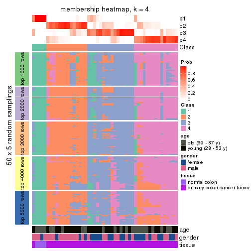
membership_heatmap(res, k = 5)
membership_heatmap(res, k = 6)

As soon as we have had the classes for columns, we can look for signatures which are significantly different between classes which can be candidate marks for certain classes. Following are the heatmaps for signatures.
Signature heatmaps where rows are scaled:
get_signatures(res, k = 2)
get_signatures(res, k = 3)
get_signatures(res, k = 4)
get_signatures(res, k = 5)
get_signatures(res, k = 6)
Signature heatmaps where rows are not scaled:
get_signatures(res, k = 2, scale_rows = FALSE)
get_signatures(res, k = 3, scale_rows = FALSE)
get_signatures(res, k = 4, scale_rows = FALSE)
get_signatures(res, k = 5, scale_rows = FALSE)
get_signatures(res, k = 6, scale_rows = FALSE)
Compare the overlap of signatures from different k:
compare_signatures(res)
get_signature() returns a data frame invisibly. TO get the list of signatures, the function
call should be assigned to a variable explicitly. In following code, if plot argument is set
to FALSE, no heatmap is plotted while only the differential analysis is performed.
# code only for demonstration
tb = get_signature(res, k = ..., plot = FALSE)
An example of the output of tb is:
#> which_row fdr mean_1 mean_2 scaled_mean_1 scaled_mean_2 km
#> 1 38 0.042760348 8.373488 9.131774 -0.5533452 0.5164555 1
#> 2 40 0.018707592 7.106213 8.469186 -0.6173731 0.5762149 1
#> 3 55 0.019134737 10.221463 11.207825 -0.6159697 0.5749050 1
#> 4 59 0.006059896 5.921854 7.869574 -0.6899429 0.6439467 1
#> 5 60 0.018055526 8.928898 10.211722 -0.6204761 0.5791110 1
#> 6 98 0.009384629 15.714769 14.887706 0.6635654 -0.6193277 2
...
The columns in tb are:
which_row: row indices corresponding to the input matrix.fdr: FDR for the differential test. mean_x: The mean value in group x.scaled_mean_x: The mean value in group x after rows are scaled.km: Row groups if k-means clustering is applied to rows.UMAP plot which shows how samples are separated.
dimension_reduction(res, k = 2, method = "UMAP")
dimension_reduction(res, k = 3, method = "UMAP")
dimension_reduction(res, k = 4, method = "UMAP")
dimension_reduction(res, k = 5, method = "UMAP")
dimension_reduction(res, k = 6, method = "UMAP")
Following heatmap shows how subgroups are split when increasing k:
collect_classes(res)
Test correlation between subgroups and known annotations. If the known annotation is numeric, one-way ANOVA test is applied, and if the known annotation is discrete, chi-squared contingency table test is applied.
test_to_known_factors(res)
#> n age(p) gender(p) tissue(p) k
#> SD:NMF 48 1.000 1.000 7.18e-05 2
#> SD:NMF 42 0.615 0.708 3.02e-04 3
#> SD:NMF 38 0.161 0.455 2.83e-08 4
#> SD:NMF 34 0.167 0.373 7.45e-07 5
#> SD:NMF 42 0.226 0.673 5.89e-08 6
If matrix rows can be associated to genes, consider to use functional_enrichment(res,
...) to perform function enrichment for the signature genes. See this vignette for more detailed explanations.
The object with results only for a single top-value method and a single partition method can be extracted as:
res = res_list["CV", "hclust"]
# you can also extract it by
# res = res_list["CV:hclust"]
A summary of res and all the functions that can be applied to it:
res
#> A 'ConsensusPartition' object with k = 2, 3, 4, 5, 6.
#> On a matrix with 16230 rows and 50 columns.
#> Top rows (1000, 2000, 3000, 4000, 5000) are extracted by 'CV' method.
#> Subgroups are detected by 'hclust' method.
#> Performed in total 1250 partitions by row resampling.
#> Best k for subgroups seems to be 5.
#>
#> Following methods can be applied to this 'ConsensusPartition' object:
#> [1] "cola_report" "collect_classes" "collect_plots"
#> [4] "collect_stats" "colnames" "compare_signatures"
#> [7] "consensus_heatmap" "dimension_reduction" "functional_enrichment"
#> [10] "get_anno_col" "get_anno" "get_classes"
#> [13] "get_consensus" "get_matrix" "get_membership"
#> [16] "get_param" "get_signatures" "get_stats"
#> [19] "is_best_k" "is_stable_k" "membership_heatmap"
#> [22] "ncol" "nrow" "plot_ecdf"
#> [25] "rownames" "select_partition_number" "show"
#> [28] "suggest_best_k" "test_to_known_factors"
collect_plots() function collects all the plots made from res for all k (number of partitions)
into one single page to provide an easy and fast comparison between different k.
collect_plots(res)
The plots are:
k and the heatmap of
predicted classes for each k.k.k.k.All the plots in panels can be made by individual functions and they are plotted later in this section.
select_partition_number() produces several plots showing different
statistics for choosing “optimized” k. There are following statistics:
k;k, the area increased is defined as \(A_k - A_{k-1}\).The detailed explanations of these statistics can be found in the cola vignette.
Generally speaking, lower PAC score, higher mean silhouette score or higher
concordance corresponds to better partition. Rand index and Jaccard index
measure how similar the current partition is compared to partition with k-1.
If they are too similar, we won't accept k is better than k-1.
select_partition_number(res)
The numeric values for all these statistics can be obtained by get_stats().
get_stats(res)
#> k 1-PAC mean_silhouette concordance area_increased Rand Jaccard
#> 2 2 0.731 0.824 0.929 0.2745 0.726 0.726
#> 3 3 0.266 0.242 0.632 1.0594 0.733 0.648
#> 4 4 0.442 0.514 0.699 0.2491 0.637 0.382
#> 5 5 0.578 0.528 0.734 0.0779 0.838 0.532
#> 6 6 0.614 0.524 0.728 0.0623 0.938 0.755
suggest_best_k() suggests the best \(k\) based on these statistics. The rules are as follows:
suggest_best_k(res)
#> [1] 5
Following shows the table of the partitions (You need to click the show/hide
code output link to see it). The membership matrix (columns with name p*)
is inferred by
clue::cl_consensus()
function with the SE method. Basically the value in the membership matrix
represents the probability to belong to a certain group. The finall class
label for an item is determined with the group with highest probability it
belongs to.
In get_classes() function, the entropy is calculated from the membership
matrix and the silhouette score is calculated from the consensus matrix.
cbind(get_classes(res, k = 2), get_membership(res, k = 2))
#> class entropy silhouette p1 p2
#> GSM615919 2 0.1184 0.932 0.016 0.984
#> GSM615921 2 0.0000 0.937 0.000 1.000
#> GSM615922 2 0.8443 0.536 0.272 0.728
#> GSM615925 2 0.0672 0.935 0.008 0.992
#> GSM615926 1 0.9909 0.413 0.556 0.444
#> GSM615933 2 0.0000 0.937 0.000 1.000
#> GSM615939 2 0.0938 0.933 0.012 0.988
#> GSM615941 2 0.9393 0.308 0.356 0.644
#> GSM615944 1 0.9850 0.446 0.572 0.428
#> GSM615945 2 0.0000 0.937 0.000 1.000
#> GSM615947 2 0.0938 0.934 0.012 0.988
#> GSM615948 2 0.8955 0.432 0.312 0.688
#> GSM615951 2 0.1843 0.921 0.028 0.972
#> GSM615918 2 0.0672 0.935 0.008 0.992
#> GSM615927 2 0.0672 0.935 0.008 0.992
#> GSM615929 2 0.0938 0.933 0.012 0.988
#> GSM615931 2 0.0000 0.937 0.000 1.000
#> GSM615937 2 0.0000 0.937 0.000 1.000
#> GSM615938 2 0.0000 0.937 0.000 1.000
#> GSM615940 2 0.1184 0.932 0.016 0.984
#> GSM615946 2 0.0672 0.935 0.008 0.992
#> GSM615952 2 0.1843 0.921 0.028 0.972
#> GSM615953 2 0.1633 0.925 0.024 0.976
#> GSM615955 1 0.9170 0.617 0.668 0.332
#> GSM721722 1 0.9170 0.617 0.668 0.332
#> GSM721723 2 0.0000 0.937 0.000 1.000
#> GSM721724 2 0.1184 0.932 0.016 0.984
#> GSM615917 2 0.0672 0.935 0.008 0.992
#> GSM615920 2 0.9970 -0.218 0.468 0.532
#> GSM615923 2 0.0000 0.937 0.000 1.000
#> GSM615928 2 0.0000 0.937 0.000 1.000
#> GSM615934 2 0.7883 0.611 0.236 0.764
#> GSM615950 2 0.0000 0.937 0.000 1.000
#> GSM615954 2 0.0000 0.937 0.000 1.000
#> GSM615956 2 0.1633 0.925 0.024 0.976
#> GSM615958 1 0.0000 0.748 1.000 0.000
#> GSM615924 2 0.0672 0.935 0.008 0.992
#> GSM615930 2 0.0000 0.937 0.000 1.000
#> GSM615932 2 0.0000 0.937 0.000 1.000
#> GSM615935 2 0.0000 0.937 0.000 1.000
#> GSM615936 2 0.1414 0.930 0.020 0.980
#> GSM615942 2 0.5294 0.819 0.120 0.880
#> GSM615943 2 0.0000 0.937 0.000 1.000
#> GSM615949 2 0.1184 0.932 0.016 0.984
#> GSM615957 2 0.0000 0.937 0.000 1.000
#> GSM721720 2 0.0000 0.937 0.000 1.000
#> GSM721721 2 0.0000 0.937 0.000 1.000
#> GSM615959 1 0.0000 0.748 1.000 0.000
#> GSM615960 1 0.0000 0.748 1.000 0.000
#> GSM615961 1 0.0000 0.748 1.000 0.000
cbind(get_classes(res, k = 3), get_membership(res, k = 3))
#> class entropy silhouette p1 p2 p3
#> GSM615919 2 0.7433 0.33960 0.072 0.660 0.268
#> GSM615921 2 0.8173 -0.03656 0.300 0.600 0.100
#> GSM615922 3 0.8714 0.33243 0.156 0.264 0.580
#> GSM615925 2 0.6662 0.35343 0.052 0.716 0.232
#> GSM615926 3 0.3267 0.64432 0.000 0.116 0.884
#> GSM615933 2 0.1163 0.35852 0.028 0.972 0.000
#> GSM615939 2 0.7607 0.04326 0.280 0.644 0.076
#> GSM615941 3 0.7585 0.48743 0.132 0.180 0.688
#> GSM615944 3 0.2878 0.65064 0.000 0.096 0.904
#> GSM615945 2 0.1163 0.35852 0.028 0.972 0.000
#> GSM615947 2 0.7063 -0.77129 0.464 0.516 0.020
#> GSM615948 3 0.8300 0.40748 0.136 0.244 0.620
#> GSM615951 2 0.7267 0.00562 0.268 0.668 0.064
#> GSM615918 2 0.6796 0.34987 0.056 0.708 0.236
#> GSM615927 2 0.6940 0.34869 0.068 0.708 0.224
#> GSM615929 2 0.9162 0.14343 0.268 0.536 0.196
#> GSM615931 2 0.1015 0.37259 0.012 0.980 0.008
#> GSM615937 2 0.5465 -0.24560 0.288 0.712 0.000
#> GSM615938 1 0.6299 1.00000 0.524 0.476 0.000
#> GSM615940 2 0.8318 0.04837 0.284 0.600 0.116
#> GSM615946 2 0.7528 0.04258 0.280 0.648 0.072
#> GSM615952 2 0.7267 0.00562 0.268 0.668 0.064
#> GSM615953 2 0.7157 -0.01846 0.276 0.668 0.056
#> GSM615955 3 0.0000 0.66663 0.000 0.000 1.000
#> GSM721722 3 0.0000 0.66663 0.000 0.000 1.000
#> GSM721723 2 0.6215 -0.68122 0.428 0.572 0.000
#> GSM721724 2 0.8318 0.04837 0.284 0.600 0.116
#> GSM615917 2 0.6796 0.34987 0.056 0.708 0.236
#> GSM615920 3 0.5406 0.55995 0.012 0.224 0.764
#> GSM615923 2 0.1905 0.36669 0.028 0.956 0.016
#> GSM615928 2 0.6693 0.31189 0.148 0.748 0.104
#> GSM615934 3 0.8941 0.25185 0.156 0.300 0.544
#> GSM615950 2 0.5363 -0.21966 0.276 0.724 0.000
#> GSM615954 2 0.1411 0.35331 0.036 0.964 0.000
#> GSM615956 2 0.7157 -0.01846 0.276 0.668 0.056
#> GSM615958 3 0.6192 0.59796 0.420 0.000 0.580
#> GSM615924 2 0.6559 0.34828 0.040 0.708 0.252
#> GSM615930 2 0.0592 0.36839 0.012 0.988 0.000
#> GSM615932 1 0.6299 1.00000 0.524 0.476 0.000
#> GSM615935 1 0.6299 1.00000 0.524 0.476 0.000
#> GSM615936 2 0.8318 0.05255 0.284 0.600 0.116
#> GSM615942 2 0.9394 -0.04215 0.268 0.508 0.224
#> GSM615943 2 0.2448 0.29881 0.076 0.924 0.000
#> GSM615949 2 0.8378 0.05445 0.284 0.596 0.120
#> GSM615957 2 0.6309 -0.92287 0.500 0.500 0.000
#> GSM721720 2 0.6215 -0.68122 0.428 0.572 0.000
#> GSM721721 2 0.1774 0.36930 0.024 0.960 0.016
#> GSM615959 3 0.6192 0.59796 0.420 0.000 0.580
#> GSM615960 3 0.6192 0.59796 0.420 0.000 0.580
#> GSM615961 3 0.6192 0.59796 0.420 0.000 0.580
cbind(get_classes(res, k = 4), get_membership(res, k = 4))
#> class entropy silhouette p1 p2 p3 p4
#> GSM615919 3 0.5364 -0.0749 0.000 0.028 0.652 0.320
#> GSM615921 2 0.7520 0.1839 0.000 0.496 0.252 0.252
#> GSM615922 3 0.6319 0.4275 0.056 0.224 0.684 0.036
#> GSM615925 4 0.5268 0.3421 0.000 0.008 0.452 0.540
#> GSM615926 3 0.5832 0.4418 0.312 0.004 0.640 0.044
#> GSM615933 4 0.0657 0.6860 0.000 0.012 0.004 0.984
#> GSM615939 2 0.5592 0.6563 0.000 0.656 0.300 0.044
#> GSM615941 3 0.6503 0.5168 0.104 0.180 0.688 0.028
#> GSM615944 3 0.5675 0.4305 0.320 0.008 0.644 0.028
#> GSM615945 4 0.0524 0.6852 0.000 0.008 0.004 0.988
#> GSM615947 2 0.2198 0.6366 0.000 0.920 0.072 0.008
#> GSM615948 3 0.6389 0.4781 0.072 0.200 0.692 0.036
#> GSM615951 2 0.6695 0.6544 0.012 0.648 0.208 0.132
#> GSM615918 4 0.4898 0.3820 0.000 0.000 0.416 0.584
#> GSM615927 4 0.5099 0.4090 0.000 0.008 0.380 0.612
#> GSM615929 2 0.6265 0.4928 0.000 0.500 0.444 0.056
#> GSM615931 4 0.1576 0.6816 0.000 0.004 0.048 0.948
#> GSM615937 4 0.5290 0.3962 0.000 0.404 0.012 0.584
#> GSM615938 2 0.0657 0.6104 0.000 0.984 0.004 0.012
#> GSM615940 2 0.5478 0.6397 0.000 0.628 0.344 0.028
#> GSM615946 2 0.5697 0.6566 0.000 0.656 0.292 0.052
#> GSM615952 2 0.6695 0.6544 0.012 0.648 0.208 0.132
#> GSM615953 2 0.6658 0.6522 0.008 0.648 0.192 0.152
#> GSM615955 3 0.5203 0.2650 0.416 0.008 0.576 0.000
#> GSM721722 3 0.5203 0.2650 0.416 0.008 0.576 0.000
#> GSM721723 2 0.5090 0.2024 0.000 0.660 0.016 0.324
#> GSM721724 2 0.5478 0.6397 0.000 0.628 0.344 0.028
#> GSM615917 4 0.5151 0.3333 0.000 0.004 0.464 0.532
#> GSM615920 3 0.7256 0.4275 0.288 0.012 0.564 0.136
#> GSM615923 4 0.5228 0.5421 0.000 0.036 0.268 0.696
#> GSM615928 3 0.7881 -0.2061 0.000 0.320 0.384 0.296
#> GSM615934 3 0.5309 0.3646 0.024 0.228 0.728 0.020
#> GSM615950 4 0.5256 0.4104 0.000 0.392 0.012 0.596
#> GSM615954 4 0.2224 0.6668 0.000 0.040 0.032 0.928
#> GSM615956 2 0.6650 0.6543 0.008 0.648 0.196 0.148
#> GSM615958 1 0.0000 1.0000 1.000 0.000 0.000 0.000
#> GSM615924 3 0.5398 -0.2252 0.000 0.016 0.580 0.404
#> GSM615930 4 0.1042 0.6861 0.000 0.008 0.020 0.972
#> GSM615932 2 0.1004 0.6131 0.000 0.972 0.004 0.024
#> GSM615935 2 0.1004 0.6131 0.000 0.972 0.004 0.024
#> GSM615936 2 0.5548 0.6431 0.000 0.628 0.340 0.032
#> GSM615942 2 0.6690 0.5509 0.052 0.596 0.324 0.028
#> GSM615943 4 0.1824 0.6721 0.000 0.060 0.004 0.936
#> GSM615949 2 0.5599 0.6328 0.000 0.616 0.352 0.032
#> GSM615957 2 0.3105 0.5510 0.000 0.868 0.012 0.120
#> GSM721720 2 0.5090 0.2024 0.000 0.660 0.016 0.324
#> GSM721721 4 0.5169 0.5404 0.000 0.032 0.272 0.696
#> GSM615959 1 0.0000 1.0000 1.000 0.000 0.000 0.000
#> GSM615960 1 0.0000 1.0000 1.000 0.000 0.000 0.000
#> GSM615961 1 0.0000 1.0000 1.000 0.000 0.000 0.000
cbind(get_classes(res, k = 5), get_membership(res, k = 5))
#> class entropy silhouette p1 p2 p3 p4 p5
#> GSM615919 4 0.554 0.5687 0.008 0.284 0.016 0.644 0.048
#> GSM615921 2 0.753 0.1410 0.020 0.400 0.012 0.292 0.276
#> GSM615922 3 0.430 0.4738 0.000 0.388 0.608 0.004 0.000
#> GSM615925 4 0.273 0.7693 0.000 0.076 0.008 0.888 0.028
#> GSM615926 3 0.193 0.7336 0.004 0.052 0.928 0.016 0.000
#> GSM615933 5 0.565 0.4089 0.012 0.008 0.036 0.400 0.544
#> GSM615939 2 0.197 0.6889 0.008 0.936 0.032 0.012 0.012
#> GSM615941 3 0.361 0.6427 0.000 0.268 0.732 0.000 0.000
#> GSM615944 3 0.163 0.7322 0.008 0.056 0.936 0.000 0.000
#> GSM615945 5 0.554 0.4086 0.012 0.004 0.036 0.400 0.548
#> GSM615947 2 0.413 0.5913 0.008 0.720 0.008 0.000 0.264
#> GSM615948 3 0.412 0.5715 0.000 0.336 0.660 0.004 0.000
#> GSM615951 2 0.528 0.6561 0.024 0.760 0.112 0.056 0.048
#> GSM615918 4 0.130 0.7183 0.000 0.012 0.008 0.960 0.020
#> GSM615927 4 0.254 0.6406 0.000 0.008 0.028 0.900 0.064
#> GSM615929 2 0.369 0.6050 0.000 0.816 0.060 0.124 0.000
#> GSM615931 5 0.536 0.3109 0.012 0.012 0.012 0.476 0.488
#> GSM615937 5 0.260 0.4524 0.000 0.040 0.004 0.060 0.896
#> GSM615938 2 0.440 0.5254 0.008 0.648 0.000 0.004 0.340
#> GSM615940 2 0.141 0.6778 0.000 0.940 0.060 0.000 0.000
#> GSM615946 2 0.209 0.6901 0.008 0.932 0.028 0.020 0.012
#> GSM615952 2 0.528 0.6561 0.024 0.760 0.112 0.056 0.048
#> GSM615953 2 0.542 0.6551 0.024 0.752 0.108 0.068 0.048
#> GSM615955 3 0.319 0.6758 0.112 0.040 0.848 0.000 0.000
#> GSM721722 3 0.319 0.6758 0.112 0.040 0.848 0.000 0.000
#> GSM721723 5 0.443 0.1981 0.020 0.264 0.008 0.000 0.708
#> GSM721724 2 0.141 0.6778 0.000 0.940 0.060 0.000 0.000
#> GSM615917 4 0.249 0.7711 0.000 0.072 0.008 0.900 0.020
#> GSM615920 3 0.481 0.5636 0.004 0.048 0.732 0.204 0.012
#> GSM615923 5 0.728 -0.0237 0.008 0.248 0.012 0.344 0.388
#> GSM615928 2 0.663 0.0989 0.020 0.536 0.012 0.328 0.104
#> GSM615934 2 0.445 -0.3832 0.000 0.500 0.496 0.004 0.000
#> GSM615950 5 0.277 0.4562 0.000 0.044 0.000 0.076 0.880
#> GSM615954 5 0.644 0.4175 0.012 0.032 0.068 0.328 0.560
#> GSM615956 2 0.536 0.6573 0.024 0.756 0.108 0.064 0.048
#> GSM615958 1 0.134 1.0000 0.944 0.000 0.056 0.000 0.000
#> GSM615924 4 0.408 0.6780 0.008 0.204 0.008 0.768 0.012
#> GSM615930 5 0.575 0.4032 0.012 0.016 0.032 0.392 0.548
#> GSM615932 2 0.473 0.5287 0.008 0.648 0.004 0.012 0.328
#> GSM615935 2 0.473 0.5287 0.008 0.648 0.004 0.012 0.328
#> GSM615936 2 0.170 0.6824 0.000 0.932 0.060 0.008 0.000
#> GSM615942 2 0.351 0.5634 0.000 0.748 0.252 0.000 0.000
#> GSM615943 5 0.540 0.4300 0.012 0.004 0.036 0.348 0.600
#> GSM615949 2 0.170 0.6739 0.000 0.928 0.068 0.004 0.000
#> GSM615957 5 0.508 -0.3584 0.020 0.472 0.008 0.000 0.500
#> GSM721720 5 0.443 0.1981 0.020 0.264 0.008 0.000 0.708
#> GSM721721 5 0.729 -0.0284 0.008 0.252 0.012 0.344 0.384
#> GSM615959 1 0.134 1.0000 0.944 0.000 0.056 0.000 0.000
#> GSM615960 1 0.134 1.0000 0.944 0.000 0.056 0.000 0.000
#> GSM615961 1 0.134 1.0000 0.944 0.000 0.056 0.000 0.000
cbind(get_classes(res, k = 6), get_membership(res, k = 6))
#> class entropy silhouette p1 p2 p3 p4 p5 p6
#> GSM615919 4 0.3314 0.511389 0.000 0.256 0.000 0.740 0.004 0.000
#> GSM615921 4 0.6873 0.000732 0.000 0.232 0.004 0.420 0.048 0.296
#> GSM615922 3 0.4066 0.464774 0.000 0.392 0.596 0.012 0.000 0.000
#> GSM615925 4 0.4563 0.532220 0.000 0.056 0.000 0.628 0.316 0.000
#> GSM615926 3 0.1059 0.744507 0.000 0.016 0.964 0.016 0.004 0.000
#> GSM615933 5 0.0146 0.623101 0.000 0.004 0.000 0.000 0.996 0.000
#> GSM615939 2 0.3947 0.611207 0.000 0.756 0.016 0.032 0.000 0.196
#> GSM615941 3 0.3151 0.643545 0.000 0.252 0.748 0.000 0.000 0.000
#> GSM615944 3 0.0603 0.743552 0.004 0.016 0.980 0.000 0.000 0.000
#> GSM615945 5 0.0000 0.623855 0.000 0.000 0.000 0.000 1.000 0.000
#> GSM615947 2 0.5999 0.437750 0.000 0.516 0.020 0.160 0.000 0.304
#> GSM615948 3 0.3804 0.556849 0.000 0.336 0.656 0.008 0.000 0.000
#> GSM615951 2 0.5970 0.499636 0.000 0.604 0.108 0.076 0.000 0.212
#> GSM615918 4 0.3881 0.442473 0.000 0.004 0.000 0.600 0.396 0.000
#> GSM615927 4 0.3995 0.346575 0.000 0.004 0.000 0.516 0.480 0.000
#> GSM615929 2 0.2961 0.506145 0.000 0.840 0.020 0.132 0.008 0.000
#> GSM615931 5 0.2100 0.546951 0.000 0.004 0.000 0.112 0.884 0.000
#> GSM615937 5 0.4384 0.065959 0.000 0.000 0.004 0.016 0.520 0.460
#> GSM615938 2 0.6555 0.357624 0.000 0.436 0.020 0.188 0.012 0.344
#> GSM615940 2 0.0837 0.628995 0.000 0.972 0.020 0.004 0.000 0.004
#> GSM615946 2 0.4117 0.610988 0.000 0.748 0.016 0.044 0.000 0.192
#> GSM615952 2 0.5970 0.499636 0.000 0.604 0.108 0.076 0.000 0.212
#> GSM615953 2 0.6203 0.495602 0.000 0.604 0.088 0.076 0.016 0.216
#> GSM615955 3 0.2266 0.701009 0.108 0.012 0.880 0.000 0.000 0.000
#> GSM721722 3 0.2266 0.701009 0.108 0.012 0.880 0.000 0.000 0.000
#> GSM721723 6 0.3073 0.789660 0.000 0.016 0.000 0.008 0.152 0.824
#> GSM721724 2 0.0837 0.628995 0.000 0.972 0.020 0.004 0.000 0.004
#> GSM615917 4 0.4476 0.535078 0.000 0.052 0.000 0.640 0.308 0.000
#> GSM615920 3 0.3651 0.565181 0.000 0.008 0.752 0.224 0.016 0.000
#> GSM615923 5 0.6844 0.033036 0.000 0.208 0.000 0.324 0.408 0.060
#> GSM615928 4 0.6605 0.235617 0.000 0.376 0.000 0.396 0.044 0.184
#> GSM615934 2 0.4169 -0.318258 0.000 0.532 0.456 0.012 0.000 0.000
#> GSM615950 5 0.5255 0.163933 0.000 0.000 0.012 0.072 0.544 0.372
#> GSM615954 5 0.5279 0.474861 0.000 0.020 0.040 0.072 0.700 0.168
#> GSM615956 2 0.6156 0.498895 0.000 0.608 0.088 0.072 0.016 0.216
#> GSM615958 1 0.0000 1.000000 1.000 0.000 0.000 0.000 0.000 0.000
#> GSM615924 4 0.4506 0.541701 0.000 0.176 0.000 0.704 0.120 0.000
#> GSM615930 5 0.0508 0.621173 0.000 0.004 0.000 0.012 0.984 0.000
#> GSM615932 2 0.6828 0.362264 0.000 0.432 0.020 0.192 0.028 0.328
#> GSM615935 2 0.6828 0.362264 0.000 0.432 0.020 0.192 0.028 0.328
#> GSM615936 2 0.1409 0.630603 0.000 0.948 0.032 0.012 0.000 0.008
#> GSM615942 2 0.3240 0.494162 0.000 0.752 0.244 0.004 0.000 0.000
#> GSM615943 5 0.1297 0.624604 0.000 0.000 0.000 0.012 0.948 0.040
#> GSM615949 2 0.0993 0.623784 0.000 0.964 0.024 0.012 0.000 0.000
#> GSM615957 6 0.2814 0.612201 0.000 0.172 0.000 0.008 0.000 0.820
#> GSM721720 6 0.3073 0.789660 0.000 0.016 0.000 0.008 0.152 0.824
#> GSM721721 5 0.6854 0.027896 0.000 0.212 0.000 0.320 0.408 0.060
#> GSM615959 1 0.0000 1.000000 1.000 0.000 0.000 0.000 0.000 0.000
#> GSM615960 1 0.0000 1.000000 1.000 0.000 0.000 0.000 0.000 0.000
#> GSM615961 1 0.0000 1.000000 1.000 0.000 0.000 0.000 0.000 0.000
Heatmaps for the consensus matrix. It visualizes the probability of two samples to be in a same group.
consensus_heatmap(res, k = 2)
consensus_heatmap(res, k = 3)
consensus_heatmap(res, k = 4)
consensus_heatmap(res, k = 5)
consensus_heatmap(res, k = 6)
Heatmaps for the membership of samples in all partitions to see how consistent they are:
membership_heatmap(res, k = 2)
membership_heatmap(res, k = 3)
membership_heatmap(res, k = 4)
membership_heatmap(res, k = 5)
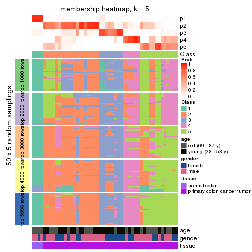
membership_heatmap(res, k = 6)
As soon as we have had the classes for columns, we can look for signatures which are significantly different between classes which can be candidate marks for certain classes. Following are the heatmaps for signatures.
Signature heatmaps where rows are scaled:
get_signatures(res, k = 2)
get_signatures(res, k = 3)

get_signatures(res, k = 4)

get_signatures(res, k = 5)
get_signatures(res, k = 6)
Signature heatmaps where rows are not scaled:
get_signatures(res, k = 2, scale_rows = FALSE)
get_signatures(res, k = 3, scale_rows = FALSE)
get_signatures(res, k = 4, scale_rows = FALSE)
get_signatures(res, k = 5, scale_rows = FALSE)
get_signatures(res, k = 6, scale_rows = FALSE)
Compare the overlap of signatures from different k:
compare_signatures(res)
get_signature() returns a data frame invisibly. TO get the list of signatures, the function
call should be assigned to a variable explicitly. In following code, if plot argument is set
to FALSE, no heatmap is plotted while only the differential analysis is performed.
# code only for demonstration
tb = get_signature(res, k = ..., plot = FALSE)
An example of the output of tb is:
#> which_row fdr mean_1 mean_2 scaled_mean_1 scaled_mean_2 km
#> 1 38 0.042760348 8.373488 9.131774 -0.5533452 0.5164555 1
#> 2 40 0.018707592 7.106213 8.469186 -0.6173731 0.5762149 1
#> 3 55 0.019134737 10.221463 11.207825 -0.6159697 0.5749050 1
#> 4 59 0.006059896 5.921854 7.869574 -0.6899429 0.6439467 1
#> 5 60 0.018055526 8.928898 10.211722 -0.6204761 0.5791110 1
#> 6 98 0.009384629 15.714769 14.887706 0.6635654 -0.6193277 2
...
The columns in tb are:
which_row: row indices corresponding to the input matrix.fdr: FDR for the differential test. mean_x: The mean value in group x.scaled_mean_x: The mean value in group x after rows are scaled.km: Row groups if k-means clustering is applied to rows.UMAP plot which shows how samples are separated.
dimension_reduction(res, k = 2, method = "UMAP")
dimension_reduction(res, k = 3, method = "UMAP")
dimension_reduction(res, k = 4, method = "UMAP")
dimension_reduction(res, k = 5, method = "UMAP")
dimension_reduction(res, k = 6, method = "UMAP")
Following heatmap shows how subgroups are split when increasing k:
collect_classes(res)
Test correlation between subgroups and known annotations. If the known annotation is numeric, one-way ANOVA test is applied, and if the known annotation is discrete, chi-squared contingency table test is applied.
test_to_known_factors(res)
#> n age(p) gender(p) tissue(p) k
#> CV:hclust 45 0.6191 0.488 4.84e-06 2
#> CV:hclust 12 1.0000 0.480 4.80e-01 3
#> CV:hclust 29 0.1387 0.315 2.24e-06 4
#> CV:hclust 33 0.0436 0.170 3.22e-07 5
#> CV:hclust 30 0.1084 0.100 1.47e-05 6
If matrix rows can be associated to genes, consider to use functional_enrichment(res,
...) to perform function enrichment for the signature genes. See this vignette for more detailed explanations.
The object with results only for a single top-value method and a single partition method can be extracted as:
res = res_list["CV", "kmeans"]
# you can also extract it by
# res = res_list["CV:kmeans"]
A summary of res and all the functions that can be applied to it:
res
#> A 'ConsensusPartition' object with k = 2, 3, 4, 5, 6.
#> On a matrix with 16230 rows and 50 columns.
#> Top rows (1000, 2000, 3000, 4000, 5000) are extracted by 'CV' method.
#> Subgroups are detected by 'kmeans' method.
#> Performed in total 1250 partitions by row resampling.
#> Best k for subgroups seems to be 3.
#>
#> Following methods can be applied to this 'ConsensusPartition' object:
#> [1] "cola_report" "collect_classes" "collect_plots"
#> [4] "collect_stats" "colnames" "compare_signatures"
#> [7] "consensus_heatmap" "dimension_reduction" "functional_enrichment"
#> [10] "get_anno_col" "get_anno" "get_classes"
#> [13] "get_consensus" "get_matrix" "get_membership"
#> [16] "get_param" "get_signatures" "get_stats"
#> [19] "is_best_k" "is_stable_k" "membership_heatmap"
#> [22] "ncol" "nrow" "plot_ecdf"
#> [25] "rownames" "select_partition_number" "show"
#> [28] "suggest_best_k" "test_to_known_factors"
collect_plots() function collects all the plots made from res for all k (number of partitions)
into one single page to provide an easy and fast comparison between different k.
collect_plots(res)
The plots are:
k and the heatmap of
predicted classes for each k.k.k.k.All the plots in panels can be made by individual functions and they are plotted later in this section.
select_partition_number() produces several plots showing different
statistics for choosing “optimized” k. There are following statistics:
k;k, the area increased is defined as \(A_k - A_{k-1}\).The detailed explanations of these statistics can be found in the cola vignette.
Generally speaking, lower PAC score, higher mean silhouette score or higher
concordance corresponds to better partition. Rand index and Jaccard index
measure how similar the current partition is compared to partition with k-1.
If they are too similar, we won't accept k is better than k-1.
select_partition_number(res)
The numeric values for all these statistics can be obtained by get_stats().
get_stats(res)
#> k 1-PAC mean_silhouette concordance area_increased Rand Jaccard
#> 2 2 0.740 0.885 0.939 0.2833 0.784 0.784
#> 3 3 0.434 0.751 0.865 1.0684 0.565 0.469
#> 4 4 0.620 0.634 0.831 0.2191 0.807 0.567
#> 5 5 0.631 0.595 0.772 0.0900 0.838 0.511
#> 6 6 0.725 0.669 0.785 0.0539 0.914 0.650
suggest_best_k() suggests the best \(k\) based on these statistics. The rules are as follows:
suggest_best_k(res)
#> [1] 3
Following shows the table of the partitions (You need to click the show/hide
code output link to see it). The membership matrix (columns with name p*)
is inferred by
clue::cl_consensus()
function with the SE method. Basically the value in the membership matrix
represents the probability to belong to a certain group. The finall class
label for an item is determined with the group with highest probability it
belongs to.
In get_classes() function, the entropy is calculated from the membership
matrix and the silhouette score is calculated from the consensus matrix.
cbind(get_classes(res, k = 2), get_membership(res, k = 2))
#> class entropy silhouette p1 p2
#> GSM615919 2 0.0672 0.927 0.008 0.992
#> GSM615921 2 0.0000 0.927 0.000 1.000
#> GSM615922 2 0.8813 0.647 0.300 0.700
#> GSM615925 2 0.1414 0.925 0.020 0.980
#> GSM615926 2 0.9000 0.642 0.316 0.684
#> GSM615933 2 0.1184 0.925 0.016 0.984
#> GSM615939 2 0.0672 0.926 0.008 0.992
#> GSM615941 2 0.8813 0.647 0.300 0.700
#> GSM615944 2 0.9129 0.601 0.328 0.672
#> GSM615945 2 0.1184 0.925 0.016 0.984
#> GSM615947 2 0.0000 0.927 0.000 1.000
#> GSM615948 2 0.8813 0.647 0.300 0.700
#> GSM615951 2 0.8813 0.647 0.300 0.700
#> GSM615918 2 0.1414 0.925 0.020 0.980
#> GSM615927 2 0.1184 0.925 0.016 0.984
#> GSM615929 2 0.0672 0.926 0.008 0.992
#> GSM615931 2 0.1414 0.925 0.020 0.980
#> GSM615937 2 0.1184 0.925 0.016 0.984
#> GSM615938 2 0.0000 0.927 0.000 1.000
#> GSM615940 2 0.0672 0.926 0.008 0.992
#> GSM615946 2 0.0000 0.927 0.000 1.000
#> GSM615952 2 0.8813 0.647 0.300 0.700
#> GSM615953 2 0.0000 0.927 0.000 1.000
#> GSM615955 1 0.1633 0.981 0.976 0.024
#> GSM721722 1 0.1633 0.981 0.976 0.024
#> GSM721723 2 0.0000 0.927 0.000 1.000
#> GSM721724 2 0.0672 0.926 0.008 0.992
#> GSM615917 2 0.1184 0.925 0.016 0.984
#> GSM615920 2 0.2603 0.915 0.044 0.956
#> GSM615923 2 0.1184 0.925 0.016 0.984
#> GSM615928 2 0.0672 0.927 0.008 0.992
#> GSM615934 2 0.6623 0.794 0.172 0.828
#> GSM615950 2 0.1184 0.925 0.016 0.984
#> GSM615954 2 0.1184 0.925 0.016 0.984
#> GSM615956 2 0.0672 0.926 0.008 0.992
#> GSM615958 1 0.0000 0.991 1.000 0.000
#> GSM615924 2 0.1184 0.925 0.016 0.984
#> GSM615930 2 0.1184 0.925 0.016 0.984
#> GSM615932 2 0.0000 0.927 0.000 1.000
#> GSM615935 2 0.0000 0.927 0.000 1.000
#> GSM615936 2 0.0672 0.926 0.008 0.992
#> GSM615942 2 0.8813 0.647 0.300 0.700
#> GSM615943 2 0.1184 0.925 0.016 0.984
#> GSM615949 2 0.0672 0.926 0.008 0.992
#> GSM615957 2 0.0000 0.927 0.000 1.000
#> GSM721720 2 0.0000 0.927 0.000 1.000
#> GSM721721 2 0.0938 0.926 0.012 0.988
#> GSM615959 1 0.0000 0.991 1.000 0.000
#> GSM615960 1 0.0000 0.991 1.000 0.000
#> GSM615961 1 0.0000 0.991 1.000 0.000
cbind(get_classes(res, k = 3), get_membership(res, k = 3))
#> class entropy silhouette p1 p2 p3
#> GSM615919 2 0.5706 0.660 0.000 0.680 0.320
#> GSM615921 2 0.5058 0.676 0.000 0.756 0.244
#> GSM615922 3 0.2902 0.813 0.064 0.016 0.920
#> GSM615925 2 0.4178 0.785 0.000 0.828 0.172
#> GSM615926 3 0.6537 0.632 0.064 0.196 0.740
#> GSM615933 2 0.1163 0.821 0.000 0.972 0.028
#> GSM615939 3 0.1643 0.822 0.000 0.044 0.956
#> GSM615941 3 0.2902 0.816 0.064 0.016 0.920
#> GSM615944 3 0.2845 0.812 0.068 0.012 0.920
#> GSM615945 2 0.0892 0.820 0.000 0.980 0.020
#> GSM615947 3 0.1860 0.819 0.000 0.052 0.948
#> GSM615948 3 0.2902 0.816 0.064 0.016 0.920
#> GSM615951 3 0.2902 0.816 0.064 0.016 0.920
#> GSM615918 2 0.4178 0.785 0.000 0.828 0.172
#> GSM615927 2 0.0237 0.812 0.000 0.996 0.004
#> GSM615929 3 0.1753 0.817 0.000 0.048 0.952
#> GSM615931 2 0.4062 0.797 0.000 0.836 0.164
#> GSM615937 2 0.1129 0.818 0.004 0.976 0.020
#> GSM615938 2 0.5098 0.672 0.000 0.752 0.248
#> GSM615940 3 0.1643 0.822 0.000 0.044 0.956
#> GSM615946 3 0.4399 0.666 0.000 0.188 0.812
#> GSM615952 3 0.2301 0.815 0.060 0.004 0.936
#> GSM615953 3 0.6168 0.280 0.000 0.412 0.588
#> GSM615955 3 0.6079 0.368 0.388 0.000 0.612
#> GSM721722 3 0.5553 0.578 0.272 0.004 0.724
#> GSM721723 2 0.5365 0.672 0.004 0.744 0.252
#> GSM721724 3 0.1643 0.822 0.000 0.044 0.956
#> GSM615917 2 0.4178 0.785 0.000 0.828 0.172
#> GSM615920 2 0.5884 0.664 0.012 0.716 0.272
#> GSM615923 2 0.1964 0.822 0.000 0.944 0.056
#> GSM615928 2 0.4452 0.773 0.000 0.808 0.192
#> GSM615934 3 0.2903 0.817 0.048 0.028 0.924
#> GSM615950 2 0.1129 0.818 0.004 0.976 0.020
#> GSM615954 2 0.0892 0.820 0.000 0.980 0.020
#> GSM615956 3 0.1753 0.820 0.000 0.048 0.952
#> GSM615958 1 0.0237 1.000 0.996 0.000 0.004
#> GSM615924 2 0.3752 0.802 0.000 0.856 0.144
#> GSM615930 2 0.0000 0.813 0.000 1.000 0.000
#> GSM615932 2 0.5098 0.672 0.000 0.752 0.248
#> GSM615935 3 0.6291 0.130 0.000 0.468 0.532
#> GSM615936 3 0.1964 0.823 0.000 0.056 0.944
#> GSM615942 3 0.2902 0.816 0.064 0.016 0.920
#> GSM615943 2 0.0892 0.820 0.000 0.980 0.020
#> GSM615949 3 0.1860 0.824 0.000 0.052 0.948
#> GSM615957 3 0.6330 0.333 0.004 0.396 0.600
#> GSM721720 2 0.5365 0.672 0.004 0.744 0.252
#> GSM721721 2 0.5431 0.677 0.000 0.716 0.284
#> GSM615959 1 0.0237 1.000 0.996 0.000 0.004
#> GSM615960 1 0.0237 1.000 0.996 0.000 0.004
#> GSM615961 1 0.0237 1.000 0.996 0.000 0.004
cbind(get_classes(res, k = 4), get_membership(res, k = 4))
#> class entropy silhouette p1 p2 p3 p4
#> GSM615919 4 0.4549 0.6384 0.000 0.100 0.096 0.804
#> GSM615921 2 0.4040 0.5258 0.000 0.752 0.000 0.248
#> GSM615922 3 0.0592 0.8182 0.016 0.000 0.984 0.000
#> GSM615925 4 0.0817 0.7689 0.000 0.000 0.024 0.976
#> GSM615926 3 0.1369 0.8103 0.016 0.004 0.964 0.016
#> GSM615933 4 0.3982 0.6906 0.000 0.220 0.004 0.776
#> GSM615939 3 0.6376 0.2977 0.000 0.396 0.536 0.068
#> GSM615941 3 0.0592 0.8182 0.016 0.000 0.984 0.000
#> GSM615944 3 0.0592 0.8182 0.016 0.000 0.984 0.000
#> GSM615945 4 0.4456 0.6395 0.000 0.280 0.004 0.716
#> GSM615947 2 0.6354 -0.0449 0.000 0.520 0.416 0.064
#> GSM615948 3 0.0592 0.8182 0.016 0.000 0.984 0.000
#> GSM615951 3 0.0779 0.8174 0.016 0.004 0.980 0.000
#> GSM615918 4 0.0817 0.7689 0.000 0.000 0.024 0.976
#> GSM615927 4 0.1978 0.7563 0.000 0.068 0.004 0.928
#> GSM615929 3 0.4883 0.5673 0.000 0.016 0.696 0.288
#> GSM615931 4 0.4019 0.7126 0.000 0.196 0.012 0.792
#> GSM615937 2 0.5334 -0.1356 0.008 0.588 0.004 0.400
#> GSM615938 2 0.1209 0.6922 0.000 0.964 0.004 0.032
#> GSM615940 3 0.6276 0.3343 0.000 0.380 0.556 0.064
#> GSM615946 2 0.7148 0.0881 0.000 0.496 0.364 0.140
#> GSM615952 3 0.0927 0.8159 0.016 0.008 0.976 0.000
#> GSM615953 2 0.3697 0.6617 0.000 0.852 0.048 0.100
#> GSM615955 3 0.1474 0.7954 0.052 0.000 0.948 0.000
#> GSM721722 3 0.1484 0.8093 0.020 0.004 0.960 0.016
#> GSM721723 2 0.0804 0.6871 0.008 0.980 0.000 0.012
#> GSM721724 3 0.6400 0.2709 0.000 0.408 0.524 0.068
#> GSM615917 4 0.0707 0.7678 0.000 0.000 0.020 0.980
#> GSM615920 4 0.4053 0.6176 0.000 0.004 0.228 0.768
#> GSM615923 4 0.3335 0.7537 0.000 0.128 0.016 0.856
#> GSM615928 4 0.2521 0.7517 0.000 0.024 0.064 0.912
#> GSM615934 3 0.1637 0.7905 0.000 0.000 0.940 0.060
#> GSM615950 2 0.5375 -0.1532 0.008 0.572 0.004 0.416
#> GSM615954 4 0.4994 0.2988 0.000 0.480 0.000 0.520
#> GSM615956 3 0.6392 0.1565 0.000 0.452 0.484 0.064
#> GSM615958 1 0.0336 1.0000 0.992 0.000 0.008 0.000
#> GSM615924 4 0.1411 0.7675 0.000 0.020 0.020 0.960
#> GSM615930 4 0.4283 0.6652 0.000 0.256 0.004 0.740
#> GSM615932 2 0.1209 0.6922 0.000 0.964 0.004 0.032
#> GSM615935 2 0.2214 0.6942 0.000 0.928 0.044 0.028
#> GSM615936 3 0.3081 0.7678 0.000 0.048 0.888 0.064
#> GSM615942 3 0.0592 0.8182 0.016 0.000 0.984 0.000
#> GSM615943 4 0.5163 0.2861 0.000 0.480 0.004 0.516
#> GSM615949 3 0.3081 0.7678 0.000 0.048 0.888 0.064
#> GSM615957 2 0.3450 0.6093 0.008 0.836 0.156 0.000
#> GSM721720 2 0.0804 0.6871 0.008 0.980 0.000 0.012
#> GSM721721 4 0.2741 0.7230 0.000 0.012 0.096 0.892
#> GSM615959 1 0.0336 1.0000 0.992 0.000 0.008 0.000
#> GSM615960 1 0.0336 1.0000 0.992 0.000 0.008 0.000
#> GSM615961 1 0.0336 1.0000 0.992 0.000 0.008 0.000
cbind(get_classes(res, k = 5), get_membership(res, k = 5))
#> class entropy silhouette p1 p2 p3 p4 p5
#> GSM615919 4 0.4993 0.5036 0.000 0.224 0.020 0.708 0.048
#> GSM615921 2 0.5680 0.4821 0.000 0.620 0.000 0.140 0.240
#> GSM615922 3 0.0162 0.9219 0.000 0.004 0.996 0.000 0.000
#> GSM615925 4 0.0451 0.5958 0.000 0.000 0.008 0.988 0.004
#> GSM615926 3 0.1117 0.9032 0.000 0.000 0.964 0.020 0.016
#> GSM615933 4 0.6316 -0.0915 0.004 0.136 0.000 0.464 0.396
#> GSM615939 2 0.3909 0.6971 0.000 0.760 0.216 0.024 0.000
#> GSM615941 3 0.0290 0.9224 0.000 0.008 0.992 0.000 0.000
#> GSM615944 3 0.0510 0.9173 0.000 0.000 0.984 0.000 0.016
#> GSM615945 4 0.6302 -0.1403 0.004 0.132 0.000 0.444 0.420
#> GSM615947 2 0.4164 0.7080 0.000 0.764 0.200 0.024 0.012
#> GSM615948 3 0.0290 0.9224 0.000 0.008 0.992 0.000 0.000
#> GSM615951 3 0.0510 0.9205 0.000 0.016 0.984 0.000 0.000
#> GSM615918 4 0.0451 0.5958 0.000 0.000 0.008 0.988 0.004
#> GSM615927 4 0.3181 0.5156 0.000 0.072 0.000 0.856 0.072
#> GSM615929 4 0.6287 0.2858 0.000 0.240 0.224 0.536 0.000
#> GSM615931 4 0.6105 -0.0173 0.004 0.096 0.004 0.500 0.396
#> GSM615937 5 0.1478 0.6458 0.000 0.000 0.000 0.064 0.936
#> GSM615938 2 0.3906 0.5023 0.000 0.704 0.000 0.004 0.292
#> GSM615940 2 0.4058 0.6781 0.000 0.740 0.236 0.024 0.000
#> GSM615946 2 0.3788 0.6808 0.000 0.820 0.104 0.072 0.004
#> GSM615952 3 0.0609 0.9193 0.000 0.020 0.980 0.000 0.000
#> GSM615953 2 0.4474 0.5824 0.000 0.780 0.024 0.056 0.140
#> GSM615955 3 0.0912 0.9112 0.012 0.000 0.972 0.000 0.016
#> GSM721722 3 0.0798 0.9133 0.000 0.000 0.976 0.008 0.016
#> GSM721723 5 0.3963 0.5000 0.008 0.256 0.000 0.004 0.732
#> GSM721724 2 0.3909 0.6971 0.000 0.760 0.216 0.024 0.000
#> GSM615917 4 0.0451 0.5958 0.000 0.000 0.008 0.988 0.004
#> GSM615920 4 0.4359 0.4357 0.000 0.004 0.288 0.692 0.016
#> GSM615923 4 0.5382 0.2847 0.000 0.072 0.000 0.592 0.336
#> GSM615928 4 0.3818 0.5671 0.000 0.144 0.016 0.812 0.028
#> GSM615934 3 0.2625 0.7947 0.000 0.108 0.876 0.016 0.000
#> GSM615950 5 0.2632 0.6434 0.000 0.040 0.000 0.072 0.888
#> GSM615954 5 0.5316 0.4533 0.004 0.084 0.000 0.256 0.656
#> GSM615956 2 0.3916 0.7097 0.000 0.780 0.188 0.028 0.004
#> GSM615958 1 0.1012 0.9913 0.968 0.000 0.012 0.000 0.020
#> GSM615924 4 0.1768 0.5941 0.000 0.072 0.004 0.924 0.000
#> GSM615930 4 0.6191 -0.0725 0.004 0.120 0.000 0.476 0.400
#> GSM615932 2 0.3906 0.5023 0.000 0.704 0.000 0.004 0.292
#> GSM615935 2 0.4039 0.5146 0.000 0.720 0.008 0.004 0.268
#> GSM615936 2 0.4855 0.2988 0.000 0.552 0.424 0.024 0.000
#> GSM615942 3 0.0290 0.9224 0.000 0.008 0.992 0.000 0.000
#> GSM615943 5 0.6094 0.3154 0.004 0.132 0.000 0.312 0.552
#> GSM615949 3 0.4817 0.1179 0.000 0.404 0.572 0.024 0.000
#> GSM615957 2 0.5232 0.3839 0.008 0.580 0.036 0.000 0.376
#> GSM721720 5 0.3963 0.5000 0.008 0.256 0.000 0.004 0.732
#> GSM721721 4 0.4677 0.5388 0.000 0.184 0.020 0.748 0.048
#> GSM615959 1 0.0404 0.9913 0.988 0.000 0.012 0.000 0.000
#> GSM615960 1 0.1012 0.9913 0.968 0.000 0.012 0.000 0.020
#> GSM615961 1 0.0404 0.9913 0.988 0.000 0.012 0.000 0.000
cbind(get_classes(res, k = 6), get_membership(res, k = 6))
#> class entropy silhouette p1 p2 p3 p4 p5 p6
#> GSM615919 4 0.3037 0.686 0.000 0.160 0.000 0.820 0.004 0.016
#> GSM615921 2 0.6808 0.173 0.000 0.496 0.000 0.172 0.100 0.232
#> GSM615922 3 0.0891 0.920 0.000 0.024 0.968 0.000 0.000 0.008
#> GSM615925 4 0.3300 0.692 0.000 0.016 0.000 0.812 0.156 0.016
#> GSM615926 3 0.1563 0.904 0.000 0.000 0.932 0.012 0.000 0.056
#> GSM615933 5 0.2300 0.729 0.000 0.000 0.000 0.144 0.856 0.000
#> GSM615939 2 0.2251 0.679 0.000 0.904 0.052 0.036 0.008 0.000
#> GSM615941 3 0.0777 0.921 0.000 0.024 0.972 0.000 0.000 0.004
#> GSM615944 3 0.1524 0.903 0.000 0.000 0.932 0.008 0.000 0.060
#> GSM615945 5 0.2135 0.734 0.000 0.000 0.000 0.128 0.872 0.000
#> GSM615947 2 0.1608 0.678 0.000 0.940 0.036 0.016 0.004 0.004
#> GSM615948 3 0.0972 0.919 0.000 0.028 0.964 0.000 0.000 0.008
#> GSM615951 3 0.2460 0.891 0.000 0.064 0.896 0.004 0.016 0.020
#> GSM615918 4 0.3263 0.693 0.000 0.016 0.000 0.816 0.152 0.016
#> GSM615927 4 0.3741 0.502 0.000 0.000 0.000 0.672 0.320 0.008
#> GSM615929 4 0.5252 0.420 0.000 0.312 0.068 0.600 0.016 0.004
#> GSM615931 5 0.2882 0.698 0.000 0.000 0.000 0.180 0.812 0.008
#> GSM615937 5 0.4722 0.171 0.000 0.012 0.000 0.024 0.484 0.480
#> GSM615938 2 0.5450 0.349 0.000 0.612 0.000 0.012 0.156 0.220
#> GSM615940 2 0.4345 0.632 0.000 0.776 0.120 0.068 0.020 0.016
#> GSM615946 2 0.2224 0.673 0.000 0.912 0.004 0.036 0.036 0.012
#> GSM615952 3 0.2460 0.891 0.000 0.064 0.896 0.004 0.016 0.020
#> GSM615953 2 0.4008 0.587 0.000 0.792 0.000 0.028 0.092 0.088
#> GSM615955 3 0.2037 0.898 0.000 0.008 0.916 0.008 0.008 0.060
#> GSM721722 3 0.1781 0.901 0.000 0.000 0.924 0.008 0.008 0.060
#> GSM721723 6 0.3219 0.714 0.000 0.064 0.000 0.020 0.068 0.848
#> GSM721724 2 0.2703 0.675 0.000 0.876 0.052 0.064 0.008 0.000
#> GSM615917 4 0.3300 0.692 0.000 0.016 0.000 0.812 0.156 0.016
#> GSM615920 4 0.5754 0.483 0.000 0.020 0.292 0.592 0.028 0.068
#> GSM615923 4 0.5431 0.357 0.000 0.024 0.000 0.628 0.120 0.228
#> GSM615928 4 0.2308 0.718 0.000 0.076 0.000 0.896 0.016 0.012
#> GSM615934 3 0.3336 0.783 0.000 0.132 0.824 0.032 0.004 0.008
#> GSM615950 5 0.4842 0.243 0.000 0.016 0.000 0.028 0.524 0.432
#> GSM615954 5 0.4373 0.572 0.000 0.008 0.000 0.044 0.688 0.260
#> GSM615956 2 0.2715 0.670 0.000 0.892 0.024 0.028 0.016 0.040
#> GSM615958 1 0.1655 0.971 0.940 0.004 0.000 0.012 0.012 0.032
#> GSM615924 4 0.2221 0.720 0.000 0.032 0.000 0.896 0.072 0.000
#> GSM615930 5 0.2491 0.719 0.000 0.000 0.000 0.164 0.836 0.000
#> GSM615932 2 0.5597 0.328 0.000 0.584 0.000 0.012 0.156 0.248
#> GSM615935 2 0.5690 0.342 0.000 0.580 0.000 0.016 0.160 0.244
#> GSM615936 2 0.4317 0.614 0.000 0.768 0.152 0.040 0.024 0.016
#> GSM615942 3 0.1413 0.916 0.000 0.036 0.948 0.004 0.004 0.008
#> GSM615943 5 0.1564 0.704 0.000 0.000 0.000 0.040 0.936 0.024
#> GSM615949 2 0.5504 0.369 0.000 0.572 0.336 0.060 0.020 0.012
#> GSM615957 6 0.3942 0.280 0.000 0.368 0.000 0.004 0.004 0.624
#> GSM721720 6 0.3219 0.714 0.000 0.064 0.000 0.020 0.068 0.848
#> GSM721721 4 0.2877 0.696 0.000 0.124 0.000 0.848 0.008 0.020
#> GSM615959 1 0.0000 0.972 1.000 0.000 0.000 0.000 0.000 0.000
#> GSM615960 1 0.1553 0.972 0.944 0.004 0.000 0.008 0.012 0.032
#> GSM615961 1 0.0000 0.972 1.000 0.000 0.000 0.000 0.000 0.000
Heatmaps for the consensus matrix. It visualizes the probability of two samples to be in a same group.
consensus_heatmap(res, k = 2)
consensus_heatmap(res, k = 3)
consensus_heatmap(res, k = 4)
consensus_heatmap(res, k = 5)
consensus_heatmap(res, k = 6)
Heatmaps for the membership of samples in all partitions to see how consistent they are:
membership_heatmap(res, k = 2)
membership_heatmap(res, k = 3)
membership_heatmap(res, k = 4)
membership_heatmap(res, k = 5)
membership_heatmap(res, k = 6)

As soon as we have had the classes for columns, we can look for signatures which are significantly different between classes which can be candidate marks for certain classes. Following are the heatmaps for signatures.
Signature heatmaps where rows are scaled:
get_signatures(res, k = 2)
get_signatures(res, k = 3)
get_signatures(res, k = 4)
get_signatures(res, k = 5)
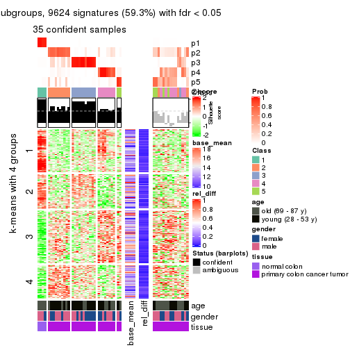
get_signatures(res, k = 6)
Signature heatmaps where rows are not scaled:
get_signatures(res, k = 2, scale_rows = FALSE)
get_signatures(res, k = 3, scale_rows = FALSE)
get_signatures(res, k = 4, scale_rows = FALSE)
get_signatures(res, k = 5, scale_rows = FALSE)
get_signatures(res, k = 6, scale_rows = FALSE)
Compare the overlap of signatures from different k:
compare_signatures(res)
get_signature() returns a data frame invisibly. TO get the list of signatures, the function
call should be assigned to a variable explicitly. In following code, if plot argument is set
to FALSE, no heatmap is plotted while only the differential analysis is performed.
# code only for demonstration
tb = get_signature(res, k = ..., plot = FALSE)
An example of the output of tb is:
#> which_row fdr mean_1 mean_2 scaled_mean_1 scaled_mean_2 km
#> 1 38 0.042760348 8.373488 9.131774 -0.5533452 0.5164555 1
#> 2 40 0.018707592 7.106213 8.469186 -0.6173731 0.5762149 1
#> 3 55 0.019134737 10.221463 11.207825 -0.6159697 0.5749050 1
#> 4 59 0.006059896 5.921854 7.869574 -0.6899429 0.6439467 1
#> 5 60 0.018055526 8.928898 10.211722 -0.6204761 0.5791110 1
#> 6 98 0.009384629 15.714769 14.887706 0.6635654 -0.6193277 2
...
The columns in tb are:
which_row: row indices corresponding to the input matrix.fdr: FDR for the differential test. mean_x: The mean value in group x.scaled_mean_x: The mean value in group x after rows are scaled.km: Row groups if k-means clustering is applied to rows.UMAP plot which shows how samples are separated.
dimension_reduction(res, k = 2, method = "UMAP")
dimension_reduction(res, k = 3, method = "UMAP")
dimension_reduction(res, k = 4, method = "UMAP")
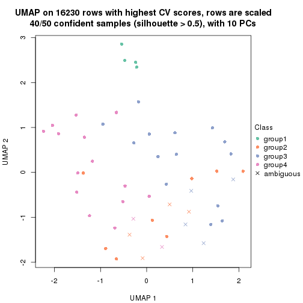
dimension_reduction(res, k = 5, method = "UMAP")
dimension_reduction(res, k = 6, method = "UMAP")
Following heatmap shows how subgroups are split when increasing k:
collect_classes(res)
Test correlation between subgroups and known annotations. If the known annotation is numeric, one-way ANOVA test is applied, and if the known annotation is discrete, chi-squared contingency table test is applied.
test_to_known_factors(res)
#> n age(p) gender(p) tissue(p) k
#> CV:kmeans 50 0.5182 0.318 1.27e-06 2
#> CV:kmeans 46 0.0181 0.603 1.03e-10 3
#> CV:kmeans 40 0.0902 0.172 1.07e-08 4
#> CV:kmeans 35 0.0607 0.527 4.65e-07 5
#> CV:kmeans 39 0.0906 0.533 2.37e-07 6
If matrix rows can be associated to genes, consider to use functional_enrichment(res,
...) to perform function enrichment for the signature genes. See this vignette for more detailed explanations.
The object with results only for a single top-value method and a single partition method can be extracted as:
res = res_list["CV", "skmeans"]
# you can also extract it by
# res = res_list["CV:skmeans"]
A summary of res and all the functions that can be applied to it:
res
#> A 'ConsensusPartition' object with k = 2, 3, 4, 5, 6.
#> On a matrix with 16230 rows and 50 columns.
#> Top rows (1000, 2000, 3000, 4000, 5000) are extracted by 'CV' method.
#> Subgroups are detected by 'skmeans' method.
#> Performed in total 1250 partitions by row resampling.
#> Best k for subgroups seems to be 3.
#>
#> Following methods can be applied to this 'ConsensusPartition' object:
#> [1] "cola_report" "collect_classes" "collect_plots"
#> [4] "collect_stats" "colnames" "compare_signatures"
#> [7] "consensus_heatmap" "dimension_reduction" "functional_enrichment"
#> [10] "get_anno_col" "get_anno" "get_classes"
#> [13] "get_consensus" "get_matrix" "get_membership"
#> [16] "get_param" "get_signatures" "get_stats"
#> [19] "is_best_k" "is_stable_k" "membership_heatmap"
#> [22] "ncol" "nrow" "plot_ecdf"
#> [25] "rownames" "select_partition_number" "show"
#> [28] "suggest_best_k" "test_to_known_factors"
collect_plots() function collects all the plots made from res for all k (number of partitions)
into one single page to provide an easy and fast comparison between different k.
collect_plots(res)
The plots are:
k and the heatmap of
predicted classes for each k.k.k.k.All the plots in panels can be made by individual functions and they are plotted later in this section.
select_partition_number() produces several plots showing different
statistics for choosing “optimized” k. There are following statistics:
k;k, the area increased is defined as \(A_k - A_{k-1}\).The detailed explanations of these statistics can be found in the cola vignette.
Generally speaking, lower PAC score, higher mean silhouette score or higher
concordance corresponds to better partition. Rand index and Jaccard index
measure how similar the current partition is compared to partition with k-1.
If they are too similar, we won't accept k is better than k-1.
select_partition_number(res)

The numeric values for all these statistics can be obtained by get_stats().
get_stats(res)
#> k 1-PAC mean_silhouette concordance area_increased Rand Jaccard
#> 2 2 0.635 0.804 0.918 0.5042 0.493 0.493
#> 3 3 0.746 0.874 0.918 0.3450 0.713 0.478
#> 4 4 0.603 0.496 0.715 0.1164 0.818 0.507
#> 5 5 0.614 0.563 0.742 0.0672 0.836 0.445
#> 6 6 0.648 0.443 0.681 0.0403 0.922 0.634
suggest_best_k() suggests the best \(k\) based on these statistics. The rules are as follows:
suggest_best_k(res)
#> [1] 3
Following shows the table of the partitions (You need to click the show/hide
code output link to see it). The membership matrix (columns with name p*)
is inferred by
clue::cl_consensus()
function with the SE method. Basically the value in the membership matrix
represents the probability to belong to a certain group. The finall class
label for an item is determined with the group with highest probability it
belongs to.
In get_classes() function, the entropy is calculated from the membership
matrix and the silhouette score is calculated from the consensus matrix.
cbind(get_classes(res, k = 2), get_membership(res, k = 2))
#> class entropy silhouette p1 p2
#> GSM615919 2 0.706 0.724 0.192 0.808
#> GSM615921 2 0.000 0.912 0.000 1.000
#> GSM615922 1 0.000 0.880 1.000 0.000
#> GSM615925 2 0.913 0.523 0.328 0.672
#> GSM615926 1 0.000 0.880 1.000 0.000
#> GSM615933 2 0.000 0.912 0.000 1.000
#> GSM615939 1 0.913 0.591 0.672 0.328
#> GSM615941 1 0.000 0.880 1.000 0.000
#> GSM615944 1 0.000 0.880 1.000 0.000
#> GSM615945 2 0.000 0.912 0.000 1.000
#> GSM615947 2 0.998 -0.114 0.472 0.528
#> GSM615948 1 0.000 0.880 1.000 0.000
#> GSM615951 1 0.000 0.880 1.000 0.000
#> GSM615918 2 0.913 0.523 0.328 0.672
#> GSM615927 2 0.000 0.912 0.000 1.000
#> GSM615929 1 0.000 0.880 1.000 0.000
#> GSM615931 2 0.141 0.898 0.020 0.980
#> GSM615937 2 0.000 0.912 0.000 1.000
#> GSM615938 2 0.000 0.912 0.000 1.000
#> GSM615940 1 0.913 0.591 0.672 0.328
#> GSM615946 2 0.000 0.912 0.000 1.000
#> GSM615952 1 0.000 0.880 1.000 0.000
#> GSM615953 2 0.000 0.912 0.000 1.000
#> GSM615955 1 0.000 0.880 1.000 0.000
#> GSM721722 1 0.000 0.880 1.000 0.000
#> GSM721723 2 0.000 0.912 0.000 1.000
#> GSM721724 1 0.913 0.591 0.672 0.328
#> GSM615917 2 0.876 0.577 0.296 0.704
#> GSM615920 1 0.767 0.624 0.776 0.224
#> GSM615923 2 0.000 0.912 0.000 1.000
#> GSM615928 2 0.000 0.912 0.000 1.000
#> GSM615934 1 0.000 0.880 1.000 0.000
#> GSM615950 2 0.000 0.912 0.000 1.000
#> GSM615954 2 0.000 0.912 0.000 1.000
#> GSM615956 1 0.946 0.526 0.636 0.364
#> GSM615958 1 0.000 0.880 1.000 0.000
#> GSM615924 2 0.000 0.912 0.000 1.000
#> GSM615930 2 0.000 0.912 0.000 1.000
#> GSM615932 2 0.000 0.912 0.000 1.000
#> GSM615935 2 0.000 0.912 0.000 1.000
#> GSM615936 1 0.913 0.591 0.672 0.328
#> GSM615942 1 0.000 0.880 1.000 0.000
#> GSM615943 2 0.000 0.912 0.000 1.000
#> GSM615949 1 0.913 0.591 0.672 0.328
#> GSM615957 2 0.430 0.831 0.088 0.912
#> GSM721720 2 0.000 0.912 0.000 1.000
#> GSM721721 2 0.634 0.738 0.160 0.840
#> GSM615959 1 0.000 0.880 1.000 0.000
#> GSM615960 1 0.000 0.880 1.000 0.000
#> GSM615961 1 0.000 0.880 1.000 0.000
cbind(get_classes(res, k = 3), get_membership(res, k = 3))
#> class entropy silhouette p1 p2 p3
#> GSM615919 1 0.6008 0.589 0.628 0.372 0.000
#> GSM615921 2 0.5058 0.816 0.244 0.756 0.000
#> GSM615922 3 0.0424 0.970 0.000 0.008 0.992
#> GSM615925 1 0.3686 0.859 0.860 0.140 0.000
#> GSM615926 3 0.0000 0.971 0.000 0.000 1.000
#> GSM615933 1 0.1031 0.896 0.976 0.024 0.000
#> GSM615939 2 0.0000 0.844 0.000 1.000 0.000
#> GSM615941 3 0.1163 0.963 0.000 0.028 0.972
#> GSM615944 3 0.0000 0.971 0.000 0.000 1.000
#> GSM615945 1 0.0000 0.897 1.000 0.000 0.000
#> GSM615947 2 0.3412 0.849 0.124 0.876 0.000
#> GSM615948 3 0.1031 0.965 0.000 0.024 0.976
#> GSM615951 3 0.1031 0.965 0.000 0.024 0.976
#> GSM615918 1 0.3755 0.866 0.872 0.120 0.008
#> GSM615927 1 0.0000 0.897 1.000 0.000 0.000
#> GSM615929 2 0.6297 0.628 0.060 0.756 0.184
#> GSM615931 1 0.1031 0.896 0.976 0.024 0.000
#> GSM615937 1 0.0000 0.897 1.000 0.000 0.000
#> GSM615938 2 0.4654 0.839 0.208 0.792 0.000
#> GSM615940 2 0.0000 0.844 0.000 1.000 0.000
#> GSM615946 2 0.0000 0.844 0.000 1.000 0.000
#> GSM615952 3 0.1163 0.963 0.000 0.028 0.972
#> GSM615953 2 0.4605 0.840 0.204 0.796 0.000
#> GSM615955 3 0.0000 0.971 0.000 0.000 1.000
#> GSM721722 3 0.0000 0.971 0.000 0.000 1.000
#> GSM721723 2 0.5327 0.789 0.272 0.728 0.000
#> GSM721724 2 0.0000 0.844 0.000 1.000 0.000
#> GSM615917 1 0.3686 0.859 0.860 0.140 0.000
#> GSM615920 3 0.2066 0.923 0.060 0.000 0.940
#> GSM615923 1 0.0237 0.897 0.996 0.004 0.000
#> GSM615928 1 0.4555 0.814 0.800 0.200 0.000
#> GSM615934 3 0.4654 0.763 0.000 0.208 0.792
#> GSM615950 1 0.0000 0.897 1.000 0.000 0.000
#> GSM615954 1 0.0747 0.887 0.984 0.016 0.000
#> GSM615956 2 0.0000 0.844 0.000 1.000 0.000
#> GSM615958 3 0.0000 0.971 0.000 0.000 1.000
#> GSM615924 1 0.4235 0.834 0.824 0.176 0.000
#> GSM615930 1 0.0000 0.897 1.000 0.000 0.000
#> GSM615932 2 0.4702 0.837 0.212 0.788 0.000
#> GSM615935 2 0.4605 0.840 0.204 0.796 0.000
#> GSM615936 2 0.0829 0.844 0.004 0.984 0.012
#> GSM615942 3 0.2066 0.939 0.000 0.060 0.940
#> GSM615943 1 0.0000 0.897 1.000 0.000 0.000
#> GSM615949 2 0.0592 0.839 0.000 0.988 0.012
#> GSM615957 2 0.4555 0.841 0.200 0.800 0.000
#> GSM721720 2 0.5650 0.739 0.312 0.688 0.000
#> GSM721721 1 0.4654 0.808 0.792 0.208 0.000
#> GSM615959 3 0.0000 0.971 0.000 0.000 1.000
#> GSM615960 3 0.0000 0.971 0.000 0.000 1.000
#> GSM615961 3 0.0000 0.971 0.000 0.000 1.000
cbind(get_classes(res, k = 4), get_membership(res, k = 4))
#> class entropy silhouette p1 p2 p3 p4
#> GSM615919 4 0.7524 0.3804 0.028 0.168 0.216 0.588
#> GSM615921 2 0.6184 0.4373 0.000 0.664 0.120 0.216
#> GSM615922 1 0.5290 0.2708 0.516 0.000 0.476 0.008
#> GSM615925 4 0.0817 0.7263 0.024 0.000 0.000 0.976
#> GSM615926 1 0.1302 0.8217 0.956 0.000 0.044 0.000
#> GSM615933 4 0.4655 0.5959 0.000 0.312 0.004 0.684
#> GSM615939 3 0.3907 0.4889 0.000 0.232 0.768 0.000
#> GSM615941 1 0.4996 0.2501 0.516 0.000 0.484 0.000
#> GSM615944 1 0.2281 0.8064 0.904 0.000 0.096 0.000
#> GSM615945 4 0.4819 0.5550 0.000 0.344 0.004 0.652
#> GSM615947 2 0.5000 -0.0243 0.000 0.500 0.500 0.000
#> GSM615948 3 0.5165 -0.2986 0.484 0.004 0.512 0.000
#> GSM615951 1 0.4353 0.6996 0.756 0.012 0.232 0.000
#> GSM615918 4 0.0817 0.7263 0.024 0.000 0.000 0.976
#> GSM615927 4 0.1474 0.7281 0.000 0.052 0.000 0.948
#> GSM615929 3 0.6006 0.2758 0.036 0.012 0.624 0.328
#> GSM615931 4 0.4632 0.6015 0.000 0.308 0.004 0.688
#> GSM615937 2 0.4624 0.0615 0.000 0.660 0.000 0.340
#> GSM615938 2 0.3668 0.5583 0.000 0.808 0.188 0.004
#> GSM615940 3 0.2345 0.5707 0.000 0.100 0.900 0.000
#> GSM615946 3 0.4564 0.3523 0.000 0.328 0.672 0.000
#> GSM615952 1 0.4267 0.7340 0.788 0.024 0.188 0.000
#> GSM615953 2 0.4040 0.5195 0.000 0.752 0.248 0.000
#> GSM615955 1 0.1557 0.8180 0.944 0.000 0.056 0.000
#> GSM721722 1 0.1118 0.8229 0.964 0.000 0.036 0.000
#> GSM721723 2 0.1724 0.5823 0.000 0.948 0.032 0.020
#> GSM721724 3 0.3873 0.4943 0.000 0.228 0.772 0.000
#> GSM615917 4 0.0817 0.7263 0.024 0.000 0.000 0.976
#> GSM615920 1 0.3583 0.6636 0.816 0.004 0.000 0.180
#> GSM615923 4 0.4509 0.6319 0.000 0.288 0.004 0.708
#> GSM615928 4 0.4701 0.6422 0.000 0.056 0.164 0.780
#> GSM615934 3 0.4560 0.2231 0.296 0.000 0.700 0.004
#> GSM615950 2 0.4679 0.0328 0.000 0.648 0.000 0.352
#> GSM615954 2 0.5062 0.1744 0.020 0.680 0.000 0.300
#> GSM615956 3 0.4843 0.2255 0.000 0.396 0.604 0.000
#> GSM615958 1 0.0707 0.8189 0.980 0.000 0.000 0.020
#> GSM615924 4 0.1706 0.7283 0.000 0.036 0.016 0.948
#> GSM615930 4 0.4477 0.6003 0.000 0.312 0.000 0.688
#> GSM615932 2 0.3801 0.5428 0.000 0.780 0.220 0.000
#> GSM615935 2 0.4304 0.4841 0.000 0.716 0.284 0.000
#> GSM615936 3 0.2011 0.5751 0.000 0.080 0.920 0.000
#> GSM615942 3 0.4925 -0.1587 0.428 0.000 0.572 0.000
#> GSM615943 2 0.4999 -0.3001 0.000 0.508 0.000 0.492
#> GSM615949 3 0.0712 0.5769 0.004 0.008 0.984 0.004
#> GSM615957 2 0.4331 0.4551 0.000 0.712 0.288 0.000
#> GSM721720 2 0.1406 0.5778 0.000 0.960 0.016 0.024
#> GSM721721 4 0.5744 0.5448 0.000 0.068 0.256 0.676
#> GSM615959 1 0.0707 0.8189 0.980 0.000 0.000 0.020
#> GSM615960 1 0.0707 0.8189 0.980 0.000 0.000 0.020
#> GSM615961 1 0.0707 0.8189 0.980 0.000 0.000 0.020
cbind(get_classes(res, k = 5), get_membership(res, k = 5))
#> class entropy silhouette p1 p2 p3 p4 p5
#> GSM615919 4 0.416 0.5994 0.032 0.068 0.048 0.832 0.020
#> GSM615921 2 0.608 0.4749 0.000 0.580 0.008 0.280 0.132
#> GSM615922 3 0.291 0.6653 0.136 0.004 0.852 0.008 0.000
#> GSM615925 4 0.428 0.6492 0.028 0.000 0.000 0.716 0.256
#> GSM615926 1 0.425 0.6608 0.688 0.000 0.296 0.016 0.000
#> GSM615933 5 0.414 0.5900 0.000 0.036 0.004 0.196 0.764
#> GSM615939 2 0.571 0.3089 0.000 0.592 0.292 0.116 0.000
#> GSM615941 3 0.281 0.6610 0.152 0.004 0.844 0.000 0.000
#> GSM615944 1 0.391 0.6456 0.676 0.000 0.324 0.000 0.000
#> GSM615945 5 0.265 0.6704 0.000 0.000 0.000 0.152 0.848
#> GSM615947 2 0.322 0.5848 0.000 0.844 0.128 0.024 0.004
#> GSM615948 3 0.254 0.6837 0.128 0.004 0.868 0.000 0.000
#> GSM615951 1 0.615 0.4422 0.544 0.100 0.344 0.008 0.004
#> GSM615918 4 0.451 0.6505 0.032 0.000 0.004 0.708 0.256
#> GSM615927 4 0.426 0.3943 0.000 0.000 0.000 0.560 0.440
#> GSM615929 4 0.603 0.3959 0.024 0.100 0.236 0.636 0.004
#> GSM615931 5 0.338 0.6384 0.000 0.000 0.016 0.176 0.808
#> GSM615937 5 0.525 0.5383 0.000 0.180 0.016 0.096 0.708
#> GSM615938 2 0.438 0.6113 0.000 0.744 0.012 0.028 0.216
#> GSM615940 3 0.587 0.2241 0.000 0.364 0.528 0.108 0.000
#> GSM615946 2 0.531 0.4877 0.000 0.696 0.164 0.132 0.008
#> GSM615952 1 0.678 0.4517 0.532 0.160 0.284 0.008 0.016
#> GSM615953 2 0.395 0.6356 0.000 0.804 0.040 0.012 0.144
#> GSM615955 1 0.247 0.7637 0.864 0.000 0.136 0.000 0.000
#> GSM721722 1 0.311 0.7437 0.800 0.000 0.200 0.000 0.000
#> GSM721723 2 0.637 0.2340 0.000 0.516 0.016 0.116 0.352
#> GSM721724 2 0.607 0.1769 0.000 0.524 0.340 0.136 0.000
#> GSM615917 4 0.433 0.6524 0.032 0.000 0.000 0.716 0.252
#> GSM615920 1 0.417 0.6789 0.788 0.000 0.072 0.136 0.004
#> GSM615923 4 0.564 -0.1163 0.000 0.048 0.012 0.484 0.456
#> GSM615928 4 0.281 0.6547 0.000 0.004 0.048 0.884 0.064
#> GSM615934 3 0.237 0.6980 0.056 0.000 0.904 0.040 0.000
#> GSM615950 5 0.483 0.5690 0.000 0.168 0.008 0.088 0.736
#> GSM615954 5 0.408 0.6255 0.012 0.144 0.008 0.032 0.804
#> GSM615956 2 0.470 0.5253 0.000 0.764 0.100 0.120 0.016
#> GSM615958 1 0.000 0.7832 1.000 0.000 0.000 0.000 0.000
#> GSM615924 4 0.318 0.6575 0.000 0.000 0.000 0.792 0.208
#> GSM615930 5 0.273 0.6667 0.000 0.000 0.000 0.160 0.840
#> GSM615932 2 0.408 0.6192 0.000 0.760 0.016 0.012 0.212
#> GSM615935 2 0.390 0.6326 0.000 0.768 0.028 0.000 0.204
#> GSM615936 3 0.635 0.2899 0.008 0.364 0.536 0.056 0.036
#> GSM615942 3 0.257 0.6943 0.104 0.016 0.880 0.000 0.000
#> GSM615943 5 0.259 0.6950 0.000 0.056 0.000 0.052 0.892
#> GSM615949 3 0.421 0.6032 0.000 0.144 0.776 0.080 0.000
#> GSM615957 2 0.354 0.6313 0.000 0.840 0.020 0.028 0.112
#> GSM721720 2 0.643 0.0539 0.000 0.448 0.016 0.112 0.424
#> GSM721721 4 0.302 0.6259 0.008 0.016 0.068 0.884 0.024
#> GSM615959 1 0.000 0.7832 1.000 0.000 0.000 0.000 0.000
#> GSM615960 1 0.000 0.7832 1.000 0.000 0.000 0.000 0.000
#> GSM615961 1 0.000 0.7832 1.000 0.000 0.000 0.000 0.000
cbind(get_classes(res, k = 6), get_membership(res, k = 6))
#> class entropy silhouette p1 p2 p3 p4 p5 p6
#> GSM615919 4 0.3178 0.62969 0.000 0.092 0.012 0.844 0.000 0.052
#> GSM615921 6 0.6710 0.06633 0.000 0.328 0.008 0.220 0.028 0.416
#> GSM615922 3 0.2296 0.82115 0.052 0.008 0.908 0.012 0.000 0.020
#> GSM615925 4 0.3713 0.59891 0.000 0.000 0.004 0.704 0.284 0.008
#> GSM615926 1 0.5048 0.36712 0.536 0.000 0.412 0.028 0.008 0.016
#> GSM615933 5 0.3239 0.61828 0.000 0.080 0.004 0.028 0.852 0.036
#> GSM615939 2 0.3529 0.52358 0.000 0.816 0.088 0.088 0.000 0.008
#> GSM615941 3 0.2432 0.80744 0.072 0.016 0.892 0.000 0.000 0.020
#> GSM615944 1 0.4517 0.31585 0.512 0.004 0.464 0.004 0.000 0.016
#> GSM615945 5 0.0964 0.66273 0.000 0.004 0.000 0.012 0.968 0.016
#> GSM615947 2 0.3562 0.44473 0.000 0.784 0.028 0.008 0.000 0.180
#> GSM615948 3 0.2008 0.83192 0.040 0.032 0.920 0.004 0.000 0.004
#> GSM615951 1 0.7458 0.29673 0.436 0.104 0.284 0.012 0.008 0.156
#> GSM615918 4 0.3565 0.58416 0.000 0.000 0.004 0.692 0.304 0.000
#> GSM615927 5 0.4429 -0.21139 0.000 0.000 0.000 0.424 0.548 0.028
#> GSM615929 4 0.6344 0.38164 0.008 0.164 0.204 0.576 0.004 0.044
#> GSM615931 5 0.2402 0.62108 0.000 0.000 0.032 0.060 0.896 0.012
#> GSM615937 6 0.4617 -0.13889 0.000 0.008 0.000 0.024 0.444 0.524
#> GSM615938 2 0.5499 0.07897 0.000 0.528 0.004 0.000 0.124 0.344
#> GSM615940 2 0.6337 0.19252 0.000 0.508 0.324 0.104 0.004 0.060
#> GSM615946 2 0.3870 0.50143 0.000 0.816 0.012 0.080 0.024 0.068
#> GSM615952 1 0.7955 0.27979 0.380 0.124 0.228 0.012 0.016 0.240
#> GSM615953 6 0.6048 -0.05482 0.004 0.428 0.020 0.012 0.084 0.452
#> GSM615955 1 0.2624 0.68333 0.856 0.000 0.124 0.000 0.000 0.020
#> GSM721722 1 0.3534 0.61964 0.740 0.000 0.244 0.000 0.000 0.016
#> GSM721723 6 0.3624 0.50120 0.000 0.060 0.000 0.016 0.112 0.812
#> GSM721724 2 0.4922 0.49927 0.000 0.712 0.140 0.112 0.000 0.036
#> GSM615917 4 0.3244 0.61292 0.000 0.000 0.000 0.732 0.268 0.000
#> GSM615920 1 0.5356 0.48801 0.656 0.008 0.068 0.240 0.012 0.016
#> GSM615923 4 0.6695 -0.11596 0.000 0.016 0.008 0.348 0.312 0.316
#> GSM615928 4 0.5120 0.62312 0.000 0.036 0.020 0.724 0.112 0.108
#> GSM615934 3 0.3235 0.79458 0.016 0.056 0.864 0.044 0.004 0.016
#> GSM615950 5 0.4913 0.00694 0.000 0.012 0.004 0.028 0.496 0.460
#> GSM615954 5 0.5251 0.21712 0.008 0.036 0.012 0.008 0.564 0.372
#> GSM615956 2 0.4821 0.37537 0.000 0.716 0.024 0.044 0.020 0.196
#> GSM615958 1 0.0000 0.71054 1.000 0.000 0.000 0.000 0.000 0.000
#> GSM615924 4 0.3874 0.62868 0.000 0.012 0.000 0.752 0.208 0.028
#> GSM615930 5 0.1765 0.64844 0.000 0.000 0.000 0.052 0.924 0.024
#> GSM615932 2 0.5593 0.10946 0.000 0.524 0.000 0.004 0.140 0.332
#> GSM615935 2 0.6272 0.07379 0.000 0.468 0.008 0.016 0.164 0.344
#> GSM615936 2 0.6773 0.18875 0.000 0.512 0.300 0.056 0.040 0.092
#> GSM615942 3 0.2739 0.81865 0.044 0.036 0.888 0.008 0.000 0.024
#> GSM615943 5 0.2544 0.57761 0.000 0.004 0.004 0.000 0.852 0.140
#> GSM615949 3 0.5505 0.44663 0.000 0.252 0.620 0.088 0.000 0.040
#> GSM615957 6 0.4303 0.21235 0.000 0.316 0.008 0.012 0.008 0.656
#> GSM721720 6 0.3771 0.45153 0.000 0.032 0.000 0.020 0.164 0.784
#> GSM721721 4 0.4214 0.61968 0.000 0.056 0.040 0.800 0.020 0.084
#> GSM615959 1 0.0000 0.71054 1.000 0.000 0.000 0.000 0.000 0.000
#> GSM615960 1 0.0000 0.71054 1.000 0.000 0.000 0.000 0.000 0.000
#> GSM615961 1 0.0000 0.71054 1.000 0.000 0.000 0.000 0.000 0.000
Heatmaps for the consensus matrix. It visualizes the probability of two samples to be in a same group.
consensus_heatmap(res, k = 2)
consensus_heatmap(res, k = 3)
consensus_heatmap(res, k = 4)
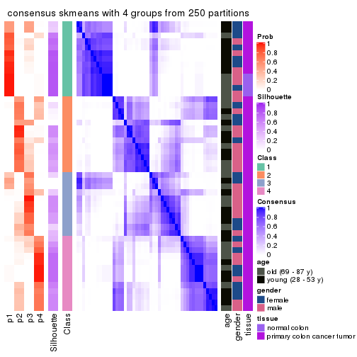
consensus_heatmap(res, k = 5)
consensus_heatmap(res, k = 6)
Heatmaps for the membership of samples in all partitions to see how consistent they are:
membership_heatmap(res, k = 2)
membership_heatmap(res, k = 3)
membership_heatmap(res, k = 4)
membership_heatmap(res, k = 5)
membership_heatmap(res, k = 6)
As soon as we have had the classes for columns, we can look for signatures which are significantly different between classes which can be candidate marks for certain classes. Following are the heatmaps for signatures.
Signature heatmaps where rows are scaled:
get_signatures(res, k = 2)
get_signatures(res, k = 3)
get_signatures(res, k = 4)

get_signatures(res, k = 5)
get_signatures(res, k = 6)
Signature heatmaps where rows are not scaled:
get_signatures(res, k = 2, scale_rows = FALSE)
get_signatures(res, k = 3, scale_rows = FALSE)
get_signatures(res, k = 4, scale_rows = FALSE)
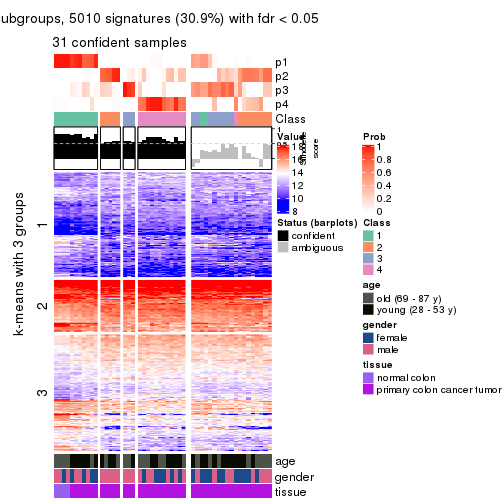
get_signatures(res, k = 5, scale_rows = FALSE)
get_signatures(res, k = 6, scale_rows = FALSE)
Compare the overlap of signatures from different k:
compare_signatures(res)
get_signature() returns a data frame invisibly. TO get the list of signatures, the function
call should be assigned to a variable explicitly. In following code, if plot argument is set
to FALSE, no heatmap is plotted while only the differential analysis is performed.
# code only for demonstration
tb = get_signature(res, k = ..., plot = FALSE)
An example of the output of tb is:
#> which_row fdr mean_1 mean_2 scaled_mean_1 scaled_mean_2 km
#> 1 38 0.042760348 8.373488 9.131774 -0.5533452 0.5164555 1
#> 2 40 0.018707592 7.106213 8.469186 -0.6173731 0.5762149 1
#> 3 55 0.019134737 10.221463 11.207825 -0.6159697 0.5749050 1
#> 4 59 0.006059896 5.921854 7.869574 -0.6899429 0.6439467 1
#> 5 60 0.018055526 8.928898 10.211722 -0.6204761 0.5791110 1
#> 6 98 0.009384629 15.714769 14.887706 0.6635654 -0.6193277 2
...
The columns in tb are:
which_row: row indices corresponding to the input matrix.fdr: FDR for the differential test. mean_x: The mean value in group x.scaled_mean_x: The mean value in group x after rows are scaled.km: Row groups if k-means clustering is applied to rows.UMAP plot which shows how samples are separated.
dimension_reduction(res, k = 2, method = "UMAP")
dimension_reduction(res, k = 3, method = "UMAP")
dimension_reduction(res, k = 4, method = "UMAP")
dimension_reduction(res, k = 5, method = "UMAP")
dimension_reduction(res, k = 6, method = "UMAP")
Following heatmap shows how subgroups are split when increasing k:
collect_classes(res)
Test correlation between subgroups and known annotations. If the known annotation is numeric, one-way ANOVA test is applied, and if the known annotation is discrete, chi-squared contingency table test is applied.
test_to_known_factors(res)
#> n age(p) gender(p) tissue(p) k
#> CV:skmeans 49 0.865 0.710 0.08985 2
#> CV:skmeans 50 0.770 0.110 0.00986 3
#> CV:skmeans 31 0.898 0.112 0.03930 4
#> CV:skmeans 37 0.997 0.703 0.00745 5
#> CV:skmeans 26 0.538 0.338 0.00757 6
If matrix rows can be associated to genes, consider to use functional_enrichment(res,
...) to perform function enrichment for the signature genes. See this vignette for more detailed explanations.
The object with results only for a single top-value method and a single partition method can be extracted as:
res = res_list["CV", "pam"]
# you can also extract it by
# res = res_list["CV:pam"]
A summary of res and all the functions that can be applied to it:
res
#> A 'ConsensusPartition' object with k = 2, 3, 4, 5, 6.
#> On a matrix with 16230 rows and 50 columns.
#> Top rows (1000, 2000, 3000, 4000, 5000) are extracted by 'CV' method.
#> Subgroups are detected by 'pam' method.
#> Performed in total 1250 partitions by row resampling.
#> Best k for subgroups seems to be 2.
#>
#> Following methods can be applied to this 'ConsensusPartition' object:
#> [1] "cola_report" "collect_classes" "collect_plots"
#> [4] "collect_stats" "colnames" "compare_signatures"
#> [7] "consensus_heatmap" "dimension_reduction" "functional_enrichment"
#> [10] "get_anno_col" "get_anno" "get_classes"
#> [13] "get_consensus" "get_matrix" "get_membership"
#> [16] "get_param" "get_signatures" "get_stats"
#> [19] "is_best_k" "is_stable_k" "membership_heatmap"
#> [22] "ncol" "nrow" "plot_ecdf"
#> [25] "rownames" "select_partition_number" "show"
#> [28] "suggest_best_k" "test_to_known_factors"
collect_plots() function collects all the plots made from res for all k (number of partitions)
into one single page to provide an easy and fast comparison between different k.
collect_plots(res)
The plots are:
k and the heatmap of
predicted classes for each k.k.k.k.All the plots in panels can be made by individual functions and they are plotted later in this section.
select_partition_number() produces several plots showing different
statistics for choosing “optimized” k. There are following statistics:
k;k, the area increased is defined as \(A_k - A_{k-1}\).The detailed explanations of these statistics can be found in the cola vignette.
Generally speaking, lower PAC score, higher mean silhouette score or higher
concordance corresponds to better partition. Rand index and Jaccard index
measure how similar the current partition is compared to partition with k-1.
If they are too similar, we won't accept k is better than k-1.
select_partition_number(res)
The numeric values for all these statistics can be obtained by get_stats().
get_stats(res)
#> k 1-PAC mean_silhouette concordance area_increased Rand Jaccard
#> 2 2 1.000 0.978 0.984 0.1680 0.850 0.850
#> 3 3 0.531 0.731 0.890 2.4463 0.571 0.496
#> 4 4 0.747 0.857 0.922 0.2312 0.738 0.457
#> 5 5 0.638 0.610 0.817 0.0583 0.978 0.922
#> 6 6 0.704 0.685 0.830 0.0510 0.912 0.683
suggest_best_k() suggests the best \(k\) based on these statistics. The rules are as follows:
suggest_best_k(res)
#> [1] 2
Following shows the table of the partitions (You need to click the show/hide
code output link to see it). The membership matrix (columns with name p*)
is inferred by
clue::cl_consensus()
function with the SE method. Basically the value in the membership matrix
represents the probability to belong to a certain group. The finall class
label for an item is determined with the group with highest probability it
belongs to.
In get_classes() function, the entropy is calculated from the membership
matrix and the silhouette score is calculated from the consensus matrix.
cbind(get_classes(res, k = 2), get_membership(res, k = 2))
#> class entropy silhouette p1 p2
#> GSM615919 2 0.0672 0.984 0.008 0.992
#> GSM615921 2 0.0672 0.983 0.008 0.992
#> GSM615922 2 0.0938 0.984 0.012 0.988
#> GSM615925 2 0.0672 0.983 0.008 0.992
#> GSM615926 2 0.0938 0.984 0.012 0.988
#> GSM615933 2 0.0672 0.983 0.008 0.992
#> GSM615939 2 0.0938 0.984 0.012 0.988
#> GSM615941 2 0.0938 0.984 0.012 0.988
#> GSM615944 2 0.0938 0.984 0.012 0.988
#> GSM615945 2 0.0672 0.983 0.008 0.992
#> GSM615947 2 0.0672 0.985 0.008 0.992
#> GSM615948 2 0.0938 0.984 0.012 0.988
#> GSM615951 2 0.0938 0.984 0.012 0.988
#> GSM615918 2 0.0376 0.985 0.004 0.996
#> GSM615927 2 0.0672 0.983 0.008 0.992
#> GSM615929 2 0.0938 0.984 0.012 0.988
#> GSM615931 2 0.0672 0.985 0.008 0.992
#> GSM615937 2 0.0672 0.983 0.008 0.992
#> GSM615938 2 0.0672 0.983 0.008 0.992
#> GSM615940 2 0.0672 0.985 0.008 0.992
#> GSM615946 2 0.0672 0.985 0.008 0.992
#> GSM615952 2 0.0672 0.985 0.008 0.992
#> GSM615953 2 0.0938 0.984 0.012 0.988
#> GSM615955 2 0.7139 0.772 0.196 0.804
#> GSM721722 2 0.6148 0.833 0.152 0.848
#> GSM721723 2 0.0938 0.984 0.012 0.988
#> GSM721724 2 0.0672 0.985 0.008 0.992
#> GSM615917 2 0.0672 0.983 0.008 0.992
#> GSM615920 2 0.0672 0.984 0.008 0.992
#> GSM615923 2 0.0672 0.984 0.008 0.992
#> GSM615928 2 0.0672 0.984 0.008 0.992
#> GSM615934 2 0.0938 0.984 0.012 0.988
#> GSM615950 2 0.0672 0.983 0.008 0.992
#> GSM615954 2 0.0672 0.983 0.008 0.992
#> GSM615956 2 0.0672 0.985 0.008 0.992
#> GSM615958 1 0.0672 1.000 0.992 0.008
#> GSM615924 2 0.0672 0.983 0.008 0.992
#> GSM615930 2 0.0672 0.983 0.008 0.992
#> GSM615932 2 0.0672 0.983 0.008 0.992
#> GSM615935 2 0.0672 0.983 0.008 0.992
#> GSM615936 2 0.0672 0.985 0.008 0.992
#> GSM615942 2 0.0938 0.984 0.012 0.988
#> GSM615943 2 0.0672 0.983 0.008 0.992
#> GSM615949 2 0.0938 0.984 0.012 0.988
#> GSM615957 2 0.0938 0.984 0.012 0.988
#> GSM721720 2 0.0938 0.984 0.012 0.988
#> GSM721721 2 0.0672 0.984 0.008 0.992
#> GSM615959 1 0.0672 1.000 0.992 0.008
#> GSM615960 1 0.0672 1.000 0.992 0.008
#> GSM615961 1 0.0672 1.000 0.992 0.008
cbind(get_classes(res, k = 3), get_membership(res, k = 3))
#> class entropy silhouette p1 p2 p3
#> GSM615919 3 0.5138 0.665 0.000 0.252 0.748
#> GSM615921 2 0.0747 0.823 0.000 0.984 0.016
#> GSM615922 3 0.0000 0.847 0.000 0.000 1.000
#> GSM615925 3 0.6062 0.422 0.000 0.384 0.616
#> GSM615926 3 0.0000 0.847 0.000 0.000 1.000
#> GSM615933 2 0.0237 0.829 0.000 0.996 0.004
#> GSM615939 3 0.5882 0.353 0.000 0.348 0.652
#> GSM615941 3 0.0000 0.847 0.000 0.000 1.000
#> GSM615944 3 0.0000 0.847 0.000 0.000 1.000
#> GSM615945 2 0.0237 0.829 0.000 0.996 0.004
#> GSM615947 3 0.6305 -0.136 0.000 0.484 0.516
#> GSM615948 3 0.0000 0.847 0.000 0.000 1.000
#> GSM615951 3 0.3267 0.767 0.000 0.116 0.884
#> GSM615918 3 0.4842 0.685 0.000 0.224 0.776
#> GSM615927 2 0.0237 0.829 0.000 0.996 0.004
#> GSM615929 3 0.0000 0.847 0.000 0.000 1.000
#> GSM615931 3 0.4399 0.737 0.000 0.188 0.812
#> GSM615937 2 0.0237 0.829 0.000 0.996 0.004
#> GSM615938 2 0.0000 0.829 0.000 1.000 0.000
#> GSM615940 3 0.0237 0.846 0.000 0.004 0.996
#> GSM615946 2 0.6045 0.436 0.000 0.620 0.380
#> GSM615952 2 0.6045 0.436 0.000 0.620 0.380
#> GSM615953 2 0.0424 0.828 0.000 0.992 0.008
#> GSM615955 3 0.1031 0.836 0.024 0.000 0.976
#> GSM721722 3 0.0000 0.847 0.000 0.000 1.000
#> GSM721723 2 0.0424 0.828 0.000 0.992 0.008
#> GSM721724 2 0.6192 0.355 0.000 0.580 0.420
#> GSM615917 2 0.5926 0.305 0.000 0.644 0.356
#> GSM615920 3 0.0237 0.846 0.000 0.004 0.996
#> GSM615923 3 0.5178 0.635 0.000 0.256 0.744
#> GSM615928 3 0.4346 0.727 0.000 0.184 0.816
#> GSM615934 3 0.0000 0.847 0.000 0.000 1.000
#> GSM615950 2 0.5859 0.345 0.000 0.656 0.344
#> GSM615954 2 0.0000 0.829 0.000 1.000 0.000
#> GSM615956 2 0.6045 0.436 0.000 0.620 0.380
#> GSM615958 1 0.0000 1.000 1.000 0.000 0.000
#> GSM615924 3 0.5926 0.477 0.000 0.356 0.644
#> GSM615930 2 0.0237 0.829 0.000 0.996 0.004
#> GSM615932 2 0.0000 0.829 0.000 1.000 0.000
#> GSM615935 2 0.0000 0.829 0.000 1.000 0.000
#> GSM615936 3 0.3116 0.779 0.000 0.108 0.892
#> GSM615942 3 0.0000 0.847 0.000 0.000 1.000
#> GSM615943 2 0.0000 0.829 0.000 1.000 0.000
#> GSM615949 3 0.0000 0.847 0.000 0.000 1.000
#> GSM615957 2 0.1163 0.818 0.000 0.972 0.028
#> GSM721720 2 0.4504 0.687 0.000 0.804 0.196
#> GSM721721 3 0.0424 0.845 0.000 0.008 0.992
#> GSM615959 1 0.0000 1.000 1.000 0.000 0.000
#> GSM615960 1 0.0000 1.000 1.000 0.000 0.000
#> GSM615961 1 0.0000 1.000 1.000 0.000 0.000
cbind(get_classes(res, k = 4), get_membership(res, k = 4))
#> class entropy silhouette p1 p2 p3 p4
#> GSM615919 4 0.5869 0.359 0.000 0.360 0.044 0.596
#> GSM615921 4 0.2944 0.824 0.000 0.128 0.004 0.868
#> GSM615922 3 0.0000 0.942 0.000 0.000 1.000 0.000
#> GSM615925 4 0.0000 0.799 0.000 0.000 0.000 1.000
#> GSM615926 3 0.0000 0.942 0.000 0.000 1.000 0.000
#> GSM615933 4 0.2408 0.829 0.000 0.104 0.000 0.896
#> GSM615939 2 0.1716 0.917 0.000 0.936 0.064 0.000
#> GSM615941 3 0.0000 0.942 0.000 0.000 1.000 0.000
#> GSM615944 3 0.0000 0.942 0.000 0.000 1.000 0.000
#> GSM615945 4 0.2408 0.829 0.000 0.104 0.000 0.896
#> GSM615947 2 0.1557 0.917 0.000 0.944 0.056 0.000
#> GSM615948 3 0.0000 0.942 0.000 0.000 1.000 0.000
#> GSM615951 3 0.3074 0.801 0.000 0.152 0.848 0.000
#> GSM615918 4 0.3444 0.687 0.000 0.000 0.184 0.816
#> GSM615927 4 0.1118 0.817 0.000 0.036 0.000 0.964
#> GSM615929 3 0.0336 0.938 0.000 0.008 0.992 0.000
#> GSM615931 3 0.5093 0.412 0.000 0.012 0.640 0.348
#> GSM615937 4 0.2704 0.827 0.000 0.124 0.000 0.876
#> GSM615938 2 0.3024 0.804 0.000 0.852 0.000 0.148
#> GSM615940 3 0.1792 0.893 0.000 0.068 0.932 0.000
#> GSM615946 2 0.0469 0.953 0.000 0.988 0.012 0.000
#> GSM615952 2 0.0707 0.952 0.000 0.980 0.020 0.000
#> GSM615953 2 0.0469 0.950 0.000 0.988 0.000 0.012
#> GSM615955 3 0.0817 0.928 0.024 0.000 0.976 0.000
#> GSM721722 3 0.0000 0.942 0.000 0.000 1.000 0.000
#> GSM721723 2 0.0592 0.947 0.000 0.984 0.000 0.016
#> GSM721724 2 0.1118 0.940 0.000 0.964 0.036 0.000
#> GSM615917 4 0.0000 0.799 0.000 0.000 0.000 1.000
#> GSM615920 3 0.0000 0.942 0.000 0.000 1.000 0.000
#> GSM615923 3 0.3400 0.752 0.000 0.000 0.820 0.180
#> GSM615928 4 0.5694 0.663 0.000 0.080 0.224 0.696
#> GSM615934 3 0.0000 0.942 0.000 0.000 1.000 0.000
#> GSM615950 4 0.4792 0.547 0.000 0.008 0.312 0.680
#> GSM615954 2 0.1474 0.924 0.000 0.948 0.000 0.052
#> GSM615956 2 0.0469 0.953 0.000 0.988 0.012 0.000
#> GSM615958 1 0.0000 1.000 1.000 0.000 0.000 0.000
#> GSM615924 4 0.5277 0.732 0.000 0.116 0.132 0.752
#> GSM615930 4 0.1474 0.822 0.000 0.052 0.000 0.948
#> GSM615932 4 0.4730 0.507 0.000 0.364 0.000 0.636
#> GSM615935 4 0.2868 0.817 0.000 0.136 0.000 0.864
#> GSM615936 3 0.1389 0.908 0.000 0.048 0.952 0.000
#> GSM615942 3 0.0000 0.942 0.000 0.000 1.000 0.000
#> GSM615943 4 0.2408 0.829 0.000 0.104 0.000 0.896
#> GSM615949 3 0.0000 0.942 0.000 0.000 1.000 0.000
#> GSM615957 2 0.0188 0.950 0.000 0.996 0.000 0.004
#> GSM721720 2 0.0469 0.952 0.000 0.988 0.012 0.000
#> GSM721721 3 0.0000 0.942 0.000 0.000 1.000 0.000
#> GSM615959 1 0.0000 1.000 1.000 0.000 0.000 0.000
#> GSM615960 1 0.0000 1.000 1.000 0.000 0.000 0.000
#> GSM615961 1 0.0000 1.000 1.000 0.000 0.000 0.000
cbind(get_classes(res, k = 5), get_membership(res, k = 5))
#> class entropy silhouette p1 p2 p3 p4 p5
#> GSM615919 4 0.5221 0.283 0.00 0.400 0.000 0.552 0.048
#> GSM615921 4 0.3003 0.693 0.00 0.188 0.000 0.812 0.000
#> GSM615922 3 0.0000 0.923 0.00 0.000 1.000 0.000 0.000
#> GSM615925 4 0.1197 0.730 0.00 0.000 0.000 0.952 0.048
#> GSM615926 3 0.0000 0.923 0.00 0.000 1.000 0.000 0.000
#> GSM615933 4 0.1478 0.734 0.00 0.064 0.000 0.936 0.000
#> GSM615939 2 0.4273 0.370 0.00 0.552 0.000 0.000 0.448
#> GSM615941 3 0.0000 0.923 0.00 0.000 1.000 0.000 0.000
#> GSM615944 3 0.0000 0.923 0.00 0.000 1.000 0.000 0.000
#> GSM615945 4 0.1478 0.734 0.00 0.064 0.000 0.936 0.000
#> GSM615947 2 0.4273 0.370 0.00 0.552 0.000 0.000 0.448
#> GSM615948 3 0.0000 0.923 0.00 0.000 1.000 0.000 0.000
#> GSM615951 3 0.2929 0.773 0.00 0.180 0.820 0.000 0.000
#> GSM615918 4 0.4136 0.630 0.00 0.000 0.188 0.764 0.048
#> GSM615927 4 0.0162 0.733 0.00 0.004 0.000 0.996 0.000
#> GSM615929 3 0.2660 0.834 0.00 0.128 0.864 0.008 0.000
#> GSM615931 3 0.4537 0.315 0.00 0.012 0.592 0.396 0.000
#> GSM615937 4 0.6711 0.467 0.00 0.156 0.044 0.576 0.224
#> GSM615938 5 0.6130 -0.487 0.00 0.424 0.000 0.128 0.448
#> GSM615940 3 0.2377 0.842 0.00 0.128 0.872 0.000 0.000
#> GSM615946 2 0.4273 0.370 0.00 0.552 0.000 0.000 0.448
#> GSM615952 2 0.2813 0.112 0.00 0.832 0.168 0.000 0.000
#> GSM615953 2 0.1732 0.217 0.00 0.920 0.000 0.080 0.000
#> GSM615955 3 0.0609 0.915 0.02 0.000 0.980 0.000 0.000
#> GSM721722 3 0.0000 0.923 0.00 0.000 1.000 0.000 0.000
#> GSM721723 5 0.4307 0.304 0.00 0.500 0.000 0.000 0.500
#> GSM721724 2 0.4273 0.370 0.00 0.552 0.000 0.000 0.448
#> GSM615917 4 0.1197 0.730 0.00 0.000 0.000 0.952 0.048
#> GSM615920 3 0.0290 0.920 0.00 0.000 0.992 0.008 0.000
#> GSM615923 3 0.2891 0.748 0.00 0.000 0.824 0.176 0.000
#> GSM615928 4 0.5073 0.603 0.00 0.100 0.212 0.688 0.000
#> GSM615934 3 0.0000 0.923 0.00 0.000 1.000 0.000 0.000
#> GSM615950 4 0.6348 0.450 0.00 0.052 0.240 0.612 0.096
#> GSM615954 2 0.2966 0.101 0.00 0.816 0.000 0.184 0.000
#> GSM615956 2 0.0000 0.248 0.00 1.000 0.000 0.000 0.000
#> GSM615958 1 0.0000 1.000 1.00 0.000 0.000 0.000 0.000
#> GSM615924 4 0.4411 0.670 0.00 0.116 0.120 0.764 0.000
#> GSM615930 4 0.1430 0.733 0.00 0.052 0.000 0.944 0.004
#> GSM615932 4 0.5736 0.111 0.00 0.084 0.000 0.468 0.448
#> GSM615935 4 0.4273 0.214 0.00 0.448 0.000 0.552 0.000
#> GSM615936 3 0.2424 0.844 0.00 0.132 0.868 0.000 0.000
#> GSM615942 3 0.0000 0.923 0.00 0.000 1.000 0.000 0.000
#> GSM615943 4 0.1478 0.734 0.00 0.064 0.000 0.936 0.000
#> GSM615949 3 0.0162 0.922 0.00 0.004 0.996 0.000 0.000
#> GSM615957 2 0.4201 -0.453 0.00 0.592 0.000 0.000 0.408
#> GSM721720 5 0.4746 0.309 0.00 0.480 0.016 0.000 0.504
#> GSM721721 3 0.0162 0.922 0.00 0.004 0.996 0.000 0.000
#> GSM615959 1 0.0000 1.000 1.00 0.000 0.000 0.000 0.000
#> GSM615960 1 0.0000 1.000 1.00 0.000 0.000 0.000 0.000
#> GSM615961 1 0.0000 1.000 1.00 0.000 0.000 0.000 0.000
cbind(get_classes(res, k = 6), get_membership(res, k = 6))
#> class entropy silhouette p1 p2 p3 p4 p5 p6
#> GSM615919 4 0.4100 0.1963 0.000 0.388 0.000 0.600 0.008 0.004
#> GSM615921 4 0.5213 0.5238 0.000 0.076 0.016 0.700 0.036 0.172
#> GSM615922 3 0.0000 0.8797 0.000 0.000 1.000 0.000 0.000 0.000
#> GSM615925 4 0.0000 0.6582 0.000 0.000 0.000 1.000 0.000 0.000
#> GSM615926 3 0.0000 0.8797 0.000 0.000 1.000 0.000 0.000 0.000
#> GSM615933 4 0.2883 0.6511 0.000 0.000 0.000 0.788 0.212 0.000
#> GSM615939 2 0.0146 0.8443 0.000 0.996 0.000 0.000 0.000 0.004
#> GSM615941 3 0.0000 0.8797 0.000 0.000 1.000 0.000 0.000 0.000
#> GSM615944 3 0.0000 0.8797 0.000 0.000 1.000 0.000 0.000 0.000
#> GSM615945 4 0.2912 0.6492 0.000 0.000 0.000 0.784 0.216 0.000
#> GSM615947 2 0.0000 0.8442 0.000 1.000 0.000 0.000 0.000 0.000
#> GSM615948 3 0.0000 0.8797 0.000 0.000 1.000 0.000 0.000 0.000
#> GSM615951 3 0.4361 0.5877 0.000 0.044 0.648 0.000 0.000 0.308
#> GSM615918 4 0.2562 0.5660 0.000 0.000 0.172 0.828 0.000 0.000
#> GSM615927 4 0.2883 0.6511 0.000 0.000 0.000 0.788 0.212 0.000
#> GSM615929 3 0.2340 0.8092 0.000 0.148 0.852 0.000 0.000 0.000
#> GSM615931 3 0.6208 0.0206 0.000 0.000 0.468 0.304 0.212 0.016
#> GSM615937 5 0.4721 0.4727 0.000 0.000 0.000 0.116 0.672 0.212
#> GSM615938 2 0.3178 0.7423 0.000 0.844 0.000 0.092 0.052 0.012
#> GSM615940 3 0.3386 0.7646 0.000 0.188 0.788 0.000 0.008 0.016
#> GSM615946 2 0.0146 0.8443 0.000 0.996 0.000 0.000 0.000 0.004
#> GSM615952 6 0.3374 0.6521 0.000 0.208 0.020 0.000 0.000 0.772
#> GSM615953 6 0.3190 0.6577 0.000 0.220 0.000 0.008 0.000 0.772
#> GSM615955 3 0.2838 0.7819 0.004 0.000 0.808 0.000 0.000 0.188
#> GSM721722 3 0.0000 0.8797 0.000 0.000 1.000 0.000 0.000 0.000
#> GSM721723 6 0.2823 0.4719 0.000 0.000 0.000 0.000 0.204 0.796
#> GSM721724 2 0.0260 0.8415 0.000 0.992 0.000 0.000 0.008 0.000
#> GSM615917 4 0.0146 0.6579 0.000 0.000 0.000 0.996 0.004 0.000
#> GSM615920 3 0.0000 0.8797 0.000 0.000 1.000 0.000 0.000 0.000
#> GSM615923 3 0.4201 0.6882 0.000 0.008 0.756 0.104 0.132 0.000
#> GSM615928 4 0.5497 0.4865 0.000 0.084 0.272 0.612 0.004 0.028
#> GSM615934 3 0.0000 0.8797 0.000 0.000 1.000 0.000 0.000 0.000
#> GSM615950 5 0.2854 0.5668 0.000 0.000 0.000 0.208 0.792 0.000
#> GSM615954 6 0.5656 0.5334 0.000 0.200 0.000 0.204 0.012 0.584
#> GSM615956 6 0.3351 0.6389 0.000 0.288 0.000 0.000 0.000 0.712
#> GSM615958 1 0.0000 1.0000 1.000 0.000 0.000 0.000 0.000 0.000
#> GSM615924 4 0.4608 0.5495 0.000 0.100 0.220 0.680 0.000 0.000
#> GSM615930 5 0.3126 0.5322 0.000 0.000 0.000 0.248 0.752 0.000
#> GSM615932 2 0.4627 0.3972 0.000 0.620 0.000 0.336 0.028 0.016
#> GSM615935 6 0.4514 0.2754 0.000 0.000 0.000 0.372 0.040 0.588
#> GSM615936 3 0.3841 0.6988 0.000 0.028 0.716 0.000 0.000 0.256
#> GSM615942 3 0.0000 0.8797 0.000 0.000 1.000 0.000 0.000 0.000
#> GSM615943 4 0.2941 0.6464 0.000 0.000 0.000 0.780 0.220 0.000
#> GSM615949 3 0.0713 0.8713 0.000 0.028 0.972 0.000 0.000 0.000
#> GSM615957 6 0.3377 0.5068 0.000 0.028 0.000 0.000 0.188 0.784
#> GSM721720 5 0.3765 0.2100 0.000 0.000 0.000 0.000 0.596 0.404
#> GSM721721 3 0.1230 0.8676 0.000 0.028 0.956 0.008 0.008 0.000
#> GSM615959 1 0.0000 1.0000 1.000 0.000 0.000 0.000 0.000 0.000
#> GSM615960 1 0.0000 1.0000 1.000 0.000 0.000 0.000 0.000 0.000
#> GSM615961 1 0.0000 1.0000 1.000 0.000 0.000 0.000 0.000 0.000
Heatmaps for the consensus matrix. It visualizes the probability of two samples to be in a same group.
consensus_heatmap(res, k = 2)
consensus_heatmap(res, k = 3)
consensus_heatmap(res, k = 4)
consensus_heatmap(res, k = 5)
consensus_heatmap(res, k = 6)
Heatmaps for the membership of samples in all partitions to see how consistent they are:
membership_heatmap(res, k = 2)
membership_heatmap(res, k = 3)
membership_heatmap(res, k = 4)
membership_heatmap(res, k = 5)
membership_heatmap(res, k = 6)
As soon as we have had the classes for columns, we can look for signatures which are significantly different between classes which can be candidate marks for certain classes. Following are the heatmaps for signatures.
Signature heatmaps where rows are scaled:
get_signatures(res, k = 2)
get_signatures(res, k = 3)
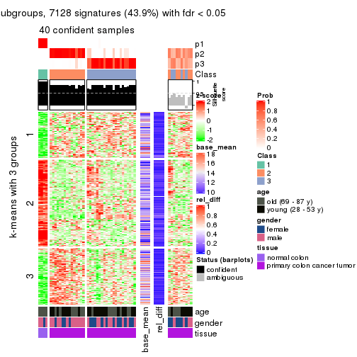
get_signatures(res, k = 4)
get_signatures(res, k = 5)
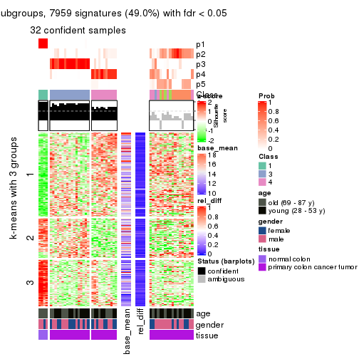
get_signatures(res, k = 6)
Signature heatmaps where rows are not scaled:
get_signatures(res, k = 2, scale_rows = FALSE)
get_signatures(res, k = 3, scale_rows = FALSE)
get_signatures(res, k = 4, scale_rows = FALSE)
get_signatures(res, k = 5, scale_rows = FALSE)
get_signatures(res, k = 6, scale_rows = FALSE)
Compare the overlap of signatures from different k:
compare_signatures(res)
get_signature() returns a data frame invisibly. TO get the list of signatures, the function
call should be assigned to a variable explicitly. In following code, if plot argument is set
to FALSE, no heatmap is plotted while only the differential analysis is performed.
# code only for demonstration
tb = get_signature(res, k = ..., plot = FALSE)
An example of the output of tb is:
#> which_row fdr mean_1 mean_2 scaled_mean_1 scaled_mean_2 km
#> 1 38 0.042760348 8.373488 9.131774 -0.5533452 0.5164555 1
#> 2 40 0.018707592 7.106213 8.469186 -0.6173731 0.5762149 1
#> 3 55 0.019134737 10.221463 11.207825 -0.6159697 0.5749050 1
#> 4 59 0.006059896 5.921854 7.869574 -0.6899429 0.6439467 1
#> 5 60 0.018055526 8.928898 10.211722 -0.6204761 0.5791110 1
#> 6 98 0.009384629 15.714769 14.887706 0.6635654 -0.6193277 2
...
The columns in tb are:
which_row: row indices corresponding to the input matrix.fdr: FDR for the differential test. mean_x: The mean value in group x.scaled_mean_x: The mean value in group x after rows are scaled.km: Row groups if k-means clustering is applied to rows.UMAP plot which shows how samples are separated.
dimension_reduction(res, k = 2, method = "UMAP")
dimension_reduction(res, k = 3, method = "UMAP")

dimension_reduction(res, k = 4, method = "UMAP")
dimension_reduction(res, k = 5, method = "UMAP")
dimension_reduction(res, k = 6, method = "UMAP")
Following heatmap shows how subgroups are split when increasing k:
collect_classes(res)
Test correlation between subgroups and known annotations. If the known annotation is numeric, one-way ANOVA test is applied, and if the known annotation is discrete, chi-squared contingency table test is applied.
test_to_known_factors(res)
#> n age(p) gender(p) tissue(p) k
#> CV:pam 50 0.0825 0.785 9.94e-10 2
#> CV:pam 40 0.0754 0.243 2.06e-09 3
#> CV:pam 48 0.1188 0.629 2.13e-10 4
#> CV:pam 32 0.0992 0.563 1.13e-07 5
#> CV:pam 42 0.0290 0.916 5.89e-08 6
If matrix rows can be associated to genes, consider to use functional_enrichment(res,
...) to perform function enrichment for the signature genes. See this vignette for more detailed explanations.
The object with results only for a single top-value method and a single partition method can be extracted as:
res = res_list["CV", "mclust"]
# you can also extract it by
# res = res_list["CV:mclust"]
A summary of res and all the functions that can be applied to it:
res
#> A 'ConsensusPartition' object with k = 2, 3, 4, 5, 6.
#> On a matrix with 16230 rows and 50 columns.
#> Top rows (1000, 2000, 3000, 4000, 5000) are extracted by 'CV' method.
#> Subgroups are detected by 'mclust' method.
#> Performed in total 1250 partitions by row resampling.
#> Best k for subgroups seems to be 2.
#>
#> Following methods can be applied to this 'ConsensusPartition' object:
#> [1] "cola_report" "collect_classes" "collect_plots"
#> [4] "collect_stats" "colnames" "compare_signatures"
#> [7] "consensus_heatmap" "dimension_reduction" "functional_enrichment"
#> [10] "get_anno_col" "get_anno" "get_classes"
#> [13] "get_consensus" "get_matrix" "get_membership"
#> [16] "get_param" "get_signatures" "get_stats"
#> [19] "is_best_k" "is_stable_k" "membership_heatmap"
#> [22] "ncol" "nrow" "plot_ecdf"
#> [25] "rownames" "select_partition_number" "show"
#> [28] "suggest_best_k" "test_to_known_factors"
collect_plots() function collects all the plots made from res for all k (number of partitions)
into one single page to provide an easy and fast comparison between different k.
collect_plots(res)
The plots are:
k and the heatmap of
predicted classes for each k.k.k.k.All the plots in panels can be made by individual functions and they are plotted later in this section.
select_partition_number() produces several plots showing different
statistics for choosing “optimized” k. There are following statistics:
k;k, the area increased is defined as \(A_k - A_{k-1}\).The detailed explanations of these statistics can be found in the cola vignette.
Generally speaking, lower PAC score, higher mean silhouette score or higher
concordance corresponds to better partition. Rand index and Jaccard index
measure how similar the current partition is compared to partition with k-1.
If they are too similar, we won't accept k is better than k-1.
select_partition_number(res)

The numeric values for all these statistics can be obtained by get_stats().
get_stats(res)
#> k 1-PAC mean_silhouette concordance area_increased Rand Jaccard
#> 2 2 1.000 0.987 0.994 0.1607 0.850 0.850
#> 3 3 0.361 0.730 0.860 2.3321 0.620 0.553
#> 4 4 0.522 0.654 0.823 0.2233 0.750 0.521
#> 5 5 0.593 0.648 0.783 0.1181 0.847 0.607
#> 6 6 0.634 0.575 0.793 0.0767 0.881 0.623
suggest_best_k() suggests the best \(k\) based on these statistics. The rules are as follows:
suggest_best_k(res)
#> [1] 2
Following shows the table of the partitions (You need to click the show/hide
code output link to see it). The membership matrix (columns with name p*)
is inferred by
clue::cl_consensus()
function with the SE method. Basically the value in the membership matrix
represents the probability to belong to a certain group. The finall class
label for an item is determined with the group with highest probability it
belongs to.
In get_classes() function, the entropy is calculated from the membership
matrix and the silhouette score is calculated from the consensus matrix.
cbind(get_classes(res, k = 2), get_membership(res, k = 2))
#> class entropy silhouette p1 p2
#> GSM615919 2 0.0000 0.993 0.000 1.000
#> GSM615921 2 0.0000 0.993 0.000 1.000
#> GSM615922 2 0.0000 0.993 0.000 1.000
#> GSM615925 2 0.0000 0.993 0.000 1.000
#> GSM615926 2 0.0000 0.993 0.000 1.000
#> GSM615933 2 0.0000 0.993 0.000 1.000
#> GSM615939 2 0.0000 0.993 0.000 1.000
#> GSM615941 2 0.0000 0.993 0.000 1.000
#> GSM615944 2 0.0376 0.990 0.004 0.996
#> GSM615945 2 0.0000 0.993 0.000 1.000
#> GSM615947 2 0.0000 0.993 0.000 1.000
#> GSM615948 2 0.0000 0.993 0.000 1.000
#> GSM615951 2 0.0000 0.993 0.000 1.000
#> GSM615918 2 0.0376 0.990 0.004 0.996
#> GSM615927 2 0.0000 0.993 0.000 1.000
#> GSM615929 2 0.0000 0.993 0.000 1.000
#> GSM615931 2 0.0000 0.993 0.000 1.000
#> GSM615937 2 0.0000 0.993 0.000 1.000
#> GSM615938 2 0.0000 0.993 0.000 1.000
#> GSM615940 2 0.0000 0.993 0.000 1.000
#> GSM615946 2 0.0000 0.993 0.000 1.000
#> GSM615952 2 0.0000 0.993 0.000 1.000
#> GSM615953 2 0.0000 0.993 0.000 1.000
#> GSM615955 2 0.7299 0.749 0.204 0.796
#> GSM721722 2 0.3733 0.921 0.072 0.928
#> GSM721723 2 0.0376 0.990 0.004 0.996
#> GSM721724 2 0.0000 0.993 0.000 1.000
#> GSM615917 2 0.0000 0.993 0.000 1.000
#> GSM615920 2 0.0000 0.993 0.000 1.000
#> GSM615923 2 0.0000 0.993 0.000 1.000
#> GSM615928 2 0.0000 0.993 0.000 1.000
#> GSM615934 2 0.0000 0.993 0.000 1.000
#> GSM615950 2 0.0000 0.993 0.000 1.000
#> GSM615954 2 0.0376 0.990 0.004 0.996
#> GSM615956 2 0.0000 0.993 0.000 1.000
#> GSM615958 1 0.0000 1.000 1.000 0.000
#> GSM615924 2 0.0000 0.993 0.000 1.000
#> GSM615930 2 0.0000 0.993 0.000 1.000
#> GSM615932 2 0.0000 0.993 0.000 1.000
#> GSM615935 2 0.0000 0.993 0.000 1.000
#> GSM615936 2 0.0000 0.993 0.000 1.000
#> GSM615942 2 0.0000 0.993 0.000 1.000
#> GSM615943 2 0.0000 0.993 0.000 1.000
#> GSM615949 2 0.0000 0.993 0.000 1.000
#> GSM615957 2 0.0376 0.990 0.004 0.996
#> GSM721720 2 0.0376 0.990 0.004 0.996
#> GSM721721 2 0.0000 0.993 0.000 1.000
#> GSM615959 1 0.0000 1.000 1.000 0.000
#> GSM615960 1 0.0000 1.000 1.000 0.000
#> GSM615961 1 0.0000 1.000 1.000 0.000
cbind(get_classes(res, k = 3), get_membership(res, k = 3))
#> class entropy silhouette p1 p2 p3
#> GSM615919 3 0.3192 0.7751 0.000 0.112 0.888
#> GSM615921 2 0.6235 0.1654 0.000 0.564 0.436
#> GSM615922 3 0.0592 0.7987 0.000 0.012 0.988
#> GSM615925 3 0.5363 0.6533 0.000 0.276 0.724
#> GSM615926 3 0.0592 0.7987 0.000 0.012 0.988
#> GSM615933 3 0.6305 0.3678 0.000 0.484 0.516
#> GSM615939 3 0.3619 0.7654 0.000 0.136 0.864
#> GSM615941 3 0.0237 0.7979 0.000 0.004 0.996
#> GSM615944 3 0.0237 0.7979 0.000 0.004 0.996
#> GSM615945 2 0.3816 0.7101 0.000 0.852 0.148
#> GSM615947 3 0.4702 0.6956 0.000 0.212 0.788
#> GSM615948 3 0.0237 0.7984 0.000 0.004 0.996
#> GSM615951 3 0.0237 0.7979 0.000 0.004 0.996
#> GSM615918 3 0.5363 0.6533 0.000 0.276 0.724
#> GSM615927 2 0.6126 0.0566 0.000 0.600 0.400
#> GSM615929 3 0.0892 0.7993 0.000 0.020 0.980
#> GSM615931 3 0.6267 0.4393 0.000 0.452 0.548
#> GSM615937 2 0.0747 0.8012 0.000 0.984 0.016
#> GSM615938 2 0.2878 0.8392 0.000 0.904 0.096
#> GSM615940 3 0.3340 0.7744 0.000 0.120 0.880
#> GSM615946 3 0.4002 0.7558 0.000 0.160 0.840
#> GSM615952 3 0.4178 0.6668 0.000 0.172 0.828
#> GSM615953 2 0.3192 0.8309 0.000 0.888 0.112
#> GSM615955 3 0.0475 0.7972 0.004 0.004 0.992
#> GSM721722 3 0.0237 0.7979 0.000 0.004 0.996
#> GSM721723 2 0.2878 0.8392 0.000 0.904 0.096
#> GSM721724 3 0.3619 0.7654 0.000 0.136 0.864
#> GSM615917 3 0.5363 0.6533 0.000 0.276 0.724
#> GSM615920 3 0.4605 0.7113 0.000 0.204 0.796
#> GSM615923 3 0.6168 0.5318 0.000 0.412 0.588
#> GSM615928 3 0.5529 0.6793 0.000 0.296 0.704
#> GSM615934 3 0.0592 0.7987 0.000 0.012 0.988
#> GSM615950 2 0.0237 0.7908 0.000 0.996 0.004
#> GSM615954 2 0.2448 0.8350 0.000 0.924 0.076
#> GSM615956 3 0.6026 0.3533 0.000 0.376 0.624
#> GSM615958 1 0.0000 1.0000 1.000 0.000 0.000
#> GSM615924 3 0.6140 0.5427 0.000 0.404 0.596
#> GSM615930 2 0.4121 0.6822 0.000 0.832 0.168
#> GSM615932 2 0.2878 0.8392 0.000 0.904 0.096
#> GSM615935 2 0.2959 0.8372 0.000 0.900 0.100
#> GSM615936 3 0.3482 0.7701 0.000 0.128 0.872
#> GSM615942 3 0.0000 0.7978 0.000 0.000 1.000
#> GSM615943 2 0.0237 0.7908 0.000 0.996 0.004
#> GSM615949 3 0.3192 0.7813 0.000 0.112 0.888
#> GSM615957 2 0.4399 0.7483 0.000 0.812 0.188
#> GSM721720 2 0.2878 0.8392 0.000 0.904 0.096
#> GSM721721 3 0.3816 0.7727 0.000 0.148 0.852
#> GSM615959 1 0.0000 1.0000 1.000 0.000 0.000
#> GSM615960 1 0.0000 1.0000 1.000 0.000 0.000
#> GSM615961 1 0.0000 1.0000 1.000 0.000 0.000
cbind(get_classes(res, k = 4), get_membership(res, k = 4))
#> class entropy silhouette p1 p2 p3 p4
#> GSM615919 3 0.4746 0.523 0 0.000 0.632 0.368
#> GSM615921 2 0.7458 -0.136 0 0.444 0.380 0.176
#> GSM615922 3 0.3266 0.788 0 0.000 0.832 0.168
#> GSM615925 4 0.3649 0.557 0 0.000 0.204 0.796
#> GSM615926 3 0.3356 0.796 0 0.000 0.824 0.176
#> GSM615933 4 0.6993 0.584 0 0.260 0.168 0.572
#> GSM615939 3 0.0000 0.859 0 0.000 1.000 0.000
#> GSM615941 3 0.0000 0.859 0 0.000 1.000 0.000
#> GSM615944 3 0.0921 0.852 0 0.000 0.972 0.028
#> GSM615945 4 0.5329 0.370 0 0.420 0.012 0.568
#> GSM615947 3 0.0000 0.859 0 0.000 1.000 0.000
#> GSM615948 3 0.0817 0.855 0 0.000 0.976 0.024
#> GSM615951 3 0.0921 0.852 0 0.000 0.972 0.028
#> GSM615918 4 0.0921 0.503 0 0.000 0.028 0.972
#> GSM615927 4 0.6663 0.623 0 0.144 0.244 0.612
#> GSM615929 3 0.3444 0.777 0 0.000 0.816 0.184
#> GSM615931 4 0.6917 0.621 0 0.200 0.208 0.592
#> GSM615937 2 0.4713 0.147 0 0.640 0.000 0.360
#> GSM615938 2 0.0000 0.742 0 1.000 0.000 0.000
#> GSM615940 3 0.0000 0.859 0 0.000 1.000 0.000
#> GSM615946 3 0.2973 0.748 0 0.144 0.856 0.000
#> GSM615952 3 0.1004 0.852 0 0.004 0.972 0.024
#> GSM615953 3 0.5088 0.266 0 0.424 0.572 0.004
#> GSM615955 3 0.0921 0.852 0 0.000 0.972 0.028
#> GSM721722 3 0.1022 0.853 0 0.000 0.968 0.032
#> GSM721723 2 0.0000 0.742 0 1.000 0.000 0.000
#> GSM721724 3 0.0188 0.859 0 0.004 0.996 0.000
#> GSM615917 4 0.0921 0.503 0 0.000 0.028 0.972
#> GSM615920 3 0.4977 0.292 0 0.000 0.540 0.460
#> GSM615923 4 0.7001 0.617 0 0.180 0.244 0.576
#> GSM615928 4 0.6371 0.212 0 0.064 0.428 0.508
#> GSM615934 3 0.3123 0.795 0 0.000 0.844 0.156
#> GSM615950 2 0.4713 0.147 0 0.640 0.000 0.360
#> GSM615954 4 0.4999 0.223 0 0.492 0.000 0.508
#> GSM615956 3 0.4164 0.589 0 0.264 0.736 0.000
#> GSM615958 1 0.0000 1.000 1 0.000 0.000 0.000
#> GSM615924 4 0.6621 0.623 0 0.140 0.244 0.616
#> GSM615930 4 0.5427 0.376 0 0.416 0.016 0.568
#> GSM615932 2 0.0000 0.742 0 1.000 0.000 0.000
#> GSM615935 2 0.0336 0.738 0 0.992 0.008 0.000
#> GSM615936 3 0.0188 0.859 0 0.004 0.996 0.000
#> GSM615942 3 0.0000 0.859 0 0.000 1.000 0.000
#> GSM615943 4 0.4998 0.234 0 0.488 0.000 0.512
#> GSM615949 3 0.0592 0.857 0 0.000 0.984 0.016
#> GSM615957 2 0.1792 0.685 0 0.932 0.068 0.000
#> GSM721720 2 0.0000 0.742 0 1.000 0.000 0.000
#> GSM721721 3 0.4643 0.565 0 0.000 0.656 0.344
#> GSM615959 1 0.0000 1.000 1 0.000 0.000 0.000
#> GSM615960 1 0.0000 1.000 1 0.000 0.000 0.000
#> GSM615961 1 0.0000 1.000 1 0.000 0.000 0.000
cbind(get_classes(res, k = 5), get_membership(res, k = 5))
#> class entropy silhouette p1 p2 p3 p4 p5
#> GSM615919 4 0.4736 0.331 0.000 NA 0.404 0.576 0.000
#> GSM615921 3 0.6345 0.445 0.048 NA 0.604 0.076 0.268
#> GSM615922 3 0.3656 0.765 0.000 NA 0.800 0.032 0.000
#> GSM615925 4 0.0290 0.696 0.000 NA 0.008 0.992 0.000
#> GSM615926 3 0.4525 0.640 0.000 NA 0.724 0.220 0.000
#> GSM615933 4 0.5040 0.377 0.000 NA 0.056 0.680 0.256
#> GSM615939 3 0.0798 0.827 0.000 NA 0.976 0.008 0.000
#> GSM615941 3 0.2179 0.819 0.000 NA 0.896 0.004 0.000
#> GSM615944 3 0.3274 0.774 0.000 NA 0.780 0.000 0.000
#> GSM615945 5 0.4508 0.321 0.000 NA 0.000 0.332 0.648
#> GSM615947 3 0.1965 0.822 0.000 NA 0.924 0.000 0.052
#> GSM615948 3 0.2331 0.811 0.000 NA 0.900 0.020 0.000
#> GSM615951 3 0.3086 0.790 0.000 NA 0.816 0.004 0.000
#> GSM615918 4 0.0290 0.696 0.000 NA 0.008 0.992 0.000
#> GSM615927 4 0.1815 0.687 0.000 NA 0.016 0.940 0.024
#> GSM615929 3 0.5549 0.531 0.000 NA 0.632 0.244 0.000
#> GSM615931 4 0.3779 0.494 0.000 NA 0.024 0.776 0.200
#> GSM615937 5 0.2674 0.537 0.004 NA 0.000 0.140 0.856
#> GSM615938 5 0.4182 0.589 0.400 NA 0.000 0.000 0.600
#> GSM615940 3 0.0798 0.827 0.000 NA 0.976 0.008 0.000
#> GSM615946 3 0.1211 0.825 0.000 NA 0.960 0.000 0.024
#> GSM615952 3 0.3758 0.786 0.004 NA 0.816 0.000 0.052
#> GSM615953 3 0.6260 0.444 0.120 NA 0.608 0.016 0.248
#> GSM615955 3 0.4227 0.623 0.000 NA 0.580 0.000 0.000
#> GSM721722 3 0.4227 0.623 0.000 NA 0.580 0.000 0.000
#> GSM721723 5 0.4171 0.590 0.396 NA 0.000 0.000 0.604
#> GSM721724 3 0.0798 0.826 0.000 NA 0.976 0.000 0.008
#> GSM615917 4 0.0290 0.696 0.000 NA 0.008 0.992 0.000
#> GSM615920 4 0.4430 0.584 0.000 NA 0.256 0.708 0.000
#> GSM615923 4 0.4865 0.310 0.000 NA 0.032 0.640 0.324
#> GSM615928 4 0.4048 0.625 0.000 NA 0.208 0.764 0.012
#> GSM615934 3 0.3535 0.767 0.000 NA 0.808 0.028 0.000
#> GSM615950 5 0.2516 0.536 0.000 NA 0.000 0.140 0.860
#> GSM615954 5 0.5846 0.499 0.112 NA 0.004 0.228 0.644
#> GSM615956 3 0.1997 0.826 0.016 NA 0.932 0.000 0.028
#> GSM615958 1 0.4182 1.000 0.600 NA 0.000 0.000 0.000
#> GSM615924 4 0.1012 0.695 0.000 NA 0.020 0.968 0.012
#> GSM615930 5 0.4540 0.309 0.000 NA 0.000 0.340 0.640
#> GSM615932 5 0.4171 0.590 0.396 NA 0.000 0.000 0.604
#> GSM615935 5 0.5542 0.538 0.396 NA 0.072 0.000 0.532
#> GSM615936 3 0.1483 0.827 0.000 NA 0.952 0.012 0.008
#> GSM615942 3 0.1485 0.824 0.000 NA 0.948 0.020 0.000
#> GSM615943 5 0.3779 0.450 0.000 NA 0.000 0.236 0.752
#> GSM615949 3 0.1299 0.824 0.000 NA 0.960 0.012 0.008
#> GSM615957 5 0.6756 0.118 0.264 NA 0.364 0.000 0.372
#> GSM721720 5 0.4171 0.590 0.396 NA 0.000 0.000 0.604
#> GSM721721 4 0.5106 0.315 0.000 NA 0.400 0.564 0.004
#> GSM615959 1 0.4182 1.000 0.600 NA 0.000 0.000 0.000
#> GSM615960 1 0.4182 1.000 0.600 NA 0.000 0.000 0.000
#> GSM615961 1 0.4182 1.000 0.600 NA 0.000 0.000 0.000
cbind(get_classes(res, k = 6), get_membership(res, k = 6))
#> class entropy silhouette p1 p2 p3 p4 p5 p6
#> GSM615919 4 0.4264 0.3857 0 0.376 0.008 0.604 0.012 0.000
#> GSM615921 2 0.6132 0.1728 0 0.568 0.000 0.056 0.140 0.236
#> GSM615922 2 0.4234 0.4073 0 0.608 0.372 0.016 0.004 0.000
#> GSM615925 4 0.0000 0.6320 0 0.000 0.000 1.000 0.000 0.000
#> GSM615926 4 0.6298 -0.2338 0 0.340 0.276 0.376 0.008 0.000
#> GSM615933 4 0.4037 0.0487 0 0.000 0.000 0.608 0.380 0.012
#> GSM615939 2 0.0146 0.6713 0 0.996 0.000 0.000 0.004 0.000
#> GSM615941 2 0.3915 0.4533 0 0.696 0.284 0.008 0.012 0.000
#> GSM615944 3 0.4313 -0.0327 0 0.480 0.504 0.004 0.012 0.000
#> GSM615945 5 0.3483 0.7389 0 0.000 0.000 0.236 0.748 0.016
#> GSM615947 2 0.3376 0.5866 0 0.844 0.080 0.004 0.028 0.044
#> GSM615948 2 0.3895 0.4987 0 0.696 0.284 0.016 0.004 0.000
#> GSM615951 2 0.4115 0.2833 0 0.624 0.360 0.004 0.012 0.000
#> GSM615918 4 0.0260 0.6315 0 0.000 0.000 0.992 0.000 0.008
#> GSM615927 4 0.2358 0.5933 0 0.000 0.000 0.876 0.108 0.016
#> GSM615929 2 0.6116 0.0907 0 0.464 0.288 0.240 0.008 0.000
#> GSM615931 4 0.3171 0.4271 0 0.000 0.000 0.784 0.204 0.012
#> GSM615937 5 0.2431 0.7713 0 0.000 0.000 0.008 0.860 0.132
#> GSM615938 6 0.2135 0.8000 0 0.000 0.000 0.000 0.128 0.872
#> GSM615940 2 0.0146 0.6719 0 0.996 0.000 0.004 0.000 0.000
#> GSM615946 2 0.0806 0.6679 0 0.972 0.000 0.008 0.020 0.000
#> GSM615952 2 0.4253 0.5288 0 0.776 0.124 0.008 0.020 0.072
#> GSM615953 6 0.5520 0.4076 0 0.272 0.048 0.016 0.040 0.624
#> GSM615955 3 0.2454 0.7083 0 0.160 0.840 0.000 0.000 0.000
#> GSM721722 3 0.2454 0.7083 0 0.160 0.840 0.000 0.000 0.000
#> GSM721723 6 0.0790 0.7910 0 0.000 0.000 0.000 0.032 0.968
#> GSM721724 2 0.0260 0.6717 0 0.992 0.000 0.000 0.008 0.000
#> GSM615917 4 0.0260 0.6315 0 0.000 0.000 0.992 0.000 0.008
#> GSM615920 4 0.5280 0.4387 0 0.200 0.104 0.668 0.016 0.012
#> GSM615923 4 0.4234 -0.0315 0 0.012 0.000 0.576 0.408 0.004
#> GSM615928 4 0.3290 0.5909 0 0.208 0.000 0.776 0.016 0.000
#> GSM615934 2 0.4211 0.4143 0 0.616 0.364 0.016 0.004 0.000
#> GSM615950 5 0.1858 0.7734 0 0.000 0.000 0.004 0.904 0.092
#> GSM615954 5 0.3947 0.7911 0 0.000 0.000 0.100 0.764 0.136
#> GSM615956 2 0.2001 0.6559 0 0.924 0.032 0.004 0.012 0.028
#> GSM615958 1 0.0000 1.0000 1 0.000 0.000 0.000 0.000 0.000
#> GSM615924 4 0.1826 0.6251 0 0.020 0.000 0.924 0.052 0.004
#> GSM615930 5 0.3420 0.7338 0 0.000 0.000 0.240 0.748 0.012
#> GSM615932 6 0.2135 0.7996 0 0.000 0.000 0.000 0.128 0.872
#> GSM615935 6 0.2357 0.8013 0 0.012 0.000 0.000 0.116 0.872
#> GSM615936 2 0.1370 0.6641 0 0.948 0.036 0.004 0.012 0.000
#> GSM615942 2 0.3558 0.5031 0 0.736 0.248 0.016 0.000 0.000
#> GSM615943 5 0.2985 0.8265 0 0.000 0.000 0.100 0.844 0.056
#> GSM615949 2 0.1483 0.6680 0 0.944 0.036 0.012 0.008 0.000
#> GSM615957 6 0.3076 0.5772 0 0.240 0.000 0.000 0.000 0.760
#> GSM721720 6 0.1141 0.7888 0 0.000 0.000 0.000 0.052 0.948
#> GSM721721 4 0.4102 0.4303 0 0.356 0.004 0.628 0.012 0.000
#> GSM615959 1 0.0000 1.0000 1 0.000 0.000 0.000 0.000 0.000
#> GSM615960 1 0.0000 1.0000 1 0.000 0.000 0.000 0.000 0.000
#> GSM615961 1 0.0000 1.0000 1 0.000 0.000 0.000 0.000 0.000
Heatmaps for the consensus matrix. It visualizes the probability of two samples to be in a same group.
consensus_heatmap(res, k = 2)
consensus_heatmap(res, k = 3)
consensus_heatmap(res, k = 4)
consensus_heatmap(res, k = 5)
consensus_heatmap(res, k = 6)
Heatmaps for the membership of samples in all partitions to see how consistent they are:
membership_heatmap(res, k = 2)
membership_heatmap(res, k = 3)
membership_heatmap(res, k = 4)
membership_heatmap(res, k = 5)
membership_heatmap(res, k = 6)
As soon as we have had the classes for columns, we can look for signatures which are significantly different between classes which can be candidate marks for certain classes. Following are the heatmaps for signatures.
Signature heatmaps where rows are scaled:
get_signatures(res, k = 2)

get_signatures(res, k = 3)
get_signatures(res, k = 4)
get_signatures(res, k = 5)
get_signatures(res, k = 6)
Signature heatmaps where rows are not scaled:
get_signatures(res, k = 2, scale_rows = FALSE)
get_signatures(res, k = 3, scale_rows = FALSE)
get_signatures(res, k = 4, scale_rows = FALSE)
get_signatures(res, k = 5, scale_rows = FALSE)
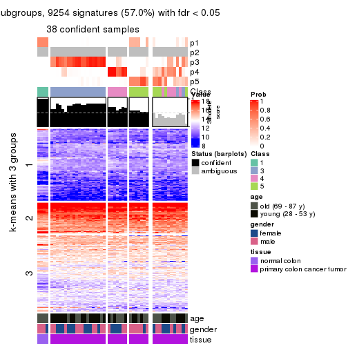
get_signatures(res, k = 6, scale_rows = FALSE)
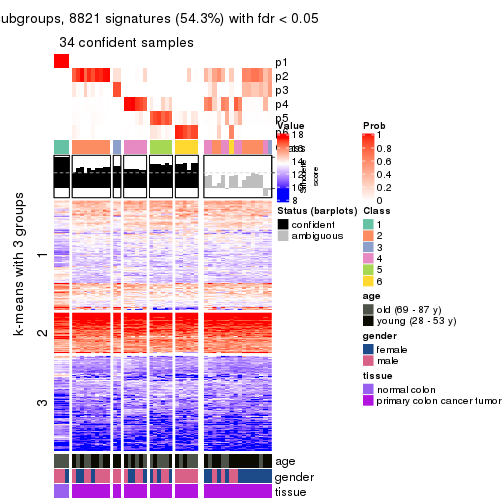
Compare the overlap of signatures from different k:
compare_signatures(res)
get_signature() returns a data frame invisibly. TO get the list of signatures, the function
call should be assigned to a variable explicitly. In following code, if plot argument is set
to FALSE, no heatmap is plotted while only the differential analysis is performed.
# code only for demonstration
tb = get_signature(res, k = ..., plot = FALSE)
An example of the output of tb is:
#> which_row fdr mean_1 mean_2 scaled_mean_1 scaled_mean_2 km
#> 1 38 0.042760348 8.373488 9.131774 -0.5533452 0.5164555 1
#> 2 40 0.018707592 7.106213 8.469186 -0.6173731 0.5762149 1
#> 3 55 0.019134737 10.221463 11.207825 -0.6159697 0.5749050 1
#> 4 59 0.006059896 5.921854 7.869574 -0.6899429 0.6439467 1
#> 5 60 0.018055526 8.928898 10.211722 -0.6204761 0.5791110 1
#> 6 98 0.009384629 15.714769 14.887706 0.6635654 -0.6193277 2
...
The columns in tb are:
which_row: row indices corresponding to the input matrix.fdr: FDR for the differential test. mean_x: The mean value in group x.scaled_mean_x: The mean value in group x after rows are scaled.km: Row groups if k-means clustering is applied to rows.UMAP plot which shows how samples are separated.
dimension_reduction(res, k = 2, method = "UMAP")
dimension_reduction(res, k = 3, method = "UMAP")
dimension_reduction(res, k = 4, method = "UMAP")
dimension_reduction(res, k = 5, method = "UMAP")
dimension_reduction(res, k = 6, method = "UMAP")

Following heatmap shows how subgroups are split when increasing k:
collect_classes(res)
Test correlation between subgroups and known annotations. If the known annotation is numeric, one-way ANOVA test is applied, and if the known annotation is discrete, chi-squared contingency table test is applied.
test_to_known_factors(res)
#> n age(p) gender(p) tissue(p) k
#> CV:mclust 50 0.0825 0.785 9.94e-10 2
#> CV:mclust 45 0.0308 0.141 1.69e-10 3
#> CV:mclust 40 0.0291 0.131 1.07e-08 4
#> CV:mclust 38 0.0298 0.277 2.83e-08 5
#> CV:mclust 34 0.1949 0.324 2.38e-06 6
If matrix rows can be associated to genes, consider to use functional_enrichment(res,
...) to perform function enrichment for the signature genes. See this vignette for more detailed explanations.
The object with results only for a single top-value method and a single partition method can be extracted as:
res = res_list["CV", "NMF"]
# you can also extract it by
# res = res_list["CV:NMF"]
A summary of res and all the functions that can be applied to it:
res
#> A 'ConsensusPartition' object with k = 2, 3, 4, 5, 6.
#> On a matrix with 16230 rows and 50 columns.
#> Top rows (1000, 2000, 3000, 4000, 5000) are extracted by 'CV' method.
#> Subgroups are detected by 'NMF' method.
#> Performed in total 1250 partitions by row resampling.
#> Best k for subgroups seems to be 3.
#>
#> Following methods can be applied to this 'ConsensusPartition' object:
#> [1] "cola_report" "collect_classes" "collect_plots"
#> [4] "collect_stats" "colnames" "compare_signatures"
#> [7] "consensus_heatmap" "dimension_reduction" "functional_enrichment"
#> [10] "get_anno_col" "get_anno" "get_classes"
#> [13] "get_consensus" "get_matrix" "get_membership"
#> [16] "get_param" "get_signatures" "get_stats"
#> [19] "is_best_k" "is_stable_k" "membership_heatmap"
#> [22] "ncol" "nrow" "plot_ecdf"
#> [25] "rownames" "select_partition_number" "show"
#> [28] "suggest_best_k" "test_to_known_factors"
collect_plots() function collects all the plots made from res for all k (number of partitions)
into one single page to provide an easy and fast comparison between different k.
collect_plots(res)

The plots are:
k and the heatmap of
predicted classes for each k.k.k.k.All the plots in panels can be made by individual functions and they are plotted later in this section.
select_partition_number() produces several plots showing different
statistics for choosing “optimized” k. There are following statistics:
k;k, the area increased is defined as \(A_k - A_{k-1}\).The detailed explanations of these statistics can be found in the cola vignette.
Generally speaking, lower PAC score, higher mean silhouette score or higher
concordance corresponds to better partition. Rand index and Jaccard index
measure how similar the current partition is compared to partition with k-1.
If they are too similar, we won't accept k is better than k-1.
select_partition_number(res)
The numeric values for all these statistics can be obtained by get_stats().
get_stats(res)
#> k 1-PAC mean_silhouette concordance area_increased Rand Jaccard
#> 2 2 0.660 0.847 0.934 0.3581 0.673 0.673
#> 3 3 0.427 0.717 0.836 0.7807 0.651 0.494
#> 4 4 0.519 0.615 0.808 0.1553 0.717 0.376
#> 5 5 0.636 0.676 0.783 0.0815 0.838 0.492
#> 6 6 0.703 0.671 0.814 0.0479 0.901 0.580
suggest_best_k() suggests the best \(k\) based on these statistics. The rules are as follows:
suggest_best_k(res)
#> [1] 3
Following shows the table of the partitions (You need to click the show/hide
code output link to see it). The membership matrix (columns with name p*)
is inferred by
clue::cl_consensus()
function with the SE method. Basically the value in the membership matrix
represents the probability to belong to a certain group. The finall class
label for an item is determined with the group with highest probability it
belongs to.
In get_classes() function, the entropy is calculated from the membership
matrix and the silhouette score is calculated from the consensus matrix.
cbind(get_classes(res, k = 2), get_membership(res, k = 2))
#> class entropy silhouette p1 p2
#> GSM615919 2 0.0000 0.928 0.000 1.000
#> GSM615921 2 0.0000 0.928 0.000 1.000
#> GSM615922 2 0.9460 0.477 0.364 0.636
#> GSM615925 2 0.4939 0.852 0.108 0.892
#> GSM615926 1 0.0938 0.898 0.988 0.012
#> GSM615933 2 0.0000 0.928 0.000 1.000
#> GSM615939 2 0.0000 0.928 0.000 1.000
#> GSM615941 2 0.9393 0.498 0.356 0.644
#> GSM615944 1 0.0000 0.906 1.000 0.000
#> GSM615945 2 0.0000 0.928 0.000 1.000
#> GSM615947 2 0.0000 0.928 0.000 1.000
#> GSM615948 2 0.9323 0.512 0.348 0.652
#> GSM615951 1 0.9170 0.435 0.668 0.332
#> GSM615918 2 0.7950 0.702 0.240 0.760
#> GSM615927 2 0.0000 0.928 0.000 1.000
#> GSM615929 2 0.4939 0.852 0.108 0.892
#> GSM615931 2 0.0376 0.926 0.004 0.996
#> GSM615937 2 0.0000 0.928 0.000 1.000
#> GSM615938 2 0.0000 0.928 0.000 1.000
#> GSM615940 2 0.0376 0.926 0.004 0.996
#> GSM615946 2 0.0000 0.928 0.000 1.000
#> GSM615952 2 0.7376 0.738 0.208 0.792
#> GSM615953 2 0.0000 0.928 0.000 1.000
#> GSM615955 1 0.0000 0.906 1.000 0.000
#> GSM721722 1 0.0000 0.906 1.000 0.000
#> GSM721723 2 0.0000 0.928 0.000 1.000
#> GSM721724 2 0.0000 0.928 0.000 1.000
#> GSM615917 2 0.0000 0.928 0.000 1.000
#> GSM615920 1 0.9815 0.276 0.580 0.420
#> GSM615923 2 0.0000 0.928 0.000 1.000
#> GSM615928 2 0.0000 0.928 0.000 1.000
#> GSM615934 2 0.8267 0.669 0.260 0.740
#> GSM615950 2 0.0000 0.928 0.000 1.000
#> GSM615954 2 0.0000 0.928 0.000 1.000
#> GSM615956 2 0.0000 0.928 0.000 1.000
#> GSM615958 1 0.0000 0.906 1.000 0.000
#> GSM615924 2 0.0000 0.928 0.000 1.000
#> GSM615930 2 0.0000 0.928 0.000 1.000
#> GSM615932 2 0.0000 0.928 0.000 1.000
#> GSM615935 2 0.0000 0.928 0.000 1.000
#> GSM615936 2 0.0000 0.928 0.000 1.000
#> GSM615942 2 0.9522 0.458 0.372 0.628
#> GSM615943 2 0.0000 0.928 0.000 1.000
#> GSM615949 2 0.3274 0.889 0.060 0.940
#> GSM615957 2 0.0000 0.928 0.000 1.000
#> GSM721720 2 0.0000 0.928 0.000 1.000
#> GSM721721 2 0.4939 0.852 0.108 0.892
#> GSM615959 1 0.0000 0.906 1.000 0.000
#> GSM615960 1 0.0000 0.906 1.000 0.000
#> GSM615961 1 0.0000 0.906 1.000 0.000
cbind(get_classes(res, k = 3), get_membership(res, k = 3))
#> class entropy silhouette p1 p2 p3
#> GSM615919 2 0.5529 0.730 0.000 0.704 0.296
#> GSM615921 2 0.5016 0.579 0.000 0.760 0.240
#> GSM615922 3 0.4452 0.630 0.192 0.000 0.808
#> GSM615925 2 0.4346 0.793 0.000 0.816 0.184
#> GSM615926 1 0.5070 0.715 0.772 0.004 0.224
#> GSM615933 2 0.4062 0.804 0.000 0.836 0.164
#> GSM615939 3 0.1753 0.777 0.000 0.048 0.952
#> GSM615941 3 0.3412 0.717 0.124 0.000 0.876
#> GSM615944 1 0.3038 0.848 0.896 0.000 0.104
#> GSM615945 2 0.0000 0.788 0.000 1.000 0.000
#> GSM615947 3 0.4796 0.722 0.000 0.220 0.780
#> GSM615948 3 0.4235 0.650 0.176 0.000 0.824
#> GSM615951 3 0.5882 0.450 0.348 0.000 0.652
#> GSM615918 2 0.4968 0.784 0.012 0.800 0.188
#> GSM615927 2 0.1163 0.799 0.000 0.972 0.028
#> GSM615929 3 0.6445 0.374 0.020 0.308 0.672
#> GSM615931 2 0.4121 0.803 0.000 0.832 0.168
#> GSM615937 2 0.3295 0.737 0.008 0.896 0.096
#> GSM615938 2 0.5968 0.295 0.000 0.636 0.364
#> GSM615940 3 0.1753 0.777 0.000 0.048 0.952
#> GSM615946 3 0.2625 0.766 0.000 0.084 0.916
#> GSM615952 3 0.6222 0.711 0.092 0.132 0.776
#> GSM615953 3 0.5291 0.687 0.000 0.268 0.732
#> GSM615955 1 0.3752 0.818 0.856 0.000 0.144
#> GSM721722 1 0.2165 0.871 0.936 0.000 0.064
#> GSM721723 3 0.6299 0.256 0.000 0.476 0.524
#> GSM721724 3 0.1753 0.777 0.000 0.048 0.952
#> GSM615917 2 0.4121 0.803 0.000 0.832 0.168
#> GSM615920 1 0.6445 0.530 0.672 0.308 0.020
#> GSM615923 2 0.4062 0.804 0.000 0.836 0.164
#> GSM615928 2 0.4121 0.803 0.000 0.832 0.168
#> GSM615934 3 0.5965 0.646 0.108 0.100 0.792
#> GSM615950 2 0.0237 0.788 0.000 0.996 0.004
#> GSM615954 2 0.1399 0.779 0.028 0.968 0.004
#> GSM615956 3 0.3482 0.769 0.000 0.128 0.872
#> GSM615958 1 0.0000 0.883 1.000 0.000 0.000
#> GSM615924 2 0.4121 0.803 0.000 0.832 0.168
#> GSM615930 2 0.1753 0.803 0.000 0.952 0.048
#> GSM615932 2 0.5216 0.545 0.000 0.740 0.260
#> GSM615935 3 0.5497 0.668 0.000 0.292 0.708
#> GSM615936 3 0.3116 0.775 0.000 0.108 0.892
#> GSM615942 3 0.4399 0.646 0.188 0.000 0.812
#> GSM615943 2 0.0000 0.788 0.000 1.000 0.000
#> GSM615949 3 0.0747 0.771 0.000 0.016 0.984
#> GSM615957 3 0.4842 0.719 0.000 0.224 0.776
#> GSM721720 2 0.5529 0.478 0.000 0.704 0.296
#> GSM721721 2 0.5178 0.753 0.000 0.744 0.256
#> GSM615959 1 0.0000 0.883 1.000 0.000 0.000
#> GSM615960 1 0.0000 0.883 1.000 0.000 0.000
#> GSM615961 1 0.0000 0.883 1.000 0.000 0.000
cbind(get_classes(res, k = 4), get_membership(res, k = 4))
#> class entropy silhouette p1 p2 p3 p4
#> GSM615919 3 0.6688 0.04165 0.008 0.064 0.464 0.464
#> GSM615921 2 0.4406 0.72447 0.000 0.780 0.028 0.192
#> GSM615922 3 0.1576 0.69208 0.000 0.004 0.948 0.048
#> GSM615925 4 0.1940 0.74257 0.000 0.000 0.076 0.924
#> GSM615926 3 0.4030 0.64180 0.072 0.000 0.836 0.092
#> GSM615933 4 0.3208 0.74221 0.000 0.148 0.004 0.848
#> GSM615939 3 0.3311 0.65340 0.000 0.172 0.828 0.000
#> GSM615941 3 0.1867 0.69773 0.000 0.072 0.928 0.000
#> GSM615944 3 0.4961 0.00479 0.448 0.000 0.552 0.000
#> GSM615945 4 0.3494 0.72678 0.000 0.172 0.004 0.824
#> GSM615947 2 0.3400 0.71419 0.000 0.820 0.180 0.000
#> GSM615948 3 0.0895 0.69958 0.000 0.020 0.976 0.004
#> GSM615951 3 0.7607 0.00252 0.388 0.200 0.412 0.000
#> GSM615918 4 0.1576 0.75064 0.004 0.000 0.048 0.948
#> GSM615927 4 0.1109 0.76520 0.000 0.028 0.004 0.968
#> GSM615929 3 0.3528 0.62634 0.000 0.000 0.808 0.192
#> GSM615931 4 0.2530 0.76214 0.000 0.100 0.004 0.896
#> GSM615937 2 0.4853 0.54450 0.036 0.744 0.000 0.220
#> GSM615938 2 0.2401 0.79029 0.000 0.904 0.004 0.092
#> GSM615940 3 0.3975 0.59366 0.000 0.240 0.760 0.000
#> GSM615946 2 0.5300 0.26584 0.000 0.580 0.408 0.012
#> GSM615952 2 0.5063 0.71247 0.108 0.768 0.124 0.000
#> GSM615953 2 0.1004 0.81477 0.024 0.972 0.000 0.004
#> GSM615955 1 0.4543 0.48954 0.676 0.000 0.324 0.000
#> GSM721722 3 0.4769 0.39401 0.308 0.000 0.684 0.008
#> GSM721723 2 0.0779 0.81386 0.000 0.980 0.004 0.016
#> GSM721724 3 0.4992 0.02672 0.000 0.476 0.524 0.000
#> GSM615917 4 0.1978 0.74299 0.004 0.000 0.068 0.928
#> GSM615920 4 0.5254 0.44818 0.300 0.000 0.028 0.672
#> GSM615923 4 0.5690 0.68573 0.000 0.116 0.168 0.716
#> GSM615928 4 0.5075 0.32164 0.000 0.012 0.344 0.644
#> GSM615934 3 0.1635 0.69314 0.000 0.008 0.948 0.044
#> GSM615950 4 0.4898 0.36262 0.000 0.416 0.000 0.584
#> GSM615954 4 0.6887 0.08184 0.104 0.444 0.000 0.452
#> GSM615956 2 0.2345 0.78369 0.000 0.900 0.100 0.000
#> GSM615958 1 0.0188 0.90506 0.996 0.000 0.004 0.000
#> GSM615924 4 0.3450 0.67077 0.000 0.008 0.156 0.836
#> GSM615930 4 0.2530 0.76219 0.000 0.100 0.004 0.896
#> GSM615932 2 0.2589 0.77120 0.000 0.884 0.000 0.116
#> GSM615935 2 0.4281 0.70824 0.000 0.792 0.028 0.180
#> GSM615936 3 0.4792 0.50660 0.000 0.312 0.680 0.008
#> GSM615942 3 0.1209 0.70082 0.000 0.032 0.964 0.004
#> GSM615943 4 0.3831 0.69976 0.000 0.204 0.004 0.792
#> GSM615949 3 0.2255 0.70370 0.000 0.068 0.920 0.012
#> GSM615957 2 0.2125 0.79852 0.004 0.920 0.076 0.000
#> GSM721720 2 0.1305 0.80832 0.000 0.960 0.004 0.036
#> GSM721721 3 0.4837 0.43818 0.000 0.004 0.648 0.348
#> GSM615959 1 0.0000 0.90450 1.000 0.000 0.000 0.000
#> GSM615960 1 0.0188 0.90506 0.996 0.000 0.004 0.000
#> GSM615961 1 0.0000 0.90450 1.000 0.000 0.000 0.000
cbind(get_classes(res, k = 5), get_membership(res, k = 5))
#> class entropy silhouette p1 p2 p3 p4 p5
#> GSM615919 4 0.3651 0.696 0.000 0.028 0.160 0.808 0.004
#> GSM615921 2 0.3250 0.742 0.000 0.820 0.004 0.168 0.008
#> GSM615922 3 0.1697 0.775 0.000 0.000 0.932 0.060 0.008
#> GSM615925 4 0.4419 0.684 0.000 0.000 0.020 0.668 0.312
#> GSM615926 3 0.2177 0.762 0.008 0.000 0.908 0.080 0.004
#> GSM615933 5 0.1026 0.719 0.000 0.004 0.004 0.024 0.968
#> GSM615939 3 0.6380 0.476 0.000 0.272 0.556 0.160 0.012
#> GSM615941 3 0.1306 0.775 0.016 0.016 0.960 0.008 0.000
#> GSM615944 3 0.3123 0.685 0.184 0.000 0.812 0.004 0.000
#> GSM615945 5 0.0162 0.725 0.000 0.000 0.004 0.000 0.996
#> GSM615947 2 0.1952 0.761 0.000 0.912 0.084 0.000 0.004
#> GSM615948 3 0.1124 0.777 0.000 0.004 0.960 0.036 0.000
#> GSM615951 3 0.5119 0.551 0.304 0.020 0.652 0.016 0.008
#> GSM615918 4 0.4440 0.652 0.004 0.000 0.012 0.660 0.324
#> GSM615927 5 0.2629 0.615 0.000 0.000 0.004 0.136 0.860
#> GSM615929 4 0.3906 0.526 0.000 0.004 0.292 0.704 0.000
#> GSM615931 5 0.1444 0.712 0.000 0.000 0.012 0.040 0.948
#> GSM615937 5 0.8215 0.251 0.020 0.288 0.092 0.172 0.428
#> GSM615938 2 0.2830 0.751 0.000 0.884 0.016 0.020 0.080
#> GSM615940 3 0.6844 0.565 0.000 0.208 0.584 0.136 0.072
#> GSM615946 2 0.5113 0.697 0.000 0.752 0.092 0.104 0.052
#> GSM615952 2 0.7594 0.323 0.260 0.456 0.216 0.068 0.000
#> GSM615953 2 0.5394 0.679 0.092 0.736 0.024 0.016 0.132
#> GSM615955 3 0.4227 0.395 0.420 0.000 0.580 0.000 0.000
#> GSM721722 3 0.3119 0.757 0.072 0.000 0.860 0.068 0.000
#> GSM721723 2 0.3151 0.738 0.000 0.836 0.000 0.144 0.020
#> GSM721724 2 0.5464 0.586 0.000 0.648 0.224 0.128 0.000
#> GSM615917 4 0.3884 0.695 0.000 0.000 0.004 0.708 0.288
#> GSM615920 4 0.6318 0.641 0.080 0.000 0.076 0.632 0.212
#> GSM615923 4 0.4951 0.609 0.000 0.092 0.020 0.744 0.144
#> GSM615928 4 0.3738 0.726 0.000 0.012 0.092 0.832 0.064
#> GSM615934 3 0.3456 0.713 0.000 0.000 0.800 0.184 0.016
#> GSM615950 5 0.5546 0.574 0.000 0.172 0.000 0.180 0.648
#> GSM615954 5 0.7849 0.281 0.304 0.184 0.000 0.096 0.416
#> GSM615956 2 0.2665 0.767 0.000 0.900 0.032 0.048 0.020
#> GSM615958 1 0.0703 0.989 0.976 0.000 0.024 0.000 0.000
#> GSM615924 4 0.4132 0.715 0.000 0.000 0.020 0.720 0.260
#> GSM615930 5 0.2305 0.680 0.000 0.012 0.000 0.092 0.896
#> GSM615932 2 0.4210 0.668 0.000 0.772 0.028 0.016 0.184
#> GSM615935 5 0.4628 0.512 0.000 0.240 0.032 0.012 0.716
#> GSM615936 3 0.6075 0.515 0.000 0.160 0.612 0.012 0.216
#> GSM615942 3 0.0727 0.778 0.004 0.000 0.980 0.012 0.004
#> GSM615943 5 0.0324 0.726 0.000 0.004 0.000 0.004 0.992
#> GSM615949 3 0.4198 0.708 0.000 0.008 0.776 0.172 0.044
#> GSM615957 2 0.2911 0.748 0.000 0.852 0.008 0.136 0.004
#> GSM721720 2 0.3531 0.729 0.000 0.816 0.000 0.148 0.036
#> GSM721721 4 0.3231 0.668 0.000 0.004 0.196 0.800 0.000
#> GSM615959 1 0.0404 0.992 0.988 0.000 0.012 0.000 0.000
#> GSM615960 1 0.0609 0.992 0.980 0.000 0.020 0.000 0.000
#> GSM615961 1 0.0404 0.992 0.988 0.000 0.012 0.000 0.000
cbind(get_classes(res, k = 6), get_membership(res, k = 6))
#> class entropy silhouette p1 p2 p3 p4 p5 p6
#> GSM615919 4 0.1973 0.7900 0.004 0.064 0.004 0.916 0.000 0.012
#> GSM615921 2 0.5189 0.1134 0.000 0.468 0.000 0.088 0.000 0.444
#> GSM615922 3 0.0951 0.8269 0.000 0.004 0.968 0.020 0.000 0.008
#> GSM615925 4 0.3133 0.7761 0.008 0.000 0.000 0.780 0.212 0.000
#> GSM615926 3 0.1716 0.8169 0.000 0.004 0.932 0.028 0.000 0.036
#> GSM615933 5 0.1219 0.8285 0.000 0.048 0.000 0.004 0.948 0.000
#> GSM615939 2 0.2748 0.6570 0.000 0.848 0.128 0.024 0.000 0.000
#> GSM615941 3 0.0146 0.8252 0.000 0.004 0.996 0.000 0.000 0.000
#> GSM615944 3 0.0810 0.8220 0.008 0.004 0.976 0.004 0.000 0.008
#> GSM615945 5 0.0508 0.8397 0.000 0.012 0.004 0.000 0.984 0.000
#> GSM615947 2 0.1769 0.6814 0.000 0.924 0.012 0.000 0.004 0.060
#> GSM615948 3 0.1003 0.8256 0.000 0.000 0.964 0.020 0.000 0.016
#> GSM615951 3 0.4618 0.6561 0.208 0.044 0.720 0.008 0.004 0.016
#> GSM615918 4 0.3073 0.7761 0.000 0.000 0.000 0.788 0.204 0.008
#> GSM615927 5 0.2658 0.7767 0.000 0.036 0.000 0.100 0.864 0.000
#> GSM615929 4 0.2674 0.7568 0.000 0.076 0.032 0.880 0.004 0.008
#> GSM615931 5 0.1806 0.8218 0.000 0.000 0.008 0.044 0.928 0.020
#> GSM615937 6 0.3496 0.6645 0.000 0.004 0.132 0.004 0.048 0.812
#> GSM615938 2 0.4079 0.6033 0.000 0.744 0.000 0.000 0.084 0.172
#> GSM615940 2 0.4919 0.0695 0.000 0.528 0.424 0.008 0.036 0.004
#> GSM615946 2 0.2450 0.6820 0.000 0.896 0.000 0.048 0.040 0.016
#> GSM615952 6 0.6789 0.0488 0.280 0.032 0.296 0.004 0.000 0.388
#> GSM615953 2 0.4866 0.5796 0.140 0.704 0.000 0.000 0.136 0.020
#> GSM615955 3 0.4251 0.1794 0.468 0.004 0.520 0.004 0.000 0.004
#> GSM721722 3 0.2295 0.8053 0.004 0.016 0.900 0.072 0.000 0.008
#> GSM721723 6 0.1461 0.6797 0.016 0.044 0.000 0.000 0.000 0.940
#> GSM721724 2 0.6335 0.3001 0.000 0.500 0.312 0.052 0.000 0.136
#> GSM615917 4 0.2416 0.8099 0.000 0.000 0.000 0.844 0.156 0.000
#> GSM615920 4 0.6302 0.6515 0.136 0.000 0.116 0.624 0.104 0.020
#> GSM615923 6 0.4836 0.3813 0.000 0.004 0.004 0.332 0.052 0.608
#> GSM615928 4 0.3424 0.7338 0.000 0.000 0.004 0.796 0.032 0.168
#> GSM615934 3 0.4226 0.6921 0.000 0.052 0.724 0.216 0.000 0.008
#> GSM615950 6 0.3134 0.6673 0.000 0.000 0.000 0.024 0.168 0.808
#> GSM615954 6 0.5570 0.4432 0.136 0.004 0.000 0.004 0.292 0.564
#> GSM615956 2 0.2703 0.6607 0.016 0.860 0.000 0.000 0.008 0.116
#> GSM615958 1 0.0937 0.9943 0.960 0.000 0.040 0.000 0.000 0.000
#> GSM615924 4 0.2389 0.8193 0.000 0.000 0.000 0.864 0.128 0.008
#> GSM615930 5 0.1989 0.8124 0.000 0.000 0.004 0.052 0.916 0.028
#> GSM615932 2 0.2933 0.5761 0.000 0.796 0.000 0.000 0.200 0.004
#> GSM615935 5 0.3847 0.0864 0.000 0.456 0.000 0.000 0.544 0.000
#> GSM615936 3 0.4637 0.5548 0.000 0.088 0.684 0.000 0.224 0.004
#> GSM615942 3 0.0146 0.8250 0.000 0.000 0.996 0.000 0.000 0.004
#> GSM615943 5 0.0458 0.8363 0.000 0.000 0.000 0.000 0.984 0.016
#> GSM615949 3 0.4548 0.6922 0.000 0.052 0.720 0.204 0.004 0.020
#> GSM615957 6 0.2053 0.6360 0.000 0.108 0.004 0.000 0.000 0.888
#> GSM721720 6 0.0622 0.6909 0.000 0.012 0.000 0.008 0.000 0.980
#> GSM721721 4 0.2449 0.7804 0.000 0.056 0.024 0.896 0.000 0.024
#> GSM615959 1 0.1010 0.9943 0.960 0.000 0.036 0.004 0.000 0.000
#> GSM615960 1 0.0937 0.9943 0.960 0.000 0.040 0.000 0.000 0.000
#> GSM615961 1 0.1010 0.9943 0.960 0.000 0.036 0.004 0.000 0.000
Heatmaps for the consensus matrix. It visualizes the probability of two samples to be in a same group.
consensus_heatmap(res, k = 2)
consensus_heatmap(res, k = 3)
consensus_heatmap(res, k = 4)
consensus_heatmap(res, k = 5)
consensus_heatmap(res, k = 6)
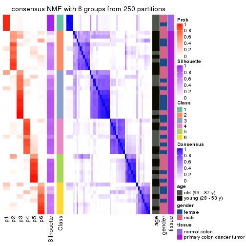
Heatmaps for the membership of samples in all partitions to see how consistent they are:
membership_heatmap(res, k = 2)
membership_heatmap(res, k = 3)

membership_heatmap(res, k = 4)
membership_heatmap(res, k = 5)

membership_heatmap(res, k = 6)
As soon as we have had the classes for columns, we can look for signatures which are significantly different between classes which can be candidate marks for certain classes. Following are the heatmaps for signatures.
Signature heatmaps where rows are scaled:
get_signatures(res, k = 2)
get_signatures(res, k = 3)
get_signatures(res, k = 4)
get_signatures(res, k = 5)
get_signatures(res, k = 6)
Signature heatmaps where rows are not scaled:
get_signatures(res, k = 2, scale_rows = FALSE)
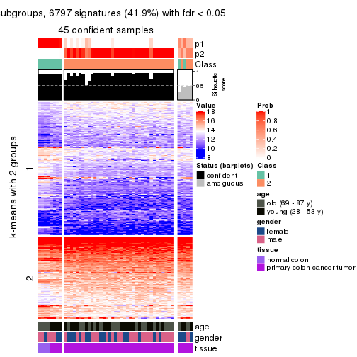
get_signatures(res, k = 3, scale_rows = FALSE)
get_signatures(res, k = 4, scale_rows = FALSE)

get_signatures(res, k = 5, scale_rows = FALSE)
get_signatures(res, k = 6, scale_rows = FALSE)
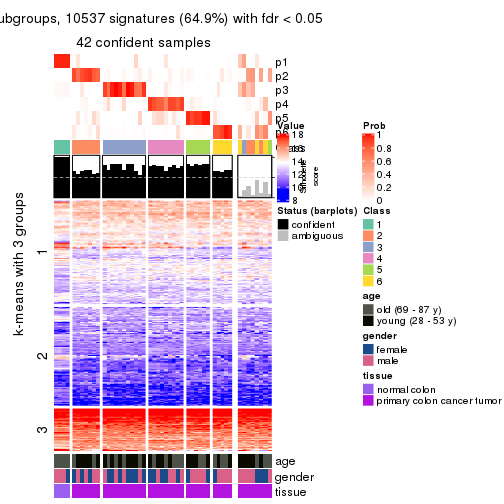
Compare the overlap of signatures from different k:
compare_signatures(res)
get_signature() returns a data frame invisibly. TO get the list of signatures, the function
call should be assigned to a variable explicitly. In following code, if plot argument is set
to FALSE, no heatmap is plotted while only the differential analysis is performed.
# code only for demonstration
tb = get_signature(res, k = ..., plot = FALSE)
An example of the output of tb is:
#> which_row fdr mean_1 mean_2 scaled_mean_1 scaled_mean_2 km
#> 1 38 0.042760348 8.373488 9.131774 -0.5533452 0.5164555 1
#> 2 40 0.018707592 7.106213 8.469186 -0.6173731 0.5762149 1
#> 3 55 0.019134737 10.221463 11.207825 -0.6159697 0.5749050 1
#> 4 59 0.006059896 5.921854 7.869574 -0.6899429 0.6439467 1
#> 5 60 0.018055526 8.928898 10.211722 -0.6204761 0.5791110 1
#> 6 98 0.009384629 15.714769 14.887706 0.6635654 -0.6193277 2
...
The columns in tb are:
which_row: row indices corresponding to the input matrix.fdr: FDR for the differential test. mean_x: The mean value in group x.scaled_mean_x: The mean value in group x after rows are scaled.km: Row groups if k-means clustering is applied to rows.UMAP plot which shows how samples are separated.
dimension_reduction(res, k = 2, method = "UMAP")
dimension_reduction(res, k = 3, method = "UMAP")
dimension_reduction(res, k = 4, method = "UMAP")
dimension_reduction(res, k = 5, method = "UMAP")
dimension_reduction(res, k = 6, method = "UMAP")
Following heatmap shows how subgroups are split when increasing k:
collect_classes(res)
Test correlation between subgroups and known annotations. If the known annotation is numeric, one-way ANOVA test is applied, and if the known annotation is discrete, chi-squared contingency table test is applied.
test_to_known_factors(res)
#> n age(p) gender(p) tissue(p) k
#> CV:NMF 45 1.000 1.000 1.33e-04 2
#> CV:NMF 45 0.715 0.781 1.54e-04 3
#> CV:NMF 38 0.161 0.455 2.83e-08 4
#> CV:NMF 45 0.163 0.406 3.98e-09 5
#> CV:NMF 42 0.220 0.522 5.89e-08 6
If matrix rows can be associated to genes, consider to use functional_enrichment(res,
...) to perform function enrichment for the signature genes. See this vignette for more detailed explanations.
The object with results only for a single top-value method and a single partition method can be extracted as:
res = res_list["MAD", "hclust"]
# you can also extract it by
# res = res_list["MAD:hclust"]
A summary of res and all the functions that can be applied to it:
res
#> A 'ConsensusPartition' object with k = 2, 3, 4, 5, 6.
#> On a matrix with 16230 rows and 50 columns.
#> Top rows (1000, 2000, 3000, 4000, 5000) are extracted by 'MAD' method.
#> Subgroups are detected by 'hclust' method.
#> Performed in total 1250 partitions by row resampling.
#> Best k for subgroups seems to be 3.
#>
#> Following methods can be applied to this 'ConsensusPartition' object:
#> [1] "cola_report" "collect_classes" "collect_plots"
#> [4] "collect_stats" "colnames" "compare_signatures"
#> [7] "consensus_heatmap" "dimension_reduction" "functional_enrichment"
#> [10] "get_anno_col" "get_anno" "get_classes"
#> [13] "get_consensus" "get_matrix" "get_membership"
#> [16] "get_param" "get_signatures" "get_stats"
#> [19] "is_best_k" "is_stable_k" "membership_heatmap"
#> [22] "ncol" "nrow" "plot_ecdf"
#> [25] "rownames" "select_partition_number" "show"
#> [28] "suggest_best_k" "test_to_known_factors"
collect_plots() function collects all the plots made from res for all k (number of partitions)
into one single page to provide an easy and fast comparison between different k.
collect_plots(res)
The plots are:
k and the heatmap of
predicted classes for each k.k.k.k.All the plots in panels can be made by individual functions and they are plotted later in this section.
select_partition_number() produces several plots showing different
statistics for choosing “optimized” k. There are following statistics:
k;k, the area increased is defined as \(A_k - A_{k-1}\).The detailed explanations of these statistics can be found in the cola vignette.
Generally speaking, lower PAC score, higher mean silhouette score or higher
concordance corresponds to better partition. Rand index and Jaccard index
measure how similar the current partition is compared to partition with k-1.
If they are too similar, we won't accept k is better than k-1.
select_partition_number(res)
The numeric values for all these statistics can be obtained by get_stats().
get_stats(res)
#> k 1-PAC mean_silhouette concordance area_increased Rand Jaccard
#> 2 2 0.735 0.903 0.951 0.3736 0.607 0.607
#> 3 3 0.401 0.757 0.838 0.7201 0.721 0.540
#> 4 4 0.515 0.567 0.752 0.1450 0.943 0.826
#> 5 5 0.570 0.645 0.743 0.0551 0.907 0.685
#> 6 6 0.642 0.684 0.780 0.0487 0.963 0.838
suggest_best_k() suggests the best \(k\) based on these statistics. The rules are as follows:
suggest_best_k(res)
#> [1] 3
Following shows the table of the partitions (You need to click the show/hide
code output link to see it). The membership matrix (columns with name p*)
is inferred by
clue::cl_consensus()
function with the SE method. Basically the value in the membership matrix
represents the probability to belong to a certain group. The finall class
label for an item is determined with the group with highest probability it
belongs to.
In get_classes() function, the entropy is calculated from the membership
matrix and the silhouette score is calculated from the consensus matrix.
cbind(get_classes(res, k = 2), get_membership(res, k = 2))
#> class entropy silhouette p1 p2
#> GSM615919 2 0.0672 0.968 0.008 0.992
#> GSM615921 2 0.0376 0.969 0.004 0.996
#> GSM615922 1 0.6247 0.830 0.844 0.156
#> GSM615925 2 0.0672 0.968 0.008 0.992
#> GSM615926 1 0.4815 0.862 0.896 0.104
#> GSM615933 2 0.0000 0.970 0.000 1.000
#> GSM615939 2 0.0000 0.970 0.000 1.000
#> GSM615941 1 0.5294 0.854 0.880 0.120
#> GSM615944 1 0.2236 0.878 0.964 0.036
#> GSM615945 2 0.0000 0.970 0.000 1.000
#> GSM615947 2 0.0376 0.969 0.004 0.996
#> GSM615948 1 0.9460 0.531 0.636 0.364
#> GSM615951 2 0.4939 0.869 0.108 0.892
#> GSM615918 2 0.0672 0.968 0.008 0.992
#> GSM615927 2 0.0672 0.968 0.008 0.992
#> GSM615929 2 0.2236 0.945 0.036 0.964
#> GSM615931 2 0.0000 0.970 0.000 1.000
#> GSM615937 2 0.0000 0.970 0.000 1.000
#> GSM615938 2 0.0000 0.970 0.000 1.000
#> GSM615940 2 0.0672 0.968 0.008 0.992
#> GSM615946 2 0.0000 0.970 0.000 1.000
#> GSM615952 2 0.4939 0.869 0.108 0.892
#> GSM615953 2 0.1843 0.953 0.028 0.972
#> GSM615955 1 0.2236 0.878 0.964 0.036
#> GSM721722 1 0.2236 0.878 0.964 0.036
#> GSM721723 2 0.0000 0.970 0.000 1.000
#> GSM721724 2 0.0000 0.970 0.000 1.000
#> GSM615917 2 0.0672 0.968 0.008 0.992
#> GSM615920 1 0.9815 0.386 0.580 0.420
#> GSM615923 2 0.0000 0.970 0.000 1.000
#> GSM615928 2 0.0376 0.969 0.004 0.996
#> GSM615934 1 0.8016 0.745 0.756 0.244
#> GSM615950 2 0.0000 0.970 0.000 1.000
#> GSM615954 2 0.0000 0.970 0.000 1.000
#> GSM615956 2 0.0672 0.968 0.008 0.992
#> GSM615958 1 0.0000 0.868 1.000 0.000
#> GSM615924 2 0.0672 0.968 0.008 0.992
#> GSM615930 2 0.0000 0.970 0.000 1.000
#> GSM615932 2 0.0000 0.970 0.000 1.000
#> GSM615935 2 0.0000 0.970 0.000 1.000
#> GSM615936 2 0.3274 0.924 0.060 0.940
#> GSM615942 2 0.9129 0.459 0.328 0.672
#> GSM615943 2 0.0000 0.970 0.000 1.000
#> GSM615949 2 0.7299 0.718 0.204 0.796
#> GSM615957 2 0.0000 0.970 0.000 1.000
#> GSM721720 2 0.0000 0.970 0.000 1.000
#> GSM721721 2 0.0000 0.970 0.000 1.000
#> GSM615959 1 0.0000 0.868 1.000 0.000
#> GSM615960 1 0.0000 0.868 1.000 0.000
#> GSM615961 1 0.0000 0.868 1.000 0.000
cbind(get_classes(res, k = 3), get_membership(res, k = 3))
#> class entropy silhouette p1 p2 p3
#> GSM615919 3 0.1529 0.830 0.000 0.040 0.960
#> GSM615921 3 0.5948 0.566 0.000 0.360 0.640
#> GSM615922 1 0.4779 0.821 0.840 0.036 0.124
#> GSM615925 3 0.0424 0.832 0.000 0.008 0.992
#> GSM615926 1 0.3116 0.851 0.892 0.000 0.108
#> GSM615933 3 0.3116 0.828 0.000 0.108 0.892
#> GSM615939 2 0.4931 0.772 0.000 0.768 0.232
#> GSM615941 1 0.3966 0.846 0.876 0.024 0.100
#> GSM615944 1 0.1529 0.868 0.960 0.000 0.040
#> GSM615945 3 0.3038 0.830 0.000 0.104 0.896
#> GSM615947 2 0.3715 0.789 0.004 0.868 0.128
#> GSM615948 1 0.8153 0.520 0.632 0.240 0.128
#> GSM615951 2 0.7108 0.769 0.100 0.716 0.184
#> GSM615918 3 0.0000 0.830 0.000 0.000 1.000
#> GSM615927 3 0.0000 0.830 0.000 0.000 1.000
#> GSM615929 3 0.4995 0.711 0.032 0.144 0.824
#> GSM615931 3 0.3686 0.808 0.000 0.140 0.860
#> GSM615937 3 0.6215 0.533 0.000 0.428 0.572
#> GSM615938 2 0.1163 0.750 0.000 0.972 0.028
#> GSM615940 2 0.5404 0.774 0.004 0.740 0.256
#> GSM615946 2 0.5138 0.760 0.000 0.748 0.252
#> GSM615952 2 0.7108 0.769 0.100 0.716 0.184
#> GSM615953 2 0.5503 0.794 0.020 0.772 0.208
#> GSM615955 1 0.1529 0.868 0.960 0.000 0.040
#> GSM721722 1 0.1529 0.868 0.960 0.000 0.040
#> GSM721723 2 0.3686 0.669 0.000 0.860 0.140
#> GSM721724 2 0.5024 0.778 0.004 0.776 0.220
#> GSM615917 3 0.0424 0.832 0.000 0.008 0.992
#> GSM615920 1 0.6421 0.373 0.572 0.004 0.424
#> GSM615923 3 0.3116 0.834 0.000 0.108 0.892
#> GSM615928 3 0.1860 0.829 0.000 0.052 0.948
#> GSM615934 1 0.5967 0.732 0.752 0.032 0.216
#> GSM615950 3 0.6215 0.533 0.000 0.428 0.572
#> GSM615954 3 0.5591 0.690 0.000 0.304 0.696
#> GSM615956 2 0.5291 0.766 0.000 0.732 0.268
#> GSM615958 1 0.0747 0.857 0.984 0.016 0.000
#> GSM615924 3 0.1031 0.833 0.000 0.024 0.976
#> GSM615930 3 0.3038 0.830 0.000 0.104 0.896
#> GSM615932 2 0.0892 0.751 0.000 0.980 0.020
#> GSM615935 2 0.0892 0.751 0.000 0.980 0.020
#> GSM615936 2 0.6742 0.767 0.052 0.708 0.240
#> GSM615942 2 0.8646 0.435 0.320 0.556 0.124
#> GSM615943 3 0.4931 0.752 0.000 0.232 0.768
#> GSM615949 2 0.9026 0.604 0.196 0.556 0.248
#> GSM615957 2 0.1860 0.739 0.000 0.948 0.052
#> GSM721720 2 0.3686 0.669 0.000 0.860 0.140
#> GSM721721 3 0.3116 0.834 0.000 0.108 0.892
#> GSM615959 1 0.0747 0.857 0.984 0.016 0.000
#> GSM615960 1 0.0747 0.857 0.984 0.016 0.000
#> GSM615961 1 0.0747 0.857 0.984 0.016 0.000
cbind(get_classes(res, k = 4), get_membership(res, k = 4))
#> class entropy silhouette p1 p2 p3 p4
#> GSM615919 1 0.6745 0.73465 0.612 0.212 0.000 0.176
#> GSM615921 1 0.5816 0.36532 0.708 0.148 0.000 0.144
#> GSM615922 3 0.4058 0.81890 0.028 0.116 0.840 0.016
#> GSM615925 4 0.5937 -0.15049 0.472 0.036 0.000 0.492
#> GSM615926 3 0.3103 0.84672 0.016 0.076 0.892 0.016
#> GSM615933 4 0.1913 0.52686 0.020 0.040 0.000 0.940
#> GSM615939 2 0.2198 0.71881 0.008 0.920 0.000 0.072
#> GSM615941 3 0.3367 0.84130 0.020 0.092 0.876 0.012
#> GSM615944 3 0.1211 0.86116 0.000 0.040 0.960 0.000
#> GSM615945 4 0.1022 0.53244 0.000 0.032 0.000 0.968
#> GSM615947 2 0.4245 0.72375 0.116 0.820 0.000 0.064
#> GSM615948 3 0.6086 0.53818 0.028 0.316 0.632 0.024
#> GSM615951 2 0.2989 0.70687 0.012 0.884 0.100 0.004
#> GSM615918 4 0.4955 0.00899 0.444 0.000 0.000 0.556
#> GSM615927 4 0.5097 0.03797 0.428 0.004 0.000 0.568
#> GSM615929 1 0.7803 0.63318 0.512 0.328 0.032 0.128
#> GSM615931 4 0.2198 0.51239 0.008 0.072 0.000 0.920
#> GSM615937 4 0.5436 0.38339 0.356 0.024 0.000 0.620
#> GSM615938 2 0.5664 0.68359 0.228 0.696 0.000 0.076
#> GSM615940 2 0.1443 0.71200 0.028 0.960 0.008 0.004
#> GSM615946 2 0.2742 0.70872 0.024 0.900 0.000 0.076
#> GSM615952 2 0.2989 0.70687 0.012 0.884 0.100 0.004
#> GSM615953 2 0.3025 0.73377 0.060 0.900 0.016 0.024
#> GSM615955 3 0.1118 0.86144 0.000 0.036 0.964 0.000
#> GSM721722 3 0.1118 0.86144 0.000 0.036 0.964 0.000
#> GSM721723 2 0.7442 0.48691 0.368 0.456 0.000 0.176
#> GSM721724 2 0.2884 0.71633 0.028 0.900 0.004 0.068
#> GSM615917 4 0.5859 -0.14595 0.472 0.032 0.000 0.496
#> GSM615920 3 0.8155 0.41345 0.140 0.088 0.572 0.200
#> GSM615923 4 0.7261 -0.13761 0.268 0.196 0.000 0.536
#> GSM615928 1 0.6946 0.73475 0.588 0.212 0.000 0.200
#> GSM615934 3 0.5179 0.73647 0.028 0.192 0.756 0.024
#> GSM615950 4 0.5436 0.38339 0.356 0.024 0.000 0.620
#> GSM615954 4 0.4781 0.45818 0.212 0.036 0.000 0.752
#> GSM615956 2 0.0672 0.71792 0.008 0.984 0.000 0.008
#> GSM615958 3 0.1489 0.84623 0.044 0.000 0.952 0.004
#> GSM615924 1 0.7080 0.67903 0.568 0.196 0.000 0.236
#> GSM615930 4 0.1022 0.53244 0.000 0.032 0.000 0.968
#> GSM615932 2 0.5664 0.67647 0.228 0.696 0.000 0.076
#> GSM615935 2 0.5664 0.67647 0.228 0.696 0.000 0.076
#> GSM615936 2 0.2353 0.71077 0.008 0.924 0.056 0.012
#> GSM615942 2 0.6197 0.41192 0.028 0.624 0.320 0.028
#> GSM615943 4 0.3749 0.50735 0.128 0.032 0.000 0.840
#> GSM615949 2 0.5446 0.54841 0.028 0.740 0.200 0.032
#> GSM615957 2 0.6478 0.60419 0.336 0.576 0.000 0.088
#> GSM721720 2 0.7442 0.48691 0.368 0.456 0.000 0.176
#> GSM721721 4 0.7261 -0.13761 0.268 0.196 0.000 0.536
#> GSM615959 3 0.1489 0.84623 0.044 0.000 0.952 0.004
#> GSM615960 3 0.1489 0.84623 0.044 0.000 0.952 0.004
#> GSM615961 3 0.1489 0.84623 0.044 0.000 0.952 0.004
cbind(get_classes(res, k = 5), get_membership(res, k = 5))
#> class entropy silhouette p1 p2 p3 p4 p5
#> GSM615919 4 0.280 0.650 0.000 0.140 0.008 0.852 0.000
#> GSM615921 4 0.632 0.459 0.128 0.144 0.000 0.652 0.076
#> GSM615922 3 0.269 0.741 0.004 0.052 0.896 0.044 0.004
#> GSM615925 4 0.358 0.570 0.000 0.008 0.000 0.768 0.224
#> GSM615926 3 0.171 0.748 0.004 0.016 0.940 0.040 0.000
#> GSM615933 5 0.325 0.692 0.000 0.008 0.000 0.184 0.808
#> GSM615939 2 0.234 0.726 0.032 0.904 0.000 0.064 0.000
#> GSM615941 3 0.184 0.752 0.000 0.032 0.932 0.036 0.000
#> GSM615944 3 0.051 0.706 0.016 0.000 0.984 0.000 0.000
#> GSM615945 5 0.277 0.708 0.000 0.000 0.000 0.164 0.836
#> GSM615947 2 0.340 0.726 0.064 0.868 0.008 0.028 0.032
#> GSM615948 3 0.500 0.505 0.004 0.256 0.688 0.044 0.008
#> GSM615951 2 0.383 0.708 0.020 0.812 0.144 0.024 0.000
#> GSM615918 4 0.377 0.488 0.000 0.000 0.000 0.704 0.296
#> GSM615927 4 0.405 0.448 0.000 0.004 0.000 0.676 0.320
#> GSM615929 4 0.517 0.544 0.004 0.276 0.036 0.668 0.016
#> GSM615931 5 0.403 0.671 0.000 0.048 0.000 0.176 0.776
#> GSM615937 5 0.558 0.560 0.236 0.076 0.000 0.024 0.664
#> GSM615938 2 0.484 0.677 0.084 0.764 0.000 0.032 0.120
#> GSM615940 2 0.285 0.729 0.012 0.888 0.048 0.052 0.000
#> GSM615946 2 0.299 0.717 0.032 0.876 0.000 0.080 0.012
#> GSM615952 2 0.383 0.708 0.020 0.812 0.144 0.024 0.000
#> GSM615953 2 0.380 0.739 0.020 0.852 0.056 0.024 0.048
#> GSM615955 3 0.088 0.693 0.032 0.000 0.968 0.000 0.000
#> GSM721722 3 0.088 0.693 0.032 0.000 0.968 0.000 0.000
#> GSM721723 2 0.705 0.321 0.384 0.416 0.000 0.028 0.172
#> GSM721724 2 0.249 0.727 0.032 0.904 0.008 0.056 0.000
#> GSM615917 4 0.346 0.570 0.000 0.004 0.000 0.772 0.224
#> GSM615920 3 0.620 0.383 0.004 0.024 0.620 0.236 0.116
#> GSM615923 4 0.723 0.414 0.040 0.164 0.008 0.508 0.280
#> GSM615928 4 0.325 0.651 0.000 0.136 0.008 0.840 0.016
#> GSM615934 3 0.410 0.660 0.004 0.112 0.804 0.076 0.004
#> GSM615950 5 0.547 0.566 0.220 0.076 0.000 0.024 0.680
#> GSM615954 5 0.545 0.636 0.148 0.076 0.000 0.056 0.720
#> GSM615956 2 0.309 0.730 0.020 0.876 0.036 0.068 0.000
#> GSM615958 1 0.418 1.000 0.600 0.000 0.400 0.000 0.000
#> GSM615924 4 0.385 0.661 0.000 0.120 0.008 0.816 0.056
#> GSM615930 5 0.277 0.708 0.000 0.000 0.000 0.164 0.836
#> GSM615932 2 0.532 0.644 0.052 0.696 0.000 0.036 0.216
#> GSM615935 2 0.532 0.644 0.052 0.696 0.000 0.036 0.216
#> GSM615936 2 0.361 0.726 0.012 0.844 0.096 0.044 0.004
#> GSM615942 2 0.561 0.357 0.004 0.564 0.376 0.044 0.012
#> GSM615943 5 0.164 0.706 0.004 0.008 0.000 0.048 0.940
#> GSM615949 2 0.537 0.534 0.004 0.672 0.248 0.064 0.012
#> GSM615957 2 0.615 0.494 0.372 0.528 0.000 0.024 0.076
#> GSM721720 2 0.705 0.321 0.384 0.416 0.000 0.028 0.172
#> GSM721721 4 0.723 0.414 0.040 0.164 0.008 0.508 0.280
#> GSM615959 1 0.418 1.000 0.600 0.000 0.400 0.000 0.000
#> GSM615960 1 0.418 1.000 0.600 0.000 0.400 0.000 0.000
#> GSM615961 1 0.418 1.000 0.600 0.000 0.400 0.000 0.000
cbind(get_classes(res, k = 6), get_membership(res, k = 6))
#> class entropy silhouette p1 p2 p3 p4 p5 p6
#> GSM615919 4 0.2509 0.650 0.000 0.088 0.036 0.876 0.000 0.000
#> GSM615921 4 0.5375 0.433 0.004 0.076 0.000 0.668 0.052 0.200
#> GSM615922 3 0.1268 0.818 0.000 0.036 0.952 0.008 0.004 0.000
#> GSM615925 4 0.3445 0.587 0.000 0.008 0.000 0.732 0.260 0.000
#> GSM615926 3 0.0622 0.825 0.012 0.000 0.980 0.008 0.000 0.000
#> GSM615933 5 0.1970 0.694 0.000 0.008 0.000 0.092 0.900 0.000
#> GSM615939 2 0.3658 0.752 0.004 0.816 0.012 0.072 0.000 0.096
#> GSM615941 3 0.0603 0.827 0.004 0.016 0.980 0.000 0.000 0.000
#> GSM615944 3 0.1444 0.809 0.072 0.000 0.928 0.000 0.000 0.000
#> GSM615945 5 0.1444 0.710 0.000 0.000 0.000 0.072 0.928 0.000
#> GSM615947 2 0.4445 0.714 0.040 0.784 0.008 0.032 0.020 0.116
#> GSM615948 3 0.3710 0.583 0.000 0.240 0.740 0.008 0.008 0.004
#> GSM615951 2 0.3833 0.745 0.000 0.800 0.116 0.024 0.000 0.060
#> GSM615918 4 0.3717 0.446 0.000 0.000 0.000 0.616 0.384 0.000
#> GSM615927 4 0.3907 0.403 0.000 0.004 0.000 0.588 0.408 0.000
#> GSM615929 4 0.4741 0.517 0.000 0.252 0.060 0.672 0.016 0.000
#> GSM615931 5 0.2789 0.681 0.000 0.044 0.000 0.088 0.864 0.004
#> GSM615937 5 0.4669 0.304 0.020 0.008 0.000 0.004 0.532 0.436
#> GSM615938 2 0.5589 0.633 0.064 0.696 0.000 0.032 0.076 0.132
#> GSM615940 2 0.2230 0.771 0.000 0.904 0.016 0.064 0.000 0.016
#> GSM615946 2 0.4067 0.747 0.004 0.800 0.012 0.088 0.012 0.084
#> GSM615952 2 0.3833 0.745 0.000 0.800 0.116 0.024 0.000 0.060
#> GSM615953 2 0.3673 0.758 0.012 0.844 0.028 0.024 0.024 0.068
#> GSM615955 3 0.1910 0.791 0.108 0.000 0.892 0.000 0.000 0.000
#> GSM721722 3 0.1910 0.791 0.108 0.000 0.892 0.000 0.000 0.000
#> GSM721723 6 0.0632 0.901 0.000 0.000 0.000 0.000 0.024 0.976
#> GSM721724 2 0.3565 0.751 0.000 0.816 0.012 0.072 0.000 0.100
#> GSM615917 4 0.3337 0.587 0.000 0.004 0.000 0.736 0.260 0.000
#> GSM615920 3 0.5247 0.457 0.012 0.008 0.660 0.204 0.116 0.000
#> GSM615923 4 0.6818 0.442 0.000 0.072 0.032 0.536 0.252 0.108
#> GSM615928 4 0.2851 0.651 0.000 0.080 0.036 0.868 0.016 0.000
#> GSM615934 3 0.2866 0.764 0.000 0.084 0.860 0.052 0.004 0.000
#> GSM615950 5 0.5054 0.326 0.028 0.016 0.000 0.008 0.532 0.416
#> GSM615954 5 0.4765 0.553 0.024 0.028 0.000 0.012 0.680 0.256
#> GSM615956 2 0.3327 0.765 0.004 0.844 0.016 0.076 0.000 0.060
#> GSM615958 1 0.1387 1.000 0.932 0.000 0.068 0.000 0.000 0.000
#> GSM615924 4 0.3390 0.668 0.000 0.072 0.032 0.840 0.056 0.000
#> GSM615930 5 0.1444 0.710 0.000 0.000 0.000 0.072 0.928 0.000
#> GSM615932 2 0.5415 0.618 0.068 0.692 0.000 0.036 0.172 0.032
#> GSM615935 2 0.5415 0.618 0.068 0.692 0.000 0.036 0.172 0.032
#> GSM615936 2 0.3220 0.768 0.000 0.856 0.068 0.040 0.004 0.032
#> GSM615942 2 0.4334 0.422 0.000 0.588 0.392 0.004 0.012 0.004
#> GSM615943 5 0.1705 0.697 0.024 0.016 0.000 0.008 0.940 0.012
#> GSM615949 2 0.4543 0.595 0.000 0.684 0.260 0.040 0.012 0.004
#> GSM615957 6 0.2053 0.809 0.000 0.108 0.000 0.004 0.000 0.888
#> GSM721720 6 0.0632 0.901 0.000 0.000 0.000 0.000 0.024 0.976
#> GSM721721 4 0.6818 0.442 0.000 0.072 0.032 0.536 0.252 0.108
#> GSM615959 1 0.1387 1.000 0.932 0.000 0.068 0.000 0.000 0.000
#> GSM615960 1 0.1387 1.000 0.932 0.000 0.068 0.000 0.000 0.000
#> GSM615961 1 0.1387 1.000 0.932 0.000 0.068 0.000 0.000 0.000
Heatmaps for the consensus matrix. It visualizes the probability of two samples to be in a same group.
consensus_heatmap(res, k = 2)
consensus_heatmap(res, k = 3)
consensus_heatmap(res, k = 4)
consensus_heatmap(res, k = 5)
consensus_heatmap(res, k = 6)
Heatmaps for the membership of samples in all partitions to see how consistent they are:
membership_heatmap(res, k = 2)
membership_heatmap(res, k = 3)
membership_heatmap(res, k = 4)
membership_heatmap(res, k = 5)
membership_heatmap(res, k = 6)
As soon as we have had the classes for columns, we can look for signatures which are significantly different between classes which can be candidate marks for certain classes. Following are the heatmaps for signatures.
Signature heatmaps where rows are scaled:
get_signatures(res, k = 2)
get_signatures(res, k = 3)
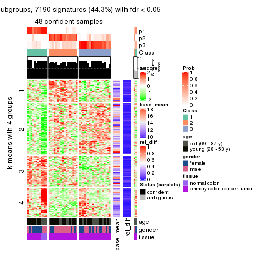
get_signatures(res, k = 4)
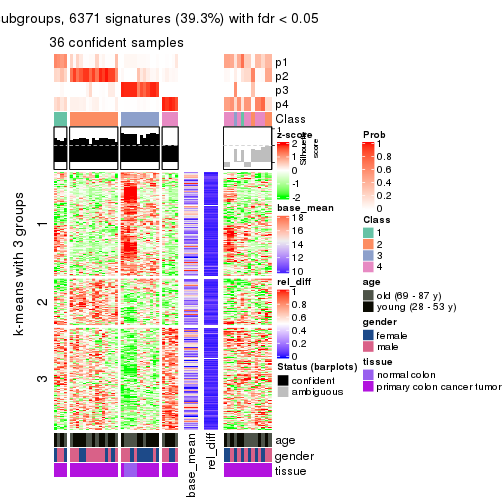
get_signatures(res, k = 5)
get_signatures(res, k = 6)
Signature heatmaps where rows are not scaled:
get_signatures(res, k = 2, scale_rows = FALSE)
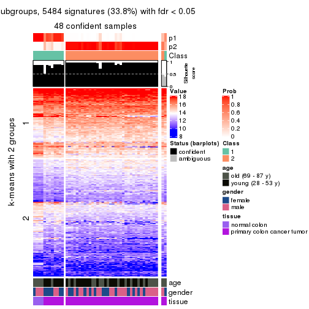
get_signatures(res, k = 3, scale_rows = FALSE)
get_signatures(res, k = 4, scale_rows = FALSE)
get_signatures(res, k = 5, scale_rows = FALSE)
get_signatures(res, k = 6, scale_rows = FALSE)
Compare the overlap of signatures from different k:
compare_signatures(res)
get_signature() returns a data frame invisibly. TO get the list of signatures, the function
call should be assigned to a variable explicitly. In following code, if plot argument is set
to FALSE, no heatmap is plotted while only the differential analysis is performed.
# code only for demonstration
tb = get_signature(res, k = ..., plot = FALSE)
An example of the output of tb is:
#> which_row fdr mean_1 mean_2 scaled_mean_1 scaled_mean_2 km
#> 1 38 0.042760348 8.373488 9.131774 -0.5533452 0.5164555 1
#> 2 40 0.018707592 7.106213 8.469186 -0.6173731 0.5762149 1
#> 3 55 0.019134737 10.221463 11.207825 -0.6159697 0.5749050 1
#> 4 59 0.006059896 5.921854 7.869574 -0.6899429 0.6439467 1
#> 5 60 0.018055526 8.928898 10.211722 -0.6204761 0.5791110 1
#> 6 98 0.009384629 15.714769 14.887706 0.6635654 -0.6193277 2
...
The columns in tb are:
which_row: row indices corresponding to the input matrix.fdr: FDR for the differential test. mean_x: The mean value in group x.scaled_mean_x: The mean value in group x after rows are scaled.km: Row groups if k-means clustering is applied to rows.UMAP plot which shows how samples are separated.
dimension_reduction(res, k = 2, method = "UMAP")
dimension_reduction(res, k = 3, method = "UMAP")
dimension_reduction(res, k = 4, method = "UMAP")
dimension_reduction(res, k = 5, method = "UMAP")
dimension_reduction(res, k = 6, method = "UMAP")
Following heatmap shows how subgroups are split when increasing k:
collect_classes(res)
Test correlation between subgroups and known annotations. If the known annotation is numeric, one-way ANOVA test is applied, and if the known annotation is discrete, chi-squared contingency table test is applied.
test_to_known_factors(res)
#> n age(p) gender(p) tissue(p) k
#> MAD:hclust 48 1.0000 0.401 2.57e-03 2
#> MAD:hclust 48 0.9194 0.107 1.44e-03 3
#> MAD:hclust 36 0.9870 0.410 2.93e-02 4
#> MAD:hclust 40 0.0625 0.188 4.33e-08 5
#> MAD:hclust 41 0.0904 0.119 9.38e-08 6
If matrix rows can be associated to genes, consider to use functional_enrichment(res,
...) to perform function enrichment for the signature genes. See this vignette for more detailed explanations.
The object with results only for a single top-value method and a single partition method can be extracted as:
res = res_list["MAD", "kmeans"]
# you can also extract it by
# res = res_list["MAD:kmeans"]
A summary of res and all the functions that can be applied to it:
res
#> A 'ConsensusPartition' object with k = 2, 3, 4, 5, 6.
#> On a matrix with 16230 rows and 50 columns.
#> Top rows (1000, 2000, 3000, 4000, 5000) are extracted by 'MAD' method.
#> Subgroups are detected by 'kmeans' method.
#> Performed in total 1250 partitions by row resampling.
#> Best k for subgroups seems to be 3.
#>
#> Following methods can be applied to this 'ConsensusPartition' object:
#> [1] "cola_report" "collect_classes" "collect_plots"
#> [4] "collect_stats" "colnames" "compare_signatures"
#> [7] "consensus_heatmap" "dimension_reduction" "functional_enrichment"
#> [10] "get_anno_col" "get_anno" "get_classes"
#> [13] "get_consensus" "get_matrix" "get_membership"
#> [16] "get_param" "get_signatures" "get_stats"
#> [19] "is_best_k" "is_stable_k" "membership_heatmap"
#> [22] "ncol" "nrow" "plot_ecdf"
#> [25] "rownames" "select_partition_number" "show"
#> [28] "suggest_best_k" "test_to_known_factors"
collect_plots() function collects all the plots made from res for all k (number of partitions)
into one single page to provide an easy and fast comparison between different k.
collect_plots(res)
The plots are:
k and the heatmap of
predicted classes for each k.k.k.k.All the plots in panels can be made by individual functions and they are plotted later in this section.
select_partition_number() produces several plots showing different
statistics for choosing “optimized” k. There are following statistics:
k;k, the area increased is defined as \(A_k - A_{k-1}\).The detailed explanations of these statistics can be found in the cola vignette.
Generally speaking, lower PAC score, higher mean silhouette score or higher
concordance corresponds to better partition. Rand index and Jaccard index
measure how similar the current partition is compared to partition with k-1.
If they are too similar, we won't accept k is better than k-1.
select_partition_number(res)
The numeric values for all these statistics can be obtained by get_stats().
get_stats(res)
#> k 1-PAC mean_silhouette concordance area_increased Rand Jaccard
#> 2 2 0.536 0.828 0.893 0.3793 0.571 0.571
#> 3 3 0.424 0.587 0.796 0.6454 0.651 0.462
#> 4 4 0.561 0.685 0.787 0.1565 0.776 0.493
#> 5 5 0.646 0.627 0.736 0.0858 0.874 0.592
#> 6 6 0.760 0.735 0.806 0.0481 0.936 0.720
suggest_best_k() suggests the best \(k\) based on these statistics. The rules are as follows:
suggest_best_k(res)
#> [1] 3
Following shows the table of the partitions (You need to click the show/hide
code output link to see it). The membership matrix (columns with name p*)
is inferred by
clue::cl_consensus()
function with the SE method. Basically the value in the membership matrix
represents the probability to belong to a certain group. The finall class
label for an item is determined with the group with highest probability it
belongs to.
In get_classes() function, the entropy is calculated from the membership
matrix and the silhouette score is calculated from the consensus matrix.
cbind(get_classes(res, k = 2), get_membership(res, k = 2))
#> class entropy silhouette p1 p2
#> GSM615919 2 0.0000 0.922 0.000 1.000
#> GSM615921 2 0.1843 0.919 0.028 0.972
#> GSM615922 1 0.9522 0.673 0.628 0.372
#> GSM615925 2 0.1184 0.921 0.016 0.984
#> GSM615926 1 0.9552 0.653 0.624 0.376
#> GSM615933 2 0.0672 0.922 0.008 0.992
#> GSM615939 2 0.6712 0.785 0.176 0.824
#> GSM615941 1 0.9460 0.676 0.636 0.364
#> GSM615944 1 0.5059 0.739 0.888 0.112
#> GSM615945 2 0.1184 0.921 0.016 0.984
#> GSM615947 2 0.4690 0.868 0.100 0.900
#> GSM615948 1 0.9460 0.676 0.636 0.364
#> GSM615951 1 0.9460 0.676 0.636 0.364
#> GSM615918 2 0.1184 0.921 0.016 0.984
#> GSM615927 2 0.1184 0.921 0.016 0.984
#> GSM615929 2 0.6712 0.775 0.176 0.824
#> GSM615931 2 0.1184 0.921 0.016 0.984
#> GSM615937 2 0.1184 0.921 0.016 0.984
#> GSM615938 2 0.1843 0.919 0.028 0.972
#> GSM615940 2 0.6712 0.785 0.176 0.824
#> GSM615946 2 0.1843 0.919 0.028 0.972
#> GSM615952 1 0.9460 0.676 0.636 0.364
#> GSM615953 2 0.1843 0.919 0.028 0.972
#> GSM615955 1 0.1184 0.730 0.984 0.016
#> GSM721722 1 0.1633 0.732 0.976 0.024
#> GSM721723 2 0.1843 0.919 0.028 0.972
#> GSM721724 2 0.6712 0.785 0.176 0.824
#> GSM615917 2 0.1184 0.921 0.016 0.984
#> GSM615920 2 0.8016 0.618 0.244 0.756
#> GSM615923 2 0.1184 0.921 0.016 0.984
#> GSM615928 2 0.0000 0.922 0.000 1.000
#> GSM615934 1 0.9686 0.629 0.604 0.396
#> GSM615950 2 0.1184 0.921 0.016 0.984
#> GSM615954 2 0.1184 0.921 0.016 0.984
#> GSM615956 2 0.3584 0.898 0.068 0.932
#> GSM615958 1 0.1843 0.731 0.972 0.028
#> GSM615924 2 0.1184 0.921 0.016 0.984
#> GSM615930 2 0.1184 0.921 0.016 0.984
#> GSM615932 2 0.1843 0.919 0.028 0.972
#> GSM615935 2 0.1843 0.919 0.028 0.972
#> GSM615936 2 0.6712 0.785 0.176 0.824
#> GSM615942 1 0.9460 0.676 0.636 0.364
#> GSM615943 2 0.1184 0.921 0.016 0.984
#> GSM615949 2 0.7139 0.753 0.196 0.804
#> GSM615957 2 0.2043 0.917 0.032 0.968
#> GSM721720 2 0.1843 0.919 0.028 0.972
#> GSM721721 2 0.3733 0.878 0.072 0.928
#> GSM615959 1 0.1843 0.731 0.972 0.028
#> GSM615960 1 0.1843 0.731 0.972 0.028
#> GSM615961 1 0.1843 0.731 0.972 0.028
cbind(get_classes(res, k = 3), get_membership(res, k = 3))
#> class entropy silhouette p1 p2 p3
#> GSM615919 2 0.6062 0.629 0.000 0.616 0.384
#> GSM615921 2 0.6483 0.351 0.004 0.544 0.452
#> GSM615922 3 0.6881 0.275 0.388 0.020 0.592
#> GSM615925 2 0.4062 0.780 0.000 0.836 0.164
#> GSM615926 3 0.8936 0.025 0.388 0.128 0.484
#> GSM615933 2 0.3686 0.785 0.000 0.860 0.140
#> GSM615939 3 0.0475 0.683 0.004 0.004 0.992
#> GSM615941 3 0.6126 0.281 0.400 0.000 0.600
#> GSM615944 1 0.6215 0.253 0.572 0.000 0.428
#> GSM615945 2 0.0892 0.776 0.000 0.980 0.020
#> GSM615947 3 0.1031 0.676 0.000 0.024 0.976
#> GSM615948 3 0.6079 0.305 0.388 0.000 0.612
#> GSM615951 3 0.6126 0.281 0.400 0.000 0.600
#> GSM615918 2 0.4062 0.780 0.000 0.836 0.164
#> GSM615927 2 0.1529 0.780 0.000 0.960 0.040
#> GSM615929 3 0.0424 0.682 0.008 0.000 0.992
#> GSM615931 2 0.3941 0.782 0.000 0.844 0.156
#> GSM615937 2 0.0661 0.768 0.004 0.988 0.008
#> GSM615938 2 0.6330 0.393 0.004 0.600 0.396
#> GSM615940 3 0.0475 0.683 0.004 0.004 0.992
#> GSM615946 3 0.2261 0.642 0.000 0.068 0.932
#> GSM615952 3 0.6095 0.298 0.392 0.000 0.608
#> GSM615953 3 0.4178 0.515 0.000 0.172 0.828
#> GSM615955 1 0.5882 0.473 0.652 0.000 0.348
#> GSM721722 1 0.5926 0.460 0.644 0.000 0.356
#> GSM721723 2 0.6442 0.350 0.004 0.564 0.432
#> GSM721724 3 0.0829 0.681 0.004 0.012 0.984
#> GSM615917 2 0.4062 0.780 0.000 0.836 0.164
#> GSM615920 2 0.6247 0.721 0.044 0.744 0.212
#> GSM615923 2 0.3816 0.785 0.000 0.852 0.148
#> GSM615928 2 0.5016 0.744 0.000 0.760 0.240
#> GSM615934 3 0.6161 0.436 0.272 0.020 0.708
#> GSM615950 2 0.0661 0.768 0.004 0.988 0.008
#> GSM615954 2 0.0237 0.771 0.000 0.996 0.004
#> GSM615956 3 0.0983 0.679 0.004 0.016 0.980
#> GSM615958 1 0.0237 0.735 0.996 0.004 0.000
#> GSM615924 2 0.4452 0.772 0.000 0.808 0.192
#> GSM615930 2 0.0892 0.776 0.000 0.980 0.020
#> GSM615932 2 0.6330 0.393 0.004 0.600 0.396
#> GSM615935 3 0.6104 0.358 0.004 0.348 0.648
#> GSM615936 3 0.0475 0.683 0.004 0.004 0.992
#> GSM615942 3 0.6126 0.281 0.400 0.000 0.600
#> GSM615943 2 0.0237 0.769 0.004 0.996 0.000
#> GSM615949 3 0.0983 0.681 0.016 0.004 0.980
#> GSM615957 3 0.5201 0.528 0.004 0.236 0.760
#> GSM721720 2 0.6442 0.350 0.004 0.564 0.432
#> GSM721721 2 0.5291 0.723 0.000 0.732 0.268
#> GSM615959 1 0.0237 0.735 0.996 0.004 0.000
#> GSM615960 1 0.0237 0.735 0.996 0.004 0.000
#> GSM615961 1 0.0237 0.735 0.996 0.004 0.000
cbind(get_classes(res, k = 4), get_membership(res, k = 4))
#> class entropy silhouette p1 p2 p3 p4
#> GSM615919 4 0.7432 0.393 0.108 0.200 0.064 0.628
#> GSM615921 2 0.3808 0.627 0.012 0.812 0.000 0.176
#> GSM615922 3 0.0188 0.791 0.000 0.000 0.996 0.004
#> GSM615925 4 0.0376 0.763 0.000 0.004 0.004 0.992
#> GSM615926 3 0.0188 0.791 0.000 0.000 0.996 0.004
#> GSM615933 4 0.4305 0.767 0.044 0.136 0.004 0.816
#> GSM615939 2 0.7803 0.579 0.084 0.548 0.300 0.068
#> GSM615941 3 0.0188 0.790 0.000 0.004 0.996 0.000
#> GSM615944 3 0.1940 0.718 0.076 0.000 0.924 0.000
#> GSM615945 4 0.5176 0.748 0.056 0.192 0.004 0.748
#> GSM615947 2 0.7692 0.599 0.080 0.564 0.288 0.068
#> GSM615948 3 0.0376 0.790 0.004 0.000 0.992 0.004
#> GSM615951 3 0.0188 0.790 0.000 0.004 0.996 0.000
#> GSM615918 4 0.0188 0.763 0.000 0.000 0.004 0.996
#> GSM615927 4 0.2021 0.765 0.012 0.056 0.000 0.932
#> GSM615929 3 0.8060 0.362 0.088 0.080 0.524 0.308
#> GSM615931 4 0.4356 0.767 0.044 0.140 0.004 0.812
#> GSM615937 4 0.7129 0.534 0.112 0.424 0.004 0.460
#> GSM615938 2 0.0188 0.663 0.000 0.996 0.000 0.004
#> GSM615940 3 0.7989 -0.104 0.084 0.356 0.492 0.068
#> GSM615946 2 0.7480 0.645 0.084 0.612 0.232 0.072
#> GSM615952 3 0.0188 0.790 0.000 0.004 0.996 0.000
#> GSM615953 2 0.6990 0.675 0.068 0.668 0.180 0.084
#> GSM615955 3 0.2216 0.700 0.092 0.000 0.908 0.000
#> GSM721722 3 0.2149 0.706 0.088 0.000 0.912 0.000
#> GSM721723 2 0.2546 0.603 0.092 0.900 0.000 0.008
#> GSM721724 2 0.7803 0.579 0.084 0.548 0.300 0.068
#> GSM615917 4 0.0188 0.763 0.000 0.000 0.004 0.996
#> GSM615920 4 0.4472 0.613 0.020 0.000 0.220 0.760
#> GSM615923 4 0.4931 0.757 0.092 0.132 0.000 0.776
#> GSM615928 4 0.3796 0.695 0.096 0.000 0.056 0.848
#> GSM615934 3 0.3903 0.712 0.080 0.000 0.844 0.076
#> GSM615950 4 0.7129 0.534 0.112 0.424 0.004 0.460
#> GSM615954 4 0.6381 0.689 0.088 0.280 0.004 0.628
#> GSM615956 2 0.7748 0.596 0.084 0.560 0.288 0.068
#> GSM615958 1 0.3870 0.998 0.788 0.004 0.208 0.000
#> GSM615924 4 0.1398 0.754 0.040 0.000 0.004 0.956
#> GSM615930 4 0.5176 0.748 0.056 0.192 0.004 0.748
#> GSM615932 2 0.0376 0.662 0.004 0.992 0.000 0.004
#> GSM615935 2 0.3072 0.703 0.004 0.868 0.124 0.004
#> GSM615936 3 0.6913 0.485 0.084 0.172 0.676 0.068
#> GSM615942 3 0.0000 0.790 0.000 0.000 1.000 0.000
#> GSM615943 4 0.6077 0.702 0.076 0.260 0.004 0.660
#> GSM615949 3 0.6957 0.518 0.088 0.136 0.684 0.092
#> GSM615957 2 0.4303 0.681 0.020 0.792 0.184 0.004
#> GSM721720 2 0.2546 0.603 0.092 0.900 0.000 0.008
#> GSM721721 4 0.4914 0.675 0.108 0.024 0.064 0.804
#> GSM615959 1 0.3688 0.998 0.792 0.000 0.208 0.000
#> GSM615960 1 0.3870 0.998 0.788 0.004 0.208 0.000
#> GSM615961 1 0.3688 0.998 0.792 0.000 0.208 0.000
cbind(get_classes(res, k = 5), get_membership(res, k = 5))
#> class entropy silhouette p1 p2 p3 p4 p5
#> GSM615919 4 0.2736 0.49888 0.000 0.068 0.024 0.892 0.016
#> GSM615921 2 0.4141 0.51744 0.024 0.728 0.000 0.248 0.000
#> GSM615922 3 0.0290 0.89079 0.000 0.000 0.992 0.008 0.000
#> GSM615925 4 0.4403 0.55241 0.000 0.000 0.004 0.560 0.436
#> GSM615926 3 0.1043 0.87781 0.000 0.000 0.960 0.040 0.000
#> GSM615933 5 0.3722 0.53899 0.000 0.040 0.004 0.144 0.812
#> GSM615939 2 0.5769 0.68776 0.012 0.644 0.124 0.220 0.000
#> GSM615941 3 0.0162 0.89350 0.000 0.004 0.996 0.000 0.000
#> GSM615944 3 0.1710 0.86189 0.040 0.000 0.940 0.016 0.004
#> GSM615945 5 0.3689 0.55650 0.000 0.048 0.004 0.128 0.820
#> GSM615947 2 0.5453 0.69918 0.012 0.680 0.108 0.200 0.000
#> GSM615948 3 0.0162 0.89350 0.000 0.004 0.996 0.000 0.000
#> GSM615951 3 0.0451 0.89233 0.000 0.008 0.988 0.000 0.004
#> GSM615918 4 0.4397 0.55537 0.000 0.000 0.004 0.564 0.432
#> GSM615927 4 0.4450 0.46840 0.000 0.004 0.000 0.508 0.488
#> GSM615929 4 0.5084 0.45575 0.012 0.040 0.204 0.724 0.020
#> GSM615931 5 0.3847 0.52864 0.000 0.040 0.004 0.156 0.800
#> GSM615937 5 0.6991 0.46442 0.060 0.192 0.004 0.168 0.576
#> GSM615938 2 0.1408 0.64058 0.000 0.948 0.000 0.008 0.044
#> GSM615940 2 0.6403 0.63171 0.016 0.576 0.184 0.224 0.000
#> GSM615946 2 0.5084 0.69244 0.012 0.712 0.052 0.216 0.008
#> GSM615952 3 0.0451 0.89233 0.000 0.008 0.988 0.000 0.004
#> GSM615953 2 0.4924 0.68549 0.012 0.760 0.016 0.140 0.072
#> GSM615955 3 0.2022 0.85760 0.048 0.004 0.928 0.016 0.004
#> GSM721722 3 0.1862 0.85578 0.048 0.000 0.932 0.016 0.004
#> GSM721723 2 0.7483 -0.00343 0.068 0.468 0.000 0.180 0.284
#> GSM721724 2 0.5837 0.68829 0.016 0.644 0.124 0.216 0.000
#> GSM615917 4 0.4397 0.55537 0.000 0.000 0.004 0.564 0.432
#> GSM615920 4 0.5932 0.44288 0.000 0.000 0.308 0.560 0.132
#> GSM615923 5 0.5637 0.10824 0.032 0.024 0.000 0.448 0.496
#> GSM615928 4 0.3621 0.60203 0.000 0.000 0.020 0.788 0.192
#> GSM615934 3 0.3129 0.73958 0.008 0.004 0.832 0.156 0.000
#> GSM615950 5 0.6963 0.46646 0.060 0.188 0.004 0.168 0.580
#> GSM615954 5 0.3695 0.56609 0.016 0.052 0.000 0.096 0.836
#> GSM615956 2 0.5855 0.69312 0.012 0.656 0.112 0.212 0.008
#> GSM615958 1 0.1851 0.99338 0.912 0.000 0.088 0.000 0.000
#> GSM615924 4 0.3949 0.59809 0.000 0.000 0.000 0.668 0.332
#> GSM615930 5 0.3663 0.55436 0.000 0.044 0.004 0.132 0.820
#> GSM615932 2 0.2141 0.63561 0.004 0.916 0.000 0.016 0.064
#> GSM615935 2 0.2262 0.63925 0.004 0.912 0.004 0.012 0.068
#> GSM615936 2 0.6972 0.32499 0.012 0.404 0.360 0.224 0.000
#> GSM615942 3 0.0162 0.89350 0.000 0.004 0.996 0.000 0.000
#> GSM615943 5 0.1662 0.59340 0.000 0.056 0.004 0.004 0.936
#> GSM615949 3 0.6734 0.01076 0.012 0.260 0.504 0.224 0.000
#> GSM615957 2 0.3884 0.63691 0.036 0.848 0.052 0.048 0.016
#> GSM721720 2 0.7483 -0.00343 0.068 0.468 0.000 0.180 0.284
#> GSM721721 4 0.2619 0.54542 0.004 0.004 0.024 0.896 0.072
#> GSM615959 1 0.2351 0.99338 0.896 0.000 0.088 0.016 0.000
#> GSM615960 1 0.1851 0.99338 0.912 0.000 0.088 0.000 0.000
#> GSM615961 1 0.2351 0.99338 0.896 0.000 0.088 0.016 0.000
cbind(get_classes(res, k = 6), get_membership(res, k = 6))
#> class entropy silhouette p1 p2 p3 p4 p5 p6
#> GSM615919 4 0.4655 0.6914 0.008 0.204 0.000 0.716 0.052 0.020
#> GSM615921 2 0.7225 0.4463 0.012 0.508 0.004 0.172 0.156 0.148
#> GSM615922 3 0.1152 0.9246 0.000 0.000 0.952 0.004 0.044 0.000
#> GSM615925 4 0.1010 0.7044 0.000 0.000 0.004 0.960 0.036 0.000
#> GSM615926 3 0.1643 0.9171 0.000 0.000 0.924 0.008 0.068 0.000
#> GSM615933 5 0.6368 0.9525 0.000 0.016 0.000 0.272 0.428 0.284
#> GSM615939 2 0.1124 0.7519 0.000 0.956 0.036 0.000 0.008 0.000
#> GSM615941 3 0.0260 0.9373 0.000 0.008 0.992 0.000 0.000 0.000
#> GSM615944 3 0.0820 0.9317 0.016 0.000 0.972 0.000 0.012 0.000
#> GSM615945 5 0.6370 0.9620 0.000 0.016 0.000 0.260 0.424 0.300
#> GSM615947 2 0.1933 0.7580 0.000 0.920 0.032 0.004 0.044 0.000
#> GSM615948 3 0.0665 0.9378 0.000 0.008 0.980 0.004 0.008 0.000
#> GSM615951 3 0.1265 0.9259 0.000 0.008 0.948 0.000 0.044 0.000
#> GSM615918 4 0.1493 0.6994 0.000 0.000 0.004 0.936 0.056 0.004
#> GSM615927 4 0.3187 0.4878 0.000 0.004 0.000 0.796 0.188 0.012
#> GSM615929 4 0.5878 0.6023 0.008 0.272 0.040 0.588 0.092 0.000
#> GSM615931 5 0.6383 0.9452 0.000 0.016 0.000 0.268 0.420 0.296
#> GSM615937 6 0.0547 0.5649 0.000 0.000 0.000 0.020 0.000 0.980
#> GSM615938 2 0.4981 0.6351 0.004 0.668 0.000 0.004 0.204 0.120
#> GSM615940 2 0.3314 0.7181 0.004 0.820 0.048 0.000 0.128 0.000
#> GSM615946 2 0.1659 0.7543 0.004 0.940 0.012 0.004 0.036 0.004
#> GSM615952 3 0.1367 0.9234 0.000 0.012 0.944 0.000 0.044 0.000
#> GSM615953 2 0.3571 0.7326 0.000 0.788 0.008 0.008 0.180 0.016
#> GSM615955 3 0.1003 0.9309 0.016 0.000 0.964 0.000 0.020 0.000
#> GSM721722 3 0.1003 0.9309 0.016 0.000 0.964 0.000 0.020 0.000
#> GSM721723 6 0.4893 0.5909 0.028 0.060 0.004 0.000 0.216 0.692
#> GSM721724 2 0.1938 0.7453 0.004 0.920 0.036 0.000 0.040 0.000
#> GSM615917 4 0.1082 0.7044 0.000 0.000 0.004 0.956 0.040 0.000
#> GSM615920 4 0.4507 0.5853 0.000 0.012 0.236 0.696 0.056 0.000
#> GSM615923 6 0.5323 0.1278 0.004 0.048 0.000 0.416 0.020 0.512
#> GSM615928 4 0.4223 0.7309 0.008 0.128 0.000 0.772 0.080 0.012
#> GSM615934 3 0.4364 0.7072 0.004 0.156 0.752 0.016 0.072 0.000
#> GSM615950 6 0.0547 0.5649 0.000 0.000 0.000 0.020 0.000 0.980
#> GSM615954 6 0.4526 -0.0919 0.000 0.000 0.000 0.116 0.184 0.700
#> GSM615956 2 0.2392 0.7577 0.000 0.896 0.032 0.004 0.064 0.004
#> GSM615958 1 0.1007 0.9887 0.956 0.000 0.044 0.000 0.000 0.000
#> GSM615924 4 0.2095 0.7464 0.000 0.076 0.004 0.904 0.016 0.000
#> GSM615930 5 0.6381 0.9621 0.000 0.016 0.000 0.264 0.420 0.300
#> GSM615932 2 0.5152 0.6302 0.004 0.640 0.000 0.004 0.232 0.120
#> GSM615935 2 0.5388 0.6294 0.004 0.592 0.000 0.004 0.280 0.120
#> GSM615936 2 0.3546 0.7110 0.004 0.808 0.076 0.000 0.112 0.000
#> GSM615942 3 0.0909 0.9341 0.000 0.012 0.968 0.000 0.020 0.000
#> GSM615943 5 0.6296 0.9090 0.000 0.016 0.000 0.216 0.424 0.344
#> GSM615949 2 0.5788 0.4605 0.004 0.584 0.252 0.020 0.140 0.000
#> GSM615957 2 0.6879 0.3474 0.028 0.420 0.016 0.000 0.300 0.236
#> GSM721720 6 0.4893 0.5909 0.028 0.060 0.004 0.000 0.216 0.692
#> GSM721721 4 0.5221 0.6892 0.008 0.152 0.000 0.704 0.080 0.056
#> GSM615959 1 0.1633 0.9887 0.932 0.000 0.044 0.000 0.024 0.000
#> GSM615960 1 0.1007 0.9887 0.956 0.000 0.044 0.000 0.000 0.000
#> GSM615961 1 0.1633 0.9887 0.932 0.000 0.044 0.000 0.024 0.000
Heatmaps for the consensus matrix. It visualizes the probability of two samples to be in a same group.
consensus_heatmap(res, k = 2)
consensus_heatmap(res, k = 3)
consensus_heatmap(res, k = 4)
consensus_heatmap(res, k = 5)
consensus_heatmap(res, k = 6)
Heatmaps for the membership of samples in all partitions to see how consistent they are:
membership_heatmap(res, k = 2)
membership_heatmap(res, k = 3)
membership_heatmap(res, k = 4)
membership_heatmap(res, k = 5)
membership_heatmap(res, k = 6)
As soon as we have had the classes for columns, we can look for signatures which are significantly different between classes which can be candidate marks for certain classes. Following are the heatmaps for signatures.
Signature heatmaps where rows are scaled:
get_signatures(res, k = 2)
get_signatures(res, k = 3)
get_signatures(res, k = 4)
get_signatures(res, k = 5)
get_signatures(res, k = 6)
Signature heatmaps where rows are not scaled:
get_signatures(res, k = 2, scale_rows = FALSE)
get_signatures(res, k = 3, scale_rows = FALSE)
get_signatures(res, k = 4, scale_rows = FALSE)
get_signatures(res, k = 5, scale_rows = FALSE)
get_signatures(res, k = 6, scale_rows = FALSE)
Compare the overlap of signatures from different k:
compare_signatures(res)
get_signature() returns a data frame invisibly. TO get the list of signatures, the function
call should be assigned to a variable explicitly. In following code, if plot argument is set
to FALSE, no heatmap is plotted while only the differential analysis is performed.
# code only for demonstration
tb = get_signature(res, k = ..., plot = FALSE)
An example of the output of tb is:
#> which_row fdr mean_1 mean_2 scaled_mean_1 scaled_mean_2 km
#> 1 38 0.042760348 8.373488 9.131774 -0.5533452 0.5164555 1
#> 2 40 0.018707592 7.106213 8.469186 -0.6173731 0.5762149 1
#> 3 55 0.019134737 10.221463 11.207825 -0.6159697 0.5749050 1
#> 4 59 0.006059896 5.921854 7.869574 -0.6899429 0.6439467 1
#> 5 60 0.018055526 8.928898 10.211722 -0.6204761 0.5791110 1
#> 6 98 0.009384629 15.714769 14.887706 0.6635654 -0.6193277 2
...
The columns in tb are:
which_row: row indices corresponding to the input matrix.fdr: FDR for the differential test. mean_x: The mean value in group x.scaled_mean_x: The mean value in group x after rows are scaled.km: Row groups if k-means clustering is applied to rows.UMAP plot which shows how samples are separated.
dimension_reduction(res, k = 2, method = "UMAP")
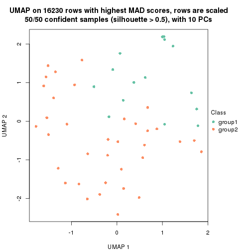
dimension_reduction(res, k = 3, method = "UMAP")
dimension_reduction(res, k = 4, method = "UMAP")
dimension_reduction(res, k = 5, method = "UMAP")

dimension_reduction(res, k = 6, method = "UMAP")
Following heatmap shows how subgroups are split when increasing k:
collect_classes(res)
Test correlation between subgroups and known annotations. If the known annotation is numeric, one-way ANOVA test is applied, and if the known annotation is discrete, chi-squared contingency table test is applied.
test_to_known_factors(res)
#> n age(p) gender(p) tissue(p) k
#> MAD:kmeans 50 0.8044 0.576 8.89e-03 2
#> MAD:kmeans 33 0.0904 0.246 6.83e-08 3
#> MAD:kmeans 46 0.0430 0.393 5.67e-10 4
#> MAD:kmeans 39 0.0408 0.568 6.97e-08 5
#> MAD:kmeans 44 0.1118 0.457 2.32e-08 6
If matrix rows can be associated to genes, consider to use functional_enrichment(res,
...) to perform function enrichment for the signature genes. See this vignette for more detailed explanations.
The object with results only for a single top-value method and a single partition method can be extracted as:
res = res_list["MAD", "skmeans"]
# you can also extract it by
# res = res_list["MAD:skmeans"]
A summary of res and all the functions that can be applied to it:
res
#> A 'ConsensusPartition' object with k = 2, 3, 4, 5, 6.
#> On a matrix with 16230 rows and 50 columns.
#> Top rows (1000, 2000, 3000, 4000, 5000) are extracted by 'MAD' method.
#> Subgroups are detected by 'skmeans' method.
#> Performed in total 1250 partitions by row resampling.
#> Best k for subgroups seems to be 2.
#>
#> Following methods can be applied to this 'ConsensusPartition' object:
#> [1] "cola_report" "collect_classes" "collect_plots"
#> [4] "collect_stats" "colnames" "compare_signatures"
#> [7] "consensus_heatmap" "dimension_reduction" "functional_enrichment"
#> [10] "get_anno_col" "get_anno" "get_classes"
#> [13] "get_consensus" "get_matrix" "get_membership"
#> [16] "get_param" "get_signatures" "get_stats"
#> [19] "is_best_k" "is_stable_k" "membership_heatmap"
#> [22] "ncol" "nrow" "plot_ecdf"
#> [25] "rownames" "select_partition_number" "show"
#> [28] "suggest_best_k" "test_to_known_factors"
collect_plots() function collects all the plots made from res for all k (number of partitions)
into one single page to provide an easy and fast comparison between different k.
collect_plots(res)
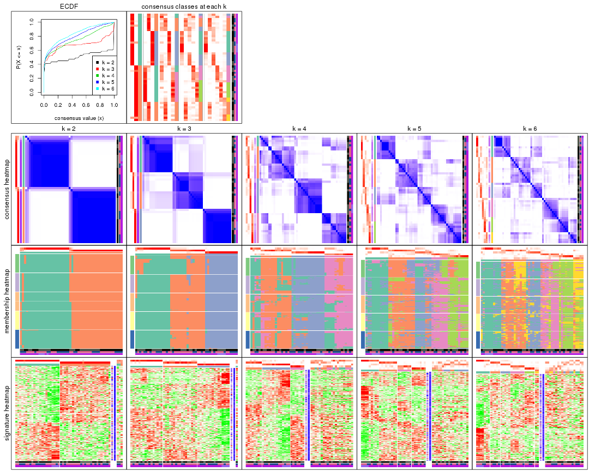
The plots are:
k and the heatmap of
predicted classes for each k.k.k.k.All the plots in panels can be made by individual functions and they are plotted later in this section.
select_partition_number() produces several plots showing different
statistics for choosing “optimized” k. There are following statistics:
k;k, the area increased is defined as \(A_k - A_{k-1}\).The detailed explanations of these statistics can be found in the cola vignette.
Generally speaking, lower PAC score, higher mean silhouette score or higher
concordance corresponds to better partition. Rand index and Jaccard index
measure how similar the current partition is compared to partition with k-1.
If they are too similar, we won't accept k is better than k-1.
select_partition_number(res)
The numeric values for all these statistics can be obtained by get_stats().
get_stats(res)
#> k 1-PAC mean_silhouette concordance area_increased Rand Jaccard
#> 2 2 0.924 0.911 0.968 0.5091 0.491 0.491
#> 3 3 0.779 0.894 0.935 0.3315 0.712 0.475
#> 4 4 0.625 0.549 0.774 0.1169 0.936 0.804
#> 5 5 0.624 0.521 0.725 0.0636 0.871 0.560
#> 6 6 0.636 0.461 0.679 0.0413 0.906 0.580
suggest_best_k() suggests the best \(k\) based on these statistics. The rules are as follows:
suggest_best_k(res)
#> [1] 2
Following shows the table of the partitions (You need to click the show/hide
code output link to see it). The membership matrix (columns with name p*)
is inferred by
clue::cl_consensus()
function with the SE method. Basically the value in the membership matrix
represents the probability to belong to a certain group. The finall class
label for an item is determined with the group with highest probability it
belongs to.
In get_classes() function, the entropy is calculated from the membership
matrix and the silhouette score is calculated from the consensus matrix.
cbind(get_classes(res, k = 2), get_membership(res, k = 2))
#> class entropy silhouette p1 p2
#> GSM615919 2 0.0000 0.9704 0.000 1.000
#> GSM615921 2 0.0000 0.9704 0.000 1.000
#> GSM615922 1 0.0000 0.9571 1.000 0.000
#> GSM615925 2 0.0376 0.9674 0.004 0.996
#> GSM615926 1 0.0000 0.9571 1.000 0.000
#> GSM615933 2 0.0000 0.9704 0.000 1.000
#> GSM615939 1 0.0376 0.9555 0.996 0.004
#> GSM615941 1 0.0000 0.9571 1.000 0.000
#> GSM615944 1 0.0000 0.9571 1.000 0.000
#> GSM615945 2 0.0000 0.9704 0.000 1.000
#> GSM615947 1 0.4690 0.8623 0.900 0.100
#> GSM615948 1 0.0000 0.9571 1.000 0.000
#> GSM615951 1 0.0000 0.9571 1.000 0.000
#> GSM615918 2 0.0376 0.9674 0.004 0.996
#> GSM615927 2 0.0000 0.9704 0.000 1.000
#> GSM615929 1 0.0938 0.9487 0.988 0.012
#> GSM615931 2 0.0000 0.9704 0.000 1.000
#> GSM615937 2 0.0000 0.9704 0.000 1.000
#> GSM615938 2 0.0000 0.9704 0.000 1.000
#> GSM615940 1 0.0376 0.9555 0.996 0.004
#> GSM615946 2 0.0000 0.9704 0.000 1.000
#> GSM615952 1 0.0000 0.9571 1.000 0.000
#> GSM615953 2 0.0000 0.9704 0.000 1.000
#> GSM615955 1 0.0000 0.9571 1.000 0.000
#> GSM721722 1 0.0000 0.9571 1.000 0.000
#> GSM721723 2 0.0000 0.9704 0.000 1.000
#> GSM721724 1 0.0376 0.9555 0.996 0.004
#> GSM615917 2 0.0376 0.9674 0.004 0.996
#> GSM615920 1 0.9909 0.1757 0.556 0.444
#> GSM615923 2 0.0000 0.9704 0.000 1.000
#> GSM615928 2 0.0000 0.9704 0.000 1.000
#> GSM615934 1 0.0000 0.9571 1.000 0.000
#> GSM615950 2 0.0000 0.9704 0.000 1.000
#> GSM615954 2 0.0000 0.9704 0.000 1.000
#> GSM615956 1 0.9358 0.4395 0.648 0.352
#> GSM615958 1 0.0000 0.9571 1.000 0.000
#> GSM615924 2 0.0000 0.9704 0.000 1.000
#> GSM615930 2 0.0000 0.9704 0.000 1.000
#> GSM615932 2 0.0000 0.9704 0.000 1.000
#> GSM615935 2 0.0000 0.9704 0.000 1.000
#> GSM615936 1 0.0376 0.9555 0.996 0.004
#> GSM615942 1 0.0000 0.9571 1.000 0.000
#> GSM615943 2 0.0000 0.9704 0.000 1.000
#> GSM615949 1 0.0376 0.9555 0.996 0.004
#> GSM615957 2 0.9996 -0.0226 0.488 0.512
#> GSM721720 2 0.0000 0.9704 0.000 1.000
#> GSM721721 2 0.6973 0.7444 0.188 0.812
#> GSM615959 1 0.0000 0.9571 1.000 0.000
#> GSM615960 1 0.0000 0.9571 1.000 0.000
#> GSM615961 1 0.0000 0.9571 1.000 0.000
cbind(get_classes(res, k = 3), get_membership(res, k = 3))
#> class entropy silhouette p1 p2 p3
#> GSM615919 1 0.6280 0.316 0.540 0.460 0.000
#> GSM615921 2 0.4504 0.850 0.196 0.804 0.000
#> GSM615922 3 0.0000 0.985 0.000 0.000 1.000
#> GSM615925 1 0.1643 0.915 0.956 0.044 0.000
#> GSM615926 3 0.0000 0.985 0.000 0.000 1.000
#> GSM615933 1 0.0747 0.925 0.984 0.016 0.000
#> GSM615939 2 0.0000 0.866 0.000 1.000 0.000
#> GSM615941 3 0.0237 0.983 0.000 0.004 0.996
#> GSM615944 3 0.0000 0.985 0.000 0.000 1.000
#> GSM615945 1 0.0000 0.928 1.000 0.000 0.000
#> GSM615947 2 0.1643 0.871 0.044 0.956 0.000
#> GSM615948 3 0.0424 0.980 0.000 0.008 0.992
#> GSM615951 3 0.0000 0.985 0.000 0.000 1.000
#> GSM615918 1 0.1643 0.915 0.956 0.044 0.000
#> GSM615927 1 0.0000 0.928 1.000 0.000 0.000
#> GSM615929 2 0.6372 0.683 0.068 0.756 0.176
#> GSM615931 1 0.0000 0.928 1.000 0.000 0.000
#> GSM615937 1 0.0000 0.928 1.000 0.000 0.000
#> GSM615938 2 0.4178 0.865 0.172 0.828 0.000
#> GSM615940 2 0.0000 0.866 0.000 1.000 0.000
#> GSM615946 2 0.0000 0.866 0.000 1.000 0.000
#> GSM615952 3 0.0237 0.983 0.000 0.004 0.996
#> GSM615953 2 0.4178 0.865 0.172 0.828 0.000
#> GSM615955 3 0.0000 0.985 0.000 0.000 1.000
#> GSM721722 3 0.0000 0.985 0.000 0.000 1.000
#> GSM721723 2 0.4346 0.858 0.184 0.816 0.000
#> GSM721724 2 0.0000 0.866 0.000 1.000 0.000
#> GSM615917 1 0.1643 0.915 0.956 0.044 0.000
#> GSM615920 3 0.2165 0.924 0.064 0.000 0.936
#> GSM615923 1 0.0000 0.928 1.000 0.000 0.000
#> GSM615928 1 0.4178 0.814 0.828 0.172 0.000
#> GSM615934 3 0.3686 0.846 0.000 0.140 0.860
#> GSM615950 1 0.0000 0.928 1.000 0.000 0.000
#> GSM615954 1 0.0000 0.928 1.000 0.000 0.000
#> GSM615956 2 0.0000 0.866 0.000 1.000 0.000
#> GSM615958 3 0.0000 0.985 0.000 0.000 1.000
#> GSM615924 1 0.3412 0.858 0.876 0.124 0.000
#> GSM615930 1 0.0000 0.928 1.000 0.000 0.000
#> GSM615932 2 0.4121 0.866 0.168 0.832 0.000
#> GSM615935 2 0.4121 0.866 0.168 0.832 0.000
#> GSM615936 2 0.2066 0.855 0.000 0.940 0.060
#> GSM615942 3 0.0237 0.983 0.000 0.004 0.996
#> GSM615943 1 0.0000 0.928 1.000 0.000 0.000
#> GSM615949 2 0.3941 0.755 0.000 0.844 0.156
#> GSM615957 2 0.4121 0.866 0.168 0.832 0.000
#> GSM721720 2 0.4931 0.813 0.232 0.768 0.000
#> GSM721721 1 0.4178 0.814 0.828 0.172 0.000
#> GSM615959 3 0.0000 0.985 0.000 0.000 1.000
#> GSM615960 3 0.0000 0.985 0.000 0.000 1.000
#> GSM615961 3 0.0000 0.985 0.000 0.000 1.000
cbind(get_classes(res, k = 4), get_membership(res, k = 4))
#> class entropy silhouette p1 p2 p3 p4
#> GSM615919 1 0.5434 0.496 0.740 0.128 0.000 0.132
#> GSM615921 2 0.5184 0.295 0.304 0.672 0.000 0.024
#> GSM615922 3 0.3978 0.810 0.192 0.012 0.796 0.000
#> GSM615925 4 0.4907 0.315 0.420 0.000 0.000 0.580
#> GSM615926 3 0.1211 0.856 0.040 0.000 0.960 0.000
#> GSM615933 4 0.1004 0.634 0.024 0.004 0.000 0.972
#> GSM615939 2 0.4605 0.458 0.336 0.664 0.000 0.000
#> GSM615941 3 0.4907 0.796 0.176 0.060 0.764 0.000
#> GSM615944 3 0.0592 0.858 0.016 0.000 0.984 0.000
#> GSM615945 4 0.0376 0.638 0.004 0.004 0.000 0.992
#> GSM615947 2 0.2469 0.593 0.108 0.892 0.000 0.000
#> GSM615948 3 0.5356 0.772 0.200 0.072 0.728 0.000
#> GSM615951 3 0.3966 0.829 0.088 0.072 0.840 0.000
#> GSM615918 4 0.4925 0.307 0.428 0.000 0.000 0.572
#> GSM615927 4 0.4817 0.352 0.388 0.000 0.000 0.612
#> GSM615929 1 0.2627 0.531 0.920 0.020 0.024 0.036
#> GSM615931 4 0.0469 0.637 0.012 0.000 0.000 0.988
#> GSM615937 4 0.5446 0.445 0.044 0.276 0.000 0.680
#> GSM615938 2 0.3806 0.563 0.020 0.824 0.000 0.156
#> GSM615940 2 0.5161 0.251 0.476 0.520 0.004 0.000
#> GSM615946 2 0.4428 0.508 0.276 0.720 0.000 0.004
#> GSM615952 3 0.4168 0.821 0.080 0.092 0.828 0.000
#> GSM615953 2 0.2611 0.608 0.008 0.896 0.000 0.096
#> GSM615955 3 0.0336 0.857 0.008 0.000 0.992 0.000
#> GSM721722 3 0.0707 0.858 0.020 0.000 0.980 0.000
#> GSM721723 2 0.6083 0.263 0.056 0.584 0.000 0.360
#> GSM721724 2 0.4661 0.446 0.348 0.652 0.000 0.000
#> GSM615917 4 0.4925 0.307 0.428 0.000 0.000 0.572
#> GSM615920 3 0.5062 0.481 0.284 0.000 0.692 0.024
#> GSM615923 4 0.5267 0.560 0.184 0.076 0.000 0.740
#> GSM615928 1 0.4957 0.274 0.668 0.012 0.000 0.320
#> GSM615934 3 0.5888 0.470 0.424 0.036 0.540 0.000
#> GSM615950 4 0.5471 0.455 0.048 0.268 0.000 0.684
#> GSM615954 4 0.4418 0.537 0.032 0.184 0.000 0.784
#> GSM615956 2 0.4222 0.506 0.272 0.728 0.000 0.000
#> GSM615958 3 0.0336 0.854 0.008 0.000 0.992 0.000
#> GSM615924 4 0.4972 0.242 0.456 0.000 0.000 0.544
#> GSM615930 4 0.0000 0.637 0.000 0.000 0.000 1.000
#> GSM615932 2 0.2918 0.594 0.008 0.876 0.000 0.116
#> GSM615935 2 0.1890 0.615 0.008 0.936 0.000 0.056
#> GSM615936 2 0.5888 0.283 0.424 0.540 0.036 0.000
#> GSM615942 3 0.5747 0.752 0.196 0.100 0.704 0.000
#> GSM615943 4 0.2011 0.613 0.000 0.080 0.000 0.920
#> GSM615949 1 0.5570 -0.310 0.540 0.440 0.020 0.000
#> GSM615957 2 0.0927 0.613 0.008 0.976 0.000 0.016
#> GSM721720 2 0.6214 0.155 0.056 0.536 0.000 0.408
#> GSM721721 1 0.4318 0.466 0.776 0.012 0.004 0.208
#> GSM615959 3 0.0336 0.854 0.008 0.000 0.992 0.000
#> GSM615960 3 0.0336 0.854 0.008 0.000 0.992 0.000
#> GSM615961 3 0.0336 0.854 0.008 0.000 0.992 0.000
cbind(get_classes(res, k = 5), get_membership(res, k = 5))
#> class entropy silhouette p1 p2 p3 p4 p5
#> GSM615919 4 0.2418 0.6179 0.000 0.044 0.020 0.912 0.024
#> GSM615921 2 0.4493 0.5404 0.000 0.700 0.012 0.272 0.016
#> GSM615922 3 0.4118 0.3275 0.336 0.000 0.660 0.004 0.000
#> GSM615925 4 0.4390 0.5808 0.000 0.000 0.004 0.568 0.428
#> GSM615926 1 0.3741 0.6314 0.732 0.000 0.264 0.004 0.000
#> GSM615933 5 0.2078 0.6135 0.000 0.036 0.004 0.036 0.924
#> GSM615939 2 0.5930 0.4993 0.000 0.596 0.196 0.208 0.000
#> GSM615941 3 0.3857 0.3859 0.312 0.000 0.688 0.000 0.000
#> GSM615944 1 0.3661 0.6346 0.724 0.000 0.276 0.000 0.000
#> GSM615945 5 0.0671 0.6514 0.000 0.004 0.000 0.016 0.980
#> GSM615947 2 0.3752 0.6490 0.000 0.812 0.124 0.064 0.000
#> GSM615948 3 0.4070 0.4716 0.256 0.012 0.728 0.004 0.000
#> GSM615951 1 0.5220 0.3023 0.516 0.044 0.440 0.000 0.000
#> GSM615918 4 0.4397 0.5743 0.000 0.000 0.004 0.564 0.432
#> GSM615927 5 0.4341 -0.3380 0.000 0.000 0.004 0.404 0.592
#> GSM615929 4 0.5366 0.4451 0.008 0.044 0.236 0.688 0.024
#> GSM615931 5 0.1059 0.6437 0.000 0.004 0.008 0.020 0.968
#> GSM615937 5 0.6780 0.4738 0.000 0.248 0.064 0.116 0.572
#> GSM615938 2 0.2721 0.6820 0.000 0.892 0.028 0.012 0.068
#> GSM615940 3 0.6284 0.1022 0.000 0.288 0.524 0.188 0.000
#> GSM615946 2 0.5246 0.5876 0.000 0.692 0.124 0.180 0.004
#> GSM615952 1 0.5594 0.2724 0.492 0.060 0.444 0.004 0.000
#> GSM615953 2 0.4121 0.6763 0.000 0.812 0.088 0.020 0.080
#> GSM615955 1 0.2852 0.7091 0.828 0.000 0.172 0.000 0.000
#> GSM721722 1 0.3242 0.6915 0.784 0.000 0.216 0.000 0.000
#> GSM721723 2 0.7077 0.2763 0.000 0.560 0.084 0.140 0.216
#> GSM721724 2 0.6132 0.4660 0.000 0.564 0.224 0.212 0.000
#> GSM615917 4 0.4350 0.5989 0.000 0.000 0.004 0.588 0.408
#> GSM615920 1 0.4605 0.5159 0.732 0.000 0.040 0.216 0.012
#> GSM615923 5 0.7017 0.2374 0.000 0.108 0.056 0.392 0.444
#> GSM615928 4 0.3723 0.6593 0.000 0.000 0.044 0.804 0.152
#> GSM615934 3 0.5045 0.5102 0.172 0.000 0.712 0.112 0.004
#> GSM615950 5 0.6553 0.5002 0.000 0.232 0.060 0.108 0.600
#> GSM615954 5 0.5070 0.6224 0.004 0.132 0.052 0.056 0.756
#> GSM615956 2 0.5074 0.5966 0.000 0.700 0.132 0.168 0.000
#> GSM615958 1 0.0000 0.7322 1.000 0.000 0.000 0.000 0.000
#> GSM615924 4 0.4232 0.6463 0.000 0.000 0.012 0.676 0.312
#> GSM615930 5 0.0566 0.6530 0.000 0.004 0.000 0.012 0.984
#> GSM615932 2 0.1991 0.6917 0.000 0.916 0.004 0.004 0.076
#> GSM615935 2 0.2879 0.6779 0.000 0.868 0.032 0.000 0.100
#> GSM615936 3 0.6341 0.0982 0.020 0.376 0.520 0.076 0.008
#> GSM615942 3 0.3970 0.4763 0.236 0.020 0.744 0.000 0.000
#> GSM615943 5 0.2079 0.6613 0.000 0.064 0.020 0.000 0.916
#> GSM615949 3 0.4916 0.4760 0.000 0.124 0.716 0.160 0.000
#> GSM615957 2 0.2824 0.6795 0.000 0.888 0.068 0.028 0.016
#> GSM721720 2 0.7494 0.0320 0.000 0.464 0.084 0.144 0.308
#> GSM721721 4 0.2881 0.6245 0.004 0.008 0.060 0.888 0.040
#> GSM615959 1 0.0000 0.7322 1.000 0.000 0.000 0.000 0.000
#> GSM615960 1 0.0000 0.7322 1.000 0.000 0.000 0.000 0.000
#> GSM615961 1 0.0000 0.7322 1.000 0.000 0.000 0.000 0.000
cbind(get_classes(res, k = 6), get_membership(res, k = 6))
#> class entropy silhouette p1 p2 p3 p4 p5 p6
#> GSM615919 4 0.335 0.6205 0.004 0.124 0.004 0.824 0.000 0.044
#> GSM615921 2 0.644 0.1559 0.000 0.412 0.008 0.212 0.012 0.356
#> GSM615922 3 0.424 0.6011 0.180 0.000 0.752 0.012 0.008 0.048
#> GSM615925 4 0.339 0.5609 0.000 0.000 0.000 0.704 0.296 0.000
#> GSM615926 1 0.516 0.4414 0.604 0.000 0.324 0.020 0.008 0.044
#> GSM615933 5 0.265 0.6953 0.000 0.052 0.000 0.068 0.876 0.004
#> GSM615939 2 0.261 0.5702 0.000 0.872 0.080 0.048 0.000 0.000
#> GSM615941 3 0.342 0.6197 0.180 0.012 0.792 0.000 0.000 0.016
#> GSM615944 1 0.458 0.4770 0.616 0.000 0.344 0.004 0.004 0.032
#> GSM615945 5 0.079 0.7274 0.000 0.000 0.000 0.032 0.968 0.000
#> GSM615947 2 0.348 0.5557 0.000 0.808 0.044 0.008 0.000 0.140
#> GSM615948 3 0.348 0.6652 0.112 0.028 0.828 0.004 0.000 0.028
#> GSM615951 1 0.644 -0.0202 0.424 0.032 0.396 0.008 0.000 0.140
#> GSM615918 4 0.362 0.5388 0.000 0.000 0.000 0.680 0.316 0.004
#> GSM615927 5 0.399 -0.2246 0.000 0.000 0.000 0.468 0.528 0.004
#> GSM615929 4 0.617 0.4665 0.000 0.160 0.164 0.612 0.020 0.044
#> GSM615931 5 0.191 0.7246 0.000 0.000 0.016 0.056 0.920 0.008
#> GSM615937 6 0.456 0.4926 0.000 0.000 0.000 0.040 0.392 0.568
#> GSM615938 2 0.558 0.2807 0.000 0.556 0.016 0.004 0.092 0.332
#> GSM615940 2 0.674 0.2464 0.000 0.472 0.328 0.088 0.008 0.104
#> GSM615946 2 0.302 0.5740 0.000 0.868 0.024 0.048 0.004 0.056
#> GSM615952 3 0.682 -0.0439 0.344 0.040 0.408 0.008 0.000 0.200
#> GSM615953 2 0.663 0.3180 0.000 0.464 0.036 0.020 0.132 0.348
#> GSM615955 1 0.357 0.6150 0.768 0.000 0.208 0.004 0.004 0.016
#> GSM721722 1 0.393 0.5196 0.656 0.000 0.332 0.000 0.004 0.008
#> GSM721723 6 0.494 0.5908 0.000 0.092 0.000 0.040 0.160 0.708
#> GSM721724 2 0.477 0.5380 0.000 0.720 0.164 0.080 0.000 0.036
#> GSM615917 4 0.340 0.5838 0.000 0.000 0.000 0.724 0.272 0.004
#> GSM615920 1 0.532 0.5170 0.712 0.012 0.064 0.160 0.020 0.032
#> GSM615923 4 0.629 -0.1494 0.000 0.000 0.008 0.392 0.280 0.320
#> GSM615928 4 0.392 0.6407 0.000 0.032 0.020 0.820 0.064 0.064
#> GSM615934 3 0.495 0.6105 0.076 0.040 0.768 0.048 0.012 0.056
#> GSM615950 6 0.459 0.3702 0.000 0.000 0.000 0.036 0.476 0.488
#> GSM615954 5 0.454 0.0822 0.004 0.012 0.004 0.016 0.640 0.324
#> GSM615956 2 0.390 0.5531 0.000 0.780 0.020 0.044 0.000 0.156
#> GSM615958 1 0.000 0.7015 1.000 0.000 0.000 0.000 0.000 0.000
#> GSM615924 4 0.353 0.6394 0.000 0.032 0.000 0.792 0.168 0.008
#> GSM615930 5 0.172 0.7276 0.000 0.000 0.000 0.060 0.924 0.016
#> GSM615932 2 0.547 0.3452 0.000 0.560 0.012 0.008 0.076 0.344
#> GSM615935 2 0.624 0.3718 0.000 0.508 0.028 0.016 0.108 0.340
#> GSM615936 2 0.708 0.1475 0.028 0.420 0.340 0.032 0.004 0.176
#> GSM615942 3 0.378 0.6354 0.140 0.012 0.796 0.004 0.000 0.048
#> GSM615943 5 0.170 0.6215 0.000 0.004 0.000 0.000 0.916 0.080
#> GSM615949 3 0.618 0.2807 0.000 0.228 0.592 0.080 0.008 0.092
#> GSM615957 6 0.439 -0.2634 0.000 0.364 0.020 0.008 0.000 0.608
#> GSM721720 6 0.499 0.6303 0.000 0.064 0.000 0.040 0.212 0.684
#> GSM721721 4 0.394 0.5970 0.000 0.012 0.052 0.800 0.016 0.120
#> GSM615959 1 0.000 0.7015 1.000 0.000 0.000 0.000 0.000 0.000
#> GSM615960 1 0.000 0.7015 1.000 0.000 0.000 0.000 0.000 0.000
#> GSM615961 1 0.000 0.7015 1.000 0.000 0.000 0.000 0.000 0.000
Heatmaps for the consensus matrix. It visualizes the probability of two samples to be in a same group.
consensus_heatmap(res, k = 2)
consensus_heatmap(res, k = 3)
consensus_heatmap(res, k = 4)
consensus_heatmap(res, k = 5)
consensus_heatmap(res, k = 6)
Heatmaps for the membership of samples in all partitions to see how consistent they are:
membership_heatmap(res, k = 2)
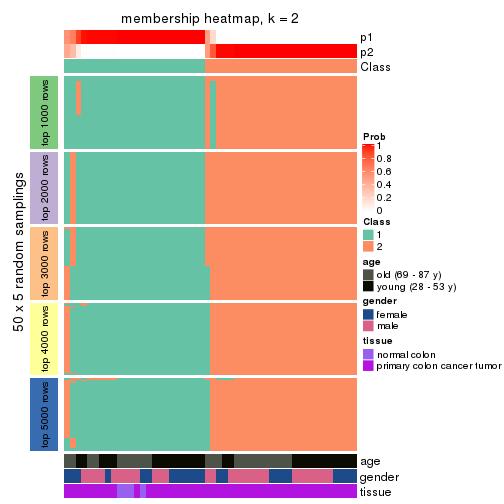
membership_heatmap(res, k = 3)
membership_heatmap(res, k = 4)
membership_heatmap(res, k = 5)
membership_heatmap(res, k = 6)
As soon as we have had the classes for columns, we can look for signatures which are significantly different between classes which can be candidate marks for certain classes. Following are the heatmaps for signatures.
Signature heatmaps where rows are scaled:
get_signatures(res, k = 2)
get_signatures(res, k = 3)
get_signatures(res, k = 4)
get_signatures(res, k = 5)
get_signatures(res, k = 6)
Signature heatmaps where rows are not scaled:
get_signatures(res, k = 2, scale_rows = FALSE)
get_signatures(res, k = 3, scale_rows = FALSE)
get_signatures(res, k = 4, scale_rows = FALSE)
get_signatures(res, k = 5, scale_rows = FALSE)
get_signatures(res, k = 6, scale_rows = FALSE)
Compare the overlap of signatures from different k:
compare_signatures(res)
get_signature() returns a data frame invisibly. TO get the list of signatures, the function
call should be assigned to a variable explicitly. In following code, if plot argument is set
to FALSE, no heatmap is plotted while only the differential analysis is performed.
# code only for demonstration
tb = get_signature(res, k = ..., plot = FALSE)
An example of the output of tb is:
#> which_row fdr mean_1 mean_2 scaled_mean_1 scaled_mean_2 km
#> 1 38 0.042760348 8.373488 9.131774 -0.5533452 0.5164555 1
#> 2 40 0.018707592 7.106213 8.469186 -0.6173731 0.5762149 1
#> 3 55 0.019134737 10.221463 11.207825 -0.6159697 0.5749050 1
#> 4 59 0.006059896 5.921854 7.869574 -0.6899429 0.6439467 1
#> 5 60 0.018055526 8.928898 10.211722 -0.6204761 0.5791110 1
#> 6 98 0.009384629 15.714769 14.887706 0.6635654 -0.6193277 2
...
The columns in tb are:
which_row: row indices corresponding to the input matrix.fdr: FDR for the differential test. mean_x: The mean value in group x.scaled_mean_x: The mean value in group x after rows are scaled.km: Row groups if k-means clustering is applied to rows.UMAP plot which shows how samples are separated.
dimension_reduction(res, k = 2, method = "UMAP")
dimension_reduction(res, k = 3, method = "UMAP")
dimension_reduction(res, k = 4, method = "UMAP")
dimension_reduction(res, k = 5, method = "UMAP")
dimension_reduction(res, k = 6, method = "UMAP")
Following heatmap shows how subgroups are split when increasing k:
collect_classes(res)
Test correlation between subgroups and known annotations. If the known annotation is numeric, one-way ANOVA test is applied, and if the known annotation is discrete, chi-squared contingency table test is applied.
test_to_known_factors(res)
#> n age(p) gender(p) tissue(p) k
#> MAD:skmeans 47 0.610 0.935 0.08816 2
#> MAD:skmeans 49 0.654 0.129 0.01120 3
#> MAD:skmeans 30 0.618 0.448 0.15275 4
#> MAD:skmeans 33 0.871 0.668 0.01635 5
#> MAD:skmeans 31 0.608 0.347 0.00761 6
If matrix rows can be associated to genes, consider to use functional_enrichment(res,
...) to perform function enrichment for the signature genes. See this vignette for more detailed explanations.
The object with results only for a single top-value method and a single partition method can be extracted as:
res = res_list["MAD", "pam"]
# you can also extract it by
# res = res_list["MAD:pam"]
A summary of res and all the functions that can be applied to it:
res
#> A 'ConsensusPartition' object with k = 2, 3, 4, 5, 6.
#> On a matrix with 16230 rows and 50 columns.
#> Top rows (1000, 2000, 3000, 4000, 5000) are extracted by 'MAD' method.
#> Subgroups are detected by 'pam' method.
#> Performed in total 1250 partitions by row resampling.
#> Best k for subgroups seems to be 4.
#>
#> Following methods can be applied to this 'ConsensusPartition' object:
#> [1] "cola_report" "collect_classes" "collect_plots"
#> [4] "collect_stats" "colnames" "compare_signatures"
#> [7] "consensus_heatmap" "dimension_reduction" "functional_enrichment"
#> [10] "get_anno_col" "get_anno" "get_classes"
#> [13] "get_consensus" "get_matrix" "get_membership"
#> [16] "get_param" "get_signatures" "get_stats"
#> [19] "is_best_k" "is_stable_k" "membership_heatmap"
#> [22] "ncol" "nrow" "plot_ecdf"
#> [25] "rownames" "select_partition_number" "show"
#> [28] "suggest_best_k" "test_to_known_factors"
collect_plots() function collects all the plots made from res for all k (number of partitions)
into one single page to provide an easy and fast comparison between different k.
collect_plots(res)
The plots are:
k and the heatmap of
predicted classes for each k.k.k.k.All the plots in panels can be made by individual functions and they are plotted later in this section.
select_partition_number() produces several plots showing different
statistics for choosing “optimized” k. There are following statistics:
k;k, the area increased is defined as \(A_k - A_{k-1}\).The detailed explanations of these statistics can be found in the cola vignette.
Generally speaking, lower PAC score, higher mean silhouette score or higher
concordance corresponds to better partition. Rand index and Jaccard index
measure how similar the current partition is compared to partition with k-1.
If they are too similar, we won't accept k is better than k-1.
select_partition_number(res)
The numeric values for all these statistics can be obtained by get_stats().
get_stats(res)
#> k 1-PAC mean_silhouette concordance area_increased Rand Jaccard
#> 2 2 0.251 0.767 0.818 0.2897 0.850 0.850
#> 3 3 0.562 0.799 0.900 1.0134 0.571 0.496
#> 4 4 0.737 0.784 0.901 0.2276 0.718 0.426
#> 5 5 0.691 0.641 0.849 0.0628 0.916 0.720
#> 6 6 0.724 0.646 0.824 0.0531 0.939 0.753
suggest_best_k() suggests the best \(k\) based on these statistics. The rules are as follows:
suggest_best_k(res)
#> [1] 4
Following shows the table of the partitions (You need to click the show/hide
code output link to see it). The membership matrix (columns with name p*)
is inferred by
clue::cl_consensus()
function with the SE method. Basically the value in the membership matrix
represents the probability to belong to a certain group. The finall class
label for an item is determined with the group with highest probability it
belongs to.
In get_classes() function, the entropy is calculated from the membership
matrix and the silhouette score is calculated from the consensus matrix.
cbind(get_classes(res, k = 2), get_membership(res, k = 2))
#> class entropy silhouette p1 p2
#> GSM615919 2 0.8555 0.782 0.280 0.720
#> GSM615921 2 0.9635 0.757 0.388 0.612
#> GSM615922 2 0.0000 0.721 0.000 1.000
#> GSM615925 2 0.8327 0.746 0.264 0.736
#> GSM615926 2 0.0000 0.721 0.000 1.000
#> GSM615933 2 0.9635 0.757 0.388 0.612
#> GSM615939 2 0.5059 0.758 0.112 0.888
#> GSM615941 2 0.0000 0.721 0.000 1.000
#> GSM615944 2 0.1184 0.705 0.016 0.984
#> GSM615945 2 0.9608 0.758 0.384 0.616
#> GSM615947 2 0.5408 0.760 0.124 0.876
#> GSM615948 2 0.0000 0.721 0.000 1.000
#> GSM615951 2 0.0000 0.721 0.000 1.000
#> GSM615918 2 0.7950 0.750 0.240 0.760
#> GSM615927 2 0.9608 0.758 0.384 0.616
#> GSM615929 2 0.0000 0.721 0.000 1.000
#> GSM615931 2 0.9209 0.760 0.336 0.664
#> GSM615937 2 0.9608 0.758 0.384 0.616
#> GSM615938 2 0.9635 0.757 0.388 0.612
#> GSM615940 2 0.0672 0.726 0.008 0.992
#> GSM615946 2 0.5408 0.760 0.124 0.876
#> GSM615952 2 0.5408 0.760 0.124 0.876
#> GSM615953 2 0.6438 0.768 0.164 0.836
#> GSM615955 2 0.1843 0.690 0.028 0.972
#> GSM721722 2 0.1843 0.690 0.028 0.972
#> GSM721723 2 0.8955 0.773 0.312 0.688
#> GSM721724 2 0.5408 0.760 0.124 0.876
#> GSM615917 2 0.9608 0.758 0.384 0.616
#> GSM615920 2 0.0376 0.723 0.004 0.996
#> GSM615923 2 0.8267 0.747 0.260 0.740
#> GSM615928 2 0.4815 0.749 0.104 0.896
#> GSM615934 2 0.0000 0.721 0.000 1.000
#> GSM615950 2 0.9608 0.758 0.384 0.616
#> GSM615954 2 0.9608 0.759 0.384 0.616
#> GSM615956 2 0.5408 0.760 0.124 0.876
#> GSM615958 1 0.9635 1.000 0.612 0.388
#> GSM615924 2 0.8443 0.749 0.272 0.728
#> GSM615930 2 0.9635 0.757 0.388 0.612
#> GSM615932 2 0.9635 0.757 0.388 0.612
#> GSM615935 2 0.9635 0.757 0.388 0.612
#> GSM615936 2 0.5408 0.761 0.124 0.876
#> GSM615942 2 0.0000 0.721 0.000 1.000
#> GSM615943 2 0.9635 0.757 0.388 0.612
#> GSM615949 2 0.0000 0.721 0.000 1.000
#> GSM615957 2 0.8081 0.778 0.248 0.752
#> GSM721720 2 0.8443 0.778 0.272 0.728
#> GSM721721 2 0.7299 0.755 0.204 0.796
#> GSM615959 1 0.9635 1.000 0.612 0.388
#> GSM615960 1 0.9635 1.000 0.612 0.388
#> GSM615961 1 0.9635 1.000 0.612 0.388
cbind(get_classes(res, k = 3), get_membership(res, k = 3))
#> class entropy silhouette p1 p2 p3
#> GSM615919 3 0.6299 -0.141 0.000 0.476 0.524
#> GSM615921 2 0.1860 0.827 0.000 0.948 0.052
#> GSM615922 3 0.0000 0.894 0.000 0.000 1.000
#> GSM615925 3 0.4931 0.703 0.000 0.232 0.768
#> GSM615926 3 0.0000 0.894 0.000 0.000 1.000
#> GSM615933 2 0.0000 0.831 0.000 1.000 0.000
#> GSM615939 2 0.5138 0.738 0.000 0.748 0.252
#> GSM615941 3 0.0000 0.894 0.000 0.000 1.000
#> GSM615944 3 0.3482 0.811 0.128 0.000 0.872
#> GSM615945 2 0.1753 0.832 0.000 0.952 0.048
#> GSM615947 2 0.5810 0.639 0.000 0.664 0.336
#> GSM615948 3 0.0000 0.894 0.000 0.000 1.000
#> GSM615951 3 0.0892 0.884 0.000 0.020 0.980
#> GSM615918 3 0.4178 0.774 0.000 0.172 0.828
#> GSM615927 2 0.1753 0.832 0.000 0.952 0.048
#> GSM615929 3 0.0000 0.894 0.000 0.000 1.000
#> GSM615931 2 0.5859 0.440 0.000 0.656 0.344
#> GSM615937 2 0.1753 0.832 0.000 0.952 0.048
#> GSM615938 2 0.0000 0.831 0.000 1.000 0.000
#> GSM615940 3 0.0592 0.890 0.000 0.012 0.988
#> GSM615946 2 0.4974 0.748 0.000 0.764 0.236
#> GSM615952 2 0.5178 0.742 0.000 0.744 0.256
#> GSM615953 2 0.0747 0.833 0.000 0.984 0.016
#> GSM615955 3 0.3941 0.784 0.156 0.000 0.844
#> GSM721722 3 0.2356 0.857 0.072 0.000 0.928
#> GSM721723 2 0.0747 0.833 0.000 0.984 0.016
#> GSM721724 2 0.5327 0.721 0.000 0.728 0.272
#> GSM615917 2 0.3879 0.771 0.000 0.848 0.152
#> GSM615920 3 0.0237 0.893 0.000 0.004 0.996
#> GSM615923 3 0.4702 0.729 0.000 0.212 0.788
#> GSM615928 3 0.2066 0.869 0.000 0.060 0.940
#> GSM615934 3 0.0000 0.894 0.000 0.000 1.000
#> GSM615950 2 0.5760 0.495 0.000 0.672 0.328
#> GSM615954 2 0.0237 0.832 0.000 0.996 0.004
#> GSM615956 2 0.4974 0.748 0.000 0.764 0.236
#> GSM615958 1 0.0000 1.000 1.000 0.000 0.000
#> GSM615924 3 0.3619 0.821 0.000 0.136 0.864
#> GSM615930 2 0.1643 0.832 0.000 0.956 0.044
#> GSM615932 2 0.0000 0.831 0.000 1.000 0.000
#> GSM615935 2 0.0000 0.831 0.000 1.000 0.000
#> GSM615936 2 0.6079 0.577 0.000 0.612 0.388
#> GSM615942 3 0.0000 0.894 0.000 0.000 1.000
#> GSM615943 2 0.1289 0.834 0.000 0.968 0.032
#> GSM615949 3 0.0000 0.894 0.000 0.000 1.000
#> GSM615957 2 0.1289 0.832 0.000 0.968 0.032
#> GSM721720 2 0.4235 0.787 0.000 0.824 0.176
#> GSM721721 3 0.0747 0.889 0.000 0.016 0.984
#> GSM615959 1 0.0000 1.000 1.000 0.000 0.000
#> GSM615960 1 0.0000 1.000 1.000 0.000 0.000
#> GSM615961 1 0.0000 1.000 1.000 0.000 0.000
cbind(get_classes(res, k = 4), get_membership(res, k = 4))
#> class entropy silhouette p1 p2 p3 p4
#> GSM615919 2 0.6276 0.355 0.000 0.556 0.064 0.380
#> GSM615921 2 0.4981 0.224 0.000 0.536 0.000 0.464
#> GSM615922 3 0.0000 0.926 0.000 0.000 1.000 0.000
#> GSM615925 4 0.1302 0.803 0.000 0.000 0.044 0.956
#> GSM615926 3 0.0000 0.926 0.000 0.000 1.000 0.000
#> GSM615933 4 0.0000 0.813 0.000 0.000 0.000 1.000
#> GSM615939 2 0.1716 0.834 0.000 0.936 0.064 0.000
#> GSM615941 3 0.0000 0.926 0.000 0.000 1.000 0.000
#> GSM615944 3 0.1637 0.884 0.060 0.000 0.940 0.000
#> GSM615945 4 0.0000 0.813 0.000 0.000 0.000 1.000
#> GSM615947 2 0.1716 0.834 0.000 0.936 0.064 0.000
#> GSM615948 3 0.0000 0.926 0.000 0.000 1.000 0.000
#> GSM615951 3 0.0188 0.925 0.000 0.004 0.996 0.000
#> GSM615918 4 0.3688 0.683 0.000 0.000 0.208 0.792
#> GSM615927 4 0.0000 0.813 0.000 0.000 0.000 1.000
#> GSM615929 3 0.2281 0.850 0.000 0.096 0.904 0.000
#> GSM615931 4 0.5039 0.328 0.000 0.004 0.404 0.592
#> GSM615937 4 0.2844 0.784 0.000 0.048 0.052 0.900
#> GSM615938 2 0.1716 0.823 0.000 0.936 0.000 0.064
#> GSM615940 3 0.1867 0.881 0.000 0.072 0.928 0.000
#> GSM615946 2 0.1716 0.834 0.000 0.936 0.064 0.000
#> GSM615952 3 0.4961 0.119 0.000 0.448 0.552 0.000
#> GSM615953 2 0.1867 0.822 0.000 0.928 0.000 0.072
#> GSM615955 3 0.2973 0.814 0.144 0.000 0.856 0.000
#> GSM721722 3 0.0707 0.915 0.020 0.000 0.980 0.000
#> GSM721723 2 0.0188 0.822 0.000 0.996 0.000 0.004
#> GSM721724 2 0.1716 0.834 0.000 0.936 0.064 0.000
#> GSM615917 4 0.0000 0.813 0.000 0.000 0.000 1.000
#> GSM615920 3 0.0000 0.926 0.000 0.000 1.000 0.000
#> GSM615923 3 0.3545 0.752 0.000 0.008 0.828 0.164
#> GSM615928 4 0.5560 0.622 0.000 0.156 0.116 0.728
#> GSM615934 3 0.0000 0.926 0.000 0.000 1.000 0.000
#> GSM615950 4 0.5659 0.390 0.000 0.032 0.368 0.600
#> GSM615954 2 0.3764 0.704 0.000 0.784 0.000 0.216
#> GSM615956 2 0.1716 0.834 0.000 0.936 0.064 0.000
#> GSM615958 1 0.0000 1.000 1.000 0.000 0.000 0.000
#> GSM615924 4 0.5292 0.582 0.000 0.208 0.064 0.728
#> GSM615930 4 0.0188 0.812 0.000 0.004 0.000 0.996
#> GSM615932 2 0.4406 0.588 0.000 0.700 0.000 0.300
#> GSM615935 4 0.3400 0.658 0.000 0.180 0.000 0.820
#> GSM615936 3 0.1474 0.898 0.000 0.052 0.948 0.000
#> GSM615942 3 0.0000 0.926 0.000 0.000 1.000 0.000
#> GSM615943 4 0.0000 0.813 0.000 0.000 0.000 1.000
#> GSM615949 3 0.0000 0.926 0.000 0.000 1.000 0.000
#> GSM615957 2 0.0000 0.821 0.000 1.000 0.000 0.000
#> GSM721720 2 0.2149 0.777 0.000 0.912 0.088 0.000
#> GSM721721 3 0.0000 0.926 0.000 0.000 1.000 0.000
#> GSM615959 1 0.0000 1.000 1.000 0.000 0.000 0.000
#> GSM615960 1 0.0000 1.000 1.000 0.000 0.000 0.000
#> GSM615961 1 0.0000 1.000 1.000 0.000 0.000 0.000
cbind(get_classes(res, k = 5), get_membership(res, k = 5))
#> class entropy silhouette p1 p2 p3 p4 p5
#> GSM615919 2 0.4403 0.24761 0.000 0.608 0.000 0.384 0.008
#> GSM615921 4 0.4980 -0.11646 0.000 0.484 0.000 0.488 0.028
#> GSM615922 3 0.0510 0.92292 0.000 0.016 0.984 0.000 0.000
#> GSM615925 4 0.0671 0.73203 0.000 0.000 0.016 0.980 0.004
#> GSM615926 3 0.0000 0.92341 0.000 0.000 1.000 0.000 0.000
#> GSM615933 4 0.0290 0.73654 0.000 0.008 0.000 0.992 0.000
#> GSM615939 2 0.3752 0.62162 0.000 0.708 0.000 0.000 0.292
#> GSM615941 3 0.0000 0.92341 0.000 0.000 1.000 0.000 0.000
#> GSM615944 3 0.0000 0.92341 0.000 0.000 1.000 0.000 0.000
#> GSM615945 4 0.0290 0.73654 0.000 0.008 0.000 0.992 0.000
#> GSM615947 2 0.3752 0.62162 0.000 0.708 0.000 0.000 0.292
#> GSM615948 3 0.0510 0.92292 0.000 0.016 0.984 0.000 0.000
#> GSM615951 3 0.0609 0.91211 0.000 0.020 0.980 0.000 0.000
#> GSM615918 4 0.3366 0.54100 0.000 0.000 0.212 0.784 0.004
#> GSM615927 4 0.0000 0.73557 0.000 0.000 0.000 1.000 0.000
#> GSM615929 3 0.2077 0.86317 0.000 0.084 0.908 0.008 0.000
#> GSM615931 4 0.6106 0.11138 0.000 0.204 0.228 0.568 0.000
#> GSM615937 5 0.6855 0.22297 0.000 0.248 0.004 0.364 0.384
#> GSM615938 2 0.4891 0.59773 0.000 0.640 0.000 0.044 0.316
#> GSM615940 3 0.2852 0.77891 0.000 0.172 0.828 0.000 0.000
#> GSM615946 2 0.3752 0.62162 0.000 0.708 0.000 0.000 0.292
#> GSM615952 2 0.4242 -0.07518 0.000 0.572 0.428 0.000 0.000
#> GSM615953 2 0.2233 0.43098 0.000 0.904 0.016 0.080 0.000
#> GSM615955 3 0.2179 0.84120 0.112 0.000 0.888 0.000 0.000
#> GSM721722 3 0.0000 0.92341 0.000 0.000 1.000 0.000 0.000
#> GSM721723 5 0.4138 0.46908 0.000 0.384 0.000 0.000 0.616
#> GSM721724 2 0.3752 0.62162 0.000 0.708 0.000 0.000 0.292
#> GSM615917 4 0.0162 0.73538 0.000 0.000 0.000 0.996 0.004
#> GSM615920 3 0.0000 0.92341 0.000 0.000 1.000 0.000 0.000
#> GSM615923 3 0.4499 0.66915 0.000 0.004 0.764 0.136 0.096
#> GSM615928 4 0.4177 0.59561 0.000 0.200 0.036 0.760 0.004
#> GSM615934 3 0.0510 0.92292 0.000 0.016 0.984 0.000 0.000
#> GSM615950 5 0.7668 0.31647 0.000 0.064 0.272 0.236 0.428
#> GSM615954 2 0.3814 0.19728 0.000 0.720 0.000 0.276 0.004
#> GSM615956 2 0.0510 0.47769 0.000 0.984 0.016 0.000 0.000
#> GSM615958 1 0.0000 1.00000 1.000 0.000 0.000 0.000 0.000
#> GSM615924 4 0.3461 0.59347 0.000 0.224 0.000 0.772 0.004
#> GSM615930 4 0.3812 0.58656 0.000 0.092 0.000 0.812 0.096
#> GSM615932 2 0.6776 0.35271 0.000 0.392 0.000 0.316 0.292
#> GSM615935 4 0.3752 0.35429 0.000 0.292 0.000 0.708 0.000
#> GSM615936 3 0.3949 0.48515 0.000 0.332 0.668 0.000 0.000
#> GSM615942 3 0.0162 0.92371 0.000 0.004 0.996 0.000 0.000
#> GSM615943 4 0.0290 0.73654 0.000 0.008 0.000 0.992 0.000
#> GSM615949 3 0.0510 0.92292 0.000 0.016 0.984 0.000 0.000
#> GSM615957 2 0.3857 0.00111 0.000 0.688 0.000 0.000 0.312
#> GSM721720 5 0.4086 0.54634 0.000 0.284 0.012 0.000 0.704
#> GSM721721 3 0.0510 0.92292 0.000 0.016 0.984 0.000 0.000
#> GSM615959 1 0.0000 1.00000 1.000 0.000 0.000 0.000 0.000
#> GSM615960 1 0.0000 1.00000 1.000 0.000 0.000 0.000 0.000
#> GSM615961 1 0.0000 1.00000 1.000 0.000 0.000 0.000 0.000
cbind(get_classes(res, k = 6), get_membership(res, k = 6))
#> class entropy silhouette p1 p2 p3 p4 p5 p6
#> GSM615919 2 0.4273 0.2458 0.000 0.596 0.000 0.380 0.000 0.024
#> GSM615921 4 0.5722 0.2771 0.000 0.336 0.012 0.560 0.056 0.036
#> GSM615922 3 0.0458 0.8963 0.000 0.016 0.984 0.000 0.000 0.000
#> GSM615925 4 0.0547 0.6868 0.000 0.000 0.000 0.980 0.000 0.020
#> GSM615926 3 0.0000 0.8967 0.000 0.000 1.000 0.000 0.000 0.000
#> GSM615933 4 0.1501 0.6831 0.000 0.000 0.000 0.924 0.076 0.000
#> GSM615939 2 0.0000 0.7377 0.000 1.000 0.000 0.000 0.000 0.000
#> GSM615941 3 0.0937 0.8842 0.000 0.000 0.960 0.000 0.000 0.040
#> GSM615944 3 0.0000 0.8967 0.000 0.000 1.000 0.000 0.000 0.000
#> GSM615945 4 0.1610 0.6805 0.000 0.000 0.000 0.916 0.084 0.000
#> GSM615947 2 0.0260 0.7368 0.000 0.992 0.000 0.000 0.000 0.008
#> GSM615948 3 0.0458 0.8963 0.000 0.016 0.984 0.000 0.000 0.000
#> GSM615951 3 0.3351 0.6483 0.000 0.000 0.712 0.000 0.000 0.288
#> GSM615918 4 0.3245 0.5543 0.000 0.004 0.184 0.796 0.000 0.016
#> GSM615927 4 0.1204 0.6877 0.000 0.000 0.000 0.944 0.056 0.000
#> GSM615929 3 0.2665 0.8282 0.000 0.104 0.868 0.016 0.000 0.012
#> GSM615931 4 0.6617 0.1834 0.000 0.000 0.196 0.516 0.076 0.212
#> GSM615937 5 0.3946 0.6282 0.000 0.000 0.004 0.152 0.768 0.076
#> GSM615938 2 0.2058 0.6914 0.000 0.908 0.000 0.000 0.056 0.036
#> GSM615940 3 0.4079 0.7314 0.000 0.136 0.752 0.000 0.000 0.112
#> GSM615946 2 0.0000 0.7377 0.000 1.000 0.000 0.000 0.000 0.000
#> GSM615952 6 0.4244 0.5177 0.000 0.080 0.200 0.000 0.000 0.720
#> GSM615953 6 0.4482 0.3774 0.000 0.336 0.016 0.020 0.000 0.628
#> GSM615955 3 0.4145 0.6564 0.048 0.000 0.700 0.000 0.000 0.252
#> GSM721722 3 0.0000 0.8967 0.000 0.000 1.000 0.000 0.000 0.000
#> GSM721723 6 0.3758 0.2914 0.000 0.008 0.000 0.000 0.324 0.668
#> GSM721724 2 0.0790 0.7284 0.000 0.968 0.000 0.000 0.000 0.032
#> GSM615917 4 0.0458 0.6870 0.000 0.000 0.000 0.984 0.000 0.016
#> GSM615920 3 0.0000 0.8967 0.000 0.000 1.000 0.000 0.000 0.000
#> GSM615923 3 0.4900 0.6522 0.000 0.008 0.712 0.064 0.184 0.032
#> GSM615928 4 0.4179 0.5819 0.000 0.188 0.056 0.744 0.000 0.012
#> GSM615934 3 0.0458 0.8963 0.000 0.016 0.984 0.000 0.000 0.000
#> GSM615950 5 0.2491 0.6488 0.000 0.000 0.000 0.164 0.836 0.000
#> GSM615954 6 0.6658 0.3194 0.000 0.224 0.000 0.256 0.052 0.468
#> GSM615956 2 0.4246 -0.1711 0.000 0.532 0.016 0.000 0.000 0.452
#> GSM615958 1 0.0000 1.0000 1.000 0.000 0.000 0.000 0.000 0.000
#> GSM615924 4 0.3769 0.5887 0.000 0.192 0.024 0.768 0.000 0.016
#> GSM615930 5 0.3672 0.4633 0.000 0.000 0.000 0.368 0.632 0.000
#> GSM615932 2 0.4239 0.4645 0.000 0.696 0.000 0.248 0.000 0.056
#> GSM615935 4 0.4594 -0.0365 0.000 0.000 0.000 0.484 0.036 0.480
#> GSM615936 6 0.4671 0.4100 0.000 0.068 0.304 0.000 0.000 0.628
#> GSM615942 3 0.1471 0.8688 0.000 0.004 0.932 0.000 0.000 0.064
#> GSM615943 4 0.1610 0.6805 0.000 0.000 0.000 0.916 0.084 0.000
#> GSM615949 3 0.0820 0.8939 0.000 0.016 0.972 0.000 0.000 0.012
#> GSM615957 6 0.4253 0.4611 0.000 0.108 0.000 0.000 0.160 0.732
#> GSM721720 5 0.3101 0.4401 0.000 0.000 0.000 0.000 0.756 0.244
#> GSM721721 3 0.1245 0.8866 0.000 0.016 0.952 0.000 0.000 0.032
#> GSM615959 1 0.0000 1.0000 1.000 0.000 0.000 0.000 0.000 0.000
#> GSM615960 1 0.0000 1.0000 1.000 0.000 0.000 0.000 0.000 0.000
#> GSM615961 1 0.0000 1.0000 1.000 0.000 0.000 0.000 0.000 0.000
Heatmaps for the consensus matrix. It visualizes the probability of two samples to be in a same group.
consensus_heatmap(res, k = 2)
consensus_heatmap(res, k = 3)
consensus_heatmap(res, k = 4)
consensus_heatmap(res, k = 5)
consensus_heatmap(res, k = 6)
Heatmaps for the membership of samples in all partitions to see how consistent they are:
membership_heatmap(res, k = 2)
membership_heatmap(res, k = 3)
membership_heatmap(res, k = 4)
membership_heatmap(res, k = 5)
membership_heatmap(res, k = 6)
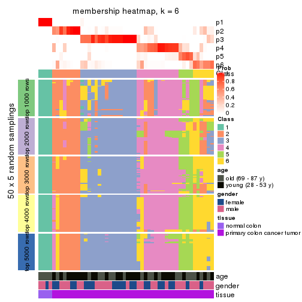
As soon as we have had the classes for columns, we can look for signatures which are significantly different between classes which can be candidate marks for certain classes. Following are the heatmaps for signatures.
Signature heatmaps where rows are scaled:
get_signatures(res, k = 2)
get_signatures(res, k = 3)
get_signatures(res, k = 4)
get_signatures(res, k = 5)
get_signatures(res, k = 6)
Signature heatmaps where rows are not scaled:
get_signatures(res, k = 2, scale_rows = FALSE)
get_signatures(res, k = 3, scale_rows = FALSE)
get_signatures(res, k = 4, scale_rows = FALSE)
get_signatures(res, k = 5, scale_rows = FALSE)
get_signatures(res, k = 6, scale_rows = FALSE)
Compare the overlap of signatures from different k:
compare_signatures(res)
get_signature() returns a data frame invisibly. TO get the list of signatures, the function
call should be assigned to a variable explicitly. In following code, if plot argument is set
to FALSE, no heatmap is plotted while only the differential analysis is performed.
# code only for demonstration
tb = get_signature(res, k = ..., plot = FALSE)
An example of the output of tb is:
#> which_row fdr mean_1 mean_2 scaled_mean_1 scaled_mean_2 km
#> 1 38 0.042760348 8.373488 9.131774 -0.5533452 0.5164555 1
#> 2 40 0.018707592 7.106213 8.469186 -0.6173731 0.5762149 1
#> 3 55 0.019134737 10.221463 11.207825 -0.6159697 0.5749050 1
#> 4 59 0.006059896 5.921854 7.869574 -0.6899429 0.6439467 1
#> 5 60 0.018055526 8.928898 10.211722 -0.6204761 0.5791110 1
#> 6 98 0.009384629 15.714769 14.887706 0.6635654 -0.6193277 2
...
The columns in tb are:
which_row: row indices corresponding to the input matrix.fdr: FDR for the differential test. mean_x: The mean value in group x.scaled_mean_x: The mean value in group x after rows are scaled.km: Row groups if k-means clustering is applied to rows.UMAP plot which shows how samples are separated.
dimension_reduction(res, k = 2, method = "UMAP")
dimension_reduction(res, k = 3, method = "UMAP")
dimension_reduction(res, k = 4, method = "UMAP")
dimension_reduction(res, k = 5, method = "UMAP")
dimension_reduction(res, k = 6, method = "UMAP")
Following heatmap shows how subgroups are split when increasing k:
collect_classes(res)
Test correlation between subgroups and known annotations. If the known annotation is numeric, one-way ANOVA test is applied, and if the known annotation is discrete, chi-squared contingency table test is applied.
test_to_known_factors(res)
#> n age(p) gender(p) tissue(p) k
#> MAD:pam 50 0.0825 0.785 9.94e-10 2
#> MAD:pam 47 0.0813 0.310 6.22e-11 3
#> MAD:pam 45 0.1837 0.642 9.25e-10 4
#> MAD:pam 36 0.0303 0.672 2.89e-07 5
#> MAD:pam 37 0.0711 0.771 5.99e-07 6
If matrix rows can be associated to genes, consider to use functional_enrichment(res,
...) to perform function enrichment for the signature genes. See this vignette for more detailed explanations.
The object with results only for a single top-value method and a single partition method can be extracted as:
res = res_list["MAD", "mclust"]
# you can also extract it by
# res = res_list["MAD:mclust"]
A summary of res and all the functions that can be applied to it:
res
#> A 'ConsensusPartition' object with k = 2, 3, 4, 5, 6.
#> On a matrix with 16230 rows and 50 columns.
#> Top rows (1000, 2000, 3000, 4000, 5000) are extracted by 'MAD' method.
#> Subgroups are detected by 'mclust' method.
#> Performed in total 1250 partitions by row resampling.
#> Best k for subgroups seems to be 3.
#>
#> Following methods can be applied to this 'ConsensusPartition' object:
#> [1] "cola_report" "collect_classes" "collect_plots"
#> [4] "collect_stats" "colnames" "compare_signatures"
#> [7] "consensus_heatmap" "dimension_reduction" "functional_enrichment"
#> [10] "get_anno_col" "get_anno" "get_classes"
#> [13] "get_consensus" "get_matrix" "get_membership"
#> [16] "get_param" "get_signatures" "get_stats"
#> [19] "is_best_k" "is_stable_k" "membership_heatmap"
#> [22] "ncol" "nrow" "plot_ecdf"
#> [25] "rownames" "select_partition_number" "show"
#> [28] "suggest_best_k" "test_to_known_factors"
collect_plots() function collects all the plots made from res for all k (number of partitions)
into one single page to provide an easy and fast comparison between different k.
collect_plots(res)
The plots are:
k and the heatmap of
predicted classes for each k.k.k.k.All the plots in panels can be made by individual functions and they are plotted later in this section.
select_partition_number() produces several plots showing different
statistics for choosing “optimized” k. There are following statistics:
k;k, the area increased is defined as \(A_k - A_{k-1}\).The detailed explanations of these statistics can be found in the cola vignette.
Generally speaking, lower PAC score, higher mean silhouette score or higher
concordance corresponds to better partition. Rand index and Jaccard index
measure how similar the current partition is compared to partition with k-1.
If they are too similar, we won't accept k is better than k-1.
select_partition_number(res)
The numeric values for all these statistics can be obtained by get_stats().
get_stats(res)
#> k 1-PAC mean_silhouette concordance area_increased Rand Jaccard
#> 2 2 0.495 0.897 0.921 0.2221 0.850 0.850
#> 3 3 0.434 0.853 0.899 1.3480 0.650 0.588
#> 4 4 0.509 0.668 0.790 0.2597 0.791 0.594
#> 5 5 0.609 0.551 0.773 0.1253 0.840 0.589
#> 6 6 0.648 0.520 0.751 0.0666 0.863 0.584
suggest_best_k() suggests the best \(k\) based on these statistics. The rules are as follows:
suggest_best_k(res)
#> [1] 3
Following shows the table of the partitions (You need to click the show/hide
code output link to see it). The membership matrix (columns with name p*)
is inferred by
clue::cl_consensus()
function with the SE method. Basically the value in the membership matrix
represents the probability to belong to a certain group. The finall class
label for an item is determined with the group with highest probability it
belongs to.
In get_classes() function, the entropy is calculated from the membership
matrix and the silhouette score is calculated from the consensus matrix.
cbind(get_classes(res, k = 2), get_membership(res, k = 2))
#> class entropy silhouette p1 p2
#> GSM615919 2 0.5629 0.905 0.132 0.868
#> GSM615921 2 0.0000 0.906 0.000 1.000
#> GSM615922 2 0.5842 0.902 0.140 0.860
#> GSM615925 2 0.0000 0.906 0.000 1.000
#> GSM615926 2 0.6247 0.892 0.156 0.844
#> GSM615933 2 0.0000 0.906 0.000 1.000
#> GSM615939 2 0.5737 0.904 0.136 0.864
#> GSM615941 2 0.5737 0.904 0.136 0.864
#> GSM615944 2 0.7602 0.832 0.220 0.780
#> GSM615945 2 0.0000 0.906 0.000 1.000
#> GSM615947 2 0.5178 0.907 0.116 0.884
#> GSM615948 2 0.5737 0.904 0.136 0.864
#> GSM615951 2 0.5842 0.902 0.140 0.860
#> GSM615918 2 0.0000 0.906 0.000 1.000
#> GSM615927 2 0.0000 0.906 0.000 1.000
#> GSM615929 2 0.5737 0.904 0.136 0.864
#> GSM615931 2 0.0000 0.906 0.000 1.000
#> GSM615937 2 0.1633 0.895 0.024 0.976
#> GSM615938 2 0.0000 0.906 0.000 1.000
#> GSM615940 2 0.5737 0.904 0.136 0.864
#> GSM615946 2 0.5737 0.904 0.136 0.864
#> GSM615952 2 0.5408 0.907 0.124 0.876
#> GSM615953 2 0.0000 0.906 0.000 1.000
#> GSM615955 2 0.9710 0.537 0.400 0.600
#> GSM721722 2 0.9358 0.636 0.352 0.648
#> GSM721723 2 0.1414 0.897 0.020 0.980
#> GSM721724 2 0.5737 0.904 0.136 0.864
#> GSM615917 2 0.0000 0.906 0.000 1.000
#> GSM615920 2 0.5629 0.905 0.132 0.868
#> GSM615923 2 0.0000 0.906 0.000 1.000
#> GSM615928 2 0.5519 0.906 0.128 0.872
#> GSM615934 2 0.5629 0.905 0.132 0.868
#> GSM615950 2 0.0000 0.906 0.000 1.000
#> GSM615954 2 0.1843 0.892 0.028 0.972
#> GSM615956 2 0.5737 0.904 0.136 0.864
#> GSM615958 1 0.0000 1.000 1.000 0.000
#> GSM615924 2 0.0000 0.906 0.000 1.000
#> GSM615930 2 0.0000 0.906 0.000 1.000
#> GSM615932 2 0.1184 0.899 0.016 0.984
#> GSM615935 2 0.0000 0.906 0.000 1.000
#> GSM615936 2 0.5519 0.906 0.128 0.872
#> GSM615942 2 0.5842 0.902 0.140 0.860
#> GSM615943 2 0.1414 0.897 0.020 0.980
#> GSM615949 2 0.5737 0.904 0.136 0.864
#> GSM615957 2 0.2043 0.890 0.032 0.968
#> GSM721720 2 0.0376 0.904 0.004 0.996
#> GSM721721 2 0.5629 0.905 0.132 0.868
#> GSM615959 1 0.0000 1.000 1.000 0.000
#> GSM615960 1 0.0000 1.000 1.000 0.000
#> GSM615961 1 0.0000 1.000 1.000 0.000
cbind(get_classes(res, k = 3), get_membership(res, k = 3))
#> class entropy silhouette p1 p2 p3
#> GSM615919 3 0.1411 0.855 0.000 0.036 0.964
#> GSM615921 3 0.5098 0.721 0.000 0.248 0.752
#> GSM615922 3 0.0237 0.858 0.000 0.004 0.996
#> GSM615925 3 0.4062 0.798 0.000 0.164 0.836
#> GSM615926 3 0.3267 0.857 0.000 0.116 0.884
#> GSM615933 3 0.5098 0.710 0.000 0.248 0.752
#> GSM615939 3 0.0237 0.858 0.000 0.004 0.996
#> GSM615941 3 0.3192 0.859 0.000 0.112 0.888
#> GSM615944 3 0.5538 0.825 0.072 0.116 0.812
#> GSM615945 2 0.2448 0.885 0.000 0.924 0.076
#> GSM615947 3 0.3192 0.862 0.000 0.112 0.888
#> GSM615948 3 0.3192 0.859 0.000 0.112 0.888
#> GSM615951 3 0.3267 0.857 0.000 0.116 0.884
#> GSM615918 3 0.5178 0.781 0.000 0.256 0.744
#> GSM615927 3 0.5178 0.709 0.000 0.256 0.744
#> GSM615929 3 0.0000 0.857 0.000 0.000 1.000
#> GSM615931 3 0.6192 0.537 0.000 0.420 0.580
#> GSM615937 2 0.0892 0.927 0.000 0.980 0.020
#> GSM615938 2 0.1163 0.930 0.000 0.972 0.028
#> GSM615940 3 0.0237 0.858 0.000 0.004 0.996
#> GSM615946 3 0.1964 0.854 0.000 0.056 0.944
#> GSM615952 3 0.3551 0.852 0.000 0.132 0.868
#> GSM615953 2 0.4178 0.807 0.000 0.828 0.172
#> GSM615955 3 0.5538 0.825 0.072 0.116 0.812
#> GSM721722 3 0.5538 0.825 0.072 0.116 0.812
#> GSM721723 2 0.1411 0.927 0.000 0.964 0.036
#> GSM721724 3 0.0237 0.858 0.000 0.004 0.996
#> GSM615917 3 0.4178 0.792 0.000 0.172 0.828
#> GSM615920 3 0.4062 0.849 0.000 0.164 0.836
#> GSM615923 3 0.5785 0.694 0.000 0.332 0.668
#> GSM615928 3 0.2537 0.846 0.000 0.080 0.920
#> GSM615934 3 0.0237 0.858 0.000 0.004 0.996
#> GSM615950 2 0.0747 0.924 0.000 0.984 0.016
#> GSM615954 2 0.1031 0.926 0.000 0.976 0.024
#> GSM615956 3 0.3267 0.857 0.000 0.116 0.884
#> GSM615958 1 0.0000 1.000 1.000 0.000 0.000
#> GSM615924 3 0.4062 0.797 0.000 0.164 0.836
#> GSM615930 2 0.2356 0.889 0.000 0.928 0.072
#> GSM615932 2 0.1163 0.930 0.000 0.972 0.028
#> GSM615935 2 0.2356 0.905 0.000 0.928 0.072
#> GSM615936 3 0.3267 0.859 0.000 0.116 0.884
#> GSM615942 3 0.3192 0.859 0.000 0.112 0.888
#> GSM615943 2 0.0592 0.916 0.000 0.988 0.012
#> GSM615949 3 0.0237 0.858 0.000 0.004 0.996
#> GSM615957 2 0.4605 0.747 0.000 0.796 0.204
#> GSM721720 2 0.1163 0.930 0.000 0.972 0.028
#> GSM721721 3 0.1411 0.855 0.000 0.036 0.964
#> GSM615959 1 0.0000 1.000 1.000 0.000 0.000
#> GSM615960 1 0.0000 1.000 1.000 0.000 0.000
#> GSM615961 1 0.0000 1.000 1.000 0.000 0.000
cbind(get_classes(res, k = 4), get_membership(res, k = 4))
#> class entropy silhouette p1 p2 p3 p4
#> GSM615919 3 0.4996 0.4576 0 0.000 0.516 0.484
#> GSM615921 3 0.7498 0.4237 0 0.216 0.492 0.292
#> GSM615922 3 0.3688 0.8225 0 0.000 0.792 0.208
#> GSM615925 4 0.2216 0.6933 0 0.000 0.092 0.908
#> GSM615926 3 0.0817 0.7634 0 0.000 0.976 0.024
#> GSM615933 4 0.6401 0.5951 0 0.172 0.176 0.652
#> GSM615939 3 0.3486 0.8325 0 0.000 0.812 0.188
#> GSM615941 3 0.0336 0.7699 0 0.000 0.992 0.008
#> GSM615944 3 0.0921 0.7546 0 0.000 0.972 0.028
#> GSM615945 4 0.5383 -0.0852 0 0.452 0.012 0.536
#> GSM615947 3 0.3528 0.8314 0 0.000 0.808 0.192
#> GSM615948 3 0.3486 0.8325 0 0.000 0.812 0.188
#> GSM615951 3 0.0000 0.7650 0 0.000 1.000 0.000
#> GSM615918 4 0.2216 0.6933 0 0.000 0.092 0.908
#> GSM615927 4 0.2868 0.6767 0 0.000 0.136 0.864
#> GSM615929 3 0.4907 0.5815 0 0.000 0.580 0.420
#> GSM615931 4 0.6906 0.5134 0 0.264 0.156 0.580
#> GSM615937 2 0.3172 0.6719 0 0.840 0.000 0.160
#> GSM615938 2 0.0592 0.7424 0 0.984 0.016 0.000
#> GSM615940 3 0.3486 0.8325 0 0.000 0.812 0.188
#> GSM615946 3 0.3486 0.8325 0 0.000 0.812 0.188
#> GSM615952 3 0.0188 0.7640 0 0.000 0.996 0.004
#> GSM615953 2 0.5080 0.2415 0 0.576 0.420 0.004
#> GSM615955 3 0.0921 0.7546 0 0.000 0.972 0.028
#> GSM721722 3 0.1211 0.7526 0 0.000 0.960 0.040
#> GSM721723 2 0.0469 0.7426 0 0.988 0.012 0.000
#> GSM721724 3 0.3486 0.8325 0 0.000 0.812 0.188
#> GSM615917 4 0.2216 0.6933 0 0.000 0.092 0.908
#> GSM615920 3 0.2589 0.7199 0 0.000 0.884 0.116
#> GSM615923 4 0.6823 0.5212 0 0.244 0.160 0.596
#> GSM615928 4 0.4746 -0.0236 0 0.000 0.368 0.632
#> GSM615934 3 0.3528 0.8312 0 0.000 0.808 0.192
#> GSM615950 2 0.3172 0.6719 0 0.840 0.000 0.160
#> GSM615954 2 0.4661 0.4256 0 0.652 0.000 0.348
#> GSM615956 3 0.3528 0.8314 0 0.000 0.808 0.192
#> GSM615958 1 0.0000 1.0000 1 0.000 0.000 0.000
#> GSM615924 4 0.2408 0.6945 0 0.000 0.104 0.896
#> GSM615930 4 0.5383 -0.0852 0 0.452 0.012 0.536
#> GSM615932 2 0.0469 0.7426 0 0.988 0.012 0.000
#> GSM615935 2 0.1118 0.7313 0 0.964 0.036 0.000
#> GSM615936 3 0.3528 0.8314 0 0.000 0.808 0.192
#> GSM615942 3 0.3444 0.8326 0 0.000 0.816 0.184
#> GSM615943 2 0.4661 0.4256 0 0.652 0.000 0.348
#> GSM615949 3 0.3486 0.8325 0 0.000 0.812 0.188
#> GSM615957 2 0.4624 0.4046 0 0.660 0.340 0.000
#> GSM721720 2 0.0469 0.7426 0 0.988 0.012 0.000
#> GSM721721 3 0.4994 0.4670 0 0.000 0.520 0.480
#> GSM615959 1 0.0000 1.0000 1 0.000 0.000 0.000
#> GSM615960 1 0.0000 1.0000 1 0.000 0.000 0.000
#> GSM615961 1 0.0000 1.0000 1 0.000 0.000 0.000
cbind(get_classes(res, k = 5), get_membership(res, k = 5))
#> class entropy silhouette p1 p2 p3 p4 p5
#> GSM615919 4 0.4558 0.6656 0 0.000 0.216 0.724 0.060
#> GSM615921 3 0.5412 0.5285 0 0.216 0.684 0.080 0.020
#> GSM615922 3 0.3586 0.5537 0 0.000 0.736 0.264 0.000
#> GSM615925 5 0.4304 0.3830 0 0.000 0.000 0.484 0.516
#> GSM615926 3 0.3577 0.6214 0 0.160 0.808 0.032 0.000
#> GSM615933 5 0.3885 0.5300 0 0.000 0.008 0.268 0.724
#> GSM615939 3 0.3519 0.6339 0 0.008 0.776 0.216 0.000
#> GSM615941 3 0.0162 0.7248 0 0.000 0.996 0.004 0.000
#> GSM615944 3 0.3282 0.6223 0 0.188 0.804 0.008 0.000
#> GSM615945 5 0.0290 0.4994 0 0.008 0.000 0.000 0.992
#> GSM615947 3 0.1596 0.7229 0 0.012 0.948 0.028 0.012
#> GSM615948 3 0.0955 0.7238 0 0.004 0.968 0.028 0.000
#> GSM615951 3 0.0162 0.7248 0 0.000 0.996 0.004 0.000
#> GSM615918 5 0.4304 0.3830 0 0.000 0.000 0.484 0.516
#> GSM615927 5 0.4304 0.3830 0 0.000 0.000 0.484 0.516
#> GSM615929 4 0.4557 0.0911 0 0.000 0.404 0.584 0.012
#> GSM615931 5 0.3861 0.5318 0 0.000 0.008 0.264 0.728
#> GSM615937 5 0.4717 -0.2923 0 0.396 0.000 0.020 0.584
#> GSM615938 2 0.3586 0.9108 0 0.792 0.020 0.000 0.188
#> GSM615940 3 0.3388 0.6475 0 0.008 0.792 0.200 0.000
#> GSM615946 3 0.3874 0.6280 0 0.008 0.776 0.200 0.016
#> GSM615952 3 0.0162 0.7248 0 0.000 0.996 0.004 0.000
#> GSM615953 3 0.4379 0.5542 0 0.220 0.740 0.008 0.032
#> GSM615955 3 0.3462 0.6134 0 0.196 0.792 0.012 0.000
#> GSM721722 3 0.3656 0.6066 0 0.196 0.784 0.020 0.000
#> GSM721723 2 0.3602 0.9109 0 0.796 0.024 0.000 0.180
#> GSM721724 3 0.3519 0.6339 0 0.008 0.776 0.216 0.000
#> GSM615917 5 0.4304 0.3830 0 0.000 0.000 0.484 0.516
#> GSM615920 3 0.5915 -0.3244 0 0.000 0.508 0.384 0.108
#> GSM615923 5 0.3579 0.5356 0 0.000 0.004 0.240 0.756
#> GSM615928 4 0.4157 0.0919 0 0.000 0.020 0.716 0.264
#> GSM615934 3 0.3480 0.5707 0 0.000 0.752 0.248 0.000
#> GSM615950 5 0.4697 -0.2843 0 0.388 0.000 0.020 0.592
#> GSM615954 5 0.3912 0.1650 0 0.228 0.000 0.020 0.752
#> GSM615956 3 0.3732 0.6352 0 0.008 0.776 0.208 0.008
#> GSM615958 1 0.0000 1.0000 1 0.000 0.000 0.000 0.000
#> GSM615924 5 0.4304 0.3830 0 0.000 0.000 0.484 0.516
#> GSM615930 5 0.0290 0.4994 0 0.008 0.000 0.000 0.992
#> GSM615932 2 0.3456 0.9115 0 0.800 0.016 0.000 0.184
#> GSM615935 2 0.3921 0.7162 0 0.784 0.172 0.000 0.044
#> GSM615936 3 0.1280 0.7233 0 0.008 0.960 0.024 0.008
#> GSM615942 3 0.0162 0.7248 0 0.000 0.996 0.004 0.000
#> GSM615943 5 0.3757 0.2054 0 0.208 0.000 0.020 0.772
#> GSM615949 3 0.4457 0.4851 0 0.004 0.656 0.328 0.012
#> GSM615957 3 0.4367 0.3341 0 0.416 0.580 0.000 0.004
#> GSM721720 2 0.3266 0.8916 0 0.796 0.004 0.000 0.200
#> GSM721721 4 0.4732 0.6558 0 0.000 0.208 0.716 0.076
#> GSM615959 1 0.0000 1.0000 1 0.000 0.000 0.000 0.000
#> GSM615960 1 0.0000 1.0000 1 0.000 0.000 0.000 0.000
#> GSM615961 1 0.0000 1.0000 1 0.000 0.000 0.000 0.000
cbind(get_classes(res, k = 6), get_membership(res, k = 6))
#> class entropy silhouette p1 p2 p3 p4 p5 p6
#> GSM615919 4 0.6718 0.1017 0 0.236 0.260 0.452 0.052 0.000
#> GSM615921 2 0.5945 0.0235 0 0.480 0.000 0.304 0.004 0.212
#> GSM615922 2 0.6489 0.1113 0 0.464 0.352 0.088 0.096 0.000
#> GSM615925 4 0.0000 0.6657 0 0.000 0.000 1.000 0.000 0.000
#> GSM615926 2 0.6208 -0.2858 0 0.416 0.364 0.208 0.012 0.000
#> GSM615933 4 0.3341 0.4641 0 0.004 0.000 0.776 0.208 0.012
#> GSM615939 2 0.2431 0.5258 0 0.860 0.132 0.000 0.008 0.000
#> GSM615941 2 0.3476 0.3943 0 0.732 0.260 0.004 0.004 0.000
#> GSM615944 3 0.4586 0.4415 0 0.400 0.564 0.004 0.032 0.000
#> GSM615945 5 0.4100 0.4568 0 0.004 0.000 0.388 0.600 0.008
#> GSM615947 2 0.0405 0.5268 0 0.988 0.000 0.000 0.008 0.004
#> GSM615948 2 0.4016 0.3800 0 0.684 0.292 0.004 0.020 0.000
#> GSM615951 2 0.3452 0.3991 0 0.736 0.256 0.004 0.004 0.000
#> GSM615918 4 0.0000 0.6657 0 0.000 0.000 1.000 0.000 0.000
#> GSM615927 4 0.2243 0.6201 0 0.004 0.000 0.880 0.112 0.004
#> GSM615929 3 0.6953 -0.2479 0 0.164 0.384 0.364 0.088 0.000
#> GSM615931 4 0.3134 0.4506 0 0.004 0.000 0.784 0.208 0.004
#> GSM615937 5 0.3816 0.6964 0 0.000 0.000 0.032 0.728 0.240
#> GSM615938 6 0.0146 0.9905 0 0.004 0.000 0.000 0.000 0.996
#> GSM615940 2 0.2257 0.5313 0 0.876 0.116 0.000 0.008 0.000
#> GSM615946 2 0.3116 0.5197 0 0.836 0.132 0.016 0.004 0.012
#> GSM615952 2 0.3293 0.4247 0 0.788 0.196 0.004 0.008 0.004
#> GSM615953 2 0.4562 0.2711 0 0.648 0.000 0.052 0.004 0.296
#> GSM615955 3 0.5054 0.5258 0 0.368 0.548 0.000 0.084 0.000
#> GSM721722 3 0.5054 0.5258 0 0.368 0.548 0.000 0.084 0.000
#> GSM721723 6 0.0000 0.9926 0 0.000 0.000 0.000 0.000 1.000
#> GSM721724 2 0.2431 0.5258 0 0.860 0.132 0.000 0.008 0.000
#> GSM615917 4 0.0000 0.6657 0 0.000 0.000 1.000 0.000 0.000
#> GSM615920 4 0.5729 -0.1015 0 0.348 0.140 0.504 0.008 0.000
#> GSM615923 4 0.3450 0.4668 0 0.008 0.000 0.772 0.208 0.012
#> GSM615928 4 0.4315 0.5605 0 0.104 0.144 0.744 0.008 0.000
#> GSM615934 2 0.5695 0.2042 0 0.508 0.372 0.020 0.100 0.000
#> GSM615950 5 0.3888 0.6845 0 0.000 0.000 0.032 0.716 0.252
#> GSM615954 5 0.3662 0.7333 0 0.004 0.000 0.044 0.780 0.172
#> GSM615956 2 0.2462 0.5287 0 0.860 0.132 0.004 0.000 0.004
#> GSM615958 1 0.0000 1.0000 1 0.000 0.000 0.000 0.000 0.000
#> GSM615924 4 0.1148 0.6650 0 0.020 0.000 0.960 0.016 0.004
#> GSM615930 5 0.4118 0.4438 0 0.004 0.000 0.396 0.592 0.008
#> GSM615932 6 0.0000 0.9926 0 0.000 0.000 0.000 0.000 1.000
#> GSM615935 6 0.0458 0.9772 0 0.016 0.000 0.000 0.000 0.984
#> GSM615936 2 0.1370 0.5235 0 0.948 0.036 0.012 0.004 0.000
#> GSM615942 2 0.3608 0.4030 0 0.736 0.248 0.004 0.012 0.000
#> GSM615943 5 0.3700 0.7406 0 0.000 0.000 0.068 0.780 0.152
#> GSM615949 2 0.5473 0.3796 0 0.592 0.300 0.036 0.072 0.000
#> GSM615957 2 0.3807 0.3172 0 0.628 0.000 0.000 0.004 0.368
#> GSM721720 6 0.0000 0.9926 0 0.000 0.000 0.000 0.000 1.000
#> GSM721721 4 0.6752 0.1353 0 0.188 0.280 0.464 0.068 0.000
#> GSM615959 1 0.0000 1.0000 1 0.000 0.000 0.000 0.000 0.000
#> GSM615960 1 0.0000 1.0000 1 0.000 0.000 0.000 0.000 0.000
#> GSM615961 1 0.0000 1.0000 1 0.000 0.000 0.000 0.000 0.000
Heatmaps for the consensus matrix. It visualizes the probability of two samples to be in a same group.
consensus_heatmap(res, k = 2)
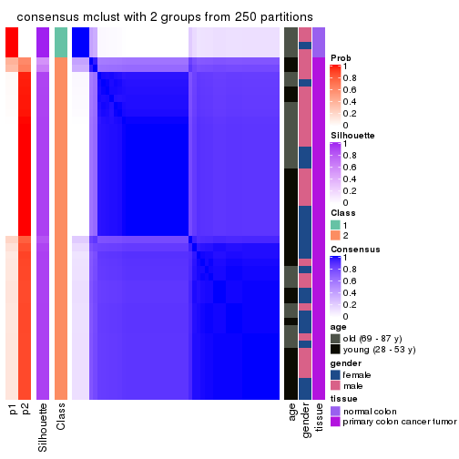
consensus_heatmap(res, k = 3)
consensus_heatmap(res, k = 4)
consensus_heatmap(res, k = 5)
consensus_heatmap(res, k = 6)
Heatmaps for the membership of samples in all partitions to see how consistent they are:
membership_heatmap(res, k = 2)
membership_heatmap(res, k = 3)
membership_heatmap(res, k = 4)
membership_heatmap(res, k = 5)

membership_heatmap(res, k = 6)
As soon as we have had the classes for columns, we can look for signatures which are significantly different between classes which can be candidate marks for certain classes. Following are the heatmaps for signatures.
Signature heatmaps where rows are scaled:
get_signatures(res, k = 2)
get_signatures(res, k = 3)
get_signatures(res, k = 4)
get_signatures(res, k = 5)
get_signatures(res, k = 6)
Signature heatmaps where rows are not scaled:
get_signatures(res, k = 2, scale_rows = FALSE)
get_signatures(res, k = 3, scale_rows = FALSE)

get_signatures(res, k = 4, scale_rows = FALSE)
get_signatures(res, k = 5, scale_rows = FALSE)
get_signatures(res, k = 6, scale_rows = FALSE)
Compare the overlap of signatures from different k:
compare_signatures(res)
get_signature() returns a data frame invisibly. TO get the list of signatures, the function
call should be assigned to a variable explicitly. In following code, if plot argument is set
to FALSE, no heatmap is plotted while only the differential analysis is performed.
# code only for demonstration
tb = get_signature(res, k = ..., plot = FALSE)
An example of the output of tb is:
#> which_row fdr mean_1 mean_2 scaled_mean_1 scaled_mean_2 km
#> 1 38 0.042760348 8.373488 9.131774 -0.5533452 0.5164555 1
#> 2 40 0.018707592 7.106213 8.469186 -0.6173731 0.5762149 1
#> 3 55 0.019134737 10.221463 11.207825 -0.6159697 0.5749050 1
#> 4 59 0.006059896 5.921854 7.869574 -0.6899429 0.6439467 1
#> 5 60 0.018055526 8.928898 10.211722 -0.6204761 0.5791110 1
#> 6 98 0.009384629 15.714769 14.887706 0.6635654 -0.6193277 2
...
The columns in tb are:
which_row: row indices corresponding to the input matrix.fdr: FDR for the differential test. mean_x: The mean value in group x.scaled_mean_x: The mean value in group x after rows are scaled.km: Row groups if k-means clustering is applied to rows.UMAP plot which shows how samples are separated.
dimension_reduction(res, k = 2, method = "UMAP")
dimension_reduction(res, k = 3, method = "UMAP")
dimension_reduction(res, k = 4, method = "UMAP")
dimension_reduction(res, k = 5, method = "UMAP")
dimension_reduction(res, k = 6, method = "UMAP")
Following heatmap shows how subgroups are split when increasing k:
collect_classes(res)
Test correlation between subgroups and known annotations. If the known annotation is numeric, one-way ANOVA test is applied, and if the known annotation is discrete, chi-squared contingency table test is applied.
test_to_known_factors(res)
#> n age(p) gender(p) tissue(p) k
#> MAD:mclust 50 0.0825 0.785 9.94e-10 2
#> MAD:mclust 50 0.0175 0.112 1.39e-11 3
#> MAD:mclust 40 0.0509 0.283 1.07e-08 4
#> MAD:mclust 34 0.0338 0.188 7.45e-07 5
#> MAD:mclust 28 0.1362 0.387 3.64e-05 6
If matrix rows can be associated to genes, consider to use functional_enrichment(res,
...) to perform function enrichment for the signature genes. See this vignette for more detailed explanations.
The object with results only for a single top-value method and a single partition method can be extracted as:
res = res_list["MAD", "NMF"]
# you can also extract it by
# res = res_list["MAD:NMF"]
A summary of res and all the functions that can be applied to it:
res
#> A 'ConsensusPartition' object with k = 2, 3, 4, 5, 6.
#> On a matrix with 16230 rows and 50 columns.
#> Top rows (1000, 2000, 3000, 4000, 5000) are extracted by 'MAD' method.
#> Subgroups are detected by 'NMF' method.
#> Performed in total 1250 partitions by row resampling.
#> Best k for subgroups seems to be 3.
#>
#> Following methods can be applied to this 'ConsensusPartition' object:
#> [1] "cola_report" "collect_classes" "collect_plots"
#> [4] "collect_stats" "colnames" "compare_signatures"
#> [7] "consensus_heatmap" "dimension_reduction" "functional_enrichment"
#> [10] "get_anno_col" "get_anno" "get_classes"
#> [13] "get_consensus" "get_matrix" "get_membership"
#> [16] "get_param" "get_signatures" "get_stats"
#> [19] "is_best_k" "is_stable_k" "membership_heatmap"
#> [22] "ncol" "nrow" "plot_ecdf"
#> [25] "rownames" "select_partition_number" "show"
#> [28] "suggest_best_k" "test_to_known_factors"
collect_plots() function collects all the plots made from res for all k (number of partitions)
into one single page to provide an easy and fast comparison between different k.
collect_plots(res)
The plots are:
k and the heatmap of
predicted classes for each k.k.k.k.All the plots in panels can be made by individual functions and they are plotted later in this section.
select_partition_number() produces several plots showing different
statistics for choosing “optimized” k. There are following statistics:
k;k, the area increased is defined as \(A_k - A_{k-1}\).The detailed explanations of these statistics can be found in the cola vignette.
Generally speaking, lower PAC score, higher mean silhouette score or higher
concordance corresponds to better partition. Rand index and Jaccard index
measure how similar the current partition is compared to partition with k-1.
If they are too similar, we won't accept k is better than k-1.
select_partition_number(res)
The numeric values for all these statistics can be obtained by get_stats().
get_stats(res)
#> k 1-PAC mean_silhouette concordance area_increased Rand Jaccard
#> 2 2 0.660 0.810 0.928 0.3987 0.628 0.628
#> 3 3 0.574 0.697 0.862 0.6446 0.615 0.428
#> 4 4 0.477 0.465 0.700 0.1382 0.807 0.499
#> 5 5 0.572 0.427 0.632 0.0733 0.812 0.403
#> 6 6 0.711 0.671 0.818 0.0437 0.865 0.454
suggest_best_k() suggests the best \(k\) based on these statistics. The rules are as follows:
suggest_best_k(res)
#> [1] 3
Following shows the table of the partitions (You need to click the show/hide
code output link to see it). The membership matrix (columns with name p*)
is inferred by
clue::cl_consensus()
function with the SE method. Basically the value in the membership matrix
represents the probability to belong to a certain group. The finall class
label for an item is determined with the group with highest probability it
belongs to.
In get_classes() function, the entropy is calculated from the membership
matrix and the silhouette score is calculated from the consensus matrix.
cbind(get_classes(res, k = 2), get_membership(res, k = 2))
#> class entropy silhouette p1 p2
#> GSM615919 2 0.0000 0.9188 0.000 1.000
#> GSM615921 2 0.0000 0.9188 0.000 1.000
#> GSM615922 1 0.9881 0.1897 0.564 0.436
#> GSM615925 2 0.6531 0.7693 0.168 0.832
#> GSM615926 1 0.0000 0.9031 1.000 0.000
#> GSM615933 2 0.0000 0.9188 0.000 1.000
#> GSM615939 2 0.0000 0.9188 0.000 1.000
#> GSM615941 1 0.5408 0.8068 0.876 0.124
#> GSM615944 1 0.0000 0.9031 1.000 0.000
#> GSM615945 2 0.0000 0.9188 0.000 1.000
#> GSM615947 2 0.0000 0.9188 0.000 1.000
#> GSM615948 2 0.9922 0.1692 0.448 0.552
#> GSM615951 1 0.2423 0.8804 0.960 0.040
#> GSM615918 2 0.5294 0.8210 0.120 0.880
#> GSM615927 2 0.0000 0.9188 0.000 1.000
#> GSM615929 2 0.5946 0.7969 0.144 0.856
#> GSM615931 2 0.0672 0.9140 0.008 0.992
#> GSM615937 2 0.0000 0.9188 0.000 1.000
#> GSM615938 2 0.0000 0.9188 0.000 1.000
#> GSM615940 2 0.1184 0.9086 0.016 0.984
#> GSM615946 2 0.0000 0.9188 0.000 1.000
#> GSM615952 2 0.9963 0.0603 0.464 0.536
#> GSM615953 2 0.0000 0.9188 0.000 1.000
#> GSM615955 1 0.0000 0.9031 1.000 0.000
#> GSM721722 1 0.0000 0.9031 1.000 0.000
#> GSM721723 2 0.0000 0.9188 0.000 1.000
#> GSM721724 2 0.0000 0.9188 0.000 1.000
#> GSM615917 2 0.0376 0.9164 0.004 0.996
#> GSM615920 2 1.0000 -0.0588 0.500 0.500
#> GSM615923 2 0.0000 0.9188 0.000 1.000
#> GSM615928 2 0.0000 0.9188 0.000 1.000
#> GSM615934 2 0.9909 0.1830 0.444 0.556
#> GSM615950 2 0.0000 0.9188 0.000 1.000
#> GSM615954 2 0.0000 0.9188 0.000 1.000
#> GSM615956 2 0.0000 0.9188 0.000 1.000
#> GSM615958 1 0.0000 0.9031 1.000 0.000
#> GSM615924 2 0.0000 0.9188 0.000 1.000
#> GSM615930 2 0.0000 0.9188 0.000 1.000
#> GSM615932 2 0.0000 0.9188 0.000 1.000
#> GSM615935 2 0.0000 0.9188 0.000 1.000
#> GSM615936 2 0.0000 0.9188 0.000 1.000
#> GSM615942 1 0.9170 0.4818 0.668 0.332
#> GSM615943 2 0.0000 0.9188 0.000 1.000
#> GSM615949 2 0.6247 0.7836 0.156 0.844
#> GSM615957 2 0.0000 0.9188 0.000 1.000
#> GSM721720 2 0.0000 0.9188 0.000 1.000
#> GSM721721 2 0.6801 0.7542 0.180 0.820
#> GSM615959 1 0.0000 0.9031 1.000 0.000
#> GSM615960 1 0.0000 0.9031 1.000 0.000
#> GSM615961 1 0.0000 0.9031 1.000 0.000
cbind(get_classes(res, k = 3), get_membership(res, k = 3))
#> class entropy silhouette p1 p2 p3
#> GSM615919 3 0.5733 0.4536 0.000 0.324 0.676
#> GSM615921 2 0.6079 0.2423 0.000 0.612 0.388
#> GSM615922 1 0.6703 0.5999 0.712 0.236 0.052
#> GSM615925 3 0.0000 0.8812 0.000 0.000 1.000
#> GSM615926 1 0.2229 0.8094 0.944 0.012 0.044
#> GSM615933 3 0.0892 0.8898 0.000 0.020 0.980
#> GSM615939 2 0.4465 0.7306 0.004 0.820 0.176
#> GSM615941 2 0.5643 0.5910 0.220 0.760 0.020
#> GSM615944 1 0.0237 0.8240 0.996 0.004 0.000
#> GSM615945 3 0.1964 0.8784 0.000 0.056 0.944
#> GSM615947 2 0.0592 0.7911 0.000 0.988 0.012
#> GSM615948 2 0.7561 -0.0108 0.444 0.516 0.040
#> GSM615951 1 0.6553 0.2728 0.580 0.412 0.008
#> GSM615918 3 0.0475 0.8764 0.004 0.004 0.992
#> GSM615927 3 0.1289 0.8880 0.000 0.032 0.968
#> GSM615929 3 0.8361 0.1134 0.092 0.364 0.544
#> GSM615931 3 0.0892 0.8898 0.000 0.020 0.980
#> GSM615937 3 0.5115 0.7679 0.016 0.188 0.796
#> GSM615938 2 0.4702 0.6483 0.000 0.788 0.212
#> GSM615940 2 0.2229 0.7887 0.012 0.944 0.044
#> GSM615946 2 0.4399 0.7263 0.000 0.812 0.188
#> GSM615952 2 0.1289 0.7753 0.032 0.968 0.000
#> GSM615953 2 0.1643 0.7921 0.000 0.956 0.044
#> GSM615955 1 0.0983 0.8219 0.980 0.016 0.004
#> GSM721722 1 0.1482 0.8183 0.968 0.012 0.020
#> GSM721723 2 0.1289 0.7933 0.000 0.968 0.032
#> GSM721724 2 0.2165 0.7899 0.000 0.936 0.064
#> GSM615917 3 0.0237 0.8835 0.000 0.004 0.996
#> GSM615920 1 0.7130 0.1473 0.544 0.024 0.432
#> GSM615923 3 0.1031 0.8896 0.000 0.024 0.976
#> GSM615928 3 0.1031 0.8885 0.000 0.024 0.976
#> GSM615934 1 0.9532 0.2821 0.472 0.316 0.212
#> GSM615950 3 0.4399 0.7782 0.000 0.188 0.812
#> GSM615954 3 0.3267 0.8448 0.000 0.116 0.884
#> GSM615956 2 0.2356 0.7878 0.000 0.928 0.072
#> GSM615958 1 0.0237 0.8243 0.996 0.004 0.000
#> GSM615924 3 0.0892 0.8898 0.000 0.020 0.980
#> GSM615930 3 0.0892 0.8898 0.000 0.020 0.980
#> GSM615932 2 0.5254 0.5678 0.000 0.736 0.264
#> GSM615935 2 0.1753 0.7920 0.000 0.952 0.048
#> GSM615936 2 0.0747 0.7917 0.000 0.984 0.016
#> GSM615942 2 0.7054 -0.0173 0.456 0.524 0.020
#> GSM615943 3 0.3267 0.8447 0.000 0.116 0.884
#> GSM615949 2 0.5810 0.6962 0.072 0.796 0.132
#> GSM615957 2 0.0747 0.7917 0.000 0.984 0.016
#> GSM721720 2 0.5178 0.5753 0.000 0.744 0.256
#> GSM721721 3 0.4527 0.7924 0.052 0.088 0.860
#> GSM615959 1 0.0237 0.8243 0.996 0.004 0.000
#> GSM615960 1 0.0237 0.8243 0.996 0.004 0.000
#> GSM615961 1 0.0237 0.8243 0.996 0.004 0.000
cbind(get_classes(res, k = 4), get_membership(res, k = 4))
#> class entropy silhouette p1 p2 p3 p4
#> GSM615919 3 0.516 0.44693 0.000 0.136 0.760 0.104
#> GSM615921 2 0.480 0.57541 0.000 0.768 0.180 0.052
#> GSM615922 3 0.420 0.42339 0.068 0.108 0.824 0.000
#> GSM615925 3 0.499 0.03221 0.000 0.000 0.532 0.468
#> GSM615926 1 0.500 0.40775 0.508 0.000 0.492 0.000
#> GSM615933 4 0.302 0.59158 0.000 0.000 0.148 0.852
#> GSM615939 2 0.483 0.33676 0.000 0.608 0.392 0.000
#> GSM615941 2 0.687 0.31773 0.152 0.584 0.264 0.000
#> GSM615944 1 0.394 0.75406 0.800 0.012 0.188 0.000
#> GSM615945 4 0.130 0.64730 0.000 0.000 0.044 0.956
#> GSM615947 2 0.130 0.68361 0.000 0.956 0.044 0.000
#> GSM615948 3 0.617 0.29188 0.084 0.284 0.632 0.000
#> GSM615951 1 0.662 0.57153 0.628 0.192 0.180 0.000
#> GSM615918 4 0.499 -0.00346 0.000 0.000 0.472 0.528
#> GSM615927 4 0.369 0.51438 0.000 0.000 0.208 0.792
#> GSM615929 3 0.155 0.51815 0.000 0.008 0.952 0.040
#> GSM615931 4 0.201 0.63814 0.000 0.000 0.080 0.920
#> GSM615937 4 0.724 0.26510 0.096 0.320 0.024 0.560
#> GSM615938 2 0.438 0.53074 0.000 0.704 0.000 0.296
#> GSM615940 2 0.455 0.55564 0.000 0.732 0.256 0.012
#> GSM615946 2 0.391 0.58051 0.000 0.768 0.232 0.000
#> GSM615952 2 0.464 0.64112 0.132 0.800 0.064 0.004
#> GSM615953 2 0.529 0.50183 0.000 0.652 0.024 0.324
#> GSM615955 1 0.436 0.74008 0.764 0.016 0.220 0.000
#> GSM721722 1 0.482 0.59298 0.612 0.000 0.388 0.000
#> GSM721723 2 0.391 0.60190 0.000 0.784 0.004 0.212
#> GSM721724 2 0.331 0.62996 0.000 0.828 0.172 0.000
#> GSM615917 3 0.498 0.02429 0.000 0.000 0.536 0.464
#> GSM615920 4 0.785 0.03215 0.356 0.000 0.268 0.376
#> GSM615923 4 0.554 0.45844 0.000 0.056 0.256 0.688
#> GSM615928 3 0.513 0.26943 0.000 0.016 0.652 0.332
#> GSM615934 3 0.447 0.42897 0.032 0.172 0.792 0.004
#> GSM615950 4 0.391 0.59989 0.000 0.156 0.024 0.820
#> GSM615954 4 0.500 0.57655 0.044 0.144 0.024 0.788
#> GSM615956 2 0.220 0.67950 0.000 0.916 0.080 0.004
#> GSM615958 1 0.000 0.77415 1.000 0.000 0.000 0.000
#> GSM615924 3 0.500 -0.05665 0.000 0.000 0.508 0.492
#> GSM615930 4 0.179 0.64458 0.000 0.000 0.068 0.932
#> GSM615932 2 0.515 0.27560 0.000 0.532 0.004 0.464
#> GSM615935 4 0.615 -0.26595 0.000 0.460 0.048 0.492
#> GSM615936 2 0.539 0.66569 0.016 0.768 0.124 0.092
#> GSM615942 3 0.773 -0.16269 0.296 0.260 0.444 0.000
#> GSM615943 4 0.115 0.64444 0.000 0.024 0.008 0.968
#> GSM615949 3 0.487 0.21734 0.000 0.356 0.640 0.004
#> GSM615957 2 0.147 0.69000 0.000 0.948 0.000 0.052
#> GSM721720 2 0.472 0.54369 0.000 0.720 0.016 0.264
#> GSM721721 3 0.283 0.49196 0.000 0.004 0.876 0.120
#> GSM615959 1 0.000 0.77415 1.000 0.000 0.000 0.000
#> GSM615960 1 0.000 0.77415 1.000 0.000 0.000 0.000
#> GSM615961 1 0.000 0.77415 1.000 0.000 0.000 0.000
cbind(get_classes(res, k = 5), get_membership(res, k = 5))
#> class entropy silhouette p1 p2 p3 p4 p5
#> GSM615919 4 0.2125 0.5947 0.000 0.052 0.024 0.920 0.004
#> GSM615921 2 0.5572 0.3887 0.000 0.668 0.204 0.116 0.012
#> GSM615922 4 0.5630 -0.1503 0.044 0.004 0.452 0.492 0.008
#> GSM615925 4 0.4151 0.4596 0.000 0.000 0.004 0.652 0.344
#> GSM615926 3 0.8404 -0.2146 0.288 0.120 0.320 0.268 0.004
#> GSM615933 5 0.2228 0.8213 0.000 0.000 0.048 0.040 0.912
#> GSM615939 3 0.5397 0.4460 0.000 0.152 0.688 0.152 0.008
#> GSM615941 3 0.7024 0.1969 0.168 0.096 0.580 0.156 0.000
#> GSM615944 1 0.4697 0.6047 0.660 0.000 0.304 0.036 0.000
#> GSM615945 5 0.0807 0.8458 0.000 0.000 0.012 0.012 0.976
#> GSM615947 3 0.4310 0.2308 0.000 0.392 0.604 0.000 0.004
#> GSM615948 3 0.7008 0.2589 0.076 0.104 0.528 0.292 0.000
#> GSM615951 1 0.5229 0.4522 0.568 0.004 0.396 0.020 0.012
#> GSM615918 4 0.4356 0.4602 0.000 0.012 0.000 0.648 0.340
#> GSM615927 5 0.3061 0.7378 0.000 0.000 0.020 0.136 0.844
#> GSM615929 4 0.1792 0.5424 0.000 0.000 0.084 0.916 0.000
#> GSM615931 5 0.1041 0.8438 0.000 0.004 0.000 0.032 0.964
#> GSM615937 2 0.5027 0.5581 0.004 0.724 0.040 0.028 0.204
#> GSM615938 2 0.5067 0.3923 0.000 0.648 0.288 0.000 0.064
#> GSM615940 3 0.3518 0.4661 0.000 0.064 0.856 0.044 0.036
#> GSM615946 3 0.6020 0.2983 0.000 0.308 0.584 0.088 0.020
#> GSM615952 3 0.6402 -0.0866 0.348 0.180 0.472 0.000 0.000
#> GSM615953 3 0.6897 -0.0522 0.012 0.204 0.416 0.000 0.368
#> GSM615955 1 0.4479 0.6278 0.700 0.000 0.264 0.036 0.000
#> GSM721722 1 0.6579 0.3464 0.460 0.000 0.308 0.232 0.000
#> GSM721723 2 0.1082 0.6014 0.000 0.964 0.008 0.000 0.028
#> GSM721724 3 0.5562 0.1984 0.000 0.408 0.520 0.072 0.000
#> GSM615917 4 0.4029 0.4921 0.000 0.004 0.000 0.680 0.316
#> GSM615920 4 0.6931 0.3503 0.300 0.012 0.012 0.504 0.172
#> GSM615923 2 0.6101 0.2793 0.000 0.528 0.000 0.328 0.144
#> GSM615928 4 0.3420 0.6062 0.000 0.084 0.000 0.840 0.076
#> GSM615934 4 0.4700 -0.1573 0.004 0.000 0.472 0.516 0.008
#> GSM615950 2 0.4616 0.4941 0.000 0.680 0.004 0.028 0.288
#> GSM615954 2 0.6259 0.2035 0.060 0.472 0.004 0.028 0.436
#> GSM615956 3 0.4822 0.2244 0.000 0.340 0.632 0.016 0.012
#> GSM615958 1 0.0162 0.7159 0.996 0.000 0.004 0.000 0.000
#> GSM615924 4 0.4109 0.5210 0.000 0.012 0.000 0.700 0.288
#> GSM615930 5 0.1764 0.8226 0.000 0.008 0.000 0.064 0.928
#> GSM615932 2 0.6612 0.1558 0.000 0.412 0.372 0.000 0.216
#> GSM615935 5 0.4927 0.4022 0.000 0.052 0.296 0.000 0.652
#> GSM615936 3 0.4595 0.4069 0.028 0.028 0.760 0.004 0.180
#> GSM615942 3 0.6274 0.0711 0.244 0.000 0.580 0.164 0.012
#> GSM615943 5 0.0693 0.8436 0.000 0.012 0.000 0.008 0.980
#> GSM615949 3 0.5137 0.1876 0.000 0.004 0.548 0.416 0.032
#> GSM615957 2 0.1792 0.5426 0.000 0.916 0.084 0.000 0.000
#> GSM721720 2 0.1492 0.6085 0.004 0.948 0.000 0.008 0.040
#> GSM721721 4 0.1772 0.5914 0.000 0.020 0.032 0.940 0.008
#> GSM615959 1 0.0000 0.7140 1.000 0.000 0.000 0.000 0.000
#> GSM615960 1 0.0162 0.7159 0.996 0.000 0.004 0.000 0.000
#> GSM615961 1 0.0000 0.7140 1.000 0.000 0.000 0.000 0.000
cbind(get_classes(res, k = 6), get_membership(res, k = 6))
#> class entropy silhouette p1 p2 p3 p4 p5 p6
#> GSM615919 4 0.1649 0.796 0.000 0.016 0.008 0.936 0.000 0.040
#> GSM615921 2 0.5700 0.249 0.000 0.508 0.008 0.136 0.000 0.348
#> GSM615922 3 0.1285 0.806 0.000 0.000 0.944 0.052 0.000 0.004
#> GSM615925 4 0.3221 0.720 0.000 0.000 0.000 0.736 0.264 0.000
#> GSM615926 3 0.0993 0.804 0.000 0.000 0.964 0.012 0.000 0.024
#> GSM615933 5 0.1793 0.839 0.000 0.032 0.004 0.036 0.928 0.000
#> GSM615939 2 0.3052 0.661 0.000 0.848 0.080 0.068 0.000 0.004
#> GSM615941 3 0.1109 0.807 0.016 0.004 0.964 0.004 0.000 0.012
#> GSM615944 3 0.1007 0.800 0.044 0.000 0.956 0.000 0.000 0.000
#> GSM615945 5 0.0260 0.854 0.000 0.008 0.000 0.000 0.992 0.000
#> GSM615947 2 0.1485 0.678 0.000 0.944 0.024 0.004 0.000 0.028
#> GSM615948 3 0.1624 0.802 0.004 0.000 0.936 0.020 0.000 0.040
#> GSM615951 3 0.4487 0.234 0.420 0.024 0.552 0.000 0.000 0.004
#> GSM615918 4 0.3314 0.755 0.000 0.000 0.000 0.764 0.224 0.012
#> GSM615927 5 0.2613 0.743 0.000 0.012 0.000 0.140 0.848 0.000
#> GSM615929 4 0.1332 0.781 0.000 0.028 0.012 0.952 0.000 0.008
#> GSM615931 5 0.1448 0.849 0.000 0.000 0.024 0.016 0.948 0.012
#> GSM615937 6 0.3683 0.690 0.000 0.000 0.192 0.000 0.044 0.764
#> GSM615938 2 0.4574 0.172 0.000 0.524 0.000 0.000 0.036 0.440
#> GSM615940 2 0.5361 0.274 0.000 0.560 0.344 0.008 0.084 0.004
#> GSM615946 2 0.2648 0.670 0.000 0.884 0.004 0.064 0.008 0.040
#> GSM615952 3 0.4663 0.596 0.192 0.016 0.708 0.000 0.000 0.084
#> GSM615953 2 0.4580 0.308 0.052 0.612 0.000 0.000 0.336 0.000
#> GSM615955 1 0.3756 0.169 0.600 0.000 0.400 0.000 0.000 0.000
#> GSM721722 3 0.3102 0.775 0.084 0.008 0.856 0.044 0.000 0.008
#> GSM721723 6 0.0717 0.791 0.000 0.016 0.008 0.000 0.000 0.976
#> GSM721724 2 0.6478 0.357 0.000 0.496 0.172 0.052 0.000 0.280
#> GSM615917 4 0.2814 0.790 0.000 0.000 0.000 0.820 0.172 0.008
#> GSM615920 4 0.6201 0.613 0.208 0.000 0.068 0.588 0.132 0.004
#> GSM615923 6 0.3139 0.743 0.000 0.000 0.008 0.120 0.036 0.836
#> GSM615928 4 0.3481 0.691 0.000 0.000 0.004 0.756 0.012 0.228
#> GSM615934 3 0.4066 0.654 0.000 0.028 0.696 0.272 0.000 0.004
#> GSM615950 6 0.2151 0.793 0.000 0.000 0.016 0.008 0.072 0.904
#> GSM615954 6 0.4586 0.530 0.036 0.000 0.000 0.012 0.312 0.640
#> GSM615956 2 0.1382 0.674 0.000 0.948 0.000 0.008 0.008 0.036
#> GSM615958 1 0.0458 0.873 0.984 0.000 0.016 0.000 0.000 0.000
#> GSM615924 4 0.2412 0.813 0.000 0.000 0.000 0.880 0.092 0.028
#> GSM615930 5 0.1480 0.844 0.000 0.000 0.000 0.040 0.940 0.020
#> GSM615932 2 0.2595 0.598 0.000 0.836 0.000 0.000 0.160 0.004
#> GSM615935 5 0.3841 0.302 0.000 0.380 0.004 0.000 0.616 0.000
#> GSM615936 3 0.5223 0.502 0.004 0.168 0.628 0.000 0.200 0.000
#> GSM615942 3 0.0964 0.807 0.016 0.004 0.968 0.012 0.000 0.000
#> GSM615943 5 0.0837 0.854 0.000 0.004 0.000 0.004 0.972 0.020
#> GSM615949 3 0.4268 0.675 0.000 0.028 0.700 0.256 0.000 0.016
#> GSM615957 6 0.3388 0.640 0.000 0.172 0.036 0.000 0.000 0.792
#> GSM721720 6 0.0653 0.795 0.000 0.012 0.004 0.000 0.004 0.980
#> GSM721721 4 0.2095 0.783 0.000 0.028 0.016 0.916 0.000 0.040
#> GSM615959 1 0.0458 0.873 0.984 0.000 0.016 0.000 0.000 0.000
#> GSM615960 1 0.0458 0.873 0.984 0.000 0.016 0.000 0.000 0.000
#> GSM615961 1 0.0363 0.870 0.988 0.000 0.012 0.000 0.000 0.000
Heatmaps for the consensus matrix. It visualizes the probability of two samples to be in a same group.
consensus_heatmap(res, k = 2)

consensus_heatmap(res, k = 3)
consensus_heatmap(res, k = 4)
consensus_heatmap(res, k = 5)
consensus_heatmap(res, k = 6)
Heatmaps for the membership of samples in all partitions to see how consistent they are:
membership_heatmap(res, k = 2)
membership_heatmap(res, k = 3)
membership_heatmap(res, k = 4)
membership_heatmap(res, k = 5)
membership_heatmap(res, k = 6)
As soon as we have had the classes for columns, we can look for signatures which are significantly different between classes which can be candidate marks for certain classes. Following are the heatmaps for signatures.
Signature heatmaps where rows are scaled:
get_signatures(res, k = 2)
get_signatures(res, k = 3)
get_signatures(res, k = 4)
get_signatures(res, k = 5)
get_signatures(res, k = 6)
Signature heatmaps where rows are not scaled:
get_signatures(res, k = 2, scale_rows = FALSE)
get_signatures(res, k = 3, scale_rows = FALSE)
get_signatures(res, k = 4, scale_rows = FALSE)
get_signatures(res, k = 5, scale_rows = FALSE)
get_signatures(res, k = 6, scale_rows = FALSE)

Compare the overlap of signatures from different k:
compare_signatures(res)
get_signature() returns a data frame invisibly. TO get the list of signatures, the function
call should be assigned to a variable explicitly. In following code, if plot argument is set
to FALSE, no heatmap is plotted while only the differential analysis is performed.
# code only for demonstration
tb = get_signature(res, k = ..., plot = FALSE)
An example of the output of tb is:
#> which_row fdr mean_1 mean_2 scaled_mean_1 scaled_mean_2 km
#> 1 38 0.042760348 8.373488 9.131774 -0.5533452 0.5164555 1
#> 2 40 0.018707592 7.106213 8.469186 -0.6173731 0.5762149 1
#> 3 55 0.019134737 10.221463 11.207825 -0.6159697 0.5749050 1
#> 4 59 0.006059896 5.921854 7.869574 -0.6899429 0.6439467 1
#> 5 60 0.018055526 8.928898 10.211722 -0.6204761 0.5791110 1
#> 6 98 0.009384629 15.714769 14.887706 0.6635654 -0.6193277 2
...
The columns in tb are:
which_row: row indices corresponding to the input matrix.fdr: FDR for the differential test. mean_x: The mean value in group x.scaled_mean_x: The mean value in group x after rows are scaled.km: Row groups if k-means clustering is applied to rows.UMAP plot which shows how samples are separated.
dimension_reduction(res, k = 2, method = "UMAP")
dimension_reduction(res, k = 3, method = "UMAP")
dimension_reduction(res, k = 4, method = "UMAP")
dimension_reduction(res, k = 5, method = "UMAP")
dimension_reduction(res, k = 6, method = "UMAP")
Following heatmap shows how subgroups are split when increasing k:
collect_classes(res)
Test correlation between subgroups and known annotations. If the known annotation is numeric, one-way ANOVA test is applied, and if the known annotation is discrete, chi-squared contingency table test is applied.
test_to_known_factors(res)
#> n age(p) gender(p) tissue(p) k
#> MAD:NMF 44 0.974 0.765 1.19e-03 2
#> MAD:NMF 42 0.671 0.266 3.02e-04 3
#> MAD:NMF 30 0.616 0.536 5.35e-03 4
#> MAD:NMF 21 0.685 0.561 6.27e-03 5
#> MAD:NMF 42 0.220 0.832 5.89e-08 6
If matrix rows can be associated to genes, consider to use functional_enrichment(res,
...) to perform function enrichment for the signature genes. See this vignette for more detailed explanations.
The object with results only for a single top-value method and a single partition method can be extracted as:
res = res_list["ATC", "hclust"]
# you can also extract it by
# res = res_list["ATC:hclust"]
A summary of res and all the functions that can be applied to it:
res
#> A 'ConsensusPartition' object with k = 2, 3, 4, 5, 6.
#> On a matrix with 16230 rows and 50 columns.
#> Top rows (1000, 2000, 3000, 4000, 5000) are extracted by 'ATC' method.
#> Subgroups are detected by 'hclust' method.
#> Performed in total 1250 partitions by row resampling.
#> Best k for subgroups seems to be 3.
#>
#> Following methods can be applied to this 'ConsensusPartition' object:
#> [1] "cola_report" "collect_classes" "collect_plots"
#> [4] "collect_stats" "colnames" "compare_signatures"
#> [7] "consensus_heatmap" "dimension_reduction" "functional_enrichment"
#> [10] "get_anno_col" "get_anno" "get_classes"
#> [13] "get_consensus" "get_matrix" "get_membership"
#> [16] "get_param" "get_signatures" "get_stats"
#> [19] "is_best_k" "is_stable_k" "membership_heatmap"
#> [22] "ncol" "nrow" "plot_ecdf"
#> [25] "rownames" "select_partition_number" "show"
#> [28] "suggest_best_k" "test_to_known_factors"
collect_plots() function collects all the plots made from res for all k (number of partitions)
into one single page to provide an easy and fast comparison between different k.
collect_plots(res)
The plots are:
k and the heatmap of
predicted classes for each k.k.k.k.All the plots in panels can be made by individual functions and they are plotted later in this section.
select_partition_number() produces several plots showing different
statistics for choosing “optimized” k. There are following statistics:
k;k, the area increased is defined as \(A_k - A_{k-1}\).The detailed explanations of these statistics can be found in the cola vignette.
Generally speaking, lower PAC score, higher mean silhouette score or higher
concordance corresponds to better partition. Rand index and Jaccard index
measure how similar the current partition is compared to partition with k-1.
If they are too similar, we won't accept k is better than k-1.
select_partition_number(res)
The numeric values for all these statistics can be obtained by get_stats().
get_stats(res)
#> k 1-PAC mean_silhouette concordance area_increased Rand Jaccard
#> 2 2 0.707 0.852 0.922 0.2773 0.650 0.650
#> 3 3 0.786 0.825 0.922 0.6573 0.905 0.857
#> 4 4 0.467 0.628 0.779 0.2229 0.923 0.868
#> 5 5 0.513 0.593 0.789 0.2229 0.782 0.591
#> 6 6 0.602 0.384 0.657 0.0918 0.800 0.479
suggest_best_k() suggests the best \(k\) based on these statistics. The rules are as follows:
suggest_best_k(res)
#> [1] 3
Following shows the table of the partitions (You need to click the show/hide
code output link to see it). The membership matrix (columns with name p*)
is inferred by
clue::cl_consensus()
function with the SE method. Basically the value in the membership matrix
represents the probability to belong to a certain group. The finall class
label for an item is determined with the group with highest probability it
belongs to.
In get_classes() function, the entropy is calculated from the membership
matrix and the silhouette score is calculated from the consensus matrix.
cbind(get_classes(res, k = 2), get_membership(res, k = 2))
#> class entropy silhouette p1 p2
#> GSM615919 1 1.000 0.550 0.512 0.488
#> GSM615921 2 0.000 0.971 0.000 1.000
#> GSM615922 2 0.000 0.971 0.000 1.000
#> GSM615925 1 1.000 0.550 0.512 0.488
#> GSM615926 2 0.722 0.593 0.200 0.800
#> GSM615933 2 0.000 0.971 0.000 1.000
#> GSM615939 2 0.000 0.971 0.000 1.000
#> GSM615941 2 0.224 0.924 0.036 0.964
#> GSM615944 2 0.242 0.918 0.040 0.960
#> GSM615945 2 0.000 0.971 0.000 1.000
#> GSM615947 2 0.000 0.971 0.000 1.000
#> GSM615948 2 0.000 0.971 0.000 1.000
#> GSM615951 2 0.000 0.971 0.000 1.000
#> GSM615918 1 1.000 0.550 0.512 0.488
#> GSM615927 2 0.000 0.971 0.000 1.000
#> GSM615929 2 0.996 -0.467 0.464 0.536
#> GSM615931 2 0.000 0.971 0.000 1.000
#> GSM615937 2 0.000 0.971 0.000 1.000
#> GSM615938 2 0.000 0.971 0.000 1.000
#> GSM615940 2 0.000 0.971 0.000 1.000
#> GSM615946 2 0.000 0.971 0.000 1.000
#> GSM615952 2 0.000 0.971 0.000 1.000
#> GSM615953 2 0.000 0.971 0.000 1.000
#> GSM615955 1 0.943 0.646 0.640 0.360
#> GSM721722 1 0.943 0.646 0.640 0.360
#> GSM721723 2 0.000 0.971 0.000 1.000
#> GSM721724 2 0.000 0.971 0.000 1.000
#> GSM615917 1 1.000 0.550 0.512 0.488
#> GSM615920 1 1.000 0.550 0.512 0.488
#> GSM615923 2 0.000 0.971 0.000 1.000
#> GSM615928 2 0.000 0.971 0.000 1.000
#> GSM615934 2 0.000 0.971 0.000 1.000
#> GSM615950 2 0.000 0.971 0.000 1.000
#> GSM615954 2 0.000 0.971 0.000 1.000
#> GSM615956 2 0.000 0.971 0.000 1.000
#> GSM615958 1 0.000 0.650 1.000 0.000
#> GSM615924 2 0.000 0.971 0.000 1.000
#> GSM615930 2 0.000 0.971 0.000 1.000
#> GSM615932 2 0.000 0.971 0.000 1.000
#> GSM615935 2 0.000 0.971 0.000 1.000
#> GSM615936 2 0.000 0.971 0.000 1.000
#> GSM615942 2 0.000 0.971 0.000 1.000
#> GSM615943 2 0.000 0.971 0.000 1.000
#> GSM615949 2 0.000 0.971 0.000 1.000
#> GSM615957 2 0.000 0.971 0.000 1.000
#> GSM721720 2 0.000 0.971 0.000 1.000
#> GSM721721 2 0.000 0.971 0.000 1.000
#> GSM615959 1 0.000 0.650 1.000 0.000
#> GSM615960 1 0.000 0.650 1.000 0.000
#> GSM615961 1 0.000 0.650 1.000 0.000
cbind(get_classes(res, k = 3), get_membership(res, k = 3))
#> class entropy silhouette p1 p2 p3
#> GSM615919 3 0.0747 0.8430 0.000 0.016 0.984
#> GSM615921 2 0.5760 0.5754 0.000 0.672 0.328
#> GSM615922 2 0.2878 0.8513 0.000 0.904 0.096
#> GSM615925 3 0.0747 0.8430 0.000 0.016 0.984
#> GSM615926 3 0.6305 -0.0757 0.000 0.484 0.516
#> GSM615933 2 0.1163 0.9073 0.000 0.972 0.028
#> GSM615939 2 0.0237 0.9079 0.000 0.996 0.004
#> GSM615941 2 0.5785 0.5389 0.000 0.668 0.332
#> GSM615944 2 0.5835 0.5234 0.000 0.660 0.340
#> GSM615945 2 0.1163 0.9073 0.000 0.972 0.028
#> GSM615947 2 0.0237 0.9079 0.000 0.996 0.004
#> GSM615948 2 0.0000 0.9074 0.000 1.000 0.000
#> GSM615951 2 0.0747 0.9025 0.000 0.984 0.016
#> GSM615918 3 0.0747 0.8430 0.000 0.016 0.984
#> GSM615927 2 0.5760 0.5754 0.000 0.672 0.328
#> GSM615929 3 0.2165 0.7954 0.000 0.064 0.936
#> GSM615931 2 0.0000 0.9074 0.000 1.000 0.000
#> GSM615937 2 0.1163 0.9073 0.000 0.972 0.028
#> GSM615938 2 0.1163 0.9073 0.000 0.972 0.028
#> GSM615940 2 0.0747 0.9025 0.000 0.984 0.016
#> GSM615946 2 0.1163 0.9073 0.000 0.972 0.028
#> GSM615952 2 0.0747 0.9025 0.000 0.984 0.016
#> GSM615953 2 0.0747 0.9025 0.000 0.984 0.016
#> GSM615955 3 0.3482 0.7437 0.128 0.000 0.872
#> GSM721722 3 0.3482 0.7437 0.128 0.000 0.872
#> GSM721723 2 0.1163 0.9073 0.000 0.972 0.028
#> GSM721724 2 0.0237 0.9079 0.000 0.996 0.004
#> GSM615917 3 0.0747 0.8430 0.000 0.016 0.984
#> GSM615920 3 0.0747 0.8430 0.000 0.016 0.984
#> GSM615923 2 0.1163 0.9073 0.000 0.972 0.028
#> GSM615928 2 0.5760 0.5754 0.000 0.672 0.328
#> GSM615934 2 0.0592 0.9040 0.000 0.988 0.012
#> GSM615950 2 0.1163 0.9073 0.000 0.972 0.028
#> GSM615954 2 0.1163 0.9073 0.000 0.972 0.028
#> GSM615956 2 0.0747 0.9025 0.000 0.984 0.016
#> GSM615958 1 0.0000 1.0000 1.000 0.000 0.000
#> GSM615924 2 0.6215 0.3473 0.000 0.572 0.428
#> GSM615930 2 0.1163 0.9073 0.000 0.972 0.028
#> GSM615932 2 0.1163 0.9073 0.000 0.972 0.028
#> GSM615935 2 0.0747 0.9025 0.000 0.984 0.016
#> GSM615936 2 0.0592 0.9040 0.000 0.988 0.012
#> GSM615942 2 0.0000 0.9074 0.000 1.000 0.000
#> GSM615943 2 0.1163 0.9073 0.000 0.972 0.028
#> GSM615949 2 0.0000 0.9074 0.000 1.000 0.000
#> GSM615957 2 0.0747 0.9025 0.000 0.984 0.016
#> GSM721720 2 0.1163 0.9073 0.000 0.972 0.028
#> GSM721721 2 0.5760 0.5754 0.000 0.672 0.328
#> GSM615959 1 0.0000 1.0000 1.000 0.000 0.000
#> GSM615960 1 0.0000 1.0000 1.000 0.000 0.000
#> GSM615961 1 0.0000 1.0000 1.000 0.000 0.000
cbind(get_classes(res, k = 4), get_membership(res, k = 4))
#> class entropy silhouette p1 p2 p3 p4
#> GSM615919 4 0.0000 0.920 0.000 0.000 0.000 1.000
#> GSM615921 2 0.4897 0.425 0.000 0.660 0.008 0.332
#> GSM615922 2 0.6234 0.547 0.000 0.584 0.348 0.068
#> GSM615925 4 0.0000 0.920 0.000 0.000 0.000 1.000
#> GSM615926 3 0.6879 0.389 0.000 0.216 0.596 0.188
#> GSM615933 2 0.0000 0.703 0.000 1.000 0.000 0.000
#> GSM615939 2 0.3942 0.708 0.000 0.764 0.236 0.000
#> GSM615941 3 0.7374 0.144 0.000 0.380 0.456 0.164
#> GSM615944 3 0.7431 0.160 0.000 0.380 0.448 0.172
#> GSM615945 2 0.0000 0.703 0.000 1.000 0.000 0.000
#> GSM615947 2 0.3873 0.708 0.000 0.772 0.228 0.000
#> GSM615948 2 0.4164 0.701 0.000 0.736 0.264 0.000
#> GSM615951 2 0.4907 0.579 0.000 0.580 0.420 0.000
#> GSM615918 4 0.0000 0.920 0.000 0.000 0.000 1.000
#> GSM615927 2 0.4897 0.425 0.000 0.660 0.008 0.332
#> GSM615929 4 0.4436 0.765 0.000 0.052 0.148 0.800
#> GSM615931 2 0.4072 0.704 0.000 0.748 0.252 0.000
#> GSM615937 2 0.0188 0.702 0.000 0.996 0.004 0.000
#> GSM615938 2 0.0000 0.703 0.000 1.000 0.000 0.000
#> GSM615940 2 0.4925 0.566 0.000 0.572 0.428 0.000
#> GSM615946 2 0.0188 0.702 0.000 0.996 0.004 0.000
#> GSM615952 2 0.4916 0.575 0.000 0.576 0.424 0.000
#> GSM615953 2 0.4916 0.575 0.000 0.576 0.424 0.000
#> GSM615955 3 0.6937 -0.215 0.124 0.000 0.532 0.344
#> GSM721722 3 0.6949 -0.219 0.124 0.000 0.528 0.348
#> GSM721723 2 0.0000 0.703 0.000 1.000 0.000 0.000
#> GSM721724 2 0.3975 0.706 0.000 0.760 0.240 0.000
#> GSM615917 4 0.0000 0.920 0.000 0.000 0.000 1.000
#> GSM615920 4 0.3219 0.818 0.000 0.000 0.164 0.836
#> GSM615923 2 0.0000 0.703 0.000 1.000 0.000 0.000
#> GSM615928 2 0.4897 0.425 0.000 0.660 0.008 0.332
#> GSM615934 2 0.4522 0.669 0.000 0.680 0.320 0.000
#> GSM615950 2 0.0000 0.703 0.000 1.000 0.000 0.000
#> GSM615954 2 0.0592 0.697 0.000 0.984 0.016 0.000
#> GSM615956 2 0.4916 0.575 0.000 0.576 0.424 0.000
#> GSM615958 1 0.0000 1.000 1.000 0.000 0.000 0.000
#> GSM615924 2 0.5236 0.208 0.000 0.560 0.008 0.432
#> GSM615930 2 0.0188 0.702 0.000 0.996 0.004 0.000
#> GSM615932 2 0.0188 0.702 0.000 0.996 0.004 0.000
#> GSM615935 2 0.4925 0.566 0.000 0.572 0.428 0.000
#> GSM615936 2 0.4431 0.682 0.000 0.696 0.304 0.000
#> GSM615942 2 0.4382 0.685 0.000 0.704 0.296 0.000
#> GSM615943 2 0.0000 0.703 0.000 1.000 0.000 0.000
#> GSM615949 2 0.4164 0.699 0.000 0.736 0.264 0.000
#> GSM615957 2 0.4916 0.575 0.000 0.576 0.424 0.000
#> GSM721720 2 0.0000 0.703 0.000 1.000 0.000 0.000
#> GSM721721 2 0.4897 0.425 0.000 0.660 0.008 0.332
#> GSM615959 1 0.0000 1.000 1.000 0.000 0.000 0.000
#> GSM615960 1 0.0000 1.000 1.000 0.000 0.000 0.000
#> GSM615961 1 0.0000 1.000 1.000 0.000 0.000 0.000
cbind(get_classes(res, k = 5), get_membership(res, k = 5))
#> class entropy silhouette p1 p2 p3 p4 p5
#> GSM615919 4 0.0000 0.908 0 0.000 0.000 1.000 0.000
#> GSM615921 5 0.4418 0.509 0 0.000 0.016 0.332 0.652
#> GSM615922 3 0.5013 0.652 0 0.080 0.680 0.000 0.240
#> GSM615925 4 0.0000 0.908 0 0.000 0.000 1.000 0.000
#> GSM615926 3 0.4449 -0.156 0 0.484 0.512 0.004 0.000
#> GSM615933 5 0.2516 0.603 0 0.000 0.140 0.000 0.860
#> GSM615939 5 0.4138 0.367 0 0.000 0.384 0.000 0.616
#> GSM615941 3 0.5987 0.385 0 0.304 0.556 0.000 0.140
#> GSM615944 3 0.6016 0.369 0 0.312 0.548 0.000 0.140
#> GSM615945 5 0.2516 0.603 0 0.000 0.140 0.000 0.860
#> GSM615947 5 0.4074 0.397 0 0.000 0.364 0.000 0.636
#> GSM615948 5 0.4182 0.338 0 0.000 0.400 0.000 0.600
#> GSM615951 3 0.3177 0.694 0 0.000 0.792 0.000 0.208
#> GSM615918 4 0.0000 0.908 0 0.000 0.000 1.000 0.000
#> GSM615927 5 0.4418 0.509 0 0.000 0.016 0.332 0.652
#> GSM615929 4 0.4119 0.781 0 0.140 0.024 0.800 0.036
#> GSM615931 5 0.4101 0.388 0 0.000 0.372 0.000 0.628
#> GSM615937 5 0.0510 0.656 0 0.000 0.016 0.000 0.984
#> GSM615938 5 0.2377 0.611 0 0.000 0.128 0.000 0.872
#> GSM615940 3 0.2127 0.596 0 0.000 0.892 0.000 0.108
#> GSM615946 5 0.0703 0.657 0 0.000 0.024 0.000 0.976
#> GSM615952 3 0.3143 0.698 0 0.000 0.796 0.000 0.204
#> GSM615953 3 0.3143 0.698 0 0.000 0.796 0.000 0.204
#> GSM615955 2 0.0000 0.995 0 1.000 0.000 0.000 0.000
#> GSM721722 2 0.0162 0.995 0 0.996 0.000 0.004 0.000
#> GSM721723 5 0.1197 0.644 0 0.000 0.048 0.000 0.952
#> GSM721724 5 0.4307 0.294 0 0.000 0.496 0.000 0.504
#> GSM615917 4 0.0000 0.908 0 0.000 0.000 1.000 0.000
#> GSM615920 4 0.3424 0.713 0 0.240 0.000 0.760 0.000
#> GSM615923 5 0.0162 0.657 0 0.000 0.004 0.000 0.996
#> GSM615928 5 0.4418 0.509 0 0.000 0.016 0.332 0.652
#> GSM615934 5 0.4300 0.144 0 0.000 0.476 0.000 0.524
#> GSM615950 5 0.2377 0.611 0 0.000 0.128 0.000 0.872
#> GSM615954 5 0.1608 0.629 0 0.000 0.072 0.000 0.928
#> GSM615956 3 0.3143 0.698 0 0.000 0.796 0.000 0.204
#> GSM615958 1 0.0000 1.000 1 0.000 0.000 0.000 0.000
#> GSM615924 5 0.4867 0.337 0 0.000 0.024 0.432 0.544
#> GSM615930 5 0.0794 0.655 0 0.000 0.028 0.000 0.972
#> GSM615932 5 0.0963 0.653 0 0.000 0.036 0.000 0.964
#> GSM615935 3 0.2127 0.596 0 0.000 0.892 0.000 0.108
#> GSM615936 5 0.4287 0.204 0 0.000 0.460 0.000 0.540
#> GSM615942 5 0.4278 0.219 0 0.000 0.452 0.000 0.548
#> GSM615943 5 0.2516 0.603 0 0.000 0.140 0.000 0.860
#> GSM615949 3 0.4302 -0.335 0 0.000 0.520 0.000 0.480
#> GSM615957 3 0.3143 0.698 0 0.000 0.796 0.000 0.204
#> GSM721720 5 0.1341 0.642 0 0.000 0.056 0.000 0.944
#> GSM721721 5 0.4418 0.509 0 0.000 0.016 0.332 0.652
#> GSM615959 1 0.0000 1.000 1 0.000 0.000 0.000 0.000
#> GSM615960 1 0.0000 1.000 1 0.000 0.000 0.000 0.000
#> GSM615961 1 0.0000 1.000 1 0.000 0.000 0.000 0.000
cbind(get_classes(res, k = 6), get_membership(res, k = 6))
#> class entropy silhouette p1 p2 p3 p4 p5 p6
#> GSM615919 4 0.3351 0.6599 0 0.000 0.288 0.712 0.000 0.000
#> GSM615921 2 0.5900 -0.0574 0 0.472 0.004 0.336 0.000 0.188
#> GSM615922 3 0.6027 0.6963 0 0.296 0.552 0.000 0.080 0.072
#> GSM615925 4 0.3371 0.6590 0 0.000 0.292 0.708 0.000 0.000
#> GSM615926 3 0.5902 -0.0610 0 0.048 0.448 0.000 0.432 0.072
#> GSM615933 2 0.3797 -0.3759 0 0.580 0.000 0.000 0.000 0.420
#> GSM615939 2 0.2932 0.3114 0 0.820 0.016 0.000 0.000 0.164
#> GSM615941 3 0.5598 0.3876 0 0.056 0.616 0.000 0.252 0.076
#> GSM615944 3 0.5583 0.3771 0 0.052 0.612 0.000 0.260 0.076
#> GSM615945 2 0.3797 -0.3759 0 0.580 0.000 0.000 0.000 0.420
#> GSM615947 2 0.3171 0.2786 0 0.784 0.012 0.000 0.000 0.204
#> GSM615948 2 0.3370 0.3289 0 0.804 0.048 0.000 0.000 0.148
#> GSM615951 3 0.4941 0.7541 0 0.376 0.552 0.000 0.000 0.072
#> GSM615918 4 0.3351 0.6599 0 0.000 0.288 0.712 0.000 0.000
#> GSM615927 2 0.5900 -0.0574 0 0.472 0.004 0.336 0.000 0.188
#> GSM615929 4 0.3800 0.2991 0 0.020 0.008 0.800 0.140 0.032
#> GSM615931 2 0.2597 0.2995 0 0.824 0.000 0.000 0.000 0.176
#> GSM615937 6 0.3690 0.6817 0 0.308 0.008 0.000 0.000 0.684
#> GSM615938 2 0.3782 -0.4146 0 0.588 0.000 0.000 0.000 0.412
#> GSM615940 2 0.5135 -0.4328 0 0.572 0.324 0.000 0.000 0.104
#> GSM615946 6 0.3862 0.6179 0 0.476 0.000 0.000 0.000 0.524
#> GSM615952 3 0.4923 0.7608 0 0.368 0.560 0.000 0.000 0.072
#> GSM615953 3 0.4923 0.7608 0 0.368 0.560 0.000 0.000 0.072
#> GSM615955 5 0.0000 0.9948 0 0.000 0.000 0.000 1.000 0.000
#> GSM721722 5 0.0146 0.9948 0 0.000 0.000 0.004 0.996 0.000
#> GSM721723 6 0.3582 0.6403 0 0.252 0.016 0.000 0.000 0.732
#> GSM721724 2 0.1327 0.3357 0 0.936 0.000 0.000 0.000 0.064
#> GSM615917 4 0.3351 0.6599 0 0.000 0.288 0.712 0.000 0.000
#> GSM615920 4 0.5685 0.4446 0 0.000 0.232 0.528 0.240 0.000
#> GSM615923 6 0.3890 0.6854 0 0.400 0.004 0.000 0.000 0.596
#> GSM615928 2 0.5900 -0.0574 0 0.472 0.004 0.336 0.000 0.188
#> GSM615934 2 0.3109 0.3155 0 0.772 0.224 0.000 0.000 0.004
#> GSM615950 2 0.3782 -0.4146 0 0.588 0.000 0.000 0.000 0.412
#> GSM615954 6 0.3612 0.5159 0 0.168 0.052 0.000 0.000 0.780
#> GSM615956 3 0.4923 0.7608 0 0.368 0.560 0.000 0.000 0.072
#> GSM615958 1 0.0000 1.0000 1 0.000 0.000 0.000 0.000 0.000
#> GSM615924 4 0.6017 -0.4122 0 0.352 0.004 0.436 0.000 0.208
#> GSM615930 6 0.3804 0.6740 0 0.424 0.000 0.000 0.000 0.576
#> GSM615932 6 0.3937 0.6714 0 0.424 0.004 0.000 0.000 0.572
#> GSM615935 2 0.5135 -0.4328 0 0.572 0.324 0.000 0.000 0.104
#> GSM615936 2 0.3815 0.3355 0 0.776 0.092 0.000 0.000 0.132
#> GSM615942 2 0.2805 0.3563 0 0.828 0.160 0.000 0.000 0.012
#> GSM615943 2 0.3797 -0.3759 0 0.580 0.000 0.000 0.000 0.420
#> GSM615949 2 0.0937 0.3488 0 0.960 0.000 0.000 0.000 0.040
#> GSM615957 3 0.4923 0.7608 0 0.368 0.560 0.000 0.000 0.072
#> GSM721720 6 0.3847 0.6741 0 0.348 0.008 0.000 0.000 0.644
#> GSM721721 2 0.5900 -0.0574 0 0.472 0.004 0.336 0.000 0.188
#> GSM615959 1 0.0000 1.0000 1 0.000 0.000 0.000 0.000 0.000
#> GSM615960 1 0.0000 1.0000 1 0.000 0.000 0.000 0.000 0.000
#> GSM615961 1 0.0000 1.0000 1 0.000 0.000 0.000 0.000 0.000
Heatmaps for the consensus matrix. It visualizes the probability of two samples to be in a same group.
consensus_heatmap(res, k = 2)
consensus_heatmap(res, k = 3)
consensus_heatmap(res, k = 4)
consensus_heatmap(res, k = 5)
consensus_heatmap(res, k = 6)
Heatmaps for the membership of samples in all partitions to see how consistent they are:
membership_heatmap(res, k = 2)
membership_heatmap(res, k = 3)
membership_heatmap(res, k = 4)
membership_heatmap(res, k = 5)
membership_heatmap(res, k = 6)

As soon as we have had the classes for columns, we can look for signatures which are significantly different between classes which can be candidate marks for certain classes. Following are the heatmaps for signatures.
Signature heatmaps where rows are scaled:
get_signatures(res, k = 2)
get_signatures(res, k = 3)
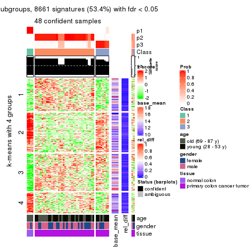
get_signatures(res, k = 4)

get_signatures(res, k = 5)
get_signatures(res, k = 6)
Signature heatmaps where rows are not scaled:
get_signatures(res, k = 2, scale_rows = FALSE)
get_signatures(res, k = 3, scale_rows = FALSE)
get_signatures(res, k = 4, scale_rows = FALSE)
get_signatures(res, k = 5, scale_rows = FALSE)
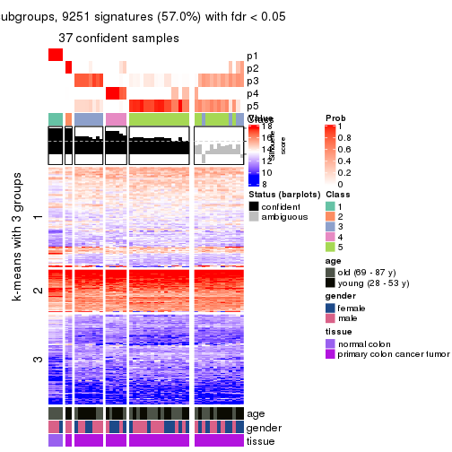
get_signatures(res, k = 6, scale_rows = FALSE)
Compare the overlap of signatures from different k:
compare_signatures(res)
get_signature() returns a data frame invisibly. TO get the list of signatures, the function
call should be assigned to a variable explicitly. In following code, if plot argument is set
to FALSE, no heatmap is plotted while only the differential analysis is performed.
# code only for demonstration
tb = get_signature(res, k = ..., plot = FALSE)
An example of the output of tb is:
#> which_row fdr mean_1 mean_2 scaled_mean_1 scaled_mean_2 km
#> 1 38 0.042760348 8.373488 9.131774 -0.5533452 0.5164555 1
#> 2 40 0.018707592 7.106213 8.469186 -0.6173731 0.5762149 1
#> 3 55 0.019134737 10.221463 11.207825 -0.6159697 0.5749050 1
#> 4 59 0.006059896 5.921854 7.869574 -0.6899429 0.6439467 1
#> 5 60 0.018055526 8.928898 10.211722 -0.6204761 0.5791110 1
#> 6 98 0.009384629 15.714769 14.887706 0.6635654 -0.6193277 2
...
The columns in tb are:
which_row: row indices corresponding to the input matrix.fdr: FDR for the differential test. mean_x: The mean value in group x.scaled_mean_x: The mean value in group x after rows are scaled.km: Row groups if k-means clustering is applied to rows.UMAP plot which shows how samples are separated.
dimension_reduction(res, k = 2, method = "UMAP")
dimension_reduction(res, k = 3, method = "UMAP")
dimension_reduction(res, k = 4, method = "UMAP")
dimension_reduction(res, k = 5, method = "UMAP")

dimension_reduction(res, k = 6, method = "UMAP")
Following heatmap shows how subgroups are split when increasing k:
collect_classes(res)
Test correlation between subgroups and known annotations. If the known annotation is numeric, one-way ANOVA test is applied, and if the known annotation is discrete, chi-squared contingency table test is applied.
test_to_known_factors(res)
#> n age(p) gender(p) tissue(p) k
#> ATC:hclust 49 0.8173 1.000 1.14e-03 2
#> ATC:hclust 48 0.0461 0.703 3.78e-11 3
#> ATC:hclust 40 0.0907 0.366 2.06e-09 4
#> ATC:hclust 37 0.1255 0.478 1.80e-07 5
#> ATC:hclust 24 0.0857 0.308 7.99e-05 6
If matrix rows can be associated to genes, consider to use functional_enrichment(res,
...) to perform function enrichment for the signature genes. See this vignette for more detailed explanations.
The object with results only for a single top-value method and a single partition method can be extracted as:
res = res_list["ATC", "kmeans"]
# you can also extract it by
# res = res_list["ATC:kmeans"]
A summary of res and all the functions that can be applied to it:
res
#> A 'ConsensusPartition' object with k = 2, 3, 4, 5, 6.
#> On a matrix with 16230 rows and 50 columns.
#> Top rows (1000, 2000, 3000, 4000, 5000) are extracted by 'ATC' method.
#> Subgroups are detected by 'kmeans' method.
#> Performed in total 1250 partitions by row resampling.
#> Best k for subgroups seems to be 4.
#>
#> Following methods can be applied to this 'ConsensusPartition' object:
#> [1] "cola_report" "collect_classes" "collect_plots"
#> [4] "collect_stats" "colnames" "compare_signatures"
#> [7] "consensus_heatmap" "dimension_reduction" "functional_enrichment"
#> [10] "get_anno_col" "get_anno" "get_classes"
#> [13] "get_consensus" "get_matrix" "get_membership"
#> [16] "get_param" "get_signatures" "get_stats"
#> [19] "is_best_k" "is_stable_k" "membership_heatmap"
#> [22] "ncol" "nrow" "plot_ecdf"
#> [25] "rownames" "select_partition_number" "show"
#> [28] "suggest_best_k" "test_to_known_factors"
collect_plots() function collects all the plots made from res for all k (number of partitions)
into one single page to provide an easy and fast comparison between different k.
collect_plots(res)
The plots are:
k and the heatmap of
predicted classes for each k.k.k.k.All the plots in panels can be made by individual functions and they are plotted later in this section.
select_partition_number() produces several plots showing different
statistics for choosing “optimized” k. There are following statistics:
k;k, the area increased is defined as \(A_k - A_{k-1}\).The detailed explanations of these statistics can be found in the cola vignette.
Generally speaking, lower PAC score, higher mean silhouette score or higher
concordance corresponds to better partition. Rand index and Jaccard index
measure how similar the current partition is compared to partition with k-1.
If they are too similar, we won't accept k is better than k-1.
select_partition_number(res)
The numeric values for all these statistics can be obtained by get_stats().
get_stats(res)
#> k 1-PAC mean_silhouette concordance area_increased Rand Jaccard
#> 2 2 0.878 0.887 0.957 0.2513 0.784 0.784
#> 3 3 0.622 0.884 0.926 0.7893 0.771 0.712
#> 4 4 0.698 0.887 0.928 0.4387 0.724 0.538
#> 5 5 0.606 0.555 0.691 0.1507 0.796 0.477
#> 6 6 0.638 0.515 0.666 0.0764 0.956 0.825
suggest_best_k() suggests the best \(k\) based on these statistics. The rules are as follows:
suggest_best_k(res)
#> [1] 4
Following shows the table of the partitions (You need to click the show/hide
code output link to see it). The membership matrix (columns with name p*)
is inferred by
clue::cl_consensus()
function with the SE method. Basically the value in the membership matrix
represents the probability to belong to a certain group. The finall class
label for an item is determined with the group with highest probability it
belongs to.
In get_classes() function, the entropy is calculated from the membership
matrix and the silhouette score is calculated from the consensus matrix.
cbind(get_classes(res, k = 2), get_membership(res, k = 2))
#> class entropy silhouette p1 p2
#> GSM615919 2 0.936 0.448 0.352 0.648
#> GSM615921 2 0.000 0.954 0.000 1.000
#> GSM615922 2 0.000 0.954 0.000 1.000
#> GSM615925 2 0.909 0.507 0.324 0.676
#> GSM615926 2 0.000 0.954 0.000 1.000
#> GSM615933 2 0.000 0.954 0.000 1.000
#> GSM615939 2 0.000 0.954 0.000 1.000
#> GSM615941 2 0.000 0.954 0.000 1.000
#> GSM615944 2 0.000 0.954 0.000 1.000
#> GSM615945 2 0.000 0.954 0.000 1.000
#> GSM615947 2 0.000 0.954 0.000 1.000
#> GSM615948 2 0.000 0.954 0.000 1.000
#> GSM615951 2 0.000 0.954 0.000 1.000
#> GSM615918 2 0.943 0.430 0.360 0.640
#> GSM615927 2 0.000 0.954 0.000 1.000
#> GSM615929 2 0.000 0.954 0.000 1.000
#> GSM615931 2 0.000 0.954 0.000 1.000
#> GSM615937 2 0.000 0.954 0.000 1.000
#> GSM615938 2 0.000 0.954 0.000 1.000
#> GSM615940 2 0.000 0.954 0.000 1.000
#> GSM615946 2 0.000 0.954 0.000 1.000
#> GSM615952 2 0.000 0.954 0.000 1.000
#> GSM615953 2 0.000 0.954 0.000 1.000
#> GSM615955 1 0.958 0.312 0.620 0.380
#> GSM721722 1 0.000 0.916 1.000 0.000
#> GSM721723 2 0.000 0.954 0.000 1.000
#> GSM721724 2 0.000 0.954 0.000 1.000
#> GSM615917 2 0.936 0.448 0.352 0.648
#> GSM615920 2 0.943 0.430 0.360 0.640
#> GSM615923 2 0.000 0.954 0.000 1.000
#> GSM615928 2 0.000 0.954 0.000 1.000
#> GSM615934 2 0.000 0.954 0.000 1.000
#> GSM615950 2 0.000 0.954 0.000 1.000
#> GSM615954 2 0.000 0.954 0.000 1.000
#> GSM615956 2 0.000 0.954 0.000 1.000
#> GSM615958 1 0.000 0.916 1.000 0.000
#> GSM615924 2 0.000 0.954 0.000 1.000
#> GSM615930 2 0.000 0.954 0.000 1.000
#> GSM615932 2 0.000 0.954 0.000 1.000
#> GSM615935 2 0.000 0.954 0.000 1.000
#> GSM615936 2 0.000 0.954 0.000 1.000
#> GSM615942 2 0.000 0.954 0.000 1.000
#> GSM615943 2 0.000 0.954 0.000 1.000
#> GSM615949 2 0.000 0.954 0.000 1.000
#> GSM615957 2 0.000 0.954 0.000 1.000
#> GSM721720 2 0.000 0.954 0.000 1.000
#> GSM721721 2 0.000 0.954 0.000 1.000
#> GSM615959 1 0.000 0.916 1.000 0.000
#> GSM615960 1 0.000 0.916 1.000 0.000
#> GSM615961 1 0.000 0.916 1.000 0.000
cbind(get_classes(res, k = 3), get_membership(res, k = 3))
#> class entropy silhouette p1 p2 p3
#> GSM615919 3 0.4326 0.809 0.012 0.144 0.844
#> GSM615921 2 0.1163 0.924 0.000 0.972 0.028
#> GSM615922 2 0.3941 0.861 0.000 0.844 0.156
#> GSM615925 3 0.4326 0.809 0.012 0.144 0.844
#> GSM615926 3 0.3340 0.687 0.000 0.120 0.880
#> GSM615933 2 0.1163 0.924 0.000 0.972 0.028
#> GSM615939 2 0.1163 0.918 0.000 0.972 0.028
#> GSM615941 2 0.4291 0.843 0.000 0.820 0.180
#> GSM615944 2 0.4291 0.843 0.000 0.820 0.180
#> GSM615945 2 0.1163 0.924 0.000 0.972 0.028
#> GSM615947 2 0.1289 0.918 0.000 0.968 0.032
#> GSM615948 2 0.1289 0.918 0.000 0.968 0.032
#> GSM615951 2 0.3941 0.861 0.000 0.844 0.156
#> GSM615918 3 0.4326 0.809 0.012 0.144 0.844
#> GSM615927 2 0.1163 0.924 0.000 0.972 0.028
#> GSM615929 3 0.1031 0.790 0.000 0.024 0.976
#> GSM615931 2 0.0000 0.922 0.000 1.000 0.000
#> GSM615937 2 0.1163 0.924 0.000 0.972 0.028
#> GSM615938 2 0.1163 0.924 0.000 0.972 0.028
#> GSM615940 2 0.3941 0.861 0.000 0.844 0.156
#> GSM615946 2 0.1163 0.924 0.000 0.972 0.028
#> GSM615952 2 0.4291 0.843 0.000 0.820 0.180
#> GSM615953 2 0.0592 0.920 0.000 0.988 0.012
#> GSM615955 3 0.3933 0.701 0.092 0.028 0.880
#> GSM721722 3 0.5363 0.592 0.276 0.000 0.724
#> GSM721723 2 0.1163 0.924 0.000 0.972 0.028
#> GSM721724 2 0.1411 0.916 0.000 0.964 0.036
#> GSM615917 3 0.4326 0.809 0.012 0.144 0.844
#> GSM615920 3 0.1620 0.793 0.012 0.024 0.964
#> GSM615923 2 0.1163 0.924 0.000 0.972 0.028
#> GSM615928 2 0.1163 0.924 0.000 0.972 0.028
#> GSM615934 2 0.3941 0.861 0.000 0.844 0.156
#> GSM615950 2 0.1163 0.924 0.000 0.972 0.028
#> GSM615954 2 0.1163 0.924 0.000 0.972 0.028
#> GSM615956 2 0.2165 0.907 0.000 0.936 0.064
#> GSM615958 1 0.0000 1.000 1.000 0.000 0.000
#> GSM615924 2 0.1529 0.916 0.000 0.960 0.040
#> GSM615930 2 0.1163 0.924 0.000 0.972 0.028
#> GSM615932 2 0.1163 0.924 0.000 0.972 0.028
#> GSM615935 2 0.3941 0.861 0.000 0.844 0.156
#> GSM615936 2 0.3941 0.861 0.000 0.844 0.156
#> GSM615942 2 0.3941 0.861 0.000 0.844 0.156
#> GSM615943 2 0.1163 0.924 0.000 0.972 0.028
#> GSM615949 2 0.1411 0.916 0.000 0.964 0.036
#> GSM615957 2 0.3941 0.861 0.000 0.844 0.156
#> GSM721720 2 0.1163 0.924 0.000 0.972 0.028
#> GSM721721 2 0.1163 0.924 0.000 0.972 0.028
#> GSM615959 1 0.0000 1.000 1.000 0.000 0.000
#> GSM615960 1 0.0000 1.000 1.000 0.000 0.000
#> GSM615961 1 0.0000 1.000 1.000 0.000 0.000
cbind(get_classes(res, k = 4), get_membership(res, k = 4))
#> class entropy silhouette p1 p2 p3 p4
#> GSM615919 4 0.0188 0.99271 0.000 0.004 0.000 0.996
#> GSM615921 2 0.1389 0.94058 0.000 0.952 0.048 0.000
#> GSM615922 3 0.2011 0.84443 0.000 0.080 0.920 0.000
#> GSM615925 4 0.0188 0.99271 0.000 0.004 0.000 0.996
#> GSM615926 3 0.3893 0.67704 0.000 0.008 0.796 0.196
#> GSM615933 2 0.0000 0.94113 0.000 1.000 0.000 0.000
#> GSM615939 2 0.2814 0.87560 0.000 0.868 0.132 0.000
#> GSM615941 3 0.2002 0.83148 0.000 0.044 0.936 0.020
#> GSM615944 3 0.2002 0.83148 0.000 0.044 0.936 0.020
#> GSM615945 2 0.0000 0.94113 0.000 1.000 0.000 0.000
#> GSM615947 2 0.2868 0.87179 0.000 0.864 0.136 0.000
#> GSM615948 2 0.3074 0.86212 0.000 0.848 0.152 0.000
#> GSM615951 3 0.2011 0.84443 0.000 0.080 0.920 0.000
#> GSM615918 4 0.0188 0.99271 0.000 0.004 0.000 0.996
#> GSM615927 2 0.1576 0.93963 0.000 0.948 0.048 0.004
#> GSM615929 4 0.0469 0.98699 0.000 0.000 0.012 0.988
#> GSM615931 2 0.0000 0.94113 0.000 1.000 0.000 0.000
#> GSM615937 2 0.0707 0.94350 0.000 0.980 0.020 0.000
#> GSM615938 2 0.0000 0.94113 0.000 1.000 0.000 0.000
#> GSM615940 3 0.3945 0.76641 0.000 0.216 0.780 0.004
#> GSM615946 2 0.0000 0.94113 0.000 1.000 0.000 0.000
#> GSM615952 3 0.1724 0.82715 0.000 0.032 0.948 0.020
#> GSM615953 2 0.3266 0.86586 0.000 0.832 0.168 0.000
#> GSM615955 3 0.4086 0.63837 0.008 0.000 0.776 0.216
#> GSM721722 4 0.0804 0.98216 0.012 0.000 0.008 0.980
#> GSM721723 2 0.1302 0.94105 0.000 0.956 0.044 0.000
#> GSM721724 2 0.1022 0.93497 0.000 0.968 0.032 0.000
#> GSM615917 4 0.0188 0.99271 0.000 0.004 0.000 0.996
#> GSM615920 4 0.0336 0.98898 0.000 0.000 0.008 0.992
#> GSM615923 2 0.1389 0.94058 0.000 0.952 0.048 0.000
#> GSM615928 2 0.1576 0.93963 0.000 0.948 0.048 0.004
#> GSM615934 3 0.2647 0.84091 0.000 0.120 0.880 0.000
#> GSM615950 2 0.0000 0.94113 0.000 1.000 0.000 0.000
#> GSM615954 2 0.2704 0.90094 0.000 0.876 0.124 0.000
#> GSM615956 3 0.4994 -0.00973 0.000 0.480 0.520 0.000
#> GSM615958 1 0.0707 0.99050 0.980 0.000 0.020 0.000
#> GSM615924 2 0.1576 0.93963 0.000 0.948 0.048 0.004
#> GSM615930 2 0.1792 0.91752 0.000 0.932 0.068 0.000
#> GSM615932 2 0.2408 0.89652 0.000 0.896 0.104 0.000
#> GSM615935 3 0.3945 0.76641 0.000 0.216 0.780 0.004
#> GSM615936 3 0.3219 0.81486 0.000 0.164 0.836 0.000
#> GSM615942 3 0.2589 0.84204 0.000 0.116 0.884 0.000
#> GSM615943 2 0.0000 0.94113 0.000 1.000 0.000 0.000
#> GSM615949 2 0.0657 0.93833 0.000 0.984 0.012 0.004
#> GSM615957 3 0.1940 0.84424 0.000 0.076 0.924 0.000
#> GSM721720 2 0.1867 0.93324 0.000 0.928 0.072 0.000
#> GSM721721 2 0.1576 0.93963 0.000 0.948 0.048 0.004
#> GSM615959 1 0.0000 0.99486 1.000 0.000 0.000 0.000
#> GSM615960 1 0.0336 0.99434 0.992 0.000 0.008 0.000
#> GSM615961 1 0.0000 0.99486 1.000 0.000 0.000 0.000
cbind(get_classes(res, k = 5), get_membership(res, k = 5))
#> class entropy silhouette p1 p2 p3 p4 p5
#> GSM615919 4 0.0000 0.9365 0.000 0.000 0.000 1.000 0.000
#> GSM615921 5 0.4090 0.8338 0.000 0.268 0.000 0.016 0.716
#> GSM615922 3 0.4114 0.8032 0.000 0.244 0.732 0.000 0.024
#> GSM615925 4 0.0000 0.9365 0.000 0.000 0.000 1.000 0.000
#> GSM615926 3 0.1891 0.6915 0.000 0.016 0.936 0.032 0.016
#> GSM615933 2 0.4397 -0.0850 0.004 0.564 0.000 0.000 0.432
#> GSM615939 2 0.2974 0.4414 0.000 0.868 0.052 0.000 0.080
#> GSM615941 3 0.2891 0.8183 0.000 0.176 0.824 0.000 0.000
#> GSM615944 3 0.1956 0.7680 0.000 0.076 0.916 0.000 0.008
#> GSM615945 2 0.4397 -0.0850 0.004 0.564 0.000 0.000 0.432
#> GSM615947 2 0.3055 0.4442 0.000 0.864 0.064 0.000 0.072
#> GSM615948 2 0.3586 0.4305 0.000 0.828 0.096 0.000 0.076
#> GSM615951 3 0.4024 0.8075 0.000 0.220 0.752 0.000 0.028
#> GSM615918 4 0.0000 0.9365 0.000 0.000 0.000 1.000 0.000
#> GSM615927 5 0.4114 0.8351 0.000 0.272 0.000 0.016 0.712
#> GSM615929 4 0.0703 0.9296 0.000 0.000 0.024 0.976 0.000
#> GSM615931 2 0.2732 0.3783 0.000 0.840 0.000 0.000 0.160
#> GSM615937 5 0.3932 0.7754 0.000 0.328 0.000 0.000 0.672
#> GSM615938 2 0.4403 -0.1040 0.004 0.560 0.000 0.000 0.436
#> GSM615940 2 0.6451 -0.2586 0.004 0.496 0.328 0.000 0.172
#> GSM615946 2 0.3636 0.2140 0.000 0.728 0.000 0.000 0.272
#> GSM615952 3 0.3053 0.8184 0.000 0.164 0.828 0.000 0.008
#> GSM615953 2 0.4840 0.3099 0.000 0.676 0.056 0.000 0.268
#> GSM615955 3 0.2079 0.6531 0.000 0.000 0.916 0.064 0.020
#> GSM721722 4 0.3912 0.8012 0.004 0.000 0.208 0.768 0.020
#> GSM721723 5 0.3395 0.7833 0.000 0.236 0.000 0.000 0.764
#> GSM721724 2 0.3257 0.4370 0.004 0.844 0.028 0.000 0.124
#> GSM615917 4 0.0000 0.9365 0.000 0.000 0.000 1.000 0.000
#> GSM615920 4 0.3011 0.8608 0.000 0.000 0.140 0.844 0.016
#> GSM615923 5 0.3395 0.8243 0.000 0.236 0.000 0.000 0.764
#> GSM615928 5 0.4114 0.8351 0.000 0.272 0.000 0.016 0.712
#> GSM615934 3 0.4367 0.6516 0.000 0.416 0.580 0.000 0.004
#> GSM615950 2 0.4403 -0.0971 0.004 0.560 0.000 0.000 0.436
#> GSM615954 5 0.4016 0.6962 0.000 0.272 0.012 0.000 0.716
#> GSM615956 2 0.6040 0.0386 0.000 0.556 0.292 0.000 0.152
#> GSM615958 1 0.0162 0.9966 0.996 0.000 0.000 0.004 0.000
#> GSM615924 5 0.4206 0.8216 0.000 0.288 0.000 0.016 0.696
#> GSM615930 2 0.4787 -0.2232 0.000 0.548 0.020 0.000 0.432
#> GSM615932 2 0.4718 0.0884 0.000 0.628 0.028 0.000 0.344
#> GSM615935 2 0.6430 -0.2373 0.004 0.504 0.320 0.000 0.172
#> GSM615936 2 0.4309 -0.0128 0.000 0.676 0.308 0.000 0.016
#> GSM615942 3 0.4367 0.6516 0.000 0.416 0.580 0.000 0.004
#> GSM615943 2 0.4390 -0.0740 0.004 0.568 0.000 0.000 0.428
#> GSM615949 2 0.3308 0.4210 0.004 0.832 0.020 0.000 0.144
#> GSM615957 3 0.4766 0.7897 0.000 0.220 0.708 0.000 0.072
#> GSM721720 5 0.3863 0.7157 0.000 0.248 0.012 0.000 0.740
#> GSM721721 5 0.3934 0.8372 0.000 0.244 0.000 0.016 0.740
#> GSM615959 1 0.0451 0.9966 0.988 0.000 0.000 0.004 0.008
#> GSM615960 1 0.0162 0.9966 0.996 0.000 0.000 0.004 0.000
#> GSM615961 1 0.0451 0.9966 0.988 0.000 0.000 0.004 0.008
cbind(get_classes(res, k = 6), get_membership(res, k = 6))
#> class entropy silhouette p1 p2 p3 p4 p5 p6
#> GSM615919 4 0.0000 0.8758 0.000 0.000 0.000 1.000 NA 0.000
#> GSM615921 6 0.2412 0.7075 0.000 0.092 0.000 0.028 NA 0.880
#> GSM615922 3 0.1984 0.6301 0.000 0.056 0.912 0.000 NA 0.032
#> GSM615925 4 0.0146 0.8747 0.000 0.000 0.000 0.996 NA 0.000
#> GSM615926 3 0.4242 0.4157 0.000 0.012 0.572 0.004 NA 0.000
#> GSM615933 2 0.5336 0.2709 0.000 0.572 0.000 0.000 NA 0.284
#> GSM615939 2 0.5298 0.3556 0.000 0.644 0.244 0.000 NA 0.064
#> GSM615941 3 0.1845 0.6391 0.000 0.028 0.920 0.000 NA 0.000
#> GSM615944 3 0.3575 0.5293 0.000 0.008 0.708 0.000 NA 0.000
#> GSM615945 2 0.5318 0.2789 0.000 0.580 0.000 0.000 NA 0.272
#> GSM615947 2 0.5288 0.3502 0.000 0.640 0.252 0.000 NA 0.060
#> GSM615948 2 0.5333 0.3236 0.000 0.624 0.272 0.000 NA 0.056
#> GSM615951 3 0.2170 0.6351 0.000 0.016 0.908 0.000 NA 0.016
#> GSM615918 4 0.0000 0.8758 0.000 0.000 0.000 1.000 NA 0.000
#> GSM615927 6 0.2510 0.7089 0.000 0.100 0.000 0.028 NA 0.872
#> GSM615929 4 0.1096 0.8647 0.000 0.004 0.004 0.964 NA 0.008
#> GSM615931 2 0.3241 0.4683 0.000 0.824 0.064 0.000 NA 0.112
#> GSM615937 6 0.5638 0.3311 0.000 0.352 0.004 0.000 NA 0.504
#> GSM615938 2 0.5410 0.2435 0.000 0.564 0.000 0.000 NA 0.280
#> GSM615940 3 0.6301 0.1359 0.000 0.388 0.400 0.000 NA 0.020
#> GSM615946 2 0.4332 0.3877 0.000 0.740 0.008 0.000 NA 0.156
#> GSM615952 3 0.1757 0.6407 0.000 0.008 0.916 0.000 NA 0.000
#> GSM615953 2 0.7335 0.1085 0.000 0.384 0.284 0.000 NA 0.132
#> GSM615955 3 0.4460 0.3689 0.000 0.000 0.520 0.028 NA 0.000
#> GSM721722 4 0.4084 0.6301 0.000 0.000 0.012 0.588 NA 0.000
#> GSM721723 6 0.5570 0.5509 0.000 0.152 0.016 0.000 NA 0.600
#> GSM721724 2 0.5776 0.3975 0.000 0.624 0.204 0.000 NA 0.108
#> GSM615917 4 0.0000 0.8758 0.000 0.000 0.000 1.000 NA 0.000
#> GSM615920 4 0.3668 0.6959 0.000 0.004 0.000 0.668 NA 0.000
#> GSM615923 6 0.2744 0.6963 0.000 0.072 0.000 0.000 NA 0.864
#> GSM615928 6 0.2510 0.7089 0.000 0.100 0.000 0.028 NA 0.872
#> GSM615934 3 0.4019 0.4149 0.000 0.332 0.652 0.000 NA 0.004
#> GSM615950 2 0.5410 0.2435 0.000 0.564 0.000 0.000 NA 0.280
#> GSM615954 6 0.6403 0.4670 0.000 0.164 0.048 0.000 NA 0.500
#> GSM615956 3 0.7071 0.1736 0.000 0.240 0.448 0.000 NA 0.108
#> GSM615958 1 0.0508 0.9928 0.984 0.012 0.000 0.000 NA 0.000
#> GSM615924 6 0.2747 0.7039 0.000 0.108 0.000 0.028 NA 0.860
#> GSM615930 2 0.5712 0.2681 0.000 0.592 0.024 0.000 NA 0.236
#> GSM615932 2 0.5732 0.3450 0.000 0.628 0.048 0.000 NA 0.172
#> GSM615935 2 0.6301 -0.2255 0.000 0.400 0.388 0.000 NA 0.020
#> GSM615936 2 0.4925 -0.0866 0.000 0.492 0.460 0.000 NA 0.016
#> GSM615942 3 0.4034 0.4084 0.000 0.336 0.648 0.000 NA 0.004
#> GSM615943 2 0.5336 0.2709 0.000 0.572 0.000 0.000 NA 0.284
#> GSM615949 2 0.5646 0.4104 0.000 0.640 0.192 0.000 NA 0.108
#> GSM615957 3 0.3749 0.5923 0.000 0.028 0.804 0.000 NA 0.044
#> GSM721720 6 0.6155 0.4991 0.000 0.160 0.036 0.000 NA 0.532
#> GSM721721 6 0.2479 0.7090 0.000 0.064 0.000 0.028 NA 0.892
#> GSM615959 1 0.0000 0.9942 1.000 0.000 0.000 0.000 NA 0.000
#> GSM615960 1 0.0405 0.9938 0.988 0.008 0.000 0.000 NA 0.000
#> GSM615961 1 0.0000 0.9942 1.000 0.000 0.000 0.000 NA 0.000
Heatmaps for the consensus matrix. It visualizes the probability of two samples to be in a same group.
consensus_heatmap(res, k = 2)

consensus_heatmap(res, k = 3)

consensus_heatmap(res, k = 4)
consensus_heatmap(res, k = 5)
consensus_heatmap(res, k = 6)
Heatmaps for the membership of samples in all partitions to see how consistent they are:
membership_heatmap(res, k = 2)
membership_heatmap(res, k = 3)
membership_heatmap(res, k = 4)
membership_heatmap(res, k = 5)
membership_heatmap(res, k = 6)
As soon as we have had the classes for columns, we can look for signatures which are significantly different between classes which can be candidate marks for certain classes. Following are the heatmaps for signatures.
Signature heatmaps where rows are scaled:
get_signatures(res, k = 2)
get_signatures(res, k = 3)
get_signatures(res, k = 4)
get_signatures(res, k = 5)
get_signatures(res, k = 6)
Signature heatmaps where rows are not scaled:
get_signatures(res, k = 2, scale_rows = FALSE)
get_signatures(res, k = 3, scale_rows = FALSE)
get_signatures(res, k = 4, scale_rows = FALSE)
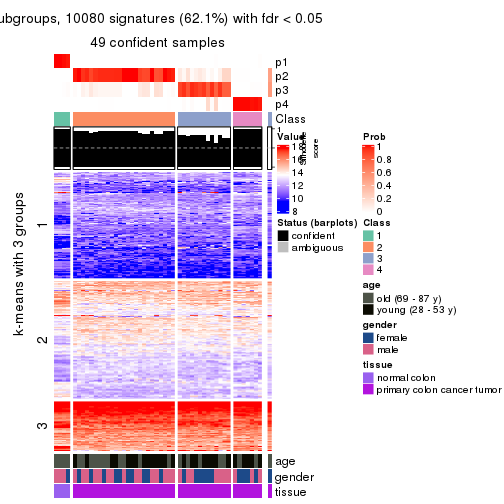
get_signatures(res, k = 5, scale_rows = FALSE)
get_signatures(res, k = 6, scale_rows = FALSE)
Compare the overlap of signatures from different k:
compare_signatures(res)
get_signature() returns a data frame invisibly. TO get the list of signatures, the function
call should be assigned to a variable explicitly. In following code, if plot argument is set
to FALSE, no heatmap is plotted while only the differential analysis is performed.
# code only for demonstration
tb = get_signature(res, k = ..., plot = FALSE)
An example of the output of tb is:
#> which_row fdr mean_1 mean_2 scaled_mean_1 scaled_mean_2 km
#> 1 38 0.042760348 8.373488 9.131774 -0.5533452 0.5164555 1
#> 2 40 0.018707592 7.106213 8.469186 -0.6173731 0.5762149 1
#> 3 55 0.019134737 10.221463 11.207825 -0.6159697 0.5749050 1
#> 4 59 0.006059896 5.921854 7.869574 -0.6899429 0.6439467 1
#> 5 60 0.018055526 8.928898 10.211722 -0.6204761 0.5791110 1
#> 6 98 0.009384629 15.714769 14.887706 0.6635654 -0.6193277 2
...
The columns in tb are:
which_row: row indices corresponding to the input matrix.fdr: FDR for the differential test. mean_x: The mean value in group x.scaled_mean_x: The mean value in group x after rows are scaled.km: Row groups if k-means clustering is applied to rows.UMAP plot which shows how samples are separated.
dimension_reduction(res, k = 2, method = "UMAP")
dimension_reduction(res, k = 3, method = "UMAP")
dimension_reduction(res, k = 4, method = "UMAP")
dimension_reduction(res, k = 5, method = "UMAP")
dimension_reduction(res, k = 6, method = "UMAP")
Following heatmap shows how subgroups are split when increasing k:
collect_classes(res)
Test correlation between subgroups and known annotations. If the known annotation is numeric, one-way ANOVA test is applied, and if the known annotation is discrete, chi-squared contingency table test is applied.
test_to_known_factors(res)
#> n age(p) gender(p) tissue(p) k
#> ATC:kmeans 45 0.2673 0.557 3.52e-07 2
#> ATC:kmeans 50 0.0343 0.582 1.39e-11 3
#> ATC:kmeans 49 0.1171 0.742 1.30e-10 4
#> ATC:kmeans 31 0.0640 0.591 8.50e-07 5
#> ATC:kmeans 24 0.0463 0.582 2.50e-05 6
If matrix rows can be associated to genes, consider to use functional_enrichment(res,
...) to perform function enrichment for the signature genes. See this vignette for more detailed explanations.
The object with results only for a single top-value method and a single partition method can be extracted as:
res = res_list["ATC", "skmeans"]
# you can also extract it by
# res = res_list["ATC:skmeans"]
A summary of res and all the functions that can be applied to it:
res
#> A 'ConsensusPartition' object with k = 2, 3, 4, 5, 6.
#> On a matrix with 16230 rows and 50 columns.
#> Top rows (1000, 2000, 3000, 4000, 5000) are extracted by 'ATC' method.
#> Subgroups are detected by 'skmeans' method.
#> Performed in total 1250 partitions by row resampling.
#> Best k for subgroups seems to be 3.
#>
#> Following methods can be applied to this 'ConsensusPartition' object:
#> [1] "cola_report" "collect_classes" "collect_plots"
#> [4] "collect_stats" "colnames" "compare_signatures"
#> [7] "consensus_heatmap" "dimension_reduction" "functional_enrichment"
#> [10] "get_anno_col" "get_anno" "get_classes"
#> [13] "get_consensus" "get_matrix" "get_membership"
#> [16] "get_param" "get_signatures" "get_stats"
#> [19] "is_best_k" "is_stable_k" "membership_heatmap"
#> [22] "ncol" "nrow" "plot_ecdf"
#> [25] "rownames" "select_partition_number" "show"
#> [28] "suggest_best_k" "test_to_known_factors"
collect_plots() function collects all the plots made from res for all k (number of partitions)
into one single page to provide an easy and fast comparison between different k.
collect_plots(res)
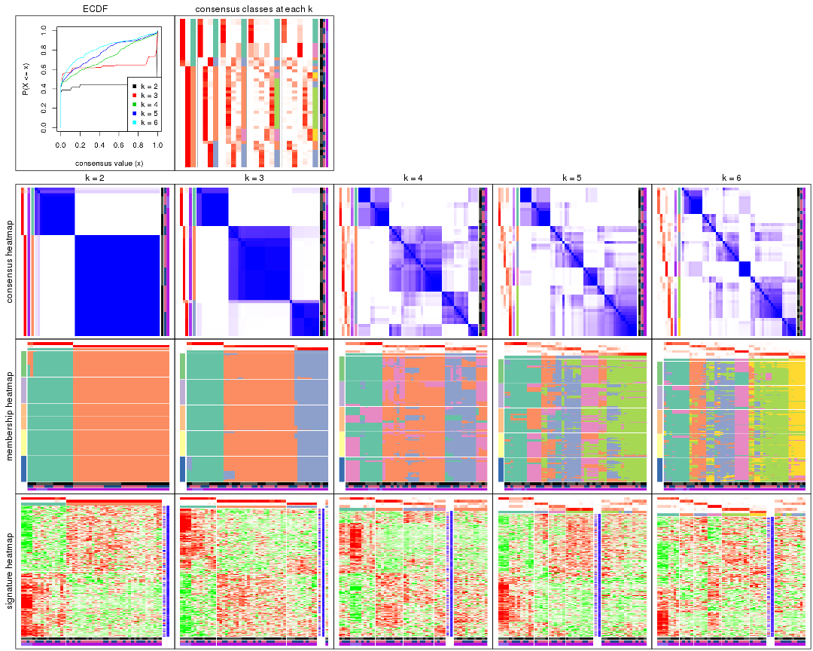
The plots are:
k and the heatmap of
predicted classes for each k.k.k.k.All the plots in panels can be made by individual functions and they are plotted later in this section.
select_partition_number() produces several plots showing different
statistics for choosing “optimized” k. There are following statistics:
k;k, the area increased is defined as \(A_k - A_{k-1}\).The detailed explanations of these statistics can be found in the cola vignette.
Generally speaking, lower PAC score, higher mean silhouette score or higher
concordance corresponds to better partition. Rand index and Jaccard index
measure how similar the current partition is compared to partition with k-1.
If they are too similar, we won't accept k is better than k-1.
select_partition_number(res)
The numeric values for all these statistics can be obtained by get_stats().
get_stats(res)
#> k 1-PAC mean_silhouette concordance area_increased Rand Jaccard
#> 2 2 1.000 0.987 0.994 0.4396 0.556 0.556
#> 3 3 0.908 0.946 0.975 0.4476 0.762 0.589
#> 4 4 0.609 0.592 0.760 0.1470 0.905 0.751
#> 5 5 0.637 0.512 0.701 0.0728 0.887 0.645
#> 6 6 0.696 0.622 0.773 0.0503 0.901 0.602
suggest_best_k() suggests the best \(k\) based on these statistics. The rules are as follows:
suggest_best_k(res)
#> [1] 3
#> attr(,"optional")
#> [1] 2
There is also optional best \(k\) = 2 that is worth to check.
Following shows the table of the partitions (You need to click the show/hide
code output link to see it). The membership matrix (columns with name p*)
is inferred by
clue::cl_consensus()
function with the SE method. Basically the value in the membership matrix
represents the probability to belong to a certain group. The finall class
label for an item is determined with the group with highest probability it
belongs to.
In get_classes() function, the entropy is calculated from the membership
matrix and the silhouette score is calculated from the consensus matrix.
cbind(get_classes(res, k = 2), get_membership(res, k = 2))
#> class entropy silhouette p1 p2
#> GSM615919 1 0.0000 0.979 1.000 0.000
#> GSM615921 2 0.0000 1.000 0.000 1.000
#> GSM615922 2 0.0000 1.000 0.000 1.000
#> GSM615925 1 0.0000 0.979 1.000 0.000
#> GSM615926 1 0.0000 0.979 1.000 0.000
#> GSM615933 2 0.0000 1.000 0.000 1.000
#> GSM615939 2 0.0000 1.000 0.000 1.000
#> GSM615941 1 0.7219 0.762 0.800 0.200
#> GSM615944 1 0.4939 0.881 0.892 0.108
#> GSM615945 2 0.0000 1.000 0.000 1.000
#> GSM615947 2 0.0000 1.000 0.000 1.000
#> GSM615948 2 0.0000 1.000 0.000 1.000
#> GSM615951 2 0.0000 1.000 0.000 1.000
#> GSM615918 1 0.0000 0.979 1.000 0.000
#> GSM615927 2 0.0000 1.000 0.000 1.000
#> GSM615929 1 0.0000 0.979 1.000 0.000
#> GSM615931 2 0.0000 1.000 0.000 1.000
#> GSM615937 2 0.0000 1.000 0.000 1.000
#> GSM615938 2 0.0000 1.000 0.000 1.000
#> GSM615940 2 0.0000 1.000 0.000 1.000
#> GSM615946 2 0.0000 1.000 0.000 1.000
#> GSM615952 1 0.0672 0.973 0.992 0.008
#> GSM615953 2 0.0000 1.000 0.000 1.000
#> GSM615955 1 0.0000 0.979 1.000 0.000
#> GSM721722 1 0.0000 0.979 1.000 0.000
#> GSM721723 2 0.0000 1.000 0.000 1.000
#> GSM721724 2 0.0000 1.000 0.000 1.000
#> GSM615917 1 0.0000 0.979 1.000 0.000
#> GSM615920 1 0.0000 0.979 1.000 0.000
#> GSM615923 2 0.0000 1.000 0.000 1.000
#> GSM615928 2 0.0000 1.000 0.000 1.000
#> GSM615934 2 0.0000 1.000 0.000 1.000
#> GSM615950 2 0.0000 1.000 0.000 1.000
#> GSM615954 2 0.0000 1.000 0.000 1.000
#> GSM615956 2 0.0000 1.000 0.000 1.000
#> GSM615958 1 0.0000 0.979 1.000 0.000
#> GSM615924 2 0.0000 1.000 0.000 1.000
#> GSM615930 2 0.0000 1.000 0.000 1.000
#> GSM615932 2 0.0000 1.000 0.000 1.000
#> GSM615935 2 0.0000 1.000 0.000 1.000
#> GSM615936 2 0.0000 1.000 0.000 1.000
#> GSM615942 2 0.0000 1.000 0.000 1.000
#> GSM615943 2 0.0000 1.000 0.000 1.000
#> GSM615949 2 0.0000 1.000 0.000 1.000
#> GSM615957 2 0.0000 1.000 0.000 1.000
#> GSM721720 2 0.0000 1.000 0.000 1.000
#> GSM721721 2 0.0000 1.000 0.000 1.000
#> GSM615959 1 0.0000 0.979 1.000 0.000
#> GSM615960 1 0.0000 0.979 1.000 0.000
#> GSM615961 1 0.0000 0.979 1.000 0.000
cbind(get_classes(res, k = 3), get_membership(res, k = 3))
#> class entropy silhouette p1 p2 p3
#> GSM615919 1 0.0000 0.981 1.000 0.000 0.000
#> GSM615921 2 0.0237 0.978 0.000 0.996 0.004
#> GSM615922 3 0.0000 0.942 0.000 0.000 1.000
#> GSM615925 1 0.0000 0.981 1.000 0.000 0.000
#> GSM615926 1 0.3038 0.893 0.896 0.000 0.104
#> GSM615933 2 0.0000 0.978 0.000 1.000 0.000
#> GSM615939 2 0.0747 0.969 0.000 0.984 0.016
#> GSM615941 3 0.0237 0.942 0.004 0.000 0.996
#> GSM615944 3 0.0237 0.942 0.004 0.000 0.996
#> GSM615945 2 0.0000 0.978 0.000 1.000 0.000
#> GSM615947 2 0.2959 0.898 0.000 0.900 0.100
#> GSM615948 2 0.3192 0.885 0.000 0.888 0.112
#> GSM615951 3 0.0000 0.942 0.000 0.000 1.000
#> GSM615918 1 0.0000 0.981 1.000 0.000 0.000
#> GSM615927 2 0.0237 0.978 0.000 0.996 0.004
#> GSM615929 1 0.0000 0.981 1.000 0.000 0.000
#> GSM615931 2 0.0000 0.978 0.000 1.000 0.000
#> GSM615937 2 0.0000 0.978 0.000 1.000 0.000
#> GSM615938 2 0.0000 0.978 0.000 1.000 0.000
#> GSM615940 3 0.0747 0.942 0.000 0.016 0.984
#> GSM615946 2 0.0000 0.978 0.000 1.000 0.000
#> GSM615952 3 0.0237 0.942 0.004 0.000 0.996
#> GSM615953 2 0.0747 0.970 0.000 0.984 0.016
#> GSM615955 1 0.3267 0.880 0.884 0.000 0.116
#> GSM721722 1 0.0000 0.981 1.000 0.000 0.000
#> GSM721723 2 0.0237 0.978 0.000 0.996 0.004
#> GSM721724 2 0.3038 0.894 0.000 0.896 0.104
#> GSM615917 1 0.0000 0.981 1.000 0.000 0.000
#> GSM615920 1 0.0000 0.981 1.000 0.000 0.000
#> GSM615923 2 0.0237 0.978 0.000 0.996 0.004
#> GSM615928 2 0.0237 0.978 0.000 0.996 0.004
#> GSM615934 3 0.0747 0.942 0.000 0.016 0.984
#> GSM615950 2 0.0000 0.978 0.000 1.000 0.000
#> GSM615954 2 0.0747 0.970 0.000 0.984 0.016
#> GSM615956 3 0.6204 0.261 0.000 0.424 0.576
#> GSM615958 1 0.0000 0.981 1.000 0.000 0.000
#> GSM615924 2 0.0237 0.978 0.000 0.996 0.004
#> GSM615930 2 0.0000 0.978 0.000 1.000 0.000
#> GSM615932 2 0.0000 0.978 0.000 1.000 0.000
#> GSM615935 3 0.0747 0.942 0.000 0.016 0.984
#> GSM615936 3 0.1031 0.936 0.000 0.024 0.976
#> GSM615942 3 0.0747 0.942 0.000 0.016 0.984
#> GSM615943 2 0.0000 0.978 0.000 1.000 0.000
#> GSM615949 2 0.2878 0.902 0.000 0.904 0.096
#> GSM615957 3 0.0000 0.942 0.000 0.000 1.000
#> GSM721720 2 0.0237 0.978 0.000 0.996 0.004
#> GSM721721 2 0.0237 0.978 0.000 0.996 0.004
#> GSM615959 1 0.0000 0.981 1.000 0.000 0.000
#> GSM615960 1 0.0000 0.981 1.000 0.000 0.000
#> GSM615961 1 0.0000 0.981 1.000 0.000 0.000
cbind(get_classes(res, k = 4), get_membership(res, k = 4))
#> class entropy silhouette p1 p2 p3 p4
#> GSM615919 1 0.4888 0.6584 0.588 0.000 0.000 0.412
#> GSM615921 2 0.4981 -0.6992 0.000 0.536 0.000 0.464
#> GSM615922 3 0.3172 0.7935 0.000 0.000 0.840 0.160
#> GSM615925 1 0.4888 0.6584 0.588 0.000 0.000 0.412
#> GSM615926 1 0.3877 0.6705 0.840 0.000 0.048 0.112
#> GSM615933 2 0.0000 0.6075 0.000 1.000 0.000 0.000
#> GSM615939 2 0.4567 0.5233 0.000 0.716 0.276 0.008
#> GSM615941 3 0.5670 0.7473 0.104 0.008 0.736 0.152
#> GSM615944 3 0.6472 0.6855 0.172 0.008 0.668 0.152
#> GSM615945 2 0.0000 0.6075 0.000 1.000 0.000 0.000
#> GSM615947 2 0.4936 0.4976 0.000 0.672 0.316 0.012
#> GSM615948 2 0.5174 0.4590 0.000 0.620 0.368 0.012
#> GSM615951 3 0.3942 0.7761 0.000 0.000 0.764 0.236
#> GSM615918 1 0.4888 0.6584 0.588 0.000 0.000 0.412
#> GSM615927 4 0.4961 0.8800 0.000 0.448 0.000 0.552
#> GSM615929 1 0.4888 0.6584 0.588 0.000 0.000 0.412
#> GSM615931 2 0.3249 0.5825 0.000 0.852 0.140 0.008
#> GSM615937 2 0.2408 0.4823 0.000 0.896 0.000 0.104
#> GSM615938 2 0.0188 0.6045 0.000 0.996 0.000 0.004
#> GSM615940 3 0.2266 0.7716 0.000 0.084 0.912 0.004
#> GSM615946 2 0.2342 0.6012 0.000 0.912 0.080 0.008
#> GSM615952 3 0.6238 0.6992 0.092 0.000 0.632 0.276
#> GSM615953 2 0.5185 0.4846 0.000 0.748 0.076 0.176
#> GSM615955 1 0.4415 0.6302 0.804 0.000 0.056 0.140
#> GSM721722 1 0.0000 0.7926 1.000 0.000 0.000 0.000
#> GSM721723 2 0.4539 0.1250 0.000 0.720 0.008 0.272
#> GSM721724 2 0.4897 0.4872 0.000 0.660 0.332 0.008
#> GSM615917 1 0.4888 0.6584 0.588 0.000 0.000 0.412
#> GSM615920 1 0.0707 0.7908 0.980 0.000 0.000 0.020
#> GSM615923 2 0.4356 -0.0080 0.000 0.708 0.000 0.292
#> GSM615928 4 0.4981 0.8520 0.000 0.464 0.000 0.536
#> GSM615934 3 0.2596 0.7888 0.000 0.068 0.908 0.024
#> GSM615950 2 0.0000 0.6075 0.000 1.000 0.000 0.000
#> GSM615954 2 0.5189 0.0800 0.000 0.616 0.012 0.372
#> GSM615956 2 0.7547 0.2348 0.000 0.488 0.276 0.236
#> GSM615958 1 0.0000 0.7926 1.000 0.000 0.000 0.000
#> GSM615924 4 0.4500 0.7379 0.000 0.316 0.000 0.684
#> GSM615930 2 0.0336 0.6079 0.000 0.992 0.000 0.008
#> GSM615932 2 0.0804 0.6100 0.000 0.980 0.012 0.008
#> GSM615935 3 0.2714 0.7487 0.000 0.112 0.884 0.004
#> GSM615936 3 0.3401 0.6987 0.000 0.152 0.840 0.008
#> GSM615942 3 0.1792 0.7826 0.000 0.068 0.932 0.000
#> GSM615943 2 0.0000 0.6075 0.000 1.000 0.000 0.000
#> GSM615949 2 0.5099 0.4400 0.000 0.612 0.380 0.008
#> GSM615957 3 0.4277 0.7587 0.000 0.000 0.720 0.280
#> GSM721720 2 0.4877 0.0885 0.000 0.664 0.008 0.328
#> GSM721721 4 0.4948 0.8812 0.000 0.440 0.000 0.560
#> GSM615959 1 0.0000 0.7926 1.000 0.000 0.000 0.000
#> GSM615960 1 0.0000 0.7926 1.000 0.000 0.000 0.000
#> GSM615961 1 0.0000 0.7926 1.000 0.000 0.000 0.000
cbind(get_classes(res, k = 5), get_membership(res, k = 5))
#> class entropy silhouette p1 p2 p3 p4 p5
#> GSM615919 1 0.7018 0.5528 0.408 0.244 0.012 0.336 0.000
#> GSM615921 4 0.4122 0.9035 0.000 0.004 0.004 0.688 0.304
#> GSM615922 3 0.4277 0.3571 0.000 0.156 0.768 0.076 0.000
#> GSM615925 1 0.7018 0.5528 0.408 0.244 0.012 0.336 0.000
#> GSM615926 1 0.4107 0.5654 0.820 0.084 0.040 0.056 0.000
#> GSM615933 5 0.0451 0.6450 0.000 0.000 0.004 0.008 0.988
#> GSM615939 5 0.5268 0.3148 0.000 0.048 0.360 0.004 0.588
#> GSM615941 3 0.6772 0.1663 0.208 0.136 0.596 0.056 0.004
#> GSM615944 3 0.7159 0.0469 0.332 0.136 0.476 0.056 0.000
#> GSM615945 5 0.0451 0.6450 0.000 0.000 0.004 0.008 0.988
#> GSM615947 5 0.5360 0.2413 0.000 0.048 0.396 0.004 0.552
#> GSM615948 5 0.5585 0.1008 0.000 0.044 0.460 0.012 0.484
#> GSM615951 2 0.4302 0.2920 0.000 0.520 0.480 0.000 0.000
#> GSM615918 1 0.7018 0.5528 0.408 0.244 0.012 0.336 0.000
#> GSM615927 4 0.3838 0.9215 0.000 0.000 0.004 0.716 0.280
#> GSM615929 1 0.7018 0.5528 0.408 0.244 0.012 0.336 0.000
#> GSM615931 5 0.3535 0.5947 0.000 0.028 0.164 0.000 0.808
#> GSM615937 5 0.2624 0.5201 0.000 0.012 0.000 0.116 0.872
#> GSM615938 5 0.0566 0.6480 0.000 0.012 0.000 0.004 0.984
#> GSM615940 3 0.2959 0.5997 0.000 0.036 0.864 0.000 0.100
#> GSM615946 5 0.2234 0.6424 0.000 0.036 0.044 0.004 0.916
#> GSM615952 2 0.5733 0.4125 0.080 0.580 0.332 0.008 0.000
#> GSM615953 2 0.4494 0.2615 0.000 0.608 0.012 0.000 0.380
#> GSM615955 1 0.4218 0.5563 0.812 0.092 0.040 0.056 0.000
#> GSM721722 1 0.0000 0.6990 1.000 0.000 0.000 0.000 0.000
#> GSM721723 5 0.6438 -0.0700 0.000 0.280 0.000 0.220 0.500
#> GSM721724 5 0.5605 0.0831 0.000 0.052 0.464 0.008 0.476
#> GSM615917 1 0.7018 0.5528 0.408 0.244 0.012 0.336 0.000
#> GSM615920 1 0.1872 0.6892 0.928 0.052 0.000 0.020 0.000
#> GSM615923 4 0.4585 0.7630 0.000 0.008 0.004 0.592 0.396
#> GSM615928 4 0.3838 0.9215 0.000 0.000 0.004 0.716 0.280
#> GSM615934 3 0.2095 0.5962 0.000 0.008 0.920 0.012 0.060
#> GSM615950 5 0.0566 0.6426 0.000 0.000 0.004 0.012 0.984
#> GSM615954 5 0.6219 -0.0724 0.000 0.424 0.000 0.140 0.436
#> GSM615956 2 0.5156 0.4607 0.000 0.656 0.064 0.004 0.276
#> GSM615958 1 0.0000 0.6990 1.000 0.000 0.000 0.000 0.000
#> GSM615924 4 0.4052 0.8200 0.000 0.028 0.004 0.764 0.204
#> GSM615930 5 0.0798 0.6441 0.000 0.016 0.000 0.008 0.976
#> GSM615932 5 0.1299 0.6478 0.000 0.020 0.012 0.008 0.960
#> GSM615935 3 0.3214 0.5945 0.000 0.036 0.844 0.000 0.120
#> GSM615936 3 0.3381 0.5492 0.000 0.016 0.808 0.000 0.176
#> GSM615942 3 0.1914 0.5979 0.000 0.016 0.924 0.000 0.060
#> GSM615943 5 0.0451 0.6450 0.000 0.000 0.004 0.008 0.988
#> GSM615949 3 0.5234 -0.0632 0.000 0.036 0.524 0.004 0.436
#> GSM615957 2 0.3932 0.4896 0.000 0.672 0.328 0.000 0.000
#> GSM721720 5 0.6115 0.0657 0.000 0.280 0.000 0.168 0.552
#> GSM721721 4 0.3968 0.9200 0.000 0.004 0.004 0.716 0.276
#> GSM615959 1 0.0000 0.6990 1.000 0.000 0.000 0.000 0.000
#> GSM615960 1 0.0000 0.6990 1.000 0.000 0.000 0.000 0.000
#> GSM615961 1 0.0000 0.6990 1.000 0.000 0.000 0.000 0.000
cbind(get_classes(res, k = 6), get_membership(res, k = 6))
#> class entropy silhouette p1 p2 p3 p4 p5 p6
#> GSM615919 4 0.0000 0.9987 0.000 0.000 0.000 1.000 0.000 0.000
#> GSM615921 6 0.2436 0.9330 0.000 0.000 0.000 0.032 0.088 0.880
#> GSM615922 3 0.5513 0.3511 0.056 0.160 0.660 0.000 0.000 0.124
#> GSM615925 4 0.0000 0.9987 0.000 0.000 0.000 1.000 0.000 0.000
#> GSM615926 1 0.2673 0.7180 0.876 0.008 0.008 0.092 0.000 0.016
#> GSM615933 5 0.1807 0.7295 0.000 0.000 0.020 0.000 0.920 0.060
#> GSM615939 5 0.5516 0.1136 0.012 0.036 0.364 0.000 0.552 0.036
#> GSM615941 3 0.6417 0.1638 0.300 0.132 0.504 0.000 0.000 0.064
#> GSM615944 1 0.6510 -0.1799 0.416 0.124 0.396 0.000 0.000 0.064
#> GSM615945 5 0.1867 0.7288 0.000 0.000 0.020 0.000 0.916 0.064
#> GSM615947 5 0.5844 0.1212 0.024 0.044 0.356 0.000 0.540 0.036
#> GSM615948 3 0.5921 0.1244 0.024 0.044 0.496 0.000 0.400 0.036
#> GSM615951 2 0.3934 0.5288 0.020 0.728 0.240 0.000 0.000 0.012
#> GSM615918 4 0.0000 0.9987 0.000 0.000 0.000 1.000 0.000 0.000
#> GSM615927 6 0.2608 0.9350 0.000 0.000 0.000 0.048 0.080 0.872
#> GSM615929 4 0.0146 0.9947 0.004 0.000 0.000 0.996 0.000 0.000
#> GSM615931 5 0.3779 0.5972 0.008 0.008 0.152 0.000 0.792 0.040
#> GSM615937 5 0.4265 0.6291 0.024 0.032 0.008 0.000 0.752 0.184
#> GSM615938 5 0.2501 0.7261 0.004 0.016 0.028 0.000 0.896 0.056
#> GSM615940 3 0.3025 0.6136 0.004 0.068 0.860 0.000 0.060 0.008
#> GSM615946 5 0.2123 0.6893 0.008 0.000 0.064 0.000 0.908 0.020
#> GSM615952 2 0.4437 0.5854 0.120 0.744 0.120 0.000 0.000 0.016
#> GSM615953 2 0.3386 0.6482 0.008 0.788 0.000 0.000 0.188 0.016
#> GSM615955 1 0.2030 0.7063 0.908 0.028 0.000 0.064 0.000 0.000
#> GSM721722 1 0.3126 0.8094 0.752 0.000 0.000 0.248 0.000 0.000
#> GSM721723 5 0.6516 -0.0648 0.012 0.284 0.004 0.000 0.352 0.348
#> GSM721724 3 0.6044 0.1644 0.012 0.048 0.496 0.000 0.384 0.060
#> GSM615917 4 0.0000 0.9987 0.000 0.000 0.000 1.000 0.000 0.000
#> GSM615920 1 0.3351 0.7669 0.712 0.000 0.000 0.288 0.000 0.000
#> GSM615923 6 0.2664 0.8279 0.000 0.000 0.000 0.000 0.184 0.816
#> GSM615928 6 0.2457 0.9348 0.000 0.000 0.000 0.036 0.084 0.880
#> GSM615934 3 0.2606 0.5717 0.036 0.028 0.896 0.000 0.008 0.032
#> GSM615950 5 0.1863 0.7300 0.000 0.004 0.016 0.000 0.920 0.060
#> GSM615954 2 0.6094 0.2865 0.016 0.516 0.004 0.000 0.292 0.172
#> GSM615956 2 0.2468 0.6920 0.000 0.880 0.008 0.000 0.096 0.016
#> GSM615958 1 0.3126 0.8094 0.752 0.000 0.000 0.248 0.000 0.000
#> GSM615924 6 0.3570 0.8620 0.000 0.000 0.000 0.144 0.064 0.792
#> GSM615930 5 0.2150 0.6996 0.044 0.004 0.004 0.000 0.912 0.036
#> GSM615932 5 0.2574 0.6900 0.048 0.008 0.020 0.000 0.896 0.028
#> GSM615935 3 0.3448 0.6184 0.004 0.064 0.828 0.000 0.096 0.008
#> GSM615936 3 0.3677 0.6178 0.008 0.032 0.796 0.000 0.156 0.008
#> GSM615942 3 0.1921 0.6103 0.004 0.032 0.928 0.000 0.024 0.012
#> GSM615943 5 0.1745 0.7296 0.000 0.000 0.020 0.000 0.924 0.056
#> GSM615949 3 0.5292 0.2931 0.004 0.024 0.564 0.000 0.360 0.048
#> GSM615957 2 0.1501 0.6785 0.000 0.924 0.076 0.000 0.000 0.000
#> GSM721720 5 0.6409 -0.0111 0.020 0.308 0.000 0.000 0.428 0.244
#> GSM721721 6 0.2629 0.9263 0.000 0.000 0.000 0.060 0.068 0.872
#> GSM615959 1 0.3126 0.8094 0.752 0.000 0.000 0.248 0.000 0.000
#> GSM615960 1 0.3126 0.8094 0.752 0.000 0.000 0.248 0.000 0.000
#> GSM615961 1 0.3126 0.8094 0.752 0.000 0.000 0.248 0.000 0.000
Heatmaps for the consensus matrix. It visualizes the probability of two samples to be in a same group.
consensus_heatmap(res, k = 2)
consensus_heatmap(res, k = 3)
consensus_heatmap(res, k = 4)
consensus_heatmap(res, k = 5)
consensus_heatmap(res, k = 6)
Heatmaps for the membership of samples in all partitions to see how consistent they are:
membership_heatmap(res, k = 2)
membership_heatmap(res, k = 3)
membership_heatmap(res, k = 4)
membership_heatmap(res, k = 5)
membership_heatmap(res, k = 6)
As soon as we have had the classes for columns, we can look for signatures which are significantly different between classes which can be candidate marks for certain classes. Following are the heatmaps for signatures.
Signature heatmaps where rows are scaled:
get_signatures(res, k = 2)
get_signatures(res, k = 3)
get_signatures(res, k = 4)
get_signatures(res, k = 5)

get_signatures(res, k = 6)
Signature heatmaps where rows are not scaled:
get_signatures(res, k = 2, scale_rows = FALSE)
get_signatures(res, k = 3, scale_rows = FALSE)
get_signatures(res, k = 4, scale_rows = FALSE)
get_signatures(res, k = 5, scale_rows = FALSE)
get_signatures(res, k = 6, scale_rows = FALSE)
Compare the overlap of signatures from different k:
compare_signatures(res)
get_signature() returns a data frame invisibly. TO get the list of signatures, the function
call should be assigned to a variable explicitly. In following code, if plot argument is set
to FALSE, no heatmap is plotted while only the differential analysis is performed.
# code only for demonstration
tb = get_signature(res, k = ..., plot = FALSE)
An example of the output of tb is:
#> which_row fdr mean_1 mean_2 scaled_mean_1 scaled_mean_2 km
#> 1 38 0.042760348 8.373488 9.131774 -0.5533452 0.5164555 1
#> 2 40 0.018707592 7.106213 8.469186 -0.6173731 0.5762149 1
#> 3 55 0.019134737 10.221463 11.207825 -0.6159697 0.5749050 1
#> 4 59 0.006059896 5.921854 7.869574 -0.6899429 0.6439467 1
#> 5 60 0.018055526 8.928898 10.211722 -0.6204761 0.5791110 1
#> 6 98 0.009384629 15.714769 14.887706 0.6635654 -0.6193277 2
...
The columns in tb are:
which_row: row indices corresponding to the input matrix.fdr: FDR for the differential test. mean_x: The mean value in group x.scaled_mean_x: The mean value in group x after rows are scaled.km: Row groups if k-means clustering is applied to rows.UMAP plot which shows how samples are separated.
dimension_reduction(res, k = 2, method = "UMAP")
dimension_reduction(res, k = 3, method = "UMAP")
dimension_reduction(res, k = 4, method = "UMAP")
dimension_reduction(res, k = 5, method = "UMAP")
dimension_reduction(res, k = 6, method = "UMAP")
Following heatmap shows how subgroups are split when increasing k:
collect_classes(res)
Test correlation between subgroups and known annotations. If the known annotation is numeric, one-way ANOVA test is applied, and if the known annotation is discrete, chi-squared contingency table test is applied.
test_to_known_factors(res)
#> n age(p) gender(p) tissue(p) k
#> ATC:skmeans 50 0.601 0.779 0.01311 2
#> ATC:skmeans 49 0.991 0.918 0.00240 3
#> ATC:skmeans 38 0.690 0.888 0.03515 4
#> ATC:skmeans 34 0.418 0.640 0.06228 5
#> ATC:skmeans 39 0.375 0.799 0.00401 6
If matrix rows can be associated to genes, consider to use functional_enrichment(res,
...) to perform function enrichment for the signature genes. See this vignette for more detailed explanations.
The object with results only for a single top-value method and a single partition method can be extracted as:
res = res_list["ATC", "pam"]
# you can also extract it by
# res = res_list["ATC:pam"]
A summary of res and all the functions that can be applied to it:
res
#> A 'ConsensusPartition' object with k = 2, 3, 4, 5, 6.
#> On a matrix with 16230 rows and 50 columns.
#> Top rows (1000, 2000, 3000, 4000, 5000) are extracted by 'ATC' method.
#> Subgroups are detected by 'pam' method.
#> Performed in total 1250 partitions by row resampling.
#> Best k for subgroups seems to be 3.
#>
#> Following methods can be applied to this 'ConsensusPartition' object:
#> [1] "cola_report" "collect_classes" "collect_plots"
#> [4] "collect_stats" "colnames" "compare_signatures"
#> [7] "consensus_heatmap" "dimension_reduction" "functional_enrichment"
#> [10] "get_anno_col" "get_anno" "get_classes"
#> [13] "get_consensus" "get_matrix" "get_membership"
#> [16] "get_param" "get_signatures" "get_stats"
#> [19] "is_best_k" "is_stable_k" "membership_heatmap"
#> [22] "ncol" "nrow" "plot_ecdf"
#> [25] "rownames" "select_partition_number" "show"
#> [28] "suggest_best_k" "test_to_known_factors"
collect_plots() function collects all the plots made from res for all k (number of partitions)
into one single page to provide an easy and fast comparison between different k.
collect_plots(res)
The plots are:
k and the heatmap of
predicted classes for each k.k.k.k.All the plots in panels can be made by individual functions and they are plotted later in this section.
select_partition_number() produces several plots showing different
statistics for choosing “optimized” k. There are following statistics:
k;k, the area increased is defined as \(A_k - A_{k-1}\).The detailed explanations of these statistics can be found in the cola vignette.
Generally speaking, lower PAC score, higher mean silhouette score or higher
concordance corresponds to better partition. Rand index and Jaccard index
measure how similar the current partition is compared to partition with k-1.
If they are too similar, we won't accept k is better than k-1.
select_partition_number(res)
The numeric values for all these statistics can be obtained by get_stats().
get_stats(res)
#> k 1-PAC mean_silhouette concordance area_increased Rand Jaccard
#> 2 2 1.000 1.000 1.000 0.1845 0.816 0.816
#> 3 3 1.000 0.994 0.997 0.8986 0.829 0.792
#> 4 4 0.524 0.872 0.895 0.7852 0.713 0.562
#> 5 5 0.580 0.752 0.848 0.1948 0.851 0.601
#> 6 6 0.656 0.738 0.858 0.0483 0.956 0.818
suggest_best_k() suggests the best \(k\) based on these statistics. The rules are as follows:
suggest_best_k(res)
#> [1] 3
#> attr(,"optional")
#> [1] 2
There is also optional best \(k\) = 2 that is worth to check.
Following shows the table of the partitions (You need to click the show/hide
code output link to see it). The membership matrix (columns with name p*)
is inferred by
clue::cl_consensus()
function with the SE method. Basically the value in the membership matrix
represents the probability to belong to a certain group. The finall class
label for an item is determined with the group with highest probability it
belongs to.
In get_classes() function, the entropy is calculated from the membership
matrix and the silhouette score is calculated from the consensus matrix.
cbind(get_classes(res, k = 2), get_membership(res, k = 2))
#> class entropy silhouette p1 p2
#> GSM615919 2 0 1 0 1
#> GSM615921 2 0 1 0 1
#> GSM615922 2 0 1 0 1
#> GSM615925 2 0 1 0 1
#> GSM615926 2 0 1 0 1
#> GSM615933 2 0 1 0 1
#> GSM615939 2 0 1 0 1
#> GSM615941 2 0 1 0 1
#> GSM615944 2 0 1 0 1
#> GSM615945 2 0 1 0 1
#> GSM615947 2 0 1 0 1
#> GSM615948 2 0 1 0 1
#> GSM615951 2 0 1 0 1
#> GSM615918 2 0 1 0 1
#> GSM615927 2 0 1 0 1
#> GSM615929 2 0 1 0 1
#> GSM615931 2 0 1 0 1
#> GSM615937 2 0 1 0 1
#> GSM615938 2 0 1 0 1
#> GSM615940 2 0 1 0 1
#> GSM615946 2 0 1 0 1
#> GSM615952 2 0 1 0 1
#> GSM615953 2 0 1 0 1
#> GSM615955 2 0 1 0 1
#> GSM721722 1 0 1 1 0
#> GSM721723 2 0 1 0 1
#> GSM721724 2 0 1 0 1
#> GSM615917 2 0 1 0 1
#> GSM615920 2 0 1 0 1
#> GSM615923 2 0 1 0 1
#> GSM615928 2 0 1 0 1
#> GSM615934 2 0 1 0 1
#> GSM615950 2 0 1 0 1
#> GSM615954 2 0 1 0 1
#> GSM615956 2 0 1 0 1
#> GSM615958 1 0 1 1 0
#> GSM615924 2 0 1 0 1
#> GSM615930 2 0 1 0 1
#> GSM615932 2 0 1 0 1
#> GSM615935 2 0 1 0 1
#> GSM615936 2 0 1 0 1
#> GSM615942 2 0 1 0 1
#> GSM615943 2 0 1 0 1
#> GSM615949 2 0 1 0 1
#> GSM615957 2 0 1 0 1
#> GSM721720 2 0 1 0 1
#> GSM721721 2 0 1 0 1
#> GSM615959 1 0 1 1 0
#> GSM615960 1 0 1 1 0
#> GSM615961 1 0 1 1 0
cbind(get_classes(res, k = 3), get_membership(res, k = 3))
#> class entropy silhouette p1 p2 p3
#> GSM615919 3 0.0000 1.000 0 0.000 1.000
#> GSM615921 2 0.0000 0.997 0 1.000 0.000
#> GSM615922 2 0.0000 0.997 0 1.000 0.000
#> GSM615925 3 0.0000 1.000 0 0.000 1.000
#> GSM615926 2 0.0000 0.997 0 1.000 0.000
#> GSM615933 2 0.0000 0.997 0 1.000 0.000
#> GSM615939 2 0.0000 0.997 0 1.000 0.000
#> GSM615941 2 0.0000 0.997 0 1.000 0.000
#> GSM615944 2 0.0000 0.997 0 1.000 0.000
#> GSM615945 2 0.0000 0.997 0 1.000 0.000
#> GSM615947 2 0.0000 0.997 0 1.000 0.000
#> GSM615948 2 0.0000 0.997 0 1.000 0.000
#> GSM615951 2 0.0000 0.997 0 1.000 0.000
#> GSM615918 3 0.0000 1.000 0 0.000 1.000
#> GSM615927 2 0.0000 0.997 0 1.000 0.000
#> GSM615929 2 0.3340 0.863 0 0.880 0.120
#> GSM615931 2 0.0000 0.997 0 1.000 0.000
#> GSM615937 2 0.0000 0.997 0 1.000 0.000
#> GSM615938 2 0.0000 0.997 0 1.000 0.000
#> GSM615940 2 0.0000 0.997 0 1.000 0.000
#> GSM615946 2 0.0000 0.997 0 1.000 0.000
#> GSM615952 2 0.0000 0.997 0 1.000 0.000
#> GSM615953 2 0.0000 0.997 0 1.000 0.000
#> GSM615955 2 0.0592 0.985 0 0.988 0.012
#> GSM721722 3 0.0000 1.000 0 0.000 1.000
#> GSM721723 2 0.0000 0.997 0 1.000 0.000
#> GSM721724 2 0.0000 0.997 0 1.000 0.000
#> GSM615917 3 0.0000 1.000 0 0.000 1.000
#> GSM615920 3 0.0000 1.000 0 0.000 1.000
#> GSM615923 2 0.0000 0.997 0 1.000 0.000
#> GSM615928 2 0.0000 0.997 0 1.000 0.000
#> GSM615934 2 0.0000 0.997 0 1.000 0.000
#> GSM615950 2 0.0000 0.997 0 1.000 0.000
#> GSM615954 2 0.0000 0.997 0 1.000 0.000
#> GSM615956 2 0.0000 0.997 0 1.000 0.000
#> GSM615958 1 0.0000 1.000 1 0.000 0.000
#> GSM615924 2 0.0000 0.997 0 1.000 0.000
#> GSM615930 2 0.0000 0.997 0 1.000 0.000
#> GSM615932 2 0.0000 0.997 0 1.000 0.000
#> GSM615935 2 0.0000 0.997 0 1.000 0.000
#> GSM615936 2 0.0000 0.997 0 1.000 0.000
#> GSM615942 2 0.0000 0.997 0 1.000 0.000
#> GSM615943 2 0.0000 0.997 0 1.000 0.000
#> GSM615949 2 0.0000 0.997 0 1.000 0.000
#> GSM615957 2 0.0000 0.997 0 1.000 0.000
#> GSM721720 2 0.0000 0.997 0 1.000 0.000
#> GSM721721 2 0.0000 0.997 0 1.000 0.000
#> GSM615959 1 0.0000 1.000 1 0.000 0.000
#> GSM615960 1 0.0000 1.000 1 0.000 0.000
#> GSM615961 1 0.0000 1.000 1 0.000 0.000
cbind(get_classes(res, k = 4), get_membership(res, k = 4))
#> class entropy silhouette p1 p2 p3 p4
#> GSM615919 4 0.0000 1.000 0 0.000 0.000 1.000
#> GSM615921 2 0.4164 0.752 0 0.736 0.264 0.000
#> GSM615922 3 0.3610 0.872 0 0.200 0.800 0.000
#> GSM615925 4 0.0000 1.000 0 0.000 0.000 1.000
#> GSM615926 3 0.3610 0.872 0 0.200 0.800 0.000
#> GSM615933 2 0.2281 0.793 0 0.904 0.096 0.000
#> GSM615939 2 0.2530 0.884 0 0.888 0.112 0.000
#> GSM615941 3 0.3610 0.872 0 0.200 0.800 0.000
#> GSM615944 3 0.3610 0.872 0 0.200 0.800 0.000
#> GSM615945 2 0.0000 0.862 0 1.000 0.000 0.000
#> GSM615947 2 0.2530 0.884 0 0.888 0.112 0.000
#> GSM615948 2 0.2530 0.884 0 0.888 0.112 0.000
#> GSM615951 3 0.2281 0.859 0 0.096 0.904 0.000
#> GSM615918 4 0.0000 1.000 0 0.000 0.000 1.000
#> GSM615927 2 0.4643 0.653 0 0.656 0.344 0.000
#> GSM615929 3 0.2565 0.805 0 0.032 0.912 0.056
#> GSM615931 2 0.2530 0.884 0 0.888 0.112 0.000
#> GSM615937 2 0.0469 0.864 0 0.988 0.012 0.000
#> GSM615938 2 0.0000 0.862 0 1.000 0.000 0.000
#> GSM615940 3 0.3610 0.872 0 0.200 0.800 0.000
#> GSM615946 2 0.2469 0.885 0 0.892 0.108 0.000
#> GSM615952 3 0.2281 0.859 0 0.096 0.904 0.000
#> GSM615953 2 0.3764 0.818 0 0.784 0.216 0.000
#> GSM615955 3 0.2281 0.859 0 0.096 0.904 0.000
#> GSM721722 4 0.0000 1.000 0 0.000 0.000 1.000
#> GSM721723 2 0.3610 0.729 0 0.800 0.200 0.000
#> GSM721724 2 0.2530 0.884 0 0.888 0.112 0.000
#> GSM615917 4 0.0000 1.000 0 0.000 0.000 1.000
#> GSM615920 4 0.0000 1.000 0 0.000 0.000 1.000
#> GSM615923 3 0.3837 0.725 0 0.224 0.776 0.000
#> GSM615928 2 0.3569 0.840 0 0.804 0.196 0.000
#> GSM615934 2 0.2589 0.882 0 0.884 0.116 0.000
#> GSM615950 2 0.0000 0.862 0 1.000 0.000 0.000
#> GSM615954 2 0.3688 0.734 0 0.792 0.208 0.000
#> GSM615956 2 0.3764 0.818 0 0.784 0.216 0.000
#> GSM615958 1 0.0000 1.000 1 0.000 0.000 0.000
#> GSM615924 3 0.3837 0.737 0 0.224 0.776 0.000
#> GSM615930 2 0.0000 0.862 0 1.000 0.000 0.000
#> GSM615932 2 0.2530 0.884 0 0.888 0.112 0.000
#> GSM615935 2 0.2530 0.884 0 0.888 0.112 0.000
#> GSM615936 2 0.2530 0.884 0 0.888 0.112 0.000
#> GSM615942 2 0.2530 0.884 0 0.888 0.112 0.000
#> GSM615943 2 0.0000 0.862 0 1.000 0.000 0.000
#> GSM615949 2 0.2530 0.884 0 0.888 0.112 0.000
#> GSM615957 3 0.2281 0.859 0 0.096 0.904 0.000
#> GSM721720 2 0.2530 0.791 0 0.888 0.112 0.000
#> GSM721721 3 0.2408 0.825 0 0.104 0.896 0.000
#> GSM615959 1 0.0000 1.000 1 0.000 0.000 0.000
#> GSM615960 1 0.0000 1.000 1 0.000 0.000 0.000
#> GSM615961 1 0.0000 1.000 1 0.000 0.000 0.000
cbind(get_classes(res, k = 5), get_membership(res, k = 5))
#> class entropy silhouette p1 p2 p3 p4 p5
#> GSM615919 4 0.0000 0.994 0 0.000 0.000 1.000 0.000
#> GSM615921 2 0.6091 0.306 0 0.524 0.140 0.000 0.336
#> GSM615922 3 0.3837 0.773 0 0.308 0.692 0.000 0.000
#> GSM615925 4 0.0000 0.994 0 0.000 0.000 1.000 0.000
#> GSM615926 3 0.3816 0.772 0 0.304 0.696 0.000 0.000
#> GSM615933 5 0.2074 0.667 0 0.104 0.000 0.000 0.896
#> GSM615939 2 0.0000 0.821 0 1.000 0.000 0.000 0.000
#> GSM615941 3 0.3857 0.770 0 0.312 0.688 0.000 0.000
#> GSM615944 3 0.4419 0.766 0 0.312 0.668 0.000 0.020
#> GSM615945 5 0.3242 0.744 0 0.216 0.000 0.000 0.784
#> GSM615947 2 0.0000 0.821 0 1.000 0.000 0.000 0.000
#> GSM615948 2 0.0000 0.821 0 1.000 0.000 0.000 0.000
#> GSM615951 3 0.2179 0.795 0 0.112 0.888 0.000 0.000
#> GSM615918 4 0.0000 0.994 0 0.000 0.000 1.000 0.000
#> GSM615927 2 0.6257 0.183 0 0.460 0.148 0.000 0.392
#> GSM615929 3 0.2329 0.798 0 0.124 0.876 0.000 0.000
#> GSM615931 2 0.0000 0.821 0 1.000 0.000 0.000 0.000
#> GSM615937 5 0.4304 0.429 0 0.484 0.000 0.000 0.516
#> GSM615938 2 0.4182 0.122 0 0.600 0.000 0.000 0.400
#> GSM615940 3 0.4173 0.770 0 0.300 0.688 0.000 0.012
#> GSM615946 2 0.0162 0.818 0 0.996 0.000 0.000 0.004
#> GSM615952 3 0.2179 0.795 0 0.112 0.888 0.000 0.000
#> GSM615953 2 0.3109 0.632 0 0.800 0.200 0.000 0.000
#> GSM615955 3 0.2848 0.781 0 0.104 0.868 0.000 0.028
#> GSM721722 4 0.1082 0.969 0 0.000 0.008 0.964 0.028
#> GSM721723 5 0.3577 0.672 0 0.160 0.032 0.000 0.808
#> GSM721724 2 0.0000 0.821 0 1.000 0.000 0.000 0.000
#> GSM615917 4 0.0000 0.994 0 0.000 0.000 1.000 0.000
#> GSM615920 4 0.0000 0.994 0 0.000 0.000 1.000 0.000
#> GSM615923 5 0.2966 0.549 0 0.000 0.184 0.000 0.816
#> GSM615928 2 0.4934 0.529 0 0.708 0.104 0.000 0.188
#> GSM615934 2 0.0162 0.818 0 0.996 0.004 0.000 0.000
#> GSM615950 5 0.3242 0.744 0 0.216 0.000 0.000 0.784
#> GSM615954 5 0.5983 0.610 0 0.212 0.200 0.000 0.588
#> GSM615956 2 0.3109 0.632 0 0.800 0.200 0.000 0.000
#> GSM615958 1 0.0000 1.000 1 0.000 0.000 0.000 0.000
#> GSM615924 3 0.4237 0.607 0 0.048 0.752 0.000 0.200
#> GSM615930 5 0.3966 0.663 0 0.336 0.000 0.000 0.664
#> GSM615932 2 0.0000 0.821 0 1.000 0.000 0.000 0.000
#> GSM615935 2 0.0162 0.819 0 0.996 0.000 0.000 0.004
#> GSM615936 2 0.0000 0.821 0 1.000 0.000 0.000 0.000
#> GSM615942 2 0.0000 0.821 0 1.000 0.000 0.000 0.000
#> GSM615943 5 0.3242 0.744 0 0.216 0.000 0.000 0.784
#> GSM615949 2 0.2377 0.703 0 0.872 0.000 0.000 0.128
#> GSM615957 3 0.2179 0.795 0 0.112 0.888 0.000 0.000
#> GSM721720 5 0.5197 0.658 0 0.116 0.204 0.000 0.680
#> GSM721721 3 0.3586 0.630 0 0.020 0.792 0.000 0.188
#> GSM615959 1 0.0000 1.000 1 0.000 0.000 0.000 0.000
#> GSM615960 1 0.0000 1.000 1 0.000 0.000 0.000 0.000
#> GSM615961 1 0.0000 1.000 1 0.000 0.000 0.000 0.000
cbind(get_classes(res, k = 6), get_membership(res, k = 6))
#> class entropy silhouette p1 p2 p3 p4 p5 p6
#> GSM615919 4 0.0000 1.000 0 0.000 0.000 1.000 0.000 0.000
#> GSM615921 2 0.6814 0.338 0 0.508 0.148 0.000 0.216 0.128
#> GSM615922 3 0.4449 0.761 0 0.216 0.696 0.000 0.000 0.088
#> GSM615925 4 0.0000 1.000 0 0.000 0.000 1.000 0.000 0.000
#> GSM615926 3 0.4587 0.757 0 0.204 0.688 0.000 0.000 0.108
#> GSM615933 5 0.1387 0.707 0 0.068 0.000 0.000 0.932 0.000
#> GSM615939 2 0.0000 0.859 0 1.000 0.000 0.000 0.000 0.000
#> GSM615941 3 0.4500 0.757 0 0.224 0.688 0.000 0.000 0.088
#> GSM615944 6 0.5116 0.310 0 0.132 0.256 0.000 0.000 0.612
#> GSM615945 5 0.0000 0.709 0 0.000 0.000 0.000 1.000 0.000
#> GSM615947 2 0.0000 0.859 0 1.000 0.000 0.000 0.000 0.000
#> GSM615948 2 0.0000 0.859 0 1.000 0.000 0.000 0.000 0.000
#> GSM615951 3 0.1957 0.758 0 0.112 0.888 0.000 0.000 0.000
#> GSM615918 4 0.0000 1.000 0 0.000 0.000 1.000 0.000 0.000
#> GSM615927 2 0.7052 0.225 0 0.452 0.156 0.000 0.264 0.128
#> GSM615929 3 0.3558 0.760 0 0.112 0.800 0.000 0.000 0.088
#> GSM615931 2 0.0146 0.858 0 0.996 0.000 0.000 0.004 0.000
#> GSM615937 5 0.3819 0.531 0 0.372 0.004 0.000 0.624 0.000
#> GSM615938 5 0.3782 0.200 0 0.412 0.000 0.000 0.588 0.000
#> GSM615940 3 0.4500 0.729 0 0.224 0.688 0.000 0.088 0.000
#> GSM615946 2 0.0146 0.857 0 0.996 0.000 0.000 0.004 0.000
#> GSM615952 3 0.1957 0.758 0 0.112 0.888 0.000 0.000 0.000
#> GSM615953 2 0.2793 0.712 0 0.800 0.200 0.000 0.000 0.000
#> GSM615955 6 0.2135 0.627 0 0.000 0.128 0.000 0.000 0.872
#> GSM721722 6 0.2912 0.488 0 0.000 0.000 0.216 0.000 0.784
#> GSM721723 5 0.2766 0.690 0 0.140 0.008 0.000 0.844 0.008
#> GSM721724 2 0.0000 0.859 0 1.000 0.000 0.000 0.000 0.000
#> GSM615917 4 0.0000 1.000 0 0.000 0.000 1.000 0.000 0.000
#> GSM615920 4 0.0000 1.000 0 0.000 0.000 1.000 0.000 0.000
#> GSM615923 5 0.4382 0.547 0 0.000 0.156 0.000 0.720 0.124
#> GSM615928 2 0.4001 0.648 0 0.760 0.112 0.000 0.000 0.128
#> GSM615934 2 0.0146 0.857 0 0.996 0.004 0.000 0.000 0.000
#> GSM615950 5 0.0000 0.709 0 0.000 0.000 0.000 1.000 0.000
#> GSM615954 5 0.5173 0.521 0 0.180 0.200 0.000 0.620 0.000
#> GSM615956 2 0.2793 0.712 0 0.800 0.200 0.000 0.000 0.000
#> GSM615958 1 0.0000 1.000 1 0.000 0.000 0.000 0.000 0.000
#> GSM615924 3 0.4387 0.562 0 0.116 0.744 0.000 0.012 0.128
#> GSM615930 5 0.3351 0.592 0 0.288 0.000 0.000 0.712 0.000
#> GSM615932 2 0.0000 0.859 0 1.000 0.000 0.000 0.000 0.000
#> GSM615935 2 0.1075 0.830 0 0.952 0.000 0.000 0.048 0.000
#> GSM615936 2 0.0000 0.859 0 1.000 0.000 0.000 0.000 0.000
#> GSM615942 2 0.0000 0.859 0 1.000 0.000 0.000 0.000 0.000
#> GSM615943 5 0.0000 0.709 0 0.000 0.000 0.000 1.000 0.000
#> GSM615949 2 0.2912 0.657 0 0.784 0.000 0.000 0.216 0.000
#> GSM615957 3 0.1957 0.758 0 0.112 0.888 0.000 0.000 0.000
#> GSM721720 5 0.3469 0.675 0 0.088 0.104 0.000 0.808 0.000
#> GSM721721 3 0.3727 0.591 0 0.088 0.784 0.000 0.000 0.128
#> GSM615959 1 0.0000 1.000 1 0.000 0.000 0.000 0.000 0.000
#> GSM615960 1 0.0000 1.000 1 0.000 0.000 0.000 0.000 0.000
#> GSM615961 1 0.0000 1.000 1 0.000 0.000 0.000 0.000 0.000
Heatmaps for the consensus matrix. It visualizes the probability of two samples to be in a same group.
consensus_heatmap(res, k = 2)
consensus_heatmap(res, k = 3)
consensus_heatmap(res, k = 4)
consensus_heatmap(res, k = 5)
consensus_heatmap(res, k = 6)
Heatmaps for the membership of samples in all partitions to see how consistent they are:
membership_heatmap(res, k = 2)
membership_heatmap(res, k = 3)
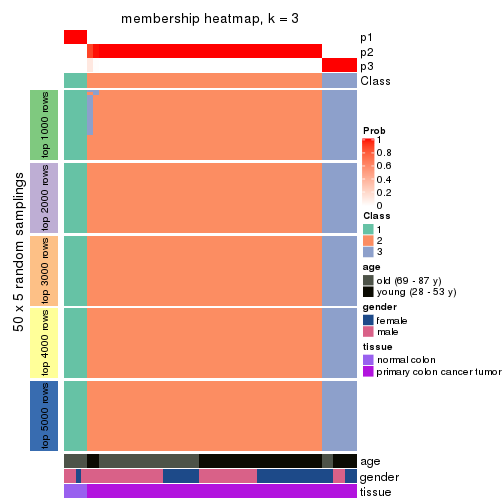
membership_heatmap(res, k = 4)
membership_heatmap(res, k = 5)
membership_heatmap(res, k = 6)
As soon as we have had the classes for columns, we can look for signatures which are significantly different between classes which can be candidate marks for certain classes. Following are the heatmaps for signatures.
Signature heatmaps where rows are scaled:
get_signatures(res, k = 2)
get_signatures(res, k = 3)
get_signatures(res, k = 4)
get_signatures(res, k = 5)
get_signatures(res, k = 6)
Signature heatmaps where rows are not scaled:
get_signatures(res, k = 2, scale_rows = FALSE)
get_signatures(res, k = 3, scale_rows = FALSE)
get_signatures(res, k = 4, scale_rows = FALSE)
get_signatures(res, k = 5, scale_rows = FALSE)
get_signatures(res, k = 6, scale_rows = FALSE)
Compare the overlap of signatures from different k:
compare_signatures(res)
get_signature() returns a data frame invisibly. TO get the list of signatures, the function
call should be assigned to a variable explicitly. In following code, if plot argument is set
to FALSE, no heatmap is plotted while only the differential analysis is performed.
# code only for demonstration
tb = get_signature(res, k = ..., plot = FALSE)
An example of the output of tb is:
#> which_row fdr mean_1 mean_2 scaled_mean_1 scaled_mean_2 km
#> 1 38 0.042760348 8.373488 9.131774 -0.5533452 0.5164555 1
#> 2 40 0.018707592 7.106213 8.469186 -0.6173731 0.5762149 1
#> 3 55 0.019134737 10.221463 11.207825 -0.6159697 0.5749050 1
#> 4 59 0.006059896 5.921854 7.869574 -0.6899429 0.6439467 1
#> 5 60 0.018055526 8.928898 10.211722 -0.6204761 0.5791110 1
#> 6 98 0.009384629 15.714769 14.887706 0.6635654 -0.6193277 2
...
The columns in tb are:
which_row: row indices corresponding to the input matrix.fdr: FDR for the differential test. mean_x: The mean value in group x.scaled_mean_x: The mean value in group x after rows are scaled.km: Row groups if k-means clustering is applied to rows.UMAP plot which shows how samples are separated.
dimension_reduction(res, k = 2, method = "UMAP")
dimension_reduction(res, k = 3, method = "UMAP")
dimension_reduction(res, k = 4, method = "UMAP")
dimension_reduction(res, k = 5, method = "UMAP")
dimension_reduction(res, k = 6, method = "UMAP")
Following heatmap shows how subgroups are split when increasing k:
collect_classes(res)
Test correlation between subgroups and known annotations. If the known annotation is numeric, one-way ANOVA test is applied, and if the known annotation is discrete, chi-squared contingency table test is applied.
test_to_known_factors(res)
#> n age(p) gender(p) tissue(p) k
#> ATC:pam 50 0.2564 0.506 7.18e-08 2
#> ATC:pam 50 0.0713 0.392 1.39e-11 3
#> ATC:pam 50 0.0959 0.577 7.99e-11 4
#> ATC:pam 46 0.0681 0.666 2.46e-09 5
#> ATC:pam 45 0.2028 0.507 1.45e-08 6
If matrix rows can be associated to genes, consider to use functional_enrichment(res,
...) to perform function enrichment for the signature genes. See this vignette for more detailed explanations.
The object with results only for a single top-value method and a single partition method can be extracted as:
res = res_list["ATC", "mclust"]
# you can also extract it by
# res = res_list["ATC:mclust"]
A summary of res and all the functions that can be applied to it:
res
#> A 'ConsensusPartition' object with k = 2, 3, 4, 5, 6.
#> On a matrix with 16230 rows and 50 columns.
#> Top rows (1000, 2000, 3000, 4000, 5000) are extracted by 'ATC' method.
#> Subgroups are detected by 'mclust' method.
#> Performed in total 1250 partitions by row resampling.
#> Best k for subgroups seems to be 3.
#>
#> Following methods can be applied to this 'ConsensusPartition' object:
#> [1] "cola_report" "collect_classes" "collect_plots"
#> [4] "collect_stats" "colnames" "compare_signatures"
#> [7] "consensus_heatmap" "dimension_reduction" "functional_enrichment"
#> [10] "get_anno_col" "get_anno" "get_classes"
#> [13] "get_consensus" "get_matrix" "get_membership"
#> [16] "get_param" "get_signatures" "get_stats"
#> [19] "is_best_k" "is_stable_k" "membership_heatmap"
#> [22] "ncol" "nrow" "plot_ecdf"
#> [25] "rownames" "select_partition_number" "show"
#> [28] "suggest_best_k" "test_to_known_factors"
collect_plots() function collects all the plots made from res for all k (number of partitions)
into one single page to provide an easy and fast comparison between different k.
collect_plots(res)
The plots are:
k and the heatmap of
predicted classes for each k.k.k.k.All the plots in panels can be made by individual functions and they are plotted later in this section.
select_partition_number() produces several plots showing different
statistics for choosing “optimized” k. There are following statistics:
k;k, the area increased is defined as \(A_k - A_{k-1}\).The detailed explanations of these statistics can be found in the cola vignette.
Generally speaking, lower PAC score, higher mean silhouette score or higher
concordance corresponds to better partition. Rand index and Jaccard index
measure how similar the current partition is compared to partition with k-1.
If they are too similar, we won't accept k is better than k-1.
select_partition_number(res)
The numeric values for all these statistics can be obtained by get_stats().
get_stats(res)
#> k 1-PAC mean_silhouette concordance area_increased Rand Jaccard
#> 2 2 0.549 0.682 0.883 0.2855 0.754 0.754
#> 3 3 0.575 0.797 0.882 0.7571 0.742 0.667
#> 4 4 0.423 0.632 0.789 0.2634 0.767 0.583
#> 5 5 0.702 0.804 0.885 0.0987 0.960 0.888
#> 6 6 0.725 0.683 0.846 0.1295 0.768 0.393
suggest_best_k() suggests the best \(k\) based on these statistics. The rules are as follows:
suggest_best_k(res)
#> [1] 3
Following shows the table of the partitions (You need to click the show/hide
code output link to see it). The membership matrix (columns with name p*)
is inferred by
clue::cl_consensus()
function with the SE method. Basically the value in the membership matrix
represents the probability to belong to a certain group. The finall class
label for an item is determined with the group with highest probability it
belongs to.
In get_classes() function, the entropy is calculated from the membership
matrix and the silhouette score is calculated from the consensus matrix.
cbind(get_classes(res, k = 2), get_membership(res, k = 2))
#> class entropy silhouette p1 p2
#> GSM615919 1 0.9996 0.107 0.512 0.488
#> GSM615921 2 0.8813 0.533 0.300 0.700
#> GSM615922 2 0.8661 0.553 0.288 0.712
#> GSM615925 2 0.9993 -0.132 0.484 0.516
#> GSM615926 2 0.8661 0.553 0.288 0.712
#> GSM615933 2 0.0000 0.852 0.000 1.000
#> GSM615939 2 0.0000 0.852 0.000 1.000
#> GSM615941 2 0.0000 0.852 0.000 1.000
#> GSM615944 2 0.0376 0.850 0.004 0.996
#> GSM615945 2 0.0000 0.852 0.000 1.000
#> GSM615947 2 0.0000 0.852 0.000 1.000
#> GSM615948 2 0.0000 0.852 0.000 1.000
#> GSM615951 2 0.0000 0.852 0.000 1.000
#> GSM615918 1 0.9996 0.107 0.512 0.488
#> GSM615927 2 0.8813 0.533 0.300 0.700
#> GSM615929 2 0.8861 0.525 0.304 0.696
#> GSM615931 2 0.0000 0.852 0.000 1.000
#> GSM615937 2 0.0000 0.852 0.000 1.000
#> GSM615938 2 0.0000 0.852 0.000 1.000
#> GSM615940 2 0.0000 0.852 0.000 1.000
#> GSM615946 2 0.0000 0.852 0.000 1.000
#> GSM615952 2 0.0376 0.850 0.004 0.996
#> GSM615953 2 0.0000 0.852 0.000 1.000
#> GSM615955 2 0.8763 0.539 0.296 0.704
#> GSM721722 2 0.9427 0.385 0.360 0.640
#> GSM721723 2 0.3879 0.795 0.076 0.924
#> GSM721724 2 0.0000 0.852 0.000 1.000
#> GSM615917 1 0.9996 0.107 0.512 0.488
#> GSM615920 2 0.9996 -0.149 0.488 0.512
#> GSM615923 2 0.8555 0.565 0.280 0.720
#> GSM615928 2 0.8763 0.540 0.296 0.704
#> GSM615934 2 0.0000 0.852 0.000 1.000
#> GSM615950 2 0.0000 0.852 0.000 1.000
#> GSM615954 2 0.0000 0.852 0.000 1.000
#> GSM615956 2 0.0000 0.852 0.000 1.000
#> GSM615958 1 0.0000 0.687 1.000 0.000
#> GSM615924 2 0.8763 0.540 0.296 0.704
#> GSM615930 2 0.0000 0.852 0.000 1.000
#> GSM615932 2 0.0000 0.852 0.000 1.000
#> GSM615935 2 0.0000 0.852 0.000 1.000
#> GSM615936 2 0.0000 0.852 0.000 1.000
#> GSM615942 2 0.1184 0.842 0.016 0.984
#> GSM615943 2 0.0000 0.852 0.000 1.000
#> GSM615949 2 0.0000 0.852 0.000 1.000
#> GSM615957 2 0.0000 0.852 0.000 1.000
#> GSM721720 2 0.0000 0.852 0.000 1.000
#> GSM721721 2 0.8813 0.533 0.300 0.700
#> GSM615959 1 0.0000 0.687 1.000 0.000
#> GSM615960 1 0.0000 0.687 1.000 0.000
#> GSM615961 1 0.0000 0.687 1.000 0.000
cbind(get_classes(res, k = 3), get_membership(res, k = 3))
#> class entropy silhouette p1 p2 p3
#> GSM615919 3 0.3192 0.759 0.112 0.000 0.888
#> GSM615921 2 0.6255 0.698 0.016 0.684 0.300
#> GSM615922 2 0.5216 0.713 0.000 0.740 0.260
#> GSM615925 3 0.2878 0.759 0.096 0.000 0.904
#> GSM615926 3 0.3038 0.758 0.000 0.104 0.896
#> GSM615933 2 0.1411 0.872 0.000 0.964 0.036
#> GSM615939 2 0.0424 0.877 0.000 0.992 0.008
#> GSM615941 2 0.5431 0.550 0.000 0.716 0.284
#> GSM615944 3 0.5988 0.518 0.000 0.368 0.632
#> GSM615945 2 0.0592 0.876 0.000 0.988 0.012
#> GSM615947 2 0.0424 0.877 0.000 0.992 0.008
#> GSM615948 2 0.1163 0.876 0.000 0.972 0.028
#> GSM615951 2 0.2261 0.860 0.000 0.932 0.068
#> GSM615918 3 0.3192 0.759 0.112 0.000 0.888
#> GSM615927 2 0.6255 0.698 0.016 0.684 0.300
#> GSM615929 3 0.3043 0.773 0.008 0.084 0.908
#> GSM615931 2 0.0000 0.875 0.000 1.000 0.000
#> GSM615937 2 0.3921 0.846 0.016 0.872 0.112
#> GSM615938 2 0.2066 0.863 0.000 0.940 0.060
#> GSM615940 2 0.2448 0.859 0.000 0.924 0.076
#> GSM615946 2 0.0000 0.875 0.000 1.000 0.000
#> GSM615952 3 0.6252 0.325 0.000 0.444 0.556
#> GSM615953 2 0.0424 0.877 0.000 0.992 0.008
#> GSM615955 3 0.2356 0.775 0.000 0.072 0.928
#> GSM721722 3 0.5117 0.729 0.108 0.060 0.832
#> GSM721723 2 0.4209 0.842 0.016 0.856 0.128
#> GSM721724 2 0.0592 0.878 0.000 0.988 0.012
#> GSM615917 3 0.3192 0.759 0.112 0.000 0.888
#> GSM615920 3 0.4892 0.761 0.112 0.048 0.840
#> GSM615923 2 0.6224 0.701 0.016 0.688 0.296
#> GSM615928 2 0.6255 0.698 0.016 0.684 0.300
#> GSM615934 2 0.1163 0.875 0.000 0.972 0.028
#> GSM615950 2 0.1964 0.865 0.000 0.944 0.056
#> GSM615954 2 0.0892 0.876 0.000 0.980 0.020
#> GSM615956 2 0.0424 0.877 0.000 0.992 0.008
#> GSM615958 1 0.0747 1.000 0.984 0.000 0.016
#> GSM615924 2 0.6255 0.698 0.016 0.684 0.300
#> GSM615930 2 0.3091 0.854 0.016 0.912 0.072
#> GSM615932 2 0.0592 0.877 0.000 0.988 0.012
#> GSM615935 2 0.2261 0.862 0.000 0.932 0.068
#> GSM615936 2 0.0747 0.875 0.000 0.984 0.016
#> GSM615942 2 0.3267 0.836 0.000 0.884 0.116
#> GSM615943 2 0.2165 0.862 0.000 0.936 0.064
#> GSM615949 2 0.1031 0.876 0.000 0.976 0.024
#> GSM615957 2 0.6180 0.158 0.000 0.584 0.416
#> GSM721720 2 0.0000 0.875 0.000 1.000 0.000
#> GSM721721 2 0.6255 0.698 0.016 0.684 0.300
#> GSM615959 1 0.0747 1.000 0.984 0.000 0.016
#> GSM615960 1 0.0747 1.000 0.984 0.000 0.016
#> GSM615961 1 0.0747 1.000 0.984 0.000 0.016
cbind(get_classes(res, k = 4), get_membership(res, k = 4))
#> class entropy silhouette p1 p2 p3 p4
#> GSM615919 4 0.0188 0.790 0.000 0.004 0.000 0.996
#> GSM615921 2 0.5619 0.560 0.000 0.688 0.064 0.248
#> GSM615922 3 0.7883 0.385 0.000 0.300 0.384 0.316
#> GSM615925 4 0.1174 0.790 0.000 0.020 0.012 0.968
#> GSM615926 3 0.4713 -0.256 0.000 0.000 0.640 0.360
#> GSM615933 2 0.1488 0.752 0.000 0.956 0.012 0.032
#> GSM615939 2 0.3172 0.684 0.000 0.840 0.160 0.000
#> GSM615941 3 0.4088 0.649 0.000 0.232 0.764 0.004
#> GSM615944 3 0.4336 0.388 0.000 0.060 0.812 0.128
#> GSM615945 2 0.1398 0.753 0.000 0.956 0.004 0.040
#> GSM615947 2 0.3219 0.679 0.000 0.836 0.164 0.000
#> GSM615948 2 0.3942 0.576 0.000 0.764 0.236 0.000
#> GSM615951 3 0.7002 0.616 0.000 0.352 0.520 0.128
#> GSM615918 4 0.0376 0.790 0.000 0.004 0.004 0.992
#> GSM615927 2 0.5619 0.560 0.000 0.688 0.064 0.248
#> GSM615929 4 0.6184 0.412 0.000 0.216 0.120 0.664
#> GSM615931 2 0.2469 0.712 0.000 0.892 0.108 0.000
#> GSM615937 2 0.1624 0.754 0.000 0.952 0.020 0.028
#> GSM615938 2 0.1722 0.752 0.000 0.944 0.008 0.048
#> GSM615940 3 0.5666 0.600 0.000 0.348 0.616 0.036
#> GSM615946 2 0.0817 0.752 0.000 0.976 0.024 0.000
#> GSM615952 3 0.4093 0.473 0.000 0.096 0.832 0.072
#> GSM615953 2 0.2921 0.697 0.000 0.860 0.140 0.000
#> GSM615955 4 0.4817 0.682 0.000 0.000 0.388 0.612
#> GSM721722 4 0.4819 0.716 0.004 0.000 0.344 0.652
#> GSM721723 2 0.2843 0.734 0.000 0.892 0.020 0.088
#> GSM721724 2 0.5964 0.407 0.000 0.676 0.228 0.096
#> GSM615917 4 0.0188 0.790 0.000 0.004 0.000 0.996
#> GSM615920 4 0.4277 0.737 0.000 0.000 0.280 0.720
#> GSM615923 2 0.5664 0.574 0.000 0.696 0.076 0.228
#> GSM615928 2 0.5657 0.563 0.000 0.688 0.068 0.244
#> GSM615934 3 0.4720 0.606 0.000 0.324 0.672 0.004
#> GSM615950 2 0.1722 0.752 0.000 0.944 0.008 0.048
#> GSM615954 2 0.2662 0.736 0.000 0.900 0.084 0.016
#> GSM615956 2 0.4933 -0.123 0.000 0.568 0.432 0.000
#> GSM615958 1 0.0000 1.000 1.000 0.000 0.000 0.000
#> GSM615924 2 0.5810 0.544 0.000 0.660 0.064 0.276
#> GSM615930 2 0.1584 0.753 0.000 0.952 0.012 0.036
#> GSM615932 2 0.0524 0.753 0.000 0.988 0.008 0.004
#> GSM615935 3 0.5028 0.489 0.000 0.400 0.596 0.004
#> GSM615936 3 0.4948 0.408 0.000 0.440 0.560 0.000
#> GSM615942 3 0.6448 0.616 0.000 0.316 0.592 0.092
#> GSM615943 2 0.1209 0.753 0.000 0.964 0.004 0.032
#> GSM615949 2 0.6219 0.393 0.000 0.640 0.264 0.096
#> GSM615957 3 0.6514 0.575 0.000 0.212 0.636 0.152
#> GSM721720 2 0.1902 0.741 0.000 0.932 0.064 0.004
#> GSM721721 2 0.5648 0.555 0.000 0.684 0.064 0.252
#> GSM615959 1 0.0000 1.000 1.000 0.000 0.000 0.000
#> GSM615960 1 0.0000 1.000 1.000 0.000 0.000 0.000
#> GSM615961 1 0.0000 1.000 1.000 0.000 0.000 0.000
cbind(get_classes(res, k = 5), get_membership(res, k = 5))
#> class entropy silhouette p1 p2 p3 p4 p5
#> GSM615919 4 0.0000 0.841 0.000 0.000 0.000 1.000 0.000
#> GSM615921 5 0.4940 0.732 0.000 0.088 0.008 0.180 0.724
#> GSM615922 3 0.3879 0.749 0.000 0.188 0.784 0.016 0.012
#> GSM615925 4 0.0807 0.836 0.000 0.012 0.012 0.976 0.000
#> GSM615926 3 0.4338 0.618 0.000 0.280 0.696 0.024 0.000
#> GSM615933 5 0.0693 0.858 0.000 0.008 0.012 0.000 0.980
#> GSM615939 5 0.2278 0.848 0.000 0.032 0.060 0.000 0.908
#> GSM615941 3 0.0451 0.848 0.000 0.004 0.988 0.000 0.008
#> GSM615944 3 0.1851 0.829 0.000 0.088 0.912 0.000 0.000
#> GSM615945 5 0.0671 0.859 0.000 0.004 0.016 0.000 0.980
#> GSM615947 5 0.2654 0.834 0.000 0.032 0.084 0.000 0.884
#> GSM615948 5 0.4716 0.511 0.000 0.036 0.308 0.000 0.656
#> GSM615951 3 0.1626 0.842 0.000 0.044 0.940 0.000 0.016
#> GSM615918 4 0.0000 0.841 0.000 0.000 0.000 1.000 0.000
#> GSM615927 5 0.4872 0.732 0.000 0.092 0.004 0.180 0.724
#> GSM615929 4 0.6017 0.488 0.000 0.200 0.024 0.640 0.136
#> GSM615931 5 0.1774 0.854 0.000 0.016 0.052 0.000 0.932
#> GSM615937 5 0.1026 0.857 0.000 0.024 0.004 0.004 0.968
#> GSM615938 5 0.0693 0.858 0.000 0.012 0.008 0.000 0.980
#> GSM615940 3 0.1928 0.830 0.000 0.004 0.920 0.004 0.072
#> GSM615946 5 0.0693 0.858 0.000 0.008 0.012 0.000 0.980
#> GSM615952 3 0.1638 0.841 0.000 0.064 0.932 0.000 0.004
#> GSM615953 5 0.2236 0.847 0.000 0.024 0.068 0.000 0.908
#> GSM615955 2 0.1774 0.923 0.000 0.932 0.052 0.016 0.000
#> GSM721722 2 0.1862 0.921 0.004 0.932 0.016 0.048 0.000
#> GSM721723 5 0.2199 0.849 0.000 0.016 0.008 0.060 0.916
#> GSM721724 5 0.5167 0.335 0.000 0.044 0.404 0.000 0.552
#> GSM615917 4 0.0000 0.841 0.000 0.000 0.000 1.000 0.000
#> GSM615920 4 0.3912 0.646 0.000 0.228 0.020 0.752 0.000
#> GSM615923 5 0.4696 0.746 0.000 0.084 0.004 0.172 0.740
#> GSM615928 5 0.4872 0.732 0.000 0.092 0.004 0.180 0.724
#> GSM615934 3 0.0451 0.848 0.000 0.004 0.988 0.000 0.008
#> GSM615950 5 0.0693 0.858 0.000 0.012 0.008 0.000 0.980
#> GSM615954 5 0.1408 0.858 0.000 0.008 0.044 0.000 0.948
#> GSM615956 3 0.4243 0.580 0.000 0.024 0.712 0.000 0.264
#> GSM615958 1 0.0000 1.000 1.000 0.000 0.000 0.000 0.000
#> GSM615924 5 0.4906 0.730 0.000 0.092 0.004 0.184 0.720
#> GSM615930 5 0.0854 0.858 0.000 0.008 0.012 0.004 0.976
#> GSM615932 5 0.1173 0.859 0.000 0.012 0.020 0.004 0.964
#> GSM615935 3 0.2020 0.809 0.000 0.000 0.900 0.000 0.100
#> GSM615936 3 0.2462 0.791 0.000 0.008 0.880 0.000 0.112
#> GSM615942 3 0.1597 0.840 0.000 0.048 0.940 0.000 0.012
#> GSM615943 5 0.0324 0.857 0.000 0.004 0.004 0.000 0.992
#> GSM615949 5 0.4589 0.698 0.000 0.064 0.212 0.000 0.724
#> GSM615957 3 0.1557 0.840 0.000 0.052 0.940 0.000 0.008
#> GSM721720 5 0.1557 0.857 0.000 0.008 0.052 0.000 0.940
#> GSM721721 5 0.4820 0.734 0.000 0.088 0.004 0.180 0.728
#> GSM615959 1 0.0000 1.000 1.000 0.000 0.000 0.000 0.000
#> GSM615960 1 0.0000 1.000 1.000 0.000 0.000 0.000 0.000
#> GSM615961 1 0.0000 1.000 1.000 0.000 0.000 0.000 0.000
cbind(get_classes(res, k = 6), get_membership(res, k = 6))
#> class entropy silhouette p1 p2 p3 p4 p5 p6
#> GSM615919 4 0.0146 0.8633 0 0.000 0.000 0.996 0.000 0.004
#> GSM615921 6 0.0363 0.8140 0 0.000 0.000 0.000 0.012 0.988
#> GSM615922 2 0.2806 0.7061 0 0.844 0.136 0.000 0.016 0.004
#> GSM615925 4 0.5237 0.4657 0 0.024 0.184 0.688 0.016 0.088
#> GSM615926 3 0.4446 0.1301 0 0.460 0.520 0.008 0.008 0.004
#> GSM615933 5 0.1218 0.8441 0 0.012 0.004 0.000 0.956 0.028
#> GSM615939 5 0.5779 -0.0475 0 0.408 0.136 0.000 0.448 0.008
#> GSM615941 2 0.1282 0.7671 0 0.956 0.024 0.004 0.012 0.004
#> GSM615944 2 0.2668 0.6478 0 0.828 0.168 0.000 0.000 0.004
#> GSM615945 5 0.0748 0.8440 0 0.004 0.004 0.000 0.976 0.016
#> GSM615947 2 0.5573 0.3069 0 0.524 0.136 0.000 0.336 0.004
#> GSM615948 2 0.5507 0.4053 0 0.576 0.132 0.004 0.284 0.004
#> GSM615951 2 0.2288 0.7433 0 0.896 0.072 0.000 0.028 0.004
#> GSM615918 4 0.0000 0.8658 0 0.000 0.000 1.000 0.000 0.000
#> GSM615927 6 0.0508 0.8155 0 0.004 0.000 0.000 0.012 0.984
#> GSM615929 3 0.6532 0.3122 0 0.040 0.496 0.320 0.016 0.128
#> GSM615931 5 0.2136 0.8236 0 0.048 0.048 0.000 0.904 0.000
#> GSM615937 6 0.4395 0.2775 0 0.016 0.008 0.000 0.396 0.580
#> GSM615938 5 0.1951 0.8211 0 0.016 0.000 0.000 0.908 0.076
#> GSM615940 2 0.1377 0.7651 0 0.952 0.024 0.004 0.016 0.004
#> GSM615946 5 0.0858 0.8437 0 0.028 0.004 0.000 0.968 0.000
#> GSM615952 2 0.1843 0.7468 0 0.912 0.080 0.000 0.004 0.004
#> GSM615953 2 0.5761 0.2628 0 0.516 0.136 0.000 0.336 0.012
#> GSM615955 3 0.2553 0.5566 0 0.144 0.848 0.008 0.000 0.000
#> GSM721722 3 0.3002 0.5515 0 0.100 0.848 0.048 0.000 0.004
#> GSM721723 6 0.4074 0.5435 0 0.024 0.004 0.000 0.288 0.684
#> GSM721724 2 0.2163 0.7515 0 0.892 0.016 0.000 0.092 0.000
#> GSM615917 4 0.0000 0.8658 0 0.000 0.000 1.000 0.000 0.000
#> GSM615920 3 0.5874 0.2742 0 0.024 0.512 0.360 0.004 0.100
#> GSM615923 6 0.1806 0.7931 0 0.000 0.004 0.000 0.088 0.908
#> GSM615928 6 0.0622 0.8158 0 0.008 0.000 0.000 0.012 0.980
#> GSM615934 2 0.0551 0.7674 0 0.984 0.008 0.004 0.004 0.000
#> GSM615950 5 0.1564 0.8398 0 0.024 0.000 0.000 0.936 0.040
#> GSM615954 5 0.5251 0.3110 0 0.076 0.008 0.004 0.576 0.336
#> GSM615956 2 0.4554 0.5912 0 0.712 0.124 0.000 0.160 0.004
#> GSM615958 1 0.0000 1.0000 1 0.000 0.000 0.000 0.000 0.000
#> GSM615924 6 0.1148 0.8074 0 0.020 0.000 0.004 0.016 0.960
#> GSM615930 5 0.1257 0.8292 0 0.028 0.020 0.000 0.952 0.000
#> GSM615932 5 0.1003 0.8385 0 0.016 0.020 0.000 0.964 0.000
#> GSM615935 2 0.1340 0.7668 0 0.948 0.008 0.000 0.040 0.004
#> GSM615936 2 0.0665 0.7681 0 0.980 0.008 0.004 0.008 0.000
#> GSM615942 2 0.0717 0.7680 0 0.976 0.008 0.000 0.016 0.000
#> GSM615943 5 0.0603 0.8413 0 0.000 0.004 0.000 0.980 0.016
#> GSM615949 2 0.3629 0.5643 0 0.724 0.016 0.000 0.260 0.000
#> GSM615957 2 0.2290 0.7384 0 0.892 0.084 0.000 0.020 0.004
#> GSM721720 5 0.3797 0.7538 0 0.072 0.012 0.004 0.804 0.108
#> GSM721721 6 0.2595 0.7635 0 0.024 0.048 0.020 0.012 0.896
#> GSM615959 1 0.0000 1.0000 1 0.000 0.000 0.000 0.000 0.000
#> GSM615960 1 0.0000 1.0000 1 0.000 0.000 0.000 0.000 0.000
#> GSM615961 1 0.0000 1.0000 1 0.000 0.000 0.000 0.000 0.000
Heatmaps for the consensus matrix. It visualizes the probability of two samples to be in a same group.
consensus_heatmap(res, k = 2)
consensus_heatmap(res, k = 3)
consensus_heatmap(res, k = 4)
consensus_heatmap(res, k = 5)
consensus_heatmap(res, k = 6)
Heatmaps for the membership of samples in all partitions to see how consistent they are:
membership_heatmap(res, k = 2)
membership_heatmap(res, k = 3)
membership_heatmap(res, k = 4)
membership_heatmap(res, k = 5)
membership_heatmap(res, k = 6)
As soon as we have had the classes for columns, we can look for signatures which are significantly different between classes which can be candidate marks for certain classes. Following are the heatmaps for signatures.
Signature heatmaps where rows are scaled:
get_signatures(res, k = 2)

get_signatures(res, k = 3)

get_signatures(res, k = 4)
get_signatures(res, k = 5)
get_signatures(res, k = 6)
Signature heatmaps where rows are not scaled:
get_signatures(res, k = 2, scale_rows = FALSE)
get_signatures(res, k = 3, scale_rows = FALSE)
get_signatures(res, k = 4, scale_rows = FALSE)
get_signatures(res, k = 5, scale_rows = FALSE)
get_signatures(res, k = 6, scale_rows = FALSE)
Compare the overlap of signatures from different k:
compare_signatures(res)
get_signature() returns a data frame invisibly. TO get the list of signatures, the function
call should be assigned to a variable explicitly. In following code, if plot argument is set
to FALSE, no heatmap is plotted while only the differential analysis is performed.
# code only for demonstration
tb = get_signature(res, k = ..., plot = FALSE)
An example of the output of tb is:
#> which_row fdr mean_1 mean_2 scaled_mean_1 scaled_mean_2 km
#> 1 38 0.042760348 8.373488 9.131774 -0.5533452 0.5164555 1
#> 2 40 0.018707592 7.106213 8.469186 -0.6173731 0.5762149 1
#> 3 55 0.019134737 10.221463 11.207825 -0.6159697 0.5749050 1
#> 4 59 0.006059896 5.921854 7.869574 -0.6899429 0.6439467 1
#> 5 60 0.018055526 8.928898 10.211722 -0.6204761 0.5791110 1
#> 6 98 0.009384629 15.714769 14.887706 0.6635654 -0.6193277 2
...
The columns in tb are:
which_row: row indices corresponding to the input matrix.fdr: FDR for the differential test. mean_x: The mean value in group x.scaled_mean_x: The mean value in group x after rows are scaled.km: Row groups if k-means clustering is applied to rows.UMAP plot which shows how samples are separated.
dimension_reduction(res, k = 2, method = "UMAP")
dimension_reduction(res, k = 3, method = "UMAP")
dimension_reduction(res, k = 4, method = "UMAP")
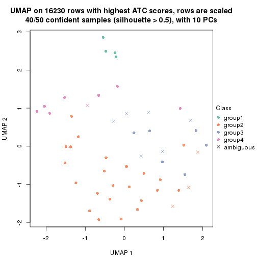
dimension_reduction(res, k = 5, method = "UMAP")
dimension_reduction(res, k = 6, method = "UMAP")
Following heatmap shows how subgroups are split when increasing k:
collect_classes(res)
Test correlation between subgroups and known annotations. If the known annotation is numeric, one-way ANOVA test is applied, and if the known annotation is discrete, chi-squared contingency table test is applied.
test_to_known_factors(res)
#> n age(p) gender(p) tissue(p) k
#> ATC:mclust 44 0.0949 0.884 1.06e-08 2
#> ATC:mclust 48 0.0243 0.461 3.78e-11 3
#> ATC:mclust 40 0.1333 0.766 1.07e-08 4
#> ATC:mclust 48 0.1731 0.263 9.44e-10 5
#> ATC:mclust 40 0.2699 0.692 1.49e-07 6
If matrix rows can be associated to genes, consider to use functional_enrichment(res,
...) to perform function enrichment for the signature genes. See this vignette for more detailed explanations.
The object with results only for a single top-value method and a single partition method can be extracted as:
res = res_list["ATC", "NMF"]
# you can also extract it by
# res = res_list["ATC:NMF"]
A summary of res and all the functions that can be applied to it:
res
#> A 'ConsensusPartition' object with k = 2, 3, 4, 5, 6.
#> On a matrix with 16230 rows and 50 columns.
#> Top rows (1000, 2000, 3000, 4000, 5000) are extracted by 'ATC' method.
#> Subgroups are detected by 'NMF' method.
#> Performed in total 1250 partitions by row resampling.
#> Best k for subgroups seems to be 3.
#>
#> Following methods can be applied to this 'ConsensusPartition' object:
#> [1] "cola_report" "collect_classes" "collect_plots"
#> [4] "collect_stats" "colnames" "compare_signatures"
#> [7] "consensus_heatmap" "dimension_reduction" "functional_enrichment"
#> [10] "get_anno_col" "get_anno" "get_classes"
#> [13] "get_consensus" "get_matrix" "get_membership"
#> [16] "get_param" "get_signatures" "get_stats"
#> [19] "is_best_k" "is_stable_k" "membership_heatmap"
#> [22] "ncol" "nrow" "plot_ecdf"
#> [25] "rownames" "select_partition_number" "show"
#> [28] "suggest_best_k" "test_to_known_factors"
collect_plots() function collects all the plots made from res for all k (number of partitions)
into one single page to provide an easy and fast comparison between different k.
collect_plots(res)
The plots are:
k and the heatmap of
predicted classes for each k.k.k.k.All the plots in panels can be made by individual functions and they are plotted later in this section.
select_partition_number() produces several plots showing different
statistics for choosing “optimized” k. There are following statistics:
k;k, the area increased is defined as \(A_k - A_{k-1}\).The detailed explanations of these statistics can be found in the cola vignette.
Generally speaking, lower PAC score, higher mean silhouette score or higher
concordance corresponds to better partition. Rand index and Jaccard index
measure how similar the current partition is compared to partition with k-1.
If they are too similar, we won't accept k is better than k-1.
select_partition_number(res)
The numeric values for all these statistics can be obtained by get_stats().
get_stats(res)
#> k 1-PAC mean_silhouette concordance area_increased Rand Jaccard
#> 2 2 0.799 0.896 0.958 0.3725 0.628 0.628
#> 3 3 0.519 0.764 0.864 0.5688 0.743 0.611
#> 4 4 0.594 0.737 0.856 0.1974 0.835 0.646
#> 5 5 0.717 0.632 0.794 0.1064 0.862 0.607
#> 6 6 0.734 0.760 0.850 0.0467 0.892 0.590
suggest_best_k() suggests the best \(k\) based on these statistics. The rules are as follows:
suggest_best_k(res)
#> [1] 3
Following shows the table of the partitions (You need to click the show/hide
code output link to see it). The membership matrix (columns with name p*)
is inferred by
clue::cl_consensus()
function with the SE method. Basically the value in the membership matrix
represents the probability to belong to a certain group. The finall class
label for an item is determined with the group with highest probability it
belongs to.
In get_classes() function, the entropy is calculated from the membership
matrix and the silhouette score is calculated from the consensus matrix.
cbind(get_classes(res, k = 2), get_membership(res, k = 2))
#> class entropy silhouette p1 p2
#> GSM615919 1 0.8016 0.701 0.756 0.244
#> GSM615921 2 0.0000 0.965 0.000 1.000
#> GSM615922 2 0.0000 0.965 0.000 1.000
#> GSM615925 1 0.9795 0.332 0.584 0.416
#> GSM615926 1 0.6623 0.793 0.828 0.172
#> GSM615933 2 0.0000 0.965 0.000 1.000
#> GSM615939 2 0.0000 0.965 0.000 1.000
#> GSM615941 2 0.5059 0.843 0.112 0.888
#> GSM615944 2 0.9754 0.241 0.408 0.592
#> GSM615945 2 0.0000 0.965 0.000 1.000
#> GSM615947 2 0.0000 0.965 0.000 1.000
#> GSM615948 2 0.0000 0.965 0.000 1.000
#> GSM615951 2 0.0000 0.965 0.000 1.000
#> GSM615918 1 0.0376 0.908 0.996 0.004
#> GSM615927 2 0.0000 0.965 0.000 1.000
#> GSM615929 2 0.9710 0.262 0.400 0.600
#> GSM615931 2 0.0000 0.965 0.000 1.000
#> GSM615937 2 0.0000 0.965 0.000 1.000
#> GSM615938 2 0.0000 0.965 0.000 1.000
#> GSM615940 2 0.0000 0.965 0.000 1.000
#> GSM615946 2 0.0000 0.965 0.000 1.000
#> GSM615952 2 0.7674 0.677 0.224 0.776
#> GSM615953 2 0.0000 0.965 0.000 1.000
#> GSM615955 1 0.0000 0.909 1.000 0.000
#> GSM721722 1 0.0000 0.909 1.000 0.000
#> GSM721723 2 0.0000 0.965 0.000 1.000
#> GSM721724 2 0.0000 0.965 0.000 1.000
#> GSM615917 1 0.4690 0.855 0.900 0.100
#> GSM615920 1 0.0000 0.909 1.000 0.000
#> GSM615923 2 0.0000 0.965 0.000 1.000
#> GSM615928 2 0.0000 0.965 0.000 1.000
#> GSM615934 2 0.0000 0.965 0.000 1.000
#> GSM615950 2 0.0000 0.965 0.000 1.000
#> GSM615954 2 0.0000 0.965 0.000 1.000
#> GSM615956 2 0.0000 0.965 0.000 1.000
#> GSM615958 1 0.0000 0.909 1.000 0.000
#> GSM615924 2 0.0000 0.965 0.000 1.000
#> GSM615930 2 0.0000 0.965 0.000 1.000
#> GSM615932 2 0.0000 0.965 0.000 1.000
#> GSM615935 2 0.0000 0.965 0.000 1.000
#> GSM615936 2 0.0000 0.965 0.000 1.000
#> GSM615942 2 0.0000 0.965 0.000 1.000
#> GSM615943 2 0.0000 0.965 0.000 1.000
#> GSM615949 2 0.0000 0.965 0.000 1.000
#> GSM615957 2 0.0000 0.965 0.000 1.000
#> GSM721720 2 0.0000 0.965 0.000 1.000
#> GSM721721 2 0.0000 0.965 0.000 1.000
#> GSM615959 1 0.0000 0.909 1.000 0.000
#> GSM615960 1 0.0000 0.909 1.000 0.000
#> GSM615961 1 0.0000 0.909 1.000 0.000
cbind(get_classes(res, k = 3), get_membership(res, k = 3))
#> class entropy silhouette p1 p2 p3
#> GSM615919 3 0.3482 0.725 0.128 0.000 0.872
#> GSM615921 3 0.2066 0.773 0.000 0.060 0.940
#> GSM615922 2 0.2804 0.835 0.016 0.924 0.060
#> GSM615925 3 0.3482 0.725 0.128 0.000 0.872
#> GSM615926 1 0.4047 0.819 0.848 0.148 0.004
#> GSM615933 2 0.4291 0.834 0.000 0.820 0.180
#> GSM615939 2 0.3038 0.857 0.000 0.896 0.104
#> GSM615941 2 0.3193 0.773 0.100 0.896 0.004
#> GSM615944 2 0.5953 0.510 0.280 0.708 0.012
#> GSM615945 2 0.4121 0.840 0.000 0.832 0.168
#> GSM615947 2 0.2625 0.857 0.000 0.916 0.084
#> GSM615948 2 0.2261 0.856 0.000 0.932 0.068
#> GSM615951 2 0.2297 0.836 0.020 0.944 0.036
#> GSM615918 3 0.3941 0.698 0.156 0.000 0.844
#> GSM615927 3 0.2066 0.773 0.000 0.060 0.940
#> GSM615929 3 0.4291 0.684 0.180 0.000 0.820
#> GSM615931 2 0.3267 0.855 0.000 0.884 0.116
#> GSM615937 2 0.5650 0.701 0.000 0.688 0.312
#> GSM615938 2 0.4796 0.806 0.000 0.780 0.220
#> GSM615940 2 0.1129 0.829 0.020 0.976 0.004
#> GSM615946 2 0.3619 0.851 0.000 0.864 0.136
#> GSM615952 2 0.5378 0.627 0.236 0.756 0.008
#> GSM615953 2 0.3816 0.854 0.000 0.852 0.148
#> GSM615955 1 0.3845 0.838 0.872 0.116 0.012
#> GSM721722 1 0.1753 0.917 0.952 0.000 0.048
#> GSM721723 2 0.5926 0.650 0.000 0.644 0.356
#> GSM721724 2 0.0892 0.848 0.000 0.980 0.020
#> GSM615917 3 0.3551 0.721 0.132 0.000 0.868
#> GSM615920 3 0.6062 0.335 0.384 0.000 0.616
#> GSM615923 3 0.4555 0.614 0.000 0.200 0.800
#> GSM615928 3 0.2066 0.773 0.000 0.060 0.940
#> GSM615934 2 0.1129 0.829 0.020 0.976 0.004
#> GSM615950 2 0.4702 0.813 0.000 0.788 0.212
#> GSM615954 3 0.6307 -0.314 0.000 0.488 0.512
#> GSM615956 2 0.3879 0.852 0.000 0.848 0.152
#> GSM615958 1 0.1163 0.930 0.972 0.000 0.028
#> GSM615924 3 0.1964 0.773 0.000 0.056 0.944
#> GSM615930 2 0.5678 0.696 0.000 0.684 0.316
#> GSM615932 2 0.4346 0.832 0.000 0.816 0.184
#> GSM615935 2 0.0424 0.844 0.000 0.992 0.008
#> GSM615936 2 0.0592 0.846 0.000 0.988 0.012
#> GSM615942 2 0.1129 0.829 0.020 0.976 0.004
#> GSM615943 2 0.4555 0.822 0.000 0.800 0.200
#> GSM615949 2 0.2537 0.858 0.000 0.920 0.080
#> GSM615957 2 0.2902 0.835 0.016 0.920 0.064
#> GSM721720 2 0.6111 0.571 0.000 0.604 0.396
#> GSM721721 3 0.2066 0.773 0.000 0.060 0.940
#> GSM615959 1 0.1163 0.930 0.972 0.000 0.028
#> GSM615960 1 0.1031 0.929 0.976 0.000 0.024
#> GSM615961 1 0.1163 0.930 0.972 0.000 0.028
cbind(get_classes(res, k = 4), get_membership(res, k = 4))
#> class entropy silhouette p1 p2 p3 p4
#> GSM615919 4 0.0657 0.872 0.012 0.000 0.004 0.984
#> GSM615921 4 0.2111 0.877 0.000 0.044 0.024 0.932
#> GSM615922 3 0.3037 0.762 0.000 0.100 0.880 0.020
#> GSM615925 4 0.0817 0.868 0.024 0.000 0.000 0.976
#> GSM615926 3 0.4282 0.698 0.160 0.008 0.808 0.024
#> GSM615933 2 0.0804 0.799 0.000 0.980 0.012 0.008
#> GSM615939 2 0.0804 0.798 0.000 0.980 0.012 0.008
#> GSM615941 2 0.5756 0.284 0.032 0.568 0.400 0.000
#> GSM615944 3 0.3435 0.739 0.100 0.036 0.864 0.000
#> GSM615945 2 0.0804 0.798 0.000 0.980 0.012 0.008
#> GSM615947 2 0.2124 0.792 0.000 0.924 0.068 0.008
#> GSM615948 2 0.3217 0.778 0.000 0.860 0.128 0.012
#> GSM615951 3 0.2741 0.749 0.000 0.096 0.892 0.012
#> GSM615918 4 0.0817 0.868 0.024 0.000 0.000 0.976
#> GSM615927 4 0.2021 0.879 0.000 0.040 0.024 0.936
#> GSM615929 4 0.2654 0.799 0.108 0.004 0.000 0.888
#> GSM615931 2 0.1109 0.795 0.000 0.968 0.028 0.004
#> GSM615937 2 0.4070 0.733 0.000 0.824 0.044 0.132
#> GSM615938 2 0.3354 0.764 0.000 0.872 0.044 0.084
#> GSM615940 2 0.4776 0.383 0.000 0.624 0.376 0.000
#> GSM615946 2 0.0524 0.798 0.000 0.988 0.008 0.004
#> GSM615952 3 0.3249 0.731 0.140 0.000 0.852 0.008
#> GSM615953 2 0.4361 0.690 0.000 0.772 0.208 0.020
#> GSM615955 3 0.4164 0.594 0.264 0.000 0.736 0.000
#> GSM721722 1 0.2675 0.874 0.892 0.000 0.008 0.100
#> GSM721723 2 0.7393 0.285 0.000 0.488 0.180 0.332
#> GSM721724 2 0.4018 0.721 0.000 0.772 0.224 0.004
#> GSM615917 4 0.0707 0.869 0.020 0.000 0.000 0.980
#> GSM615920 4 0.4543 0.483 0.324 0.000 0.000 0.676
#> GSM615923 4 0.5929 0.483 0.000 0.296 0.064 0.640
#> GSM615928 4 0.2197 0.875 0.000 0.048 0.024 0.928
#> GSM615934 2 0.4164 0.607 0.000 0.736 0.264 0.000
#> GSM615950 2 0.2797 0.776 0.000 0.900 0.032 0.068
#> GSM615954 2 0.7136 0.503 0.012 0.604 0.172 0.212
#> GSM615956 2 0.5450 0.615 0.016 0.700 0.260 0.024
#> GSM615958 1 0.0188 0.965 0.996 0.000 0.004 0.000
#> GSM615924 4 0.2021 0.879 0.000 0.040 0.024 0.936
#> GSM615930 2 0.0524 0.798 0.000 0.988 0.004 0.008
#> GSM615932 2 0.0469 0.799 0.000 0.988 0.000 0.012
#> GSM615935 2 0.3311 0.709 0.000 0.828 0.172 0.000
#> GSM615936 2 0.3123 0.725 0.000 0.844 0.156 0.000
#> GSM615942 3 0.4624 0.449 0.000 0.340 0.660 0.000
#> GSM615943 2 0.1059 0.797 0.000 0.972 0.012 0.016
#> GSM615949 2 0.3400 0.703 0.000 0.820 0.180 0.000
#> GSM615957 3 0.4330 0.715 0.048 0.112 0.828 0.012
#> GSM721720 2 0.6049 0.606 0.000 0.684 0.132 0.184
#> GSM721721 4 0.2021 0.879 0.000 0.040 0.024 0.936
#> GSM615959 1 0.0000 0.966 1.000 0.000 0.000 0.000
#> GSM615960 1 0.0336 0.963 0.992 0.000 0.008 0.000
#> GSM615961 1 0.0000 0.966 1.000 0.000 0.000 0.000
cbind(get_classes(res, k = 5), get_membership(res, k = 5))
#> class entropy silhouette p1 p2 p3 p4 p5
#> GSM615919 4 0.0290 0.93243 0.000 0.008 0.000 0.992 0.000
#> GSM615921 4 0.2438 0.90096 0.000 0.040 0.000 0.900 0.060
#> GSM615922 3 0.2460 0.71471 0.000 0.072 0.900 0.024 0.004
#> GSM615925 4 0.0510 0.92831 0.016 0.000 0.000 0.984 0.000
#> GSM615926 3 0.4208 0.61318 0.148 0.012 0.788 0.052 0.000
#> GSM615933 5 0.4182 -0.47469 0.000 0.400 0.000 0.000 0.600
#> GSM615939 5 0.2304 0.48881 0.000 0.100 0.008 0.000 0.892
#> GSM615941 3 0.6416 0.00669 0.000 0.292 0.500 0.000 0.208
#> GSM615944 3 0.1121 0.70984 0.000 0.044 0.956 0.000 0.000
#> GSM615945 5 0.4264 -0.38947 0.000 0.376 0.004 0.000 0.620
#> GSM615947 5 0.2179 0.48732 0.004 0.100 0.000 0.000 0.896
#> GSM615948 5 0.2125 0.52660 0.004 0.052 0.024 0.000 0.920
#> GSM615951 3 0.3837 0.66850 0.000 0.308 0.692 0.000 0.000
#> GSM615918 4 0.0510 0.92787 0.016 0.000 0.000 0.984 0.000
#> GSM615927 4 0.1836 0.92660 0.000 0.036 0.000 0.932 0.032
#> GSM615929 4 0.0451 0.92966 0.008 0.000 0.000 0.988 0.004
#> GSM615931 2 0.4451 0.70158 0.000 0.504 0.004 0.000 0.492
#> GSM615937 5 0.2798 0.58108 0.000 0.140 0.000 0.008 0.852
#> GSM615938 5 0.1704 0.58057 0.000 0.068 0.000 0.004 0.928
#> GSM615940 2 0.5523 0.84368 0.000 0.592 0.088 0.000 0.320
#> GSM615946 5 0.2377 0.44006 0.000 0.128 0.000 0.000 0.872
#> GSM615952 3 0.4546 0.64646 0.028 0.304 0.668 0.000 0.000
#> GSM615953 5 0.4832 0.52274 0.000 0.356 0.024 0.004 0.616
#> GSM615955 3 0.0807 0.70743 0.012 0.012 0.976 0.000 0.000
#> GSM721722 1 0.3394 0.82179 0.824 0.004 0.020 0.152 0.000
#> GSM721723 5 0.4661 0.52736 0.000 0.356 0.016 0.004 0.624
#> GSM721724 5 0.3184 0.48514 0.000 0.100 0.048 0.000 0.852
#> GSM615917 4 0.0162 0.93092 0.004 0.000 0.000 0.996 0.000
#> GSM615920 4 0.3452 0.65853 0.244 0.000 0.000 0.756 0.000
#> GSM615923 5 0.5703 0.47670 0.000 0.188 0.000 0.184 0.628
#> GSM615928 4 0.1750 0.92797 0.000 0.028 0.000 0.936 0.036
#> GSM615934 2 0.6040 0.77464 0.000 0.556 0.152 0.000 0.292
#> GSM615950 5 0.0771 0.56907 0.000 0.020 0.000 0.004 0.976
#> GSM615954 5 0.4789 0.51202 0.000 0.368 0.020 0.004 0.608
#> GSM615956 5 0.5353 0.47918 0.004 0.368 0.052 0.000 0.576
#> GSM615958 1 0.0000 0.95045 1.000 0.000 0.000 0.000 0.000
#> GSM615924 4 0.1579 0.93078 0.000 0.032 0.000 0.944 0.024
#> GSM615930 5 0.4074 -0.36301 0.000 0.364 0.000 0.000 0.636
#> GSM615932 5 0.2230 0.46847 0.000 0.116 0.000 0.000 0.884
#> GSM615935 2 0.4610 0.87442 0.000 0.596 0.016 0.000 0.388
#> GSM615936 2 0.4547 0.86675 0.000 0.588 0.012 0.000 0.400
#> GSM615942 3 0.4893 0.52838 0.000 0.208 0.704 0.000 0.088
#> GSM615943 5 0.1792 0.49966 0.000 0.084 0.000 0.000 0.916
#> GSM615949 2 0.4958 0.87611 0.000 0.592 0.036 0.000 0.372
#> GSM615957 3 0.4676 0.59435 0.004 0.392 0.592 0.000 0.012
#> GSM721720 5 0.4567 0.53072 0.000 0.356 0.012 0.004 0.628
#> GSM721721 4 0.1911 0.92587 0.000 0.036 0.004 0.932 0.028
#> GSM615959 1 0.0404 0.95198 0.988 0.000 0.000 0.012 0.000
#> GSM615960 1 0.0000 0.95045 1.000 0.000 0.000 0.000 0.000
#> GSM615961 1 0.0404 0.95198 0.988 0.000 0.000 0.012 0.000
cbind(get_classes(res, k = 6), get_membership(res, k = 6))
#> class entropy silhouette p1 p2 p3 p4 p5 p6
#> GSM615919 4 0.0146 0.9383 0.000 0.000 0.000 0.996 0.000 0.004
#> GSM615921 4 0.2424 0.8967 0.000 0.028 0.000 0.900 0.036 0.036
#> GSM615922 3 0.3192 0.7789 0.000 0.024 0.848 0.088 0.000 0.040
#> GSM615925 4 0.0935 0.9338 0.032 0.004 0.000 0.964 0.000 0.000
#> GSM615926 3 0.4045 0.7705 0.068 0.028 0.820 0.044 0.036 0.004
#> GSM615933 5 0.4052 0.4252 0.000 0.356 0.000 0.000 0.628 0.016
#> GSM615939 5 0.2796 0.7487 0.000 0.080 0.044 0.000 0.868 0.008
#> GSM615941 3 0.2290 0.7988 0.004 0.020 0.892 0.000 0.084 0.000
#> GSM615944 3 0.0806 0.8230 0.000 0.008 0.972 0.000 0.020 0.000
#> GSM615945 5 0.4123 0.2494 0.000 0.420 0.000 0.000 0.568 0.012
#> GSM615947 5 0.3034 0.7538 0.012 0.048 0.060 0.000 0.868 0.012
#> GSM615948 5 0.2230 0.7619 0.000 0.024 0.084 0.000 0.892 0.000
#> GSM615951 6 0.3457 0.6718 0.000 0.012 0.196 0.000 0.012 0.780
#> GSM615918 4 0.0777 0.9349 0.024 0.004 0.000 0.972 0.000 0.000
#> GSM615927 4 0.1078 0.9370 0.000 0.016 0.000 0.964 0.008 0.012
#> GSM615929 4 0.1138 0.9350 0.024 0.012 0.004 0.960 0.000 0.000
#> GSM615931 5 0.4220 0.6128 0.000 0.244 0.040 0.000 0.708 0.008
#> GSM615937 5 0.1937 0.7774 0.000 0.012 0.012 0.004 0.924 0.048
#> GSM615938 5 0.1334 0.7848 0.000 0.020 0.000 0.000 0.948 0.032
#> GSM615940 2 0.2340 0.7111 0.000 0.896 0.044 0.000 0.056 0.004
#> GSM615946 5 0.1334 0.7893 0.000 0.032 0.020 0.000 0.948 0.000
#> GSM615952 6 0.2723 0.7002 0.016 0.000 0.128 0.000 0.004 0.852
#> GSM615953 6 0.2768 0.8032 0.000 0.012 0.000 0.000 0.156 0.832
#> GSM615955 3 0.2573 0.7666 0.004 0.008 0.856 0.000 0.000 0.132
#> GSM721722 1 0.4108 0.7164 0.744 0.000 0.092 0.164 0.000 0.000
#> GSM721723 6 0.3533 0.7749 0.000 0.012 0.000 0.004 0.236 0.748
#> GSM721724 5 0.3309 0.7674 0.000 0.076 0.052 0.000 0.844 0.028
#> GSM615917 4 0.0405 0.9373 0.008 0.004 0.000 0.988 0.000 0.000
#> GSM615920 4 0.3883 0.5943 0.264 0.004 0.004 0.716 0.004 0.008
#> GSM615923 5 0.4771 0.5875 0.000 0.036 0.000 0.112 0.728 0.124
#> GSM615928 4 0.1251 0.9340 0.000 0.024 0.000 0.956 0.012 0.008
#> GSM615934 3 0.4307 0.5376 0.000 0.072 0.704 0.000 0.224 0.000
#> GSM615950 5 0.1633 0.7804 0.000 0.024 0.000 0.000 0.932 0.044
#> GSM615954 6 0.3864 0.6480 0.004 0.004 0.000 0.000 0.344 0.648
#> GSM615956 6 0.2567 0.8043 0.012 0.004 0.008 0.000 0.100 0.876
#> GSM615958 1 0.1152 0.9107 0.952 0.004 0.000 0.000 0.000 0.044
#> GSM615924 4 0.0603 0.9392 0.000 0.016 0.000 0.980 0.000 0.004
#> GSM615930 5 0.3296 0.6800 0.008 0.188 0.000 0.000 0.792 0.012
#> GSM615932 5 0.1980 0.7853 0.000 0.048 0.016 0.000 0.920 0.016
#> GSM615935 2 0.2030 0.7212 0.000 0.908 0.028 0.000 0.064 0.000
#> GSM615936 2 0.4948 0.0765 0.000 0.472 0.064 0.000 0.464 0.000
#> GSM615942 3 0.1913 0.8044 0.000 0.080 0.908 0.000 0.012 0.000
#> GSM615943 5 0.2201 0.7804 0.000 0.076 0.000 0.000 0.896 0.028
#> GSM615949 2 0.4252 0.6852 0.000 0.728 0.096 0.000 0.176 0.000
#> GSM615957 6 0.1768 0.7563 0.008 0.012 0.044 0.000 0.004 0.932
#> GSM721720 6 0.3733 0.7795 0.004 0.024 0.000 0.004 0.208 0.760
#> GSM721721 4 0.1332 0.9322 0.000 0.012 0.000 0.952 0.008 0.028
#> GSM615959 1 0.0146 0.9204 0.996 0.004 0.000 0.000 0.000 0.000
#> GSM615960 1 0.0777 0.9182 0.972 0.004 0.000 0.000 0.000 0.024
#> GSM615961 1 0.0146 0.9204 0.996 0.004 0.000 0.000 0.000 0.000
Heatmaps for the consensus matrix. It visualizes the probability of two samples to be in a same group.
consensus_heatmap(res, k = 2)

consensus_heatmap(res, k = 3)
consensus_heatmap(res, k = 4)
consensus_heatmap(res, k = 5)
consensus_heatmap(res, k = 6)
Heatmaps for the membership of samples in all partitions to see how consistent they are:
membership_heatmap(res, k = 2)
membership_heatmap(res, k = 3)
membership_heatmap(res, k = 4)
membership_heatmap(res, k = 5)
membership_heatmap(res, k = 6)

As soon as we have had the classes for columns, we can look for signatures which are significantly different between classes which can be candidate marks for certain classes. Following are the heatmaps for signatures.
Signature heatmaps where rows are scaled:
get_signatures(res, k = 2)
get_signatures(res, k = 3)
get_signatures(res, k = 4)
get_signatures(res, k = 5)
get_signatures(res, k = 6)
Signature heatmaps where rows are not scaled:
get_signatures(res, k = 2, scale_rows = FALSE)
get_signatures(res, k = 3, scale_rows = FALSE)
get_signatures(res, k = 4, scale_rows = FALSE)
get_signatures(res, k = 5, scale_rows = FALSE)
get_signatures(res, k = 6, scale_rows = FALSE)
Compare the overlap of signatures from different k:
compare_signatures(res)
get_signature() returns a data frame invisibly. TO get the list of signatures, the function
call should be assigned to a variable explicitly. In following code, if plot argument is set
to FALSE, no heatmap is plotted while only the differential analysis is performed.
# code only for demonstration
tb = get_signature(res, k = ..., plot = FALSE)
An example of the output of tb is:
#> which_row fdr mean_1 mean_2 scaled_mean_1 scaled_mean_2 km
#> 1 38 0.042760348 8.373488 9.131774 -0.5533452 0.5164555 1
#> 2 40 0.018707592 7.106213 8.469186 -0.6173731 0.5762149 1
#> 3 55 0.019134737 10.221463 11.207825 -0.6159697 0.5749050 1
#> 4 59 0.006059896 5.921854 7.869574 -0.6899429 0.6439467 1
#> 5 60 0.018055526 8.928898 10.211722 -0.6204761 0.5791110 1
#> 6 98 0.009384629 15.714769 14.887706 0.6635654 -0.6193277 2
...
The columns in tb are:
which_row: row indices corresponding to the input matrix.fdr: FDR for the differential test. mean_x: The mean value in group x.scaled_mean_x: The mean value in group x after rows are scaled.km: Row groups if k-means clustering is applied to rows.UMAP plot which shows how samples are separated.
dimension_reduction(res, k = 2, method = "UMAP")
dimension_reduction(res, k = 3, method = "UMAP")
dimension_reduction(res, k = 4, method = "UMAP")
dimension_reduction(res, k = 5, method = "UMAP")
dimension_reduction(res, k = 6, method = "UMAP")
Following heatmap shows how subgroups are split when increasing k:
collect_classes(res)
Test correlation between subgroups and known annotations. If the known annotation is numeric, one-way ANOVA test is applied, and if the known annotation is discrete, chi-squared contingency table test is applied.
test_to_known_factors(res)
#> n age(p) gender(p) tissue(p) k
#> ATC:NMF 47 0.936 1.000 1.55e-03 2
#> ATC:NMF 48 0.707 0.528 2.82e-06 3
#> ATC:NMF 44 0.141 0.596 1.70e-07 4
#> ATC:NMF 38 0.291 0.473 6.17e-06 5
#> ATC:NMF 47 0.546 0.263 6.80e-07 6
If matrix rows can be associated to genes, consider to use functional_enrichment(res,
...) to perform function enrichment for the signature genes. See this vignette for more detailed explanations.
sessionInfo()
#> R version 3.6.0 (2019-04-26)
#> Platform: x86_64-pc-linux-gnu (64-bit)
#> Running under: CentOS Linux 7 (Core)
#>
#> Matrix products: default
#> BLAS: /usr/lib64/libblas.so.3.4.2
#> LAPACK: /usr/lib64/liblapack.so.3.4.2
#>
#> locale:
#> [1] LC_CTYPE=en_GB.UTF-8 LC_NUMERIC=C LC_TIME=en_GB.UTF-8
#> [4] LC_COLLATE=en_GB.UTF-8 LC_MONETARY=en_GB.UTF-8 LC_MESSAGES=en_GB.UTF-8
#> [7] LC_PAPER=en_GB.UTF-8 LC_NAME=C LC_ADDRESS=C
#> [10] LC_TELEPHONE=C LC_MEASUREMENT=en_GB.UTF-8 LC_IDENTIFICATION=C
#>
#> attached base packages:
#> [1] grid stats graphics grDevices utils datasets methods base
#>
#> other attached packages:
#> [1] genefilter_1.66.0 ComplexHeatmap_2.3.1 markdown_1.1 knitr_1.26
#> [5] GetoptLong_0.1.7 cola_1.3.2
#>
#> loaded via a namespace (and not attached):
#> [1] circlize_0.4.8 shape_1.4.4 xfun_0.11 slam_0.1-46
#> [5] lattice_0.20-38 splines_3.6.0 colorspace_1.4-1 vctrs_0.2.0
#> [9] stats4_3.6.0 blob_1.2.0 XML_3.98-1.20 survival_2.44-1.1
#> [13] rlang_0.4.2 pillar_1.4.2 DBI_1.0.0 BiocGenerics_0.30.0
#> [17] bit64_0.9-7 RColorBrewer_1.1-2 matrixStats_0.55.0 stringr_1.4.0
#> [21] GlobalOptions_0.1.1 evaluate_0.14 memoise_1.1.0 Biobase_2.44.0
#> [25] IRanges_2.18.3 parallel_3.6.0 AnnotationDbi_1.46.1 highr_0.8
#> [29] Rcpp_1.0.3 xtable_1.8-4 backports_1.1.5 S4Vectors_0.22.1
#> [33] annotate_1.62.0 skmeans_0.2-11 bit_1.1-14 microbenchmark_1.4-7
#> [37] brew_1.0-6 impute_1.58.0 rjson_0.2.20 png_0.1-7
#> [41] digest_0.6.23 stringi_1.4.3 polyclip_1.10-0 clue_0.3-57
#> [45] tools_3.6.0 bitops_1.0-6 magrittr_1.5 eulerr_6.0.0
#> [49] RCurl_1.95-4.12 RSQLite_2.1.4 tibble_2.1.3 cluster_2.1.0
#> [53] crayon_1.3.4 pkgconfig_2.0.3 zeallot_0.1.0 Matrix_1.2-17
#> [57] xml2_1.2.2 httr_1.4.1 R6_2.4.1 mclust_5.4.5
#> [61] compiler_3.6.0